<!DOCTYPE HTML>
<html lang="en" class="sidebar-visible no-js light">
    <head>
        <!-- Book generated using mdBook -->
        <meta charset="UTF-8">
        <title>ImportantArticles</title>
        <meta name="robots" content="noindex" />
        <!-- Custom HTML head -->
        <meta content="text/html; charset=utf-8" http-equiv="Content-Type">
        <meta name="description" content="The note of Important Articles">
        <meta name="viewport" content="width=device-width, initial-scale=1">
        <meta name="theme-color" content="#ffffff" />

        <link rel="icon" href="favicon.svg">
        <link rel="shortcut icon" href="favicon.png">
        <link rel="stylesheet" href="css/variables.css">
        <link rel="stylesheet" href="css/general.css">
        <link rel="stylesheet" href="css/chrome.css">
        <link rel="stylesheet" href="css/print.css" media="print">
        <!-- Fonts -->
        <link rel="stylesheet" href="FontAwesome/css/font-awesome.css">
        <link rel="stylesheet" href="fonts/fonts.css">
        <!-- Highlight.js Stylesheets -->
        <link rel="stylesheet" href="highlight.css">
        <link rel="stylesheet" href="tomorrow-night.css">
        <link rel="stylesheet" href="ayu-highlight.css">

        <!-- Custom theme stylesheets -->
        <link rel="stylesheet" href="theme/pagetoc.css">
        <link rel="stylesheet" href="theme/custom.css">
        <link rel="stylesheet" href="theme/font-sizes.css">
        <!-- MathJax -->
        <script async type="text/javascript" src="https://cdnjs.cloudflare.com/ajax/libs/mathjax/2.7.1/MathJax.js?config=TeX-AMS-MML_HTMLorMML"></script>
    </head>
    <body>
        <!-- Provide site root to javascript -->
        <script type="text/javascript">
            var path_to_root = "";
            var default_theme = window.matchMedia("(prefers-color-scheme: dark)").matches ? "navy" : "light";
        </script>

        <!-- Work around some values being stored in localStorage wrapped in quotes -->
        <script type="text/javascript">
            try {
                var theme = localStorage.getItem('mdbook-theme');
                var sidebar = localStorage.getItem('mdbook-sidebar');

                if (theme.startsWith('"') && theme.endsWith('"')) {
                    localStorage.setItem('mdbook-theme', theme.slice(1, theme.length - 1));
                }

                if (sidebar.startsWith('"') && sidebar.endsWith('"')) {
                    localStorage.setItem('mdbook-sidebar', sidebar.slice(1, sidebar.length - 1));
                }
            } catch (e) { }
        </script>

        <!-- Set the theme before any content is loaded, prevents flash -->
        <script type="text/javascript">
            var theme;
            try { theme = localStorage.getItem('mdbook-theme'); } catch(e) { }
            if (theme === null || theme === undefined) { theme = default_theme; }
            var html = document.querySelector('html');
            html.classList.remove('no-js')
            html.classList.remove('light')
            html.classList.add(theme);
            html.classList.add('js');
        </script>

        <!-- Hide / unhide sidebar before it is displayed -->
        <script type="text/javascript">
            var html = document.querySelector('html');
            var sidebar = 'hidden';
            if (document.body.clientWidth >= 1080) {
                try { sidebar = localStorage.getItem('mdbook-sidebar'); } catch(e) { }
                sidebar = sidebar || 'visible';
            }
            html.classList.remove('sidebar-visible');
            html.classList.add("sidebar-" + sidebar);
        </script>

        <nav id="sidebar" class="sidebar" aria-label="Table of contents">
            <div class="sidebar-scrollbox">
                <ol class="chapter"><li class="chapter-item expanded "><a href="index.html"><strong aria-hidden="true">1.</strong> Introduction</a></li><li class="chapter-item expanded affix "><li class="part-title">动画3D管线 - 3DMesh的驱动</li><li class="chapter-item expanded "><a href="MeshAnimation/SkeletonProxy/SkeletonProxy.html"><strong aria-hidden="true">2.</strong> 基于骨骼代理的Mesh的驱动</a></li><li><ol class="section"><li class="chapter-item expanded "><a href="MeshAnimation/SkeletonProxy/MotionPrior.html"><strong aria-hidden="true">2.1.</strong> 骨骼动作先验</a></li><li class="chapter-item expanded "><a href="MeshAnimation/SkeletonProxy/MotionGenerationDiscreteRepresentation.html"><strong aria-hidden="true">2.2.</strong> 基于离散表示的骨骼动作生成</a></li><li class="chapter-item expanded "><div><strong aria-hidden="true">2.3.</strong> 基于连续表示的骨骼动作生成</div></li><li><ol class="section"><li class="chapter-item expanded "><a href="MeshAnimation/SkeletonProxy/Locomotion.html"><strong aria-hidden="true">2.3.1.</strong> locomotion</a></li><li class="chapter-item expanded "><div><strong aria-hidden="true">2.3.2.</strong> 文生动作</div></li><li><ol class="section"><li class="chapter-item expanded "><a href="MeshAnimation/SkeletonProxy/MotionGeneration/Text2Motion/DiffusionBasedText2Motion.html"><strong aria-hidden="true">2.3.2.1.</strong> 基于Diffusion的文生动作</a></li><li class="chapter-item expanded "><a href="MeshAnimation/SkeletonProxy/MotionGeneration/Text2Motion/MambaBasedText2Motion.html"><strong aria-hidden="true">2.3.2.2.</strong> 基于Mamba的文生动作</a></li></ol></li></ol></li><li class="chapter-item expanded "><a href="MeshAnimation/SkeletonProxy/HPE_HMR_Summary.html"><strong aria-hidden="true">2.4.</strong> 基于视觉的人类骨骼动作捕捉HPE</a></li><li class="chapter-item expanded "><a href="CharacterAnimation/HumanFacialAnimation.html"><strong aria-hidden="true">2.5.</strong> facial and expression</a></li><li class="chapter-item expanded "><a href="CharacterAnimation/HumanMotionGenerationSummary.html"><strong aria-hidden="true">2.6.</strong> Human Motion Generation: A Survey</a></li></ol></li><li class="chapter-item expanded "><a href="MeshAnimation/E2E.html"><strong aria-hidden="true">3.</strong> 无代理的Mesh驱动</a></li><li class="chapter-item expanded affix "><li class="part-title">动画3D管线 - Nerf驱动</li><li class="chapter-item expanded "><a href="NerfAnimation.html"><strong aria-hidden="true">4.</strong> NerfAnimation</a></li><li class="chapter-item expanded affix "><li class="part-title">动画3D管线 - 3DGS的驱动</li><li class="chapter-item expanded "><a href="3DGSAnimation/3DGS.html"><strong aria-hidden="true">5.</strong> 3DGS VS. Nerf</a></li><li class="chapter-item expanded "><a href="3DGSAnimation/Dynamic.html"><strong aria-hidden="true">6.</strong> 动态3DGS</a></li><li class="chapter-item expanded "><a href="3DGSAnimation/Static.html"><strong aria-hidden="true">7.</strong> 静态3DGS</a></li><li><ol class="section"><li class="chapter-item expanded "><a href="3DGSAnimation/4DReconstruction.html"><strong aria-hidden="true">7.1.</strong> 基于静态3DGS的4D重建</a></li><li class="chapter-item expanded "><a href="3DGSAnimation/3DGSAnimation.html"><strong aria-hidden="true">7.2.</strong> 静态3DGS驱动</a></li></ol></li><li class="chapter-item expanded "><a href="3D_Gaussian_Splatting.html"><strong aria-hidden="true">8.</strong> A Survey on 3D Gaussian Splatting</a></li><li class="chapter-item expanded "><a href="AnimationGeneration.html"><strong aria-hidden="true">9.</strong> Animal Generation</a></li><li class="chapter-item expanded affix "><li class="part-title">动画2D管线 - 像素的驱动，可控视频生成</li><li class="chapter-item expanded "><a href="VideoDiffusionModels/Introduction.html"><strong aria-hidden="true">10.</strong> Introduction</a></li><li class="chapter-item expanded "><a href="VideoDiffusionModels/VideoGeneration/VideoGeneration.html"><strong aria-hidden="true">11.</strong> Video Generation</a></li><li><ol class="section"><li class="chapter-item expanded "><a href="VideoDiffusionModels/VideoGeneration/Pioneeringearlyworks.html"><strong aria-hidden="true">11.1.</strong> 闭源T2V大模型</a></li><li class="chapter-item expanded "><a href="VideoDiffusionModels/VideoGeneration/Open-sourcebasemodels.html"><strong aria-hidden="true">11.2.</strong> 开源T2V基模型</a></li><li class="chapter-item expanded "><a href="VideoDiffusionModels/VideoGeneration/WorksBasedOnT2I.html"><strong aria-hidden="true">11.3.</strong> Works Based on T2I 基模型</a></li><li class="chapter-item expanded "><a href="VideoDiffusionModels/VideoGeneration/WorksBasedOnT2V.html"><strong aria-hidden="true">11.4.</strong> Works Based on T2V 基模型</a></li><li class="chapter-item expanded "><a href="VideoDiffusionModels/VideoGeneration/Storyboard.html"><strong aria-hidden="true">11.5.</strong> Storyboard</a></li><li class="chapter-item expanded "><a href="VideoDiffusionModels/VideoGeneration/Longvideogeneration.html"><strong aria-hidden="true">11.6.</strong> Long video generation/Storyboard</a></li><li class="chapter-item expanded "><a href="VideoDiffusionModels/VideoGeneration/Multimodal-guidedgeneration.html"><strong aria-hidden="true">11.7.</strong> Multimodal-guided generation</a></li><li class="chapter-item expanded "><a href="CharacterAnimation/HumanVideoGeneration.html"><strong aria-hidden="true">11.8.</strong> Human Video Generation</a></li></ol></li><li class="chapter-item expanded "><a href="VideoDiffusionModels/VideoEditing.html"><strong aria-hidden="true">12.</strong> Video Editing</a></li><li><ol class="section"><li class="chapter-item expanded "><a href="VideoDiffusionModels/VideoEditing/Tuning-based.html"><strong aria-hidden="true">12.1.</strong> Tuning-based</a></li><li class="chapter-item expanded "><a href="VideoDiffusionModels/VideoEditing/Training-free.html"><strong aria-hidden="true">12.2.</strong> Training-free</a></li><li class="chapter-item expanded "><a href="VideoDiffusionModels/VideoEditing/ControlledEditing.html"><strong aria-hidden="true">12.3.</strong> Controlled Editing</a></li><li class="chapter-item expanded "><a href="VideoDiffusionModels/VideoEditing/3D-Aware.html"><strong aria-hidden="true">12.4.</strong> 3D-Aware</a></li><li class="chapter-item expanded "><a href="VideoDiffusionModels/VideoEditing/OtherGuidance.html"><strong aria-hidden="true">12.5.</strong> Other Guidance</a></li></ol></li><li class="chapter-item expanded "><a href="VideoDiffusionModels/EvaluationMetrics.html"><strong aria-hidden="true">13.</strong> 评价指标</a></li><li class="chapter-item expanded affix "><li class="part-title">动画2D管线 - 2D图形的驱动</li><li class="chapter-item expanded "><a href="ClipAnimation.html"><strong aria-hidden="true">14.</strong> 2D图形驱动</a></li><li class="chapter-item expanded affix "><li class="part-title">通用AI技术</li><li class="chapter-item expanded "><a href="PhysicsSimulation/PINN.html"><strong aria-hidden="true">15.</strong> 2025 PINN Survey</a></li><li class="chapter-item expanded "><a href="PhysicsSimulation/Fluid.html"><strong aria-hidden="true">16.</strong> 2024 Fluid Survey</a></li><li class="chapter-item expanded "><a href="NeurIPS2024FlowMatchigTurorial/Agenda.html"><strong aria-hidden="true">17.</strong> NeurIPS 2024 Flow Matchig Turorial</a></li><li><ol class="section"><li class="chapter-item expanded "><a href="NeurIPS2024FlowMatchigTurorial/FlowMatchingBasics.html"><strong aria-hidden="true">17.1.</strong> Flow Matching Basics</a></li><li class="chapter-item expanded "><a href="NeurIPS2024FlowMatchigTurorial/FlowMatchingAdvancedDesigns.html"><strong aria-hidden="true">17.2.</strong> Flow Matching Advanced Designs</a></li><li class="chapter-item expanded "><a href="NeurIPS2024FlowMatchigTurorial/ModelAdaptation.html"><strong aria-hidden="true">17.3.</strong> Model Adaptation</a></li><li class="chapter-item expanded "><a href="NeurIPS2024FlowMatchigTurorial/GeneratorMatchingandDiscreteFlows.html"><strong aria-hidden="true">17.4.</strong> Generator Matching and Discrete Flows</a></li></ol></li><li class="chapter-item expanded "><a href="diffusion-tutorial-part/Introduction.html"><strong aria-hidden="true">18.</strong> Introduction</a></li><li class="chapter-item expanded "><div><strong aria-hidden="true">19.</strong> Fundamentals</div></li><li><ol class="section"><li class="chapter-item expanded "><a href="diffusion-tutorial-part/Fundamentals/DenoisingDiffusionProbabilisticModels.html"><strong aria-hidden="true">19.1.</strong> Denoising Diffusion Probabilistic Models</a></li><li class="chapter-item expanded "><a href="diffusion-tutorial-part/Fundamentals/Score-basedGenerativeModelingwithDifferentialEquations.html"><strong aria-hidden="true">19.2.</strong> Score-based Generative Modeling with Differential Equations</a></li><li class="chapter-item expanded "><a href="diffusion-tutorial-part/Fundamentals/AcceleratedSampling.html"><strong aria-hidden="true">19.3.</strong> Accelerated Sampling</a></li><li class="chapter-item expanded "><a href="diffusion-tutorial-part/Fundamentals/ConditionalGenerationandGuidance.html"><strong aria-hidden="true">19.4.</strong> Conditional Generation and Guidance</a></li><li class="chapter-item expanded "><a href="diffusion-tutorial-part/Fundamentals/Summary.html"><strong aria-hidden="true">19.5.</strong> Summary</a></li></ol></li><li class="chapter-item expanded "><a href="diffusion-tutorial-part/Architecture.html"><strong aria-hidden="true">20.</strong> T2I 基模型</a></li><li class="chapter-item expanded "><div><strong aria-hidden="true">21.</strong> Image Applications Based on 基模型</div></li><li><ol class="section"><li class="chapter-item expanded "><a href="diffusion-tutorial-part/ApplicationOnImage/ImageEditing.html"><strong aria-hidden="true">21.1.</strong> 图像生成/编辑</a></li><li class="chapter-item expanded "><a href="diffusion-tutorial-part/ApplicationOnImage/InverseProblems.html"><strong aria-hidden="true">21.2.</strong> 图像去噪/图像超分/图像补全</a></li><li class="chapter-item expanded "><a href="diffusion-tutorial-part/ApplicationOnImage/LargeContents.html"><strong aria-hidden="true">21.3.</strong> 大图生成</a></li></ol></li><li class="chapter-item expanded "><div><strong aria-hidden="true">22.</strong> 3D Applications Based on Diffusion</div></li><li><ol class="section"><li class="chapter-item expanded "><a href="diffusion-tutorial-part/ApplicationsOn3D/2Ddiffusionmodelsfor3Dgeneration.html"><strong aria-hidden="true">22.1.</strong> 基于T2I基模型</a></li><li class="chapter-item expanded "><a href="diffusion-tutorial-part/ApplicationsOn3D/3D.html"><strong aria-hidden="true">22.2.</strong> 基于不同视角的3D生成</a></li><li class="chapter-item expanded "><a href="diffusion-tutorial-part/ApplicationsOn3D/Diffusionmodelsforviewsynthesis.html"><strong aria-hidden="true">22.3.</strong> 新视角合成</a></li><li class="chapter-item expanded "><a href="diffusion-tutorial-part/ApplicationsOn3D/3Dreconstruction.html"><strong aria-hidden="true">22.4.</strong> 3D重建</a></li><li class="chapter-item expanded "><a href="diffusion-tutorial-part/ApplicationsOn3D/Inverseproblems.html"><strong aria-hidden="true">22.5.</strong> 3D编辑</a></li></ol></li><li class="chapter-item expanded "><a href="diffusion-tutorial-part/ApplicationsOn3D/Safetyandlimitationsofdiffusionmodels.html"><strong aria-hidden="true">23.</strong> Safety and limitations of diffusion models</a></li><li class="chapter-item expanded "><a href="LargeMultimodalModelsNotesonCVPR2023Tutorial.html"><strong aria-hidden="true">24.</strong> Large Multimodal Models Notes on CVPR 2023 Tutorial</a></li><li class="chapter-item expanded "><a href="GenerativeModels.html"><strong aria-hidden="true">25.</strong> 生成模型</a></li><li class="chapter-item expanded affix "><li class="part-title">Others</li><li class="chapter-item expanded "><a href="数据集.html"><strong aria-hidden="true">26.</strong> 数据集</a></li><li class="chapter-item expanded "><a href="More.html"><strong aria-hidden="true">27.</strong> More</a></li><li class="chapter-item expanded affix "><li class="part-title">Views</li><li class="chapter-item expanded "><a href="Views/20250903.html"><strong aria-hidden="true">28.</strong> 2025.9.3骨骼动作生成</a></li><li class="chapter-item expanded "><a href="Views/20250914.html"><strong aria-hidden="true">29.</strong> 2025.9.14骨骼动作离散编码</a></li><li class="chapter-item expanded "><a href="Views/20250920.html"><strong aria-hidden="true">30.</strong> 2025.9.20视频可控生成</a></li></ol>
            </div>
            <div id="sidebar-resize-handle" class="sidebar-resize-handle"></div>
        </nav>

        <div id="page-wrapper" class="page-wrapper">

            <div class="page">
                <div id="menu-bar-hover-placeholder"></div>
                <div id="menu-bar" class="menu-bar sticky bordered">
                    <div class="left-buttons">
                        <button id="sidebar-toggle" class="icon-button" type="button" title="Toggle Table of Contents" aria-label="Toggle Table of Contents" aria-controls="sidebar">
                            <i class="fa fa-bars"></i>
                        </button>
                        <button id="theme-toggle" class="icon-button" type="button" title="Change theme" aria-label="Change theme" aria-haspopup="true" aria-expanded="false" aria-controls="theme-list">
                            <i class="fa fa-paint-brush"></i>
                        </button>
                        <ul id="theme-list" class="theme-popup" aria-label="Themes" role="menu">
                            <li role="none"><button role="menuitem" class="theme" id="light">Light (default)</button></li>
                            <li role="none"><button role="menuitem" class="theme" id="rust">Rust</button></li>
                            <li role="none"><button role="menuitem" class="theme" id="coal">Coal</button></li>
                            <li role="none"><button role="menuitem" class="theme" id="navy">Navy</button></li>
                            <li role="none"><button role="menuitem" class="theme" id="ayu">Ayu</button></li>
                        </ul>
                        <button id="search-toggle" class="icon-button" type="button" title="Search. (Shortkey: s)" aria-label="Toggle Searchbar" aria-expanded="false" aria-keyshortcuts="S" aria-controls="searchbar">
                            <i class="fa fa-search"></i>
                        </button>
                    </div>

                    <h1 class="menu-title">ImportantArticles</h1>

                    <div class="right-buttons">
                        <a href="print.html" title="Print this book" aria-label="Print this book">
                            <i id="print-button" class="fa fa-print"></i>
                        </a>
                        <a href="https://github.com/CaterpillarStudyGroup/ImportantArticles" title="Git repository" aria-label="Git repository">
                            <i id="git-repository-button" class="fa fa-github"></i>
                        </a>
                    </div>
                </div>

                <div id="search-wrapper" class="hidden">
                    <form id="searchbar-outer" class="searchbar-outer">
                        <input type="search" id="searchbar" name="searchbar" placeholder="Search this book ..." aria-controls="searchresults-outer" aria-describedby="searchresults-header">
                    </form>
                    <div id="searchresults-outer" class="searchresults-outer hidden">
                        <div id="searchresults-header" class="searchresults-header"></div>
                        <ul id="searchresults">
                        </ul>
                    </div>
                </div>
                <!-- Apply ARIA attributes after the sidebar and the sidebar toggle button are added to the DOM -->
                <script type="text/javascript">
                    document.getElementById('sidebar-toggle').setAttribute('aria-expanded', sidebar === 'visible');
                    document.getElementById('sidebar').setAttribute('aria-hidden', sidebar !== 'visible');
                    Array.from(document.querySelectorAll('#sidebar a')).forEach(function(link) {
                        link.setAttribute('tabIndex', sidebar === 'visible' ? 0 : -1);
                    });
                </script>

                <div id="content" class="content">
                    <main><div class="sidetoc"><nav class="pagetoc"></nav></div>
                        <h1 id="本仓库论文方向"><a class="header" href="#本仓库论文方向">本仓库论文方向</a></h1>
<h2 id="动画方向"><a class="header" href="#动画方向">动画方向</a></h2>
<p>让看到的景象成为一个会动的景象，其管线为：</p>
<p>景象 --(建模)--&gt; 动画代理 --(驱动)--&gt; 会动的代理 --(渲染)--&gt; 会动的景象</p>
<p>根据代理的表达不同，又可以分为2D管线（2D建模）、3D管线(3D建模)。<br />
不同的代理有不同的驱动和渲染方式。驱动需要外观信息（来自代理）、动作信息（来自动画数据）和外观与动作的关联关系，由此引申出动作生成和动作驱动两个领域。<br />
将建模与驱动显式地分成两个步骤的方式，称为静态建模与驱动。也可以是由景象直接得到会动的的代理，称为动态建模与驱动。甚至直接由景象得到会动的景象，这就是可控文生视频。</p>
<h3 id="3d管线"><a class="header" href="#3d管线">3D管线</a></h3>
<p>优势：由于会在3D进行建模，擅长时间、空间上的一致性的保持。不太容易出现非常奇怪的驱动的结果。<br />
局限性：通常用于比较明确的主体</p>
<table><thead><tr><th>建模（外观来源、驱动代理）</th><th>驱动方式（外观与动作的关联）</th><th>动作（动作来源）</th><th>渲染</th></tr></thead><tbody>
<tr><td>Mesh建模 + 骨骼蒙皮</td><td>LBS</td><td>骨骼动作生成、骨骼动作捕捉、骨骼动作迁移</td><td>无</td></tr>
<tr><td>Mesh</td><td>无（逐顶点直接驱动）</td><td>Mesh顶点运动生成、运动捕捉、运动迁移</td><td>无</td></tr>
<tr><td>静态3DGS建模</td><td>3DGS直接驱动</td><td>无</td><td>3DGS渲染</td></tr>
<tr><td>静态3DGS建模</td><td>3DGS动作提取</td><td>3DGS绑定到骨骼</td><td>3DGS渲染</td></tr>
<tr><td>无</td><td>动态3DGS同时实现建模和驱动</td><td>无</td><td>3DGS渲染</td></tr>
<tr><td>3D点云重建</td><td>3D点云驱动</td><td>无</td><td>3D点云渲染</td></tr>
<tr><td>Nerf建模</td><td></td><td></td><td>Nerf渲染</td></tr>
</tbody></table>
<h3 id="2d管线"><a class="header" href="#2d管线">2D管线</a></h3>
<p>优势：被驱动的内容更广泛，可以是任意图像内容<br />
局限性：自由度高，时间、空间的一致性是难点，可能出现非常奇怪的结果，通常比较耗时</p>
<table><thead><tr><th>建模（外观来源）</th><th>动作（动作来源）</th><th>驱动（外观与动作的关联）</th><th>渲染</th></tr></thead><tbody>
</tbody></table>
<h2 id="仿真方向"><a class="header" href="#仿真方向">仿真方向</a></h2>
<p>创造一个具有物理真实感的景象，其管线为：</p>
<p>(建模)--&gt; 仿真代理 --(驱动)--&gt; 会动的代理 --(渲染)--&gt; 会动的景象</p>
<p>仿真代理与动画代理相似但不同。<br />
驱动所需要的动作信息中包含物理规律。<br />
有些工作中，会同时结合动画与仿真。</p>
<h2 id="总结"><a class="header" href="#总结">总结</a></h2>
<table><thead><tr><th>Pipeline</th><th>3D建模（外观来源、驱动/仿真代理）</th><th>驱动方式（外观与动作的关联）</th><th>动作（动作来源）</th><th>渲染</th></tr></thead><tbody>
<tr><td>1</td><td>3DMesh<br>相关技术：3DMesh重建</td><td>骨骼带动Mesh顶点<br>相关技术：蒙皮绑定、LBS</td><td>骨骼动作<br>相关技术：骨骼动作生成、骨骼动作捕捉、骨骼动作迁移</td><td>无</td></tr>
<tr><td>2</td><td></td><td>不同Mesh形变基的线性组合<br>相关技术：表情基绑定</td><td>表情基系数<br>相关技术：表情基系数预测</td><td>无</td></tr>
<tr><td>3</td><td></td><td>逐顶点直接驱动</td><td>Mesh顶点运动<br>4DMesh生成、运动捕捉、运动迁移</td><td>无</td></tr>
<tr><td>4</td><td></td><td>顶点作为粒子，线作为约束，以物理规律控制顶点运动<br>关键技术：软体仿真</td><td>力</td><td>无</td></tr>
<tr><td>5</td><td>3DGS<br>相关技术：静态3DGS建模</td><td>3DGS直接驱动</td><td>3DGS运动<br>相关技术：3DGS驱动</td><td>3DGS渲染</td></tr>
<tr><td>6</td><td></td><td>3DGS绑定到骨骼，骨骼驱动高斯点<br>相关技术：3DGS绑定</td><td>骨骼动作</td><td>3DGS渲染</td></tr>
<tr><td>7</td><td></td><td>每一帧都重新生成3DGS</td><td>3DGS的全部属性<br>相关技术：动态3DGS</td><td>3DGS渲染</td></tr>
<tr><td>8</td><td>3D点云<br>相关技术：3D点云重建</td><td>逐顶点驱动</td><td>点云运动数据<br>相关技术：3D点云驱动</td><td>3D点云渲染<br>相关技术：3D点云渲染</td></tr>
<tr><td>9</td><td>3D仿真粒子</td><td>基于物理规律的粒子运动<br>相关技术：粒子仿真</td><td>粒子控制</td><td>仿真粒子的渲染</td></tr>
<tr><td>10</td><td>Nerf相关技术:Nerf建模</td><td>[?]</td><td>[?]</td><td>Nerf渲染</td></tr>
</tbody></table>
<table><thead><tr><th>Pipeline</th><th><strong>2D建模（外观来源、驱动代理）</strong></th><th><strong>驱动方式（外观与动作的关联）</strong></th><th><strong>动作（动作来源）</strong></th><th><strong>渲染</strong></th></tr></thead><tbody>
<tr><td>1</td><td>MAT建模</td><td>MAT动作提取</td><td>MAT驱动</td><td>MAT渲染</td></tr>
<tr><td>2</td><td>2D图形建模</td><td>2D图形动作提取</td><td>2D图形驱动</td><td>2D图形渲染</td></tr>
<tr><td>3</td><td>像素</td><td>控制信号直接驱动像素<br>关键技术：可控图生视频</td><td>控制信号</td><td>无</td></tr>
<tr><td>4</td><td>像素</td><td>光流驱动像素 + inpainting<br>关键技术：inpainting</td><td>光流<br> 关键技术：控制信号生成光流</td><td>无</td></tr>
<tr><td>5</td><td>2DMesh建模</td><td>Mesh绑定到控制点上，由控制点带动Mesh</td><td>控制点运动</td><td>无</td></tr>
<tr><td>6</td><td></td><td>Mesh绑定到骨骼上，由骨骼带动Mesh</td><td>骨骼运动</td><td>无</td></tr>
</tbody></table>
<h2 id="通用的ai技术"><a class="header" href="#通用的ai技术">通用的AI技术</a></h2>
<ol>
<li>Diffusion技术</li>
</ol>
<h1 id="读论文方法"><a class="header" href="#读论文方法">读论文方法</a></h1>
<p></p>
<blockquote>
<p>转载出处：GAMES 在线报告227</p>
</blockquote>
<h2 id="找论文"><a class="header" href="#找论文">找论文</a></h2>
<ol>
<li>找方向</li>
</ol>
<ul>
<li>主流会议的paper session</li>
</ul>
<ol start="2">
<li>找综述，精读</li>
</ol>
<ul>
<li>搜索“方向”相关的关键词</li>
</ul>
<ol start="3">
<li>找经典论文，精读</li>
</ol>
<ul>
<li>综述里面被highlight的论文</li>
<li>引用非常高的论文</li>
<li>获奖论文</li>
</ul>
<ol start="4">
<li>延伸</li>
</ol>
<ul>
<li>reference：综述里（第二章）被metion的论文次之</li>
<li>citation：在google里点击“被引用”</li>
</ul>
<ol start="5">
<li>习惯</li>
</ol>
<ul>
<li>维持一个paper queue，经典论文提高优先级</li>
<li>从队首选一篇</li>
<li>把reference和citation（筛去不相关）放入队尾</li>
</ul>
<ol start="6">
<li>多交流</li>
</ol>
<h2 id="读论文"><a class="header" href="#读论文">读论文</a></h2>
<ol>
<li>Quick skim</li>
</ol>
<p>内容：看图，看视频（会议的 presentation view）
目的：对文章了解大概
时间：十分钟</p>
<ol start="2">
<li>Critical reading</li>
</ol>
<p>内容：</p>
<ul>
<li>Title</li>
<li>Abstract</li>
<li>Introduction</li>
<li>discussion/limitation</li>
</ul>
<p>目的：</p>
<ul>
<li>核心问题是什么</li>
<li>核心贡献是什么？</li>
<li>大致方法是什么？有效？缺陷？验证？</li>
<li>启发</li>
</ul>
<h2 id="记笔记"><a class="header" href="#记笔记">记笔记</a></h2>
<ol>
<li>Summary</li>
<li>Fact.</li>
</ol>
<ul>
<li>motivafion</li>
<li>contribution</li>
<li>method</li>
<li>evaluation</li>
</ul>
<ol start="3">
<li>Crifical thinking</li>
</ol>
<ul>
<li>批判优缺点</li>
</ul>
<ol start="4">
<li>Creative thinking</li>
</ol>
<p>如何启发了我</p>
<ul>
<li>想到什么idea</li>
<li>怎么improve</li>
<li>怎么generalize</li>
</ul>
<ol start="5">
<li>what I have learned</li>
</ol>
<p>精读：1周1～2篇</p>
<h2 id="求反馈"><a class="header" href="#求反馈">求反馈</a></h2>
<ul>
<li>对照作者video的重点</li>
<li>对照作者总结的limitaton</li>
<li>分享，交流</li>
</ul>
<div style="break-before: page; page-break-before: always;"></div><h1 id="基于骨骼代理的mesh的驱动"><a class="header" href="#基于骨骼代理的mesh的驱动">基于骨骼代理的Mesh的驱动</a></h1>
<pre class="mermaid">---
title: 基于骨骼代理的Mesh的驱动
---
flowchart LR
    Mesh[(&quot;Mesh&quot;)]
    骨骼动作[(&quot;骨骼动作&quot;)]
    骨骼代理([&quot;骨骼代理&quot;])
    蒙皮权重([&quot;蒙皮权重&quot;])
    被驱动的Mesh([&quot;被驱动的Mesh&quot;])

    艺术家制作[(&quot;艺术家制作&quot;)]
    动画师制作[(&quot;动画师制作&quot;)]

    Mesh重建技术 &amp; Mesh生成技术 &amp; 艺术家制作 --&gt; Mesh
    动作提取技术 &amp; 动作生成技术 &amp; 动画师制作 --&gt; 动作迁移技术 --&gt; 动作优化技术 --&gt; 骨骼动作
    Mesh--&gt;蒙皮绑定技术--&gt;骨骼代理 &amp; 蒙皮权重
    骨骼代理 &amp; 蒙皮权重 &amp; 骨骼动作 --&gt; 被驱动的Mesh
</pre>
<pre class="mermaid">mindmap
相关技术
    Mesh重建技术
    Mesh生成技术
    动作提取技术
    动作生成技术
        按动作表示分
            基于连续表示的动作生成
            基于离散表示的动作生成
        按动作控制方式分
            无控制
            文本控制
            声音控制
            交互控制
    动作优化技术
        动作先验
    动作迁移技术
    蒙皮绑定技术
</pre>
<div style="break-before: page; page-break-before: always;"></div><h1 id="动作先验--动作优化"><a class="header" href="#动作先验--动作优化">动作先验 / 动作优化</a></h1>
<p>这一个系列的论文通常包含三个主题：</p>
<pre class="mermaid">mindmap
骨骼动作先验
    构建骨骼动作先验
    基于动作先验的应用
        动作生成任务
        动作优化任务
    动作先验与其它算法相结合的应用
        动作生成&amp;优化任务
        动作交互任务
</pre>
<p>在本文中，动作生成任务、动作优化任务、动作生成&amp;优化任务的区别在于</p>
<table><thead><tr><th></th><th>基于动作先验的动作生成任务</th><th>基于动作先验的动作优化任务</th><th>动作先验与其它算法相结合的动作生成&amp;优化任务</th></tr></thead><tbody>
<tr><td>动作来源</td><td>由动作先验决定</td><td>源动作为已知信息</td><td>由其它的生成算法决定</td></tr>
<tr><td>动作先验的作用</td><td>决定做什么动作</td><td>约束动作的合理性</td><td>约束动作的合理性</td></tr>
<tr><td>生成过程与优化过程是否耦合</td><td>不涉及优化</td><td>不耦合</td><td>耦合，需要考虑其它生成算法与动作先验模型的合作方式</td></tr>
</tbody></table>
<p><em>如果一个方法中使用了多种先验，还需要考虑这些先验之间怎么结合。</em></p>
<h2 id="构建动作先验"><a class="header" href="#构建动作先验">构建动作先验：</a></h2>
<p>要解决的问题：如何通过数据或规则构造动作先验。</p>
<pre class="mermaid">mindmap
构建骨骼动作先验
    基于数据的先验
    基于规则的先验
    基于数据+规则的先验
</pre>
<h2 id="基于动作先验的应用"><a class="header" href="#基于动作先验的应用">基于动作先验的应用</a></h2>
<p>基于动作先验完成以下任务：<br />
（1）动作生成任务：可以基于动作先验进行动作生成（无控制条件），生成结果为最符合动作先验的动作。<br />
要解决的问题：怎样基于动作先验进行生成<br />
（2）动作优化任务：可以基于动作先验对已有的动作进行优化，生成结果为与原始动作最接近的且最符合动作先验的任务。<br />
要解决的问题：怎样基于动作先验对已有动作进行优化</p>
<pre class="mermaid">mindmap
基于动作先验的应用
    动作生成任务
        从先验分布中采样
        随机采样后向先验分布靠近
    动作优化任务
        以提升动作合理性作为优化目标
        向合理动作的区域步进
</pre>
<h2 id="动作先验与其它算法相结合的应用"><a class="header" href="#动作先验与其它算法相结合的应用">动作先验与其它算法相结合的应用</a></h2>
<p>动作先验与其它算法结合完成以下任务，此时动作先验只用于约束动作的合理性。</p>
<p>（1）动作生成&amp;优化任务：可以使用额外的动作生成方法（基于控制条件）先生成再优化，或者生成与优化迭代进行，得到即使符合生成要求又符合动作先验的动作。<br />
要解决的问题：怎样把动作生成和动作优化结合起来<br />
（2）动作交互任务：使用额外的交互算法与用户交互，通过动作先验的约束，使得交互结果符合动作先验。<br />
要解决的问题：如何把动作先验实时地融入到交互结果中</p>
<p><em>如果文章中通过使用动作先验结合其它算法实现来完成任务，但方法是没有体现动作先给与其它算法的结合，而是分阶段进行，则将归类为基于动作先验的动作优化任务</em>。<br />
<em>对于归于此类的文章，如果关键创新点在动作先验，则归到本页。如果关键创新点在其它算法，则归到其它算法对应的页面。</em></p>
<pre class="mermaid">mindmap
动作先验与其它算法相结合的应用
    动作生成&amp;优化任务
    动作交互任务
</pre>
<h1 id="基于数据的动作先验"><a class="header" href="#基于数据的动作先验">基于数据的动作先验</a></h1>
<pre class="mermaid">mindmap
基于数据构建骨骼动作先验
    按先验信息的内容分
        对一帧动作的分布建模
        对一段动作的分布建模
        以上一帧为条件对下一帧的分布建模（自回归）
        以上一帧为条件对动作转移关系建模（自回归）
    按先验的表达方式分
        将数据建模为正态分布（VAE）
        将数据建模为NDF
        将数据建模为归一化流
</pre>
<h2 id="vae"><a class="header" href="#vae">VAE</a></h2>
<table><thead><tr><th>ID</th><th>Year</th><th>Name</th><th>解决了什么痛点</th><th>主要贡献是什么</th><th>Tags</th><th>Link</th></tr></thead><tbody>
<tr><td>14</td><td>2021</td><td>HuMoR: 3D Human Motion Model for Robust Pose Estimation</td><td>在存在噪声和遮挡的情况下恢复合理的姿势序列</td><td><strong>1. 建模运动先验模型：</strong> based on 136，通过先验逼近后验，使得先验建模更准确 <br> 2. 基于运动先验的动作生成：based on 136 <br> 3. 基于运动先验的动作优化，可以产生『准确且合理的运动和接触』的动作。</td><td>Condition VAE，转移关系建模</td><td><a href="https://caterpillarstudygroup.github.io/ReadPapers/14.html">link</a></td></tr>
<tr><td>136</td><td>2021.3.26</td><td>Character Controllers Using Motion VAEs</td><td>在给定足够丰富的运动捕捉片段集合的情况下，如何实现有目的性且逼真的人体运动</td><td><strong>1. 建模运动先验模型：</strong><br>信息来源：数据<br>建模内容：以上一帧为条件对下一帧的分布建模（自回归）<br> 建模方式：VAE<br> 2. 基于运动先验的动作生成：从分布中随机采样实现随机生成，从分布中蒙特卡罗采样实现可控生成 <br> 3. 动作先验与其它算法相结合：深度强化学习</td><td><a href="https://caterpillarstudygroup.github.io/ReadPapers/136.html">link</a></td><td></td></tr>
</tbody></table>
<h2 id="normalizing-flows"><a class="header" href="#normalizing-flows">Normalizing Flows</a></h2>
<table><thead><tr><th>ID</th><th>Year</th><th>Name</th><th>解决了什么痛点</th><th>主要贡献是什么</th><th>Tags</th><th>Link</th></tr></thead><tbody>
<tr><td>134</td><td>2020.12.7</td><td>MoGlow: Probabilistic and controllable motion synthesis using normalising flows</td><td>基于数据的运动建模与合成</td><td>基于归一化流的新型概率化、生成式且可控的运动数据模型。<br> 1. 运动先验：通过归一化流来描述运动数据的概率分布 <br> 2. 基于运动先验的动作生成：通过随机采样从先验分布中生成新的运动数据 <br> 3. 动作生成任务：以控制信号的满足程度和动作的合理性概率为目标进行动作优化</td><td></td><td><a href="https://caterpillarstudygroup.github.io/ReadPapers/134.html">link</a></td></tr>
</tbody></table>
<h2 id="ndf"><a class="header" href="#ndf">NDF</a></h2>
<table><thead><tr><th>ID</th><th>Year</th><th>Name</th><th>解决了什么痛点</th><th>主要贡献是什么</th><th>Tags</th><th>Link</th></tr></thead><tbody>
<tr><td>137</td><td>2025.9.11</td><td>Geometric Neural Distance Fields for Learning Human Motion Priors</td><td>实现鲁棒、时序一致且物理合理的三维运动重建</td><td><strong>1. 建模运动先验模型：</strong><br>显式地将人体运动建模为对应姿态、转移（速度）和加速度动态的神经距离场（NDF）零水平集<br><strong>2. 动作优化任务</strong><br>（1）一种新型自适应步长混合算法，用于在合理运动集合上进行投影计算；<br>（2）一种创新几何积分器，在测试时优化和生成过程中实现真实运动轨迹的&quot;展开&quot;。</td><td></td><td></td></tr>
<tr><td>172</td><td>2025.5.26</td><td>PAMD: Plausibility-Aware Motion Diffusion Model for Long Dance Generation</td><td></td><td>合理性感知运动扩散模型 (PAMD)的音乐生成舞蹈</td><td><a href="MeshAnimation/SkeletonProxy/124.html">link</a></td><td></td></tr>
<tr><td>139</td><td>2024.4.11</td><td>NRDF: Neural Riemannian Distance Fields for Learning Articulated Pose Priors</td><td></td><td><strong>1. 建模运动先验模型：</strong> 通过高维四元数积空间中的神经场零水平集来表征合理关节空间. <br><strong>2. 动作优化任务</strong>：采用自适应步长黎曼梯度下降法，确保迭代点始终保持在SO(3)^K乘积空间内，从而获得更快的收敛速度</td><td></td><td></td></tr>
<tr><td>138</td><td>2022.7.27</td><td>Pose-NDF: Modeling Human Pose Manifolds with Neural Distance Fields</td><td>直接建模真实姿态流形并保持姿态间距离</td><td><strong>1. 建模运动先验模型：</strong><br>信息来源：数据<br>建模内容：单帧动作<br> 建模方式：NDF<br> <strong>2. 动作优化任务</strong>：根据距离向0水平集步进，每一次步进后都需要投影回SO(3)空间</td><td></td><td></td></tr>
</tbody></table>
<h1 id="基于规则的动作先验"><a class="header" href="#基于规则的动作先验">基于规则的动作先验</a></h1>
<p>基于规则的先验，通常是使用物理规则。物理规则是客观存在的，不需要刻意去构建。关键在于怎么把物理规则应用到具体的任务中。</p>
<pre class="mermaid">mindmap
基于物理规则的应用  
    基于动作先验的应用
        动作交互任务
        动作优化任务
    动作先验与其它算法相结合的应用
        动作生成+物理约束
        动作捕捉+物理约束
</pre>
<p>物理规则不是一种分布，无法采样，所以没有单纯基于物理规则的生成任务。<br />
基于动作先验交互任务是指，给角色一个力，角色如何响应或者保持平衡。<br />
根据动作优化过程是否与其上游过程耦合，还区分是单纯的动作优化任务，还是动作优化结合其它算法的任务。</p>
<table><thead><tr><th>规则注入方式</th><th>应用于动作交互</th><th>应用于动作优化</th><th>应用于『与其它算法结合』</th></tr></thead><tbody>
<tr><td>借助物理引擎</td><td></td><td></td><td>其它算法-&gt;物理约束-&gt;其它算法</td></tr>
<tr><td>将物理方程作为损失函数约束</td><td></td><td></td><td>其它算法与物理约束联合优化</td></tr>
<tr><td>向物理合理的方向移动一小步<br>（需要结合diffsion这种多步生成方法，也可能借助物理引擎或者损失函数也移动）</td><td></td><td></td><td>其它算法与物理约束依次进行</td></tr>
</tbody></table>
<h2 id="动作先验与其它算法相结合的应用-1"><a class="header" href="#动作先验与其它算法相结合的应用-1">动作先验与其它算法相结合的应用</a></h2>
<h3 id="借助物理引擎"><a class="header" href="#借助物理引擎">借助物理引擎</a></h3>
<p>常见套路：<br />
其它算法-&gt;物理约束-&gt;其它算法</p>
<p>要解决的问题：</p>
<ol>
<li>通过物理引擎约束后，其结果可能又存在僵硬等artifacts了</li>
<li>物理引擎约束这一步可能不可微，导致不能端到端优化</li>
<li>物理引擎的计算可能会比较耗时、笨重</li>
</ol>
<table><thead><tr><th>ID</th><th>Year</th><th>Name</th><th>解决了什么痛点</th><th>主要贡献是什么</th><th>Tags</th><th>Link</th></tr></thead><tbody>
<tr><td>112</td><td>2025.6.5</td><td><strong>POMP: Physics-consistent Motion Generative Model through Phase Manifolds</strong></td><td>物理先验 + 动作生成</td><td>一个基于运动学的框架，其它算法-&gt;物理约束-&gt;其它算法：<br> 其它算法：Diffusion模块生成动作 <br> 物理约束：仿真模块使用<strong>比例微分控制器</strong>优化动作 <br> 算法：<strong>利用相流形将运动先验与物理约束对齐</strong>，优化结果再映射回运动学数据，从而合成物理上真实的运动。</td><td>物理合理，自回归，动作优化</td><td><a href="https://caterpillarstudygroup.github.io/ReadPapers/112.html">link</a></td></tr>
<tr><td>114</td><td>2023</td><td>Drop: Dynamics responses from human motion prior and projective dynamics</td><td>物理先验 + 动作生成</td><td>1. DROP，一个高度稳定、极简的基于物理的人体模拟器，提供人体运动的物理先验。<br> 2.<strong>其它算法-&gt;物理约束-&gt;其它算法</strong>:<br> 其它算法：本文以MotionVAE为例，用于生成动作<br>物理约束： 利用投影动力学<br>其它算法：SoftCorrection</td><td><a href="https://caterpillarstudygroup.github.io/ReadPapers/114.html">link</a></td><td></td></tr>
</tbody></table>
<h3 id="向物理合理的方向移动一小步需要结合diffsion这种多步生成方法"><a class="header" href="#向物理合理的方向移动一小步需要结合diffsion这种多步生成方法">向物理合理的方向移动一小步（需要结合diffsion这种多步生成方法）</a></h3>
<p>常见套路：<br />
在其它算法过程中的每一小步，进行一次小的物理约束</p>
<p>要解决的问题：</p>
<ol>
<li>物理约束这一步的计算可能会比较耗时、笨重</li>
<li>物理约束这一步可能借助物理引擎或者构造Loss，但必须可微</li>
<li>需要结合diffusion这种多step的算法</li>
</ol>
<table><thead><tr><th>ID</th><th>Year</th><th>Name</th><th>解决了什么痛点</th><th>主要贡献是什么</th><th>Tags</th><th>Link</th></tr></thead><tbody>
<tr><td>140</td><td>2023.8.18</td><td>PhysDiff: Physics-Guided Human Motion Diffusion Model</td><td>物理先验 + 动作生成（diffusion）</td><td>其它算法与物理约束依次进行：Diffusion + 物理修正 <br> 局限性：  物理模拟器导致计算复杂度极高</td><td></td><td></td></tr>
</tbody></table>
<h3 id="将物理方程作为损失函数约束"><a class="header" href="#将物理方程作为损失函数约束">将物理方程作为损失函数约束</a></h3>
<p>要解决的问题：</p>
<ol>
<li>将物理约束转化为Loss</li>
</ol>
<table><thead><tr><th>ID</th><th>Year</th><th>Name</th><th>解决了什么痛点</th><th>主要贡献是什么</th><th>Tags</th><th>Link</th></tr></thead><tbody>
<tr><td>26</td><td>2024.4.5</td><td>PhysPT: Physics-aware Pretrained Transformer for Estimating Human Dynamics from Monocular Videos</td><td>物理先验 + 动作捕捉</td><td>其它算法与物理约束联合优化：<br> 其它算法：基于SMPL模型从单目视频估计人体动力学 <br> 物理约束：通过拉格朗日损失隐式融入物理约束</td><td><a href="https://caterpillarstudygroup.github.io/ReadPapers/26.html">link</a></td><td></td></tr>
</tbody></table>
<h1 id="基于数据规则的动作先验"><a class="header" href="#基于数据规则的动作先验">基于数据+规则的动作先验</a></h1>
<pre class="mermaid">mindmap
基于『数据+规则』构建骨骼动作先验
    依次使用不同的先验
    通过数据学习规则的关系参数
</pre>
<table><thead><tr><th>ID</th><th>Year</th><th>Name</th><th>解决了什么痛点</th><th>主要贡献是什么</th><th>Tags</th><th>Link</th></tr></thead><tbody>
<tr><td>135</td><td>2025.9.11</td><td>Improving Human Motion Plausibility with Body Momentum</td><td>『附着在根关节上的局部坐标系中的局部运动』与『世界坐标系中根关节的全局运动』之间的耦合关系<br> 1. 分别处理则无法精确捕捉局部与全局动力学之间的耦合关系<br>2. 基于物理仿真（从关节扭矩和外部力推导全局轨迹）又存在计算成本高、复杂度大的问题</td><td>1. 考虑全局与局部耦合关系的运动先验：使用全身线性和角动量作为约束条件，将局部运动与全局运动联系起来，其原理为<strong>动量反映了关节层面动力学对身体空间运动的整体影响，它提供了将局部关节行为与全局位移相关联的物理基础方法</strong>。<br>2. 数据先验与物理先验的结合：从数据中学习动量曲线<br> 3. 基于运动先验的动作优化：一种新的损失项，用于强制生成动量曲线与真实数据中观测到的动量曲线保持一致。采用我们的损失函数可减少脚部滑动和抖动，改善平衡性，并保持恢复运动的准确性。</td><td><a href="https://caterpillarstudygroup.github.io/ReadPapers/135.html">link</a></td><td></td></tr>
<tr><td>142</td><td>2023.9.24</td><td>Incorporating Physics Principles for Precise Human Motion Prediction</td><td></td><td>基于欧拉-拉格朗日方程（EL-Eq.）预测未来SMPL姿态参数，流程简单。</td><td>PhysMoP</td><td></td></tr>
<tr><td>141</td><td>2022.6</td><td>PIMNet: Physics-infused Neural Network for Human Motion Prediction</td><td>未来动作预测</td><td>人体动力学 + VAE</td><td></td><td></td></tr>
</tbody></table>
<div style="break-before: page; page-break-before: always;"></div><h1 id="基于离散表示的骨骼动作生成"><a class="header" href="#基于离散表示的骨骼动作生成">基于离散表示的骨骼动作生成</a></h1>
<p>不管是离散表示还是连续表示，动作生成任务要解决的问题、所使用的数据集、评价指标等都是相似的。这里把离散表示的动作生成单独提成一页，是考虑到：</p>
<ul>
<li>离散表示所构建的是真实数据的离散分布</li>
<li>离散分布的采样与连续分布的采样对于构建生成模型有较大的影响</li>
<li>采样是生成算法的重要环节</li>
</ul>
<pre class="mermaid">mindmap
基于学习的动作生成
    按生成方式分
        自回归生成
        非自回归生成
            Regression
            完形填空式（Bert Style）
    按生成模型分
        确定性映射
        离散空间采样
            离散分布采样(GPT Style)
            掩码语言模型(Bert Style)
            离散去噪扩散概率模型（D3PM）
        连续空间采样
            VAE
            GAN
            diffusion
    按控制信号分
        文本驱动
            Action/Label驱动
            自然语言驱动
        声音驱动
            音乐驱动舞蹈
            语言驱动手势
        动作驱动
            轨迹驱动
            关键帧驱动
        场景驱动
            场景交互
</pre>
<p>VQ-VAE及其变体将动作编码为离散标记，本质上将运动生成问题从回归任务转化为分类任务。然而受限于码本结构，VQ-VAE倾向于存储已知动作而非泛化到新动作。虽然这些模型在训练数据分布内能精确生成和重建动作，却难以处理分布外运动导致信息损失和动作感知失真。</p>
<h1 id="离散空间采样"><a class="header" href="#离散空间采样">离散空间采样</a></h1>
<h2 id="gpt-style"><a class="header" href="#gpt-style">GPT Style</a></h2>
<p>『离散表示+自回归生成框架』能够实现文生动作任务，且生成动作的质量非常高。</p>
<p>离散表示把motion序列变成了token序列。<br />
动作生成的控制信号也可以有离散形式的或者连续形式。如果控制信号正好也是离散的token表达，那么通过将控制信号的离散表达与动作的离散表达进行对齐，那么可以提升跨模态生成的一致性。</p>
<p>要解决的问题：</p>
<ol>
<li>生成结果与控制信号的匹配度</li>
<li>生成时长</li>
<li>生成质量</li>
</ol>
<h3 id="多模态latent-code对齐"><a class="header" href="#多模态latent-code对齐">多模态Latent Code对齐</a></h3>
<p>Latent Code对齐用于以下场景：</p>
<ol>
<li>输入（控制信号）与输出（生成动作）都是离散表达</li>
<li>输入与输出具体不同的表达语义（例如语言和动作）</li>
<li>输入包含不同语义的控制信号（例如语言+动作）</li>
</ol>
<table><thead><tr><th>ID</th><th>Year</th><th>Name</th><th>解决了什么痛点</th><th>主要贡献是什么</th><th>Tags</th><th>Link</th></tr></thead><tbody>
<tr><td>87</td><td>2024.3.18</td><td>MotionGPT: Finetuned LLMs are General-Purpose Motion Generators</td><td>1. 利用VQ-VAE，将运动序列编码为一种特殊“语言”<br>2.  将运动生成视为序列到序列任务，结合LLM能力实现从文本到动作的端到端生成。<br>3. 首个多模态控制的动作生成方法</td><td>VQ-VAE + LLM + LoRA， 生成质量(FID)有明显提升</td><td>控制条件：文本(token)/key frame<br> 生成方式：自回归<br>表示方式：离散表示（VQ-VAE）<br>生成模型：复用GPT<br>其它：LLM</td><td><a href="https://caterpillarstudygroup.github.io/ReadPapers/87.html">link</a></td></tr>
<tr><td>146</td><td>2023.11.28</td><td>AvatarGPT: All-in-One Framework for Motion Understanding, Planning, Generation and Beyond</td><td>在与人体运动相关的研究领域，学者们仍在为每个任务开发孤立模型。</td><td>VQ-VAE + LLM + Adapter</td><td></td><td></td></tr>
<tr><td>145</td><td>2023.7.20</td><td>MotionGPT: Human Motion as a Foreign Language.</td><td>构建一个能够统一处理语言与运动等多模态数据的模型</td><td>1. 采用离散向量量化技术将人体运动转化为运动标记<br>2. 基于该&quot;运动词汇表&quot;，以统一的方式对运动和文本进行语言建模，将人体运动视为特殊形式的语言。<br>3. (<strong>提示学习</strong>)采用运动-语言混合数据对MotionGPT进行预训练，并基于提示问答任务进行微调。</td><td>控制条件：问题（文本T5，动作VQ-VAE）<br> 生成方式：自回归<br>表示方式：离散表示（VQ-VAE）<br>生成模型：GPT Style 问答模型</td><td></td></tr>
<tr><td></td><td>2022.8.4</td><td>TM2T: Stochastic and tokenized modeling for the reciprocal generation of 3d human motions and texts.</td><td>文生3D全身动作，实现同文本生成多个差异化动作，并避免产生无意义的静止姿态序列。</td><td><strong>首次提出离散量化的运动表示</strong> <br>互惠生成方法通过同时训练文本→运动和运动→文本任务，显著提升了<strong>语义对齐</strong>能力。</td><td>控制条件：文本（NMT Encoder）<br> 生成方式：自回归<br>表示方式：离散表示（同VQ-VAE，但没有使用这个词）<br>生成模型：GPT Style（NMT Decoder）</td><td></td></tr>
</tbody></table>
<h3 id="不需要latent-code对齐"><a class="header" href="#不需要latent-code对齐">不需要Latent Code对齐</a></h3>
<p>以下场景不需要Latent Code对齐：</p>
<ol>
<li>输入（控制信号）与输出（生成动作）具有相同的语义，例如历史动作预测未来动作的任务。</li>
<li>输入（控制信号）使用连续表示方式，不能与输出（生成动作）的离散表示方式共享空间。</li>
</ol>
<table><thead><tr><th>ID</th><th>Year</th><th>Name</th><th>解决了什么痛点</th><th>主要贡献是什么</th><th>Tags</th><th>Link</th></tr></thead><tbody>
<tr><td>151</td><td>2024.6.2</td><td>T2LM: Long-Term 3D Human Motion Generation from Multiple Sentences</td><td>处理多句子文本生成长且复杂的动作序列，直接学习端到端文本-运动映射。</td><td><br> – 连续长期VQ-VAE生成框架<br>– 1D(时序维度)卷积VQ-VAE（避免时序不一致）<br> – 无法生成细粒度运动<br>– 仅支持短文本描述</td><td>1D卷积VQ-VAE + Transformer，长序列生成</td><td>控制条件：<strong>文本（CLIP）</strong><br> 生成方式：自回归<br>表示方式：离散表示（VQ-VAE）<br>生成模型：GPT Style<br>其它：Transformer</td></tr>
<tr><td>88</td><td>2023.9.24</td><td>T2m-gpt: Generating human motion from textual descriptions with discrete representations</td><td><strong>基于VQ-VAE与GPT的文生人体运动框架</strong></td><td>1. 基于VQ-VAE的离散运动表示<br> 2. VQ-VAE + Transformer（GPT）的文生动作框架**<br> 3. 生成质量(FID)有明显提升</td><td>控制条件：<strong>文本（CLIP）</strong><br> 生成方式：自回归<br>表示方式：离散表示（VQ-VAE）<br>生成模型：GPT Style<br>其它：Transformer，开源</td><td><a href="https://caterpillarstudygroup.github.io/ReadPapers/88.html">link</a></td></tr>
<tr><td>150</td><td>2023.9.2</td><td>AttT2M:Text-Driven Human Motion Generation with Multi-Perspective Attention Mechanism.</td><td>1. 人体运动固有的复杂时空特性<br>2. 文本与运动间跨模态关系学习的难度</td><td>– 基于身体部位注意力的时空VQ-VAE<br>– 全局-局部注意力学习跨模态关系 <br> – 长文本驱动生成多样性不足<br>– 数据依赖（无法生成未见运动）</td><td>控制条件：<strong>文本（CLIP）</strong><br> 生成方式：自回归<br>表示方式：离散表示（VQ-VAE）<br>生成模型：GPT Style<br>其它：Transformer</td><td><a href="https://arxiv.org/pdf/2309.00796">link</a></td></tr>
<tr><td>143</td><td>2022.10.19</td><td>PoseGPT: Quantization-based 3D Human Motion Generation and Forecasting</td><td>任意观测长度（包括零观测）条件下的运动生成</td><td>1. 量化隐空间的编码器-解码器架构 <br> 2. 基于离散编解码的动作生成</td><td>控制条件：历史动作, action <br> 生成方式：自回归 <br>表示方式：离散表示 <br>生成模型：类GPT模型预测隐空间索引 <br> 其它： 量化方案限制运动多样性</td><td></td></tr>
</tbody></table>
<h2 id="bert-style"><a class="header" href="#bert-style">Bert Style</a></h2>
<p>『离散表示 + 掩码语言模型生成框架』的文生动作模型。</p>
<ul>
<li><strong>核心思想：</strong> 将动作序列<strong>离散化</strong> 为令牌序列（类似 NLP 中的单词）。在训练时，随机或有策略地<strong>掩码 (Mask)</strong> 一部分令牌，让模型基于上下文（未掩码令牌和文本条件）<strong>预测被掩码的令牌</strong>。</li>
<li><strong>优势：</strong> 通常比扩散模型<strong>效率更高</strong>，能有效学习动作的时空依赖关系。</li>
</ul>
<h3 id="text-to-motion"><a class="header" href="#text-to-motion">Text to Motion</a></h3>
<table><thead><tr><th>ID</th><th>Year</th><th>Name</th><th>解决了什么痛点</th><th>主要贡献是什么</th><th>Tags</th><th>Link</th></tr></thead><tbody>
<tr><td></td><td>2025</td><td>BAMM: Bidirectional Autoregressive Motion Model.</td><td>bert style <br> – 条件掩码自注意力Transformer<br>– 混合注意力掩码训练</td><td>– 中等计算复杂度<br>– 无法生成快速变化的根运动</td><td></td><td></td></tr>
<tr><td>148</td><td>2024.3.28</td><td>MMM: Generative Masked Motion Model.</td><td><strong>基于掩码动作模型的全新简易动作生成范式。</strong></td><td>与MoMask非常相似，文中没有与MoMask的对比<br> 对输入动作令牌进行<strong>随机掩码</strong>，模型基于所有未掩码令牌（上下文）同时预测所有被掩码的令牌（非自回归）。<br>局限性：无法生成长而详细的文本描述</td><td>控制条件：文本（CLIP）<br> 生成方式：Bert Style<br>表示方式：离散表示VQ-VAE<br>生成模型：条件掩码运动模型</td><td><a href="https://caterpillarstudygroup.github.io/ReadPapers/148.html">link</a></td></tr>
<tr><td></td><td>2023.11.29</td><td>MoMask: Generative Masked Modeling of 3D Human Motions</td><td>VQ-VAE + Bert Style的文生动作新框架</td><td>VQ-VAE + 分层码本结构；掩码预测生成粗糙运动，残差层逐步细化<br> <strong>首个离散运动表示+掩码语言模型的文生动作框架</strong></td><td>控制条件：文本（CLIP）<br> 生成方式：Bert Style<br>表示方式：离散表示（VQ-VAE + 残差细化）<br>生成模型：掩码语言模型</td><td><a href="https://arxiv.org/pdf/2312.00063">link</a></td></tr>
</tbody></table>
<h3 id="music-2-dance"><a class="header" href="#music-2-dance">music 2 dance</a></h3>
<table><thead><tr><th>ID</th><th>Year</th><th>Name</th><th>解决了什么痛点</th><th>主要贡献是什么</th><th>Tags</th><th>Link</th></tr></thead><tbody>
<tr><td></td><td>2023</td><td><strong>TM2D</strong> [Gong et al., 2023]</td><td>– VQ-VAE框架<br>– 双模态特征融合（跨模态Transformer）</td><td>– 缺乏配对数据（音乐/文本）<br>– 限于特定舞蹈风格（数据依赖）</td><td></td><td></td></tr>
<tr><td></td><td>2022.11.29</td><td>UDE: A Unified Driving Engine for Human Motion Generation</td><td>统一文本/音频驱动的单模型</td><td>模态无关的Transformer Encoder + Diffusion Decoder<br> – 处理多模态复杂交互困难</td><td><a href="https://arxiv.org/pdf/2211.16016">link</a></td><td></td></tr>
</tbody></table>
<h2 id="离散去噪概率模型-d3pm"><a class="header" href="#离散去噪概率模型-d3pm">离散去噪概率模型 D3PM</a></h2>
<h3 id="text-to-motion-1"><a class="header" href="#text-to-motion-1">Text to Motion</a></h3>
<table><thead><tr><th>ID</th><th>Year</th><th>Name</th><th>Note</th><th>Tags</th><th>Link</th></tr></thead><tbody>
<tr><td>152</td><td>2024.7.19</td><td>M2D2M: Multi-Motion Generation from Text with Discrete Diffusion Models</td><td>先用VQ-VAE获取离散运动编码，再在标记序列上学习去噪扩散模型。为多动作生成设计动态转移概率确保动作间平滑过渡。</td><td>– 动态转移概率模型<br>– 新评估指标Jerk（动作边界平滑度），但Jerk指标无法评估所有场景</td><td>控制条件：文本(CLIP)<br> 生成方式：非自回归<br>表示方式：离散表示（VQ-VAE）<br>生成模型：离散去噪扩散概率模型（D3PM）<br>其它：动作边界平滑度指标Jerk</td></tr>
<tr><td></td><td>2023.9.4</td><td>DiverseMotion: Towards Diverse Human Motion Generation via Discrete Diffusion</td><td>在动作质量与多样性之间取得平衡仍是一个未解决的挑战。该问题主要由两个关键因素导致：<br> 1）现有基准数据集中动作-描述对缺乏多样性；<br> 2）对文本提示存在片面且有偏差的语义理解，主要关注动词成分而忽略其他词语所指示的微妙差异。</td><td>1. 构建了大规模野生动作-描述数据集（WMC）<br> 2. 提出分层语义聚合（HSA）模块来捕获细粒度语义。<br> 3. 将上述设计整合到有效的动作离散扩散（MDD）框架中</td><td>控制条件：文本（分层语义聚合HSA）<br> 生成方式：非自回归<br>表示方式：离散表示（VQ-VAE）<br>生成模型：动作离散扩散（MDD）框架 <br> 其它：数据集</td></tr>
<tr><td></td><td>2023</td><td>Text-to-Motion Synthesis using Discrete Diffusion Model</td><td>扩散模型计算成本较高，且生成的运动可能与输入文本对齐度不足。</td><td>结合离散潜在空间与扩散模型，学习表达性条件概率映射以实现运动合成。<br>1. 学习离散运动表达 <br> 2. 应用离散去噪扩散概率模型（D3PM）学习运动标记的条件概率分布。<br> 3. 训练过程中进一步采用离散无分类器引导技术，通过合适的引导尺度实现运动与对应文本描述的对齐。</td><td>控制条件：文本<br> 生成方式：非自回归<br>表示方式：离散表示（VQ-VAE）<br>生成模型：离散去噪扩散概率模型（D3PM）<br>其它：MoDDM</td></tr>
<tr><td>147</td><td>2023.8.30</td><td>Priority-Centric Human Motion Generation in Discrete Latent Space</td><td>并非所有动作都与特定文本描述具有同等关联度——某些更具显著性和信息量的动作应在生成过程中被优先考虑</td><td>1. 基于Transformer的VQ-VAE架构，<strong>通过全局自注意力机制与正则化项构建紧凑的离散动作表示，有效防止代码坍塌</strong>。<br>2. 一种创新的运动离散扩散模型，<strong>通过分析动作令牌在整体序列中的重要性来制定噪声调度策略</strong>。<br>局限性：难以捕捉运动细粒度细节</td><td><strong>M2DM</strong><br>控制条件：文本<br> 生成方式：非自回归<br>表示方式：离散表示（基于Transformer的VQ-VAE架构）<br>生成模型：离散去噪扩散概率模型（D3PM）</td></tr>
</tbody></table>
<h1 id="连续空间采样"><a class="header" href="#连续空间采样">连续空间采样</a></h1>
<h2 id="diffusion"><a class="header" href="#diffusion">Diffusion</a></h2>
<table><thead><tr><th>ID</th><th>Year</th><th>Name</th><th>解决了什么痛点</th><th>主要贡献是什么</th><th>Tags</th><th>Link</th></tr></thead><tbody>
<tr><td>149</td><td>2024.9.17</td><td>BAD: Bidirectional Auto-Regressive Diffusion for Text-to-Motion Generation</td><td>自回归模型难以捕捉复杂的双向模式。<br> Mask Modeling假设标记相互独立，削弱了对序列依赖关系。<br> 掩码或吸收操作对序列进行的破坏可能引入不自然的失真，增加学习难度。</td><td>双向自回归扩散模型（BAD），基于排列的序列破坏技术，<strong>融合了自回归与基于掩码的生成模型优势，</strong> 保持因果依赖的同时有效捕捉序列与双向关系。<br> [?] 创新的把diffusion用于离散数据的方法</td><td>控制条件：文本（CLIP）<br> 生成方式：Bert Style<br>表示方式：离散表示VQ-VAE<br>生成模型：a novel corruption (diffusion) technique</td><td><a href="https://arxiv.org/pdf/2409.10847">link</a></td></tr>
</tbody></table>
<h3 id="score-matching"><a class="header" href="#score-matching">Score Matching</a></h3>
<table><thead><tr><th>ID</th><th>Year</th><th>Name</th><th>解决了什么痛点</th><th>主要贡献是什么</th><th>Tags</th><th>Link</th></tr></thead><tbody>
<tr><td>102</td><td>2025.5.16</td><td>HGM³: Hierarchical Generative Masked Motion Modeling with Hard Token Mining</td><td>由于文本固有的歧义性以及人体运动动态的复杂性</td><td>1. 类似MoMask的残差VQ-VAE，但专门训练了一个网络来决定给哪些token掩码 <br> 2. 把文本编码成不同粒度的embedding，提升文本的整体把控与细节控制</td><td>控制条件：文本（Graph Reasoning）<br> 生成方式：Bert Style<br>表示方式：离散表示（分层文本编码，每一层是残差VQ-VAE）<br>生成模型：残差VQ-VAE(类似于Diffusion的逐渐细化的生成模式)</td><td><a href="https://caterpillarstudygroup.github.io/ReadPapers/102.html">link</a></td></tr>
<tr><td>92</td><td>2025</td><td>Deterministic-to-Stochastic Diverse Latent Feature Mapping for Human Motion Synthesis</td><td>基于score的生成模型，其训练过程涉及复杂的曲率轨迹，导致训练稳定性不足。</td><td>1. 第一阶段通，运动重建(VQ-VAE with different network)，学习运动潜在表征<br>2. 第二阶段，使用确定性特征映射过程(DerODE)构建高斯分布与运动潜在空间分布之间的映射关系<br>3. 生成时通过通过向确定性特征映射过程的梯度场中注入可控噪声(DivSDE)实现多样性。</td><td>控制条件： Action Label <br> 生成方式：非自回归<br>表示方式：离散表示（VQ-VAE）<br><strong>生成模型：flow matching + score matching</strong></td><td><a href="https://caterpillarstudygroup.github.io/ReadPapers/92.html">link</a></td></tr>
</tbody></table>
<h1 id="离散表示-vs-连续表示对比表"><a class="header" href="#离散表示-vs-连续表示对比表">离散表示 vs 连续表示对比表</a></h1>
<table><thead><tr><th><strong>对比维度</strong></th><th><strong>离散表示</strong></th><th><strong>连续表示</strong></th></tr></thead><tbody>
<tr><td><strong>运动编码</strong></td><td>VQ-VAE或量化器从姿态序列生成运动token</td><td>自编码器或直接使用原始连续姿态数据</td></tr>
<tr><td><strong>生成模型</strong></td><td>Transformer（如GPT）<br>掩码模型（如BERT）<br>离散扩散模型</td><td>原始运动空间的扩散模型<br>隐空间扩散（如LDMs）</td></tr>
<tr><td><strong>文本对齐</strong></td><td>易与NLP模型集成<br>可将运动视为&quot;语言&quot;</td><td>需注意力/跨模态融合<br>映射结构较弱</td></tr>
<tr><td><strong>训练稳定性</strong></td><td>易发码本坍塌和量化伪影</td><td>扩散中连续MSE损失保障稳定性</td></tr>
<tr><td><strong>保真度与多样性</strong></td><td>码本大时保真度高<br>多样性受限</td><td>随机采样天然多样<br>表现力强</td></tr>
<tr><td><strong>推理速度</strong></td><td>小型自回归模型快<br>长序列慢</td><td>迭代采样通常较慢<br>LDMs可提速</td></tr>
<tr><td><strong>控制与编辑</strong></td><td>支持掩码修复<br>token级符号控制</td><td>精细编辑（如FLAME）<br>支持帧/关节控制（如SALAD）</td></tr>
<tr><td><strong>流式/在线能力</strong></td><td>自回归解码受限<br>非因果序列阻碍实时性</td><td>因果隐变量支持流式生成<br>（如MotionStreamer）</td></tr>
<tr><td><strong>常见局限</strong></td><td>量化信息损失<br>分词器训练困难</td><td>计算成本高<br>文本精确对齐难</td></tr>
<tr><td><strong>代表工作</strong></td><td>T2M-GPT [2023]<br>MMM [2024]<br>MotionGPT [2023]<br>MoDDM [2023]<br>M2D2M [2024]</td><td>MotionDiffuse [2022]<br>MoFusion [2023]<br>FLAME [2023]<br>SALAD [2025]<br>MoLA [2024]<br>MotionStreamer [2025]</td></tr>
</tbody></table>
<div style="break-before: page; page-break-before: always;"></div><h1 id="locomotion"><a class="header" href="#locomotion">Locomotion</a></h1>
<p>任务：角色动画的实时控制</p>
<h2 id="motion-graph--motion-matching--motion-field"><a class="header" href="#motion-graph--motion-matching--motion-field">Motion Graph / Motion Matching / Motion Field</a></h2>
<p>优势：</p>
<ol>
<li>基于准备好的数据库，即可以与角色进行实时控制</li>
</ol>
<p>缺点：</p>
<ol>
<li>依赖海量数据</li>
<li>最近邻搜索成本高</li>
<li>内存占用大</li>
<li>对不同地形泛化性差</li>
<li>对动作使用加权混合，其结果趋于平均</li>
</ol>
<pre class="mermaid">mindmap
    Locomotion
        多
            更多的应用场景
                路径引导
                风格控制
                动作类型切换
                动作插帧
                实时运动输入（如动捕、VR 追踪数据）
            更多的动作类型
                适配复杂的地形
                适配二足/四足
                不同的动作
                不同的风格
        快
            实时交互
            快速地数据准备
        好
            动作质量高
            动作合理
            动作合物理
            符合用户控制
        省
            更少的内存
            更少的数据
            更少的人工参与
            更少的预处理
</pre>
<h2 id="基于相位的方法"><a class="header" href="#基于相位的方法">基于相位的方法</a></h2>
<table><thead><tr><th>ID</th><th>Year</th><th>Name</th><th>解决了什么痛点</th><th>主要贡献是什么</th><th>Tags</th><th>Link</th></tr></thead><tbody>
<tr><td></td><td>2023.8.24</td><td>Motion In-Betweening with Phase Manifolds</td><td>首次将周期自编码学习的相位流形引入角色补间动画</td><td>1. 将复杂的人体运动分解到频域，用相位+振幅编码运动的周期性和时序规律。<br> 2. 相位提取：DeepPhase.<br> 3. 双向控制：角色坐标系+目标坐标系。<br> 4. 用户控制：轨迹控制、动作类型控制。</td><td>多：超长动作插帧<br>快：实时动作插帧<br>好：可进行路径、风格控制</td><td><a href="https://arxiv.org/pdf/2308.12751">PDF</a></td></tr>
<tr><td></td><td>2022.1.12</td><td>Real-Time Style Modelling of Human Locomotion via Feature-Wise Transformations and Local Motion Phases</td><td>将相位方法引入到风格迁移任务中。</td><td>1. 发布了100 style数据集<br> 2. 扩展相位提取方式，对于非接触运动也能提取相位：对同一类数据使用PCA提取主成分，取第一主成分的系数。若存在周期性，用sin函数拟合系数。<br> 3. 注入风格：输入风格clip，输出alpha和beta，用于调制主网络的隐藏层。训练时，先训练主网络，再接入FiLM，并finetune FiLM。推断时，不需要FiLM，使用预置风格的alpha和beta，也可以用插值得到alpha和beta。</td><td>多：具有风格迁移能力。动作泛化到非接触的周期动作。<br>快：实时的风格切换。<br>好：连续的风格参数，风格切换无跳变。</td><td><a href="https://arxiv.org/pdf/2201.04439">PDF</a></td></tr>
<tr><td></td><td>2020.7.8</td><td>Local motion phases for learning multi-contact character movements</td><td>1. PFNN只用于周期性动作<br> 2. PFNN需要手动标注相位</td><td>1. 非周期动作=各个局部周期动作的叠加，因此给几个重要的关节独立的相位。<br> 2. 自动提取相位的方法：定义接触为1，再用sin函数拟合。<br>3. 一个权重估计网络，输入n个相位，输出m个权重参数。<br> 4. 用户的控制信号过于稀疏，导致生成结果平均化。因此训练生成模型GAN，根据稀疏控制信号生成细节控制信号。</td><td>多：泛化到非周期动作。<br>快：<br>好：引入生成模型，避免动作趋于平均化。<br>省：无须人工标注。</td><td><a href="https://www.pure.ed.ac.uk/ws/files/157671564/Local_Motion_Phases_STARKE_DOA27042020_AFV.pdf">PDF</a></td></tr>
<tr><td></td><td>2018.10.1</td><td>Few‐shot Learning of Homogeneous Human Locomotion Styles</td><td>小样本的学习策略</td><td>1. 数据准备：(1)大量基本风格数据（2）少量特定风格数据<br> 2. 模型准备：用PFNN实现通用模块，用residual adapter来实现style模块<br> 3. 训练策略：数据（1）用于通用模块与style模块的解耦，数据(2)用于finetune style模块<br> 4. 参数策略：将adapter矩阵分解为X=ADB^T，进一步减少参数量。</td><td>多：泛化到不同风格。<br>快：少量样本即可迁移，训练快。<br>好：无过拟合，泛化性好。<br>少：省训练数据，少内存。</td><td><a href="https://www.pure.ed.ac.uk/ws/files/76661731/Few_shot_learning_of_homogeneous_human_locomotion_styles.pdf">PDF</a></td></tr>
<tr><td></td><td>2018.6.30</td><td>Mode-adaptive neural networks for quadruped motion control</td><td>传统数据驱动方法（运动图、运动匹配）：需存储完整动作数据库，依赖手动分割、标注，搜索过程复杂，实时性差<br>CNN 存在输入输出映射模糊问题，RNN 长期预测易收敛到平均姿态（漂浮），PFNN 虽解决模糊问题，但依赖手动相位标注，无法适配非循环运动。</td><td>本文提出模式自适应神经网络（MANN），专为四足动物运动控制设计，核心通过 “门控网络 + 运动预测网络” 的双模块架构，从大规模非结构化动作捕捉（MOCAP）数据中自主学习运动模式，无需手动标注相位或步态标签；门控网络基于脚部关节速度、目标速度等特征动态加权多个专家网络输出，运动预测网络生成平滑连贯的下一帧运动，支持怠速、移动、跳跃、坐姿等多种循环与非循环运动，同时允许用户通过速度、方向、动作变量交互控制；实验证明该模型在运动质量、实时性、内存占用上优于传统数据驱动方法（如运动图）和现有神经网络模型（如 PFNN），填补了四足动物非结构化运动数据高效建模与交互控制的空白。</td><td><a href="https://slides.games-cn.org/pdf/GAMES201859%E5%BC%A0%E8%B4%BA.pdf">PPT</a>、<a href="https://v.qq.com/x/page/u0760b6r94p.html">视频</a></td><td></td></tr>
<tr><td>113</td><td>2017.7.20</td><td>Phase-functioned neural networks for character control</td><td>1. Motion Matching 需要存储大量数据<br>2. 自回归方法存在误差积累<br>3. CNN方法不能实时 <br>4. 物理方法不可控 <br>5. 不能支持复杂地形</td><td>1. 混合专家模型，首次将运动相位从「网络输入特征」升级为「网络权重的全局参数化变量」2. 将平地动捕数据与复杂地形耦合，让模型学会了根据地形自动调整动作。</td><td>PFNN<br>多：支持不同地形的泛化性<br>快：0.8ms/帧<br>好：1. 混合专家模型，解决相位混合引入的artifacts 2. IK后处理解决脚本问题<br>省：引入NN，不需要存储原始数据</td><td><a href="https://caterpillarstudygroup.github.io/ReadPapers/113.html">link</a></td></tr>
</tbody></table>
<h2 id="基于网络的方法"><a class="header" href="#基于网络的方法">基于网络的方法</a></h2>
<table><thead><tr><th>ID</th><th>Year</th><th>Name</th><th>解决了什么痛点</th><th>主要贡献是什么</th><th>Tags</th><th>Link</th></tr></thead><tbody>
<tr><td></td><td>2025.5.30</td><td>MotionPersona: Characteristics-aware Locomotion Control</td><td>首个生成式角色控制器。实时交互+角色个性化</td><td>1. 输入：文本描述-&gt;CLIP-&gt;emb，SMPL beta，历史状态，未来轨迹，示例版本(Optimal)<br>2. 模型：DiT结构，每次45帧，单帧&gt;60fps<br>3. 动作衔接：在噪声空间对生成的前5帧与最后一帧做平滑<br> 4. 推理时基于对小样本对编码层和输出层微调（DreamBooth）<br> 5. 数据集</td><td>多：个性化<br>快：实时推理<br>省：极少的定制化数据及微调时间</td><td><a href="https://arxiv.org/pdf/2506.00173">PDF</a></td></tr>
<tr><td></td><td>2025.5.13</td><td>DartControl: A Diffusion-Based Autoregressive Motion Model for Real-Time Text-Driven Motion Control</td><td></td><td></td><td></td><td></td></tr>
<tr><td></td><td>2024.8.16</td><td>Interactive Character Control with Auto-Regressive Motion Diffusion Models</td><td></td><td></td><td></td><td></td></tr>
<tr><td></td><td>2024.7.11</td><td>AAMDM: Accelerated Auto-regressive Motion Diffusion Model</td><td></td><td></td><td></td><td></td></tr>
<tr><td></td><td>2024.4.23</td><td>Taming Diffusion Probabilistic Models for Character Control</td><td>这篇发表于SIGGRAPH 2024的论文聚焦基于扩散模型的实时角色控制，提出了条件自回归运动扩散模型（CAMDM），首次将运动扩散概率模型成功落地到实时交互式角色控制场景中。核心解决了传统扩散模型计算量大、可控性差、多样性不足的问题，实现了单模型支持多风格、实时响应用户控制、生成高质量且多样化的角色动画，同时能完成风格间的无缝过渡，是角色动画和运动生成领域的重要突破。</td><td></td><td></td><td></td></tr>
<tr><td></td><td>2023.10.16</td><td>MOCHA: Real-Time Motion Characterization via Context Matching</td><td>风格迁移 + 实时控制</td><td></td><td></td><td></td></tr>
<tr><td></td><td>2018.10.4</td><td>Recurrent Transition Networks for Character Locomotion</td><td>传统方法（如运动图、高斯过程模型）存在泛化性差、仅适配单一动作类型、运行时计算成本高等问题。<br>基于深度学习的“<strong>从当前状态到目标状态的定向过渡生成</strong>”处于研究空白</td><td>1. 改进型 LSTM：传统 LSTM 仅依赖历史状态，RTN 在门控计算中加入未来上下文特征（目标 + 偏移），使生成过程始终朝向目标状态，避免无约束漂移；<br>2. 隐藏状态初始化：摒弃 “零向量初始化” 或 “全局共享初始状态”，通过 MLP 学习输入首帧与最优初始隐藏状态的映射，让 LSTM 从初始阶段就捕捉运动特征，提升生成质量；<br> 3. ResNet 风格解码器：输出当前帧与下一帧的偏移量，而非直接输出姿态，减少生成帧与输入上下文的间隙，提升过渡流畅性。</td><td><a href="https://arxiv.org/pdf/1810.02363">link</a></td><td></td></tr>
</tbody></table>
<h2 id="基于物理的方法"><a class="header" href="#基于物理的方法">基于物理的方法</a></h2>
<table><thead><tr><th>ID</th><th>Year</th><th>Name</th><th>解决了什么痛点</th><th>主要贡献是什么</th><th>Tags</th><th>Link</th></tr></thead><tbody>
<tr><td></td><td>2025.5.13</td><td>CLoSD: Closing the Loop between Simulation and Diffusion for multi-task character control</td><td></td><td></td><td></td><td></td></tr>
<tr><td></td><td>2023.10.18</td><td>Interactive Locomotion Style Control for a Human Character based on Gait Cycle Features</td><td></td><td></td><td></td><td></td></tr>
<tr><td></td><td>2022.5.12</td><td>AMP: Adversarial Motion Priors for Stylized Physics-Based Character Control</td><td></td><td></td><td></td><td></td></tr>
<tr><td></td><td>2020.7.26</td><td><strong>Feature-based locomotion controllers</strong></td><td></td><td></td><td></td><td></td></tr>
<tr><td></td><td>2018.4.8</td><td>DeepMimic: Example-Guided Deep Reinforcement Learning of Physics-Based Character Skills</td><td></td><td></td><td></td><td></td></tr>
<tr><td></td><td>2010</td><td>Real-time planning and control for simulated bipedal locomotion</td><td></td><td></td><td></td><td></td></tr>
<tr><td></td><td>2007.7.29</td><td>SIMBICON: simple biped locomotion control</td><td>① 零力矩点（ZMP）方法依赖预计算轨迹，灵活性不足；<br>② 强化学习 / 策略搜索需设计复杂奖励函数，高维状态下难以收敛；<br>③ 数据驱动方法多为运动学建模，缺乏物理适应性。</td><td>“有限状态机 + 全局坐标控制 + 质心反馈” 的极简组合，无需复杂动力学建模，实现实时、鲁棒的物理基双足运动生成</td><td><a href="https://www.cs.sfu.ca/%7Ekkyin/papers/Yin_SIG07.pdf">link</a></td><td></td></tr>
</tbody></table>
<div style="break-before: page; page-break-before: always;"></div><h1 id="基于diffusion的文生动作"><a class="header" href="#基于diffusion的文生动作">基于Diffusion的文生动作</a></h1>
<p>基于扩散的方法直接在连续运动空间操作（如原始动作数据或VAE编码的隐表征），支持高质量动作生成。但这些方法主要进行片段级建模——一次性生成整个动作序列的所有帧。该设计使得修改特定帧时难以保持整体动作一致性与质量。且通常仍局限于粗粒度语义引导或轨迹级控制，导致其缺乏细粒度时间控制能力，用户无法在生成过程中精确定义或编辑动作细节。</p>
<pre class="mermaid">mindmap
基于diffusion的动作生成
    相同点
        控制条件：文本
            CLIP
            Roberta
            LLM
        生成方式：非自回归
        表示方式：连续表示
        生成模型：DDPM/DDIM
    按表示方式分：
        原始数据
        Latent表示
    按要解决的问题分
        与文本的匹配
            长文本
            细节控制能力
            文本契合度
        生成质量
        生成多样性
        生成速度
            Latent Space
            减少采样步骤
            LCM
        长序列生成
        训练数据
    按基础架构分
        Transformer Based
        UNet Based
        Masked Modeling
</pre>
<h2 id="生成质量"><a class="header" href="#生成质量">生成质量</a></h2>
<table><thead><tr><th>ID</th><th>Year</th><th>Name</th><th>解决了什么痛点</th><th>主要贡献是什么</th><th>Tags</th><th>Link</th></tr></thead><tbody>
<tr><td>155</td><td>2024.12.9</td><td>StableMoFusion: Towards Robust and Efficient Diffusion-based Motion Generation Framework</td><td>现有的基于扩散模型的方法采用了各不相同的网络架构和训练策略，各个组件设计的具体影响尚不明确。<br> 滑步问题</td><td>深入分析并优化人体动作生成的每个组件。<br> - 通过识别足地接触关系并在去噪过程中<strong>修正脚部运动</strong>  <br> – 推理速度慢（计算成本高）</td><td>控制条件：文本（CLIP+word embedding）<br>表示方式：原始数据<br>基础架构：Transformer，UNet, RetNet<br> 要解决的问题：生成质量</td><td><a href="https://arxiv.org/pdf/2405.05691">link</a></td></tr>
</tbody></table>
<h2 id="生成多样性"><a class="header" href="#生成多样性">生成多样性</a></h2>
<table><thead><tr><th>ID</th><th>Year</th><th>Name</th><th>解决了什么痛点</th><th>主要贡献是什么</th><th>Tags</th><th>Link</th></tr></thead><tbody>
<tr><td></td><td>2023.10.1</td><td>ReMoDiffuse: RetrievalAugmented Motion Diffusion Model</td><td>检索增强生成，融合Top-k相似运动样本+CLIP语义特征，提升生成多样性与上下文相关性</td><td>– 语义调制Transformer</td><td>– 数据依赖性强<br>– 计算成本高昂</td><td><a href="https://arxiv.org/pdf/2304.01116">link</a></td></tr>
</tbody></table>
<h2 id="框架演进"><a class="header" href="#框架演进">框架演进</a></h2>
<table><thead><tr><th>ID</th><th>Year</th><th>Name</th><th>解决了什么痛点</th><th>主要贡献是什么</th><th>Tags</th><th>Link</th></tr></thead><tbody>
<tr><td>160</td><td>2025.5.26</td><td>Absolute Coordinates Make Motion Generation Easy</td><td>局部相对动作表示方法(通过相对于骨盆和前一帧对动作进行编码)简化了早期生成模型的训练，但它却给扩散模型带来了关键限制，并阻碍了其在下游任务中的应用。</td><td>全局空间中的<strong>绝对关节坐标</strong>表示方法的文生动作。<br>保持性能的同时天然支持下游任务</td><td></td><td></td></tr>
<tr><td>101</td><td>2025.5.16</td><td>Towards Robust and Controllable Text-to-Motion via Masked Autoregressive Diffusion</td><td>VQVAE类方法：离散表征难以忠实表达新动作<br> 扩散模型类方法：连续表征缺乏对单帧的细粒度控制 <br> 作者希望可以帧级的动作控制同时能够对训练集以及的动作有较好的泛化性。</td><td>1. 递归式地补充部分帧（类似MoMask），直到全部生成 <br> 2. 帧级VAE</td><td>VAE + MoMask + diffusion</td><td><a href="https://caterpillarstudygroup.github.io/ReadPapers/101.html">link</a></td></tr>
<tr><td>164</td><td>2024.8.30</td><td>Text-driven Human Motion Generation with Motion Masked Diffusion Model</td><td>通过上下文推理学习时空语义间运动关系的能力</td><td>– 跨时间帧与身体部位的掩码建模策略  <br> – 计算成本高昂</td><td>MMDM</td><td><a href="https://arxiv.org/pdf/2409.19686v1">link</a></td></tr>
<tr><td>165</td><td>2023.8.30</td><td>Human Motion Diffusion as a Generative Prior</td><td>标注运动数据匮乏、仅关注单人动作生成以及缺乏精细控制能力</td><td>1. 并行组合：于两个固定先验及少量双人训练样本，我们开发了轻量级通信模块ComMDM，用于协调两个生成动作间的交互 <br>2. 串行组合：仅通过短片段训练的扩散先验，即可生成由提示区间及其过渡组成的长动画序列。3. 模型组合：先训练独立先验模型以生成符合指定关节约束的动作，进而提出DiffusionBlending插值机制，有效融合多个此类模型，实现灵活高效的关节级与轨迹级精细控制与编辑</td><td>– 依赖初始模型质量<br>– 长间隔运动不一致<br>– 泛化能力不足</td><td><a href="https://arxiv.org/pdf/2303.01418">link</a></td></tr>
<tr><td></td><td>2022.9.29</td><td>Human Motion Diffusion Model</td><td><strong>扩散模型首次应用于动作条件生成</strong></td><td>1. 	多样性与保真度权衡（训练/采样轨迹曲线限制）	生成结果多样且逼真<br> 2. 预测x0而不是噪声<br>计算开销大、推理速度低，仅适合短序列生成</td><td>控制条件：文本（CLIP）<br>表示方式：原始数据表示<br>基础架构：Transformer<br> 要解决的问题：motion + DDPM <br> HMDM, MDM</td><td></td></tr>
<tr><td>132</td><td>2022.8.31</td><td>MotionDiffuse: Text-Driven Human Motion Generation with Diffusion Model</td><td>根据多样化文本输入实现细腻且精细的运动生成</td><td><strong>首个基于扩散模型的文本驱动运动生成框架</strong>，并在此基础上做了大量改进：<br>1. 通过文本特征与noise的self attention，实现文本-动作的跨模态生成<br>2. 在噪声空间对不同文本提示的融合，实现不同部分的细粒度控制 <br>3. 在噪声空间对不同片断的融合，实现长序列的生成</td><td>控制条件：文本（CLIP）<br>表示方式：原始数据<br>基础架构：Transformer<br> 要解决的问题：motion + DDPM <br> 其它：开源</td><td><a href="https://caterpillarstudygroup.github.io/ReadPapers/132.html">link</a></td></tr>
</tbody></table>
<h2 id="生成速度"><a class="header" href="#生成速度">生成速度</a></h2>
<table><thead><tr><th>ID</th><th>Year</th><th>Name</th><th>解决了什么痛点</th><th>主要贡献是什么</th><th>Tags</th><th>Link</th></tr></thead><tbody>
<tr><td>162</td><td>2024.12.30</td><td>Motionlcm: Real-time controllable motion generation via latent consistency model</td><td>motion diffusion + LCM</td><td><a href="https://arxiv.org/pdf/2404.19759">link</a></td><td></td><td></td></tr>
<tr><td>154</td><td>2024.11.23</td><td>EMDM: Efficient Motion Diffusion Model for Fast and High-Quality Motion Generation</td><td>实现<strong>快速</strong>、高质量的人体运动生成。<br> 1. latent space方法学习latent space需要成员<br> 2. DDIM 会导致质量下降。</td><td>通过<strong>条件去噪扩散GAN</strong>技术，在任意（可能更大）步长条件下根据控制信号<strong>捕捉多模态数据分布</strong>，实现高保真度、多样化的少步数运动采样。<br> – <strong>快速</strong>扩散方案 <br> – 可能违反物理定律（如漂浮/地面穿透）</td><td>控制条件：文本（CLIP）<br>表示方式：原始数据<br>基础架构：Transformer<br> 要解决的问题：生成速度</td><td><a href="https://arxiv.org/pdf/2312.02256">link</a></td></tr>
<tr><td></td><td>2023.5.19</td><td>Executing your Commands via Motion Diffusion in Latent Space</td><td></td><td>在<strong>潜在空间</strong>应用扩散模型，降低计算复杂度，潜在空间压缩提升生成速度<br>– 生成运动长度受限<br>– 仅支持人体主干（无手部/面部动作）</td><td>控制条件：文本（CLIP）<br>表示方式：Latent表示(Transformer Based VAE)<br>基础架构：Transformer<br> 要解决的问题：生成速度<br>其它：MLD, LMDM</td><td><a href="https://arxiv.org/pdf/2212.04048">link</a></td></tr>
</tbody></table>
<h2 id="文本控制性"><a class="header" href="#文本控制性">文本控制性</a></h2>
<table><thead><tr><th>ID</th><th>Year</th><th>Name</th><th>解决了什么痛点</th><th>主要贡献是什么</th><th>Tags</th><th>Link</th></tr></thead><tbody>
<tr><td>161</td><td>2025.5.8</td><td>ReAlign: Bilingual Text-to-Motion Generation via Step-Aware Reward-Guided Alignment</td><td>双语文本输入合成3D人体运动</td><td>1. BiHumanML3D双语人体运动数据集<br> 2. 双语运动扩散模型(BiMD)，通过跨语言对齐表征捕捉语义信息，实现统一的双语建模。<br> 3. 提出了奖励引导的采样对齐方法(ReAlign)，包含用于评估采样过程中对齐质量的步态感知奖励模型，以及引导扩散过程向最优对齐分布演进的奖励引导策略。该奖励模型融合步态感知标记，结合保证语义一致性的文本对齐模块和提升真实性的运动对齐模块，通过在每一步优化噪声运动，平衡概率密度与对齐效果。<br> 实验表明，在文本-运动对齐质量和运动生成质量上SOTA。</td><td></td><td><a href="https://wengwanjiang.github.io/ReAlign-page">link</a></td></tr>
<tr><td>158</td><td>2023.12.22</td><td>FineMoGen: Fine-Grained Spatio-Temporal Motion Generation and Editing</td><td>生成符合细粒度描述的复杂动作序列</td><td>1. 名为时空混合注意力（SAMI）的新型Transformer架构。SAMI从两个角度优化全局注意力模板的生成：<br> 1）时空混合注意力机制, 显式建模时空组合的约束条件；<br> 2）利用稀疏激活的专家混合机制自适应提取细粒度特征。<br> 2. HuMMan-MoGen<strong>数据集</strong>，包含2,968个视频和102,336条细粒度时空描述。<br>– 运动数据格式支持有限<br>– 依赖大型语言模型</td><td>控制条件：文本<br>表示方式：<br>基础架构：Transformer <br> 要解决的问题：文本契合</td><td><a href="https://arxiv.org/pdf/2312.15004">link</a></td></tr>
<tr><td></td><td>2023.12.21</td><td>AMD: Anatomical Motion Diffusion with Interpretable Motion Decomposition and Fusion</td><td>处理描述复杂或长时间运动的文本输入</td><td>利用大语言模型（LLM）将输入文本解析为一系列与目标运动相对应的简洁可解释的解剖学脚本</td><td><a href="https://arxiv.org/pdf/2312.12763">link</a></td><td></td></tr>
<tr><td></td><td>2023.10.19</td><td>Humantomato: Text-aligned whole-body motion generation</td><td>文生全身动作（肢体、表情、手势）</td><td><a href="https://arxiv.org/abs/2310.12978">link</a></td><td></td><td></td></tr>
<tr><td>157</td><td>2023.9.12</td><td>Fg-T2M: Fine-Grained Text-Driven Human Motion Generation via Diffusion Model</td><td>现有方法仅能生成确定性或不够精确的动作序列，难以有效控制时空关系以契合给定文本描述。</td><td>1）语言结构辅助模块——通过构建精准完整的语言特征以充分挖掘文本信息；<br> 2）上下文感知渐进推理模块——借助浅层与深层图神经网络分别学习局部与全局语义语言学特征，实现多步推理。 – 语言结构辅助模块<br> – 受限于语言模型能力</td><td>控制条件：文本（CLIP）<br>表示方式：原始数据<br>基础架构：Others <br> 要解决的问题：文本契合</td><td><a href="https://arxiv.org/pdf/2309.06284">link</a></td></tr>
<tr><td>166</td><td>2023.6.26</td><td>Flame: Free-form language-based motion synthesis &amp; editing</td><td>动作生成，且无需微调即可实现帧级与关节级的动作局部编辑</td><td>纯Transformer解码器 + 掩码策略，动态掩码处理变长输入，灵活支持复杂动作组合<br> – 计算成本高昂</td><td>文本（Roberta）</td><td><a href="https://arxiv.org/pdf/2209.00349">link</a></td></tr>
</tbody></table>
<h2 id="长序列生成"><a class="header" href="#长序列生成">长序列生成</a></h2>
<table><thead><tr><th>ID</th><th>Year</th><th>Name</th><th>解决了什么痛点</th><th>主要贡献是什么</th><th>Tags</th><th>Link</th></tr></thead><tbody>
<tr><td>170</td><td>2024.7.16</td><td>LengthAware Motion Synthesis via Latent Diffusion</td><td>根据目标时长的合成动作序列（<strong>长度感知动作生成</strong>）</td><td>1）长度感知变分自编码器，通过长度相关的潜在代码学习运动表征；2）长度顺应潜在扩散模型，其生成运动的细节丰富度会随着所需目标序列长度的增加而提升</td><td></td><td></td></tr>
<tr><td></td><td>2024.2.23</td><td>Seamless Human Motion Composition with Blended Positional Encodings</td><td>根据连续变化的文本描述生成长时间连续运动序列</td><td>1. 混合位置编码：绝对编码阶段重建全局运动一致性，而相对编码阶段则构建平滑逼真的动作过渡<br>2. 两个新指标：峰值加加速度和加加速度曲线下面积，用以检测运动中的突变转换<br> – 复杂文本描述生成失败<br>– 部分过渡轻微不匹配</td><td>要解决的问题：长序列生成<br> 其它：<strong>FlowMDM</strong></td><td><a href="https://arxiv.org/pdf/2402.15509">link</a></td></tr>
</tbody></table>
<h2 id="训练数据"><a class="header" href="#训练数据">训练数据</a></h2>
<table><thead><tr><th>ID</th><th>Year</th><th>Name</th><th>解决了什么痛点</th><th>主要贡献是什么</th><th>Tags</th><th>Link</th></tr></thead><tbody>
<tr><td>156</td><td>2023.5.16</td><td>Make-An-Animation: Large-Scale Text-conditional 3D Human Motion Generation</td><td>基于diffusion的动作生成任务受限于对较小规模动作捕捉数据的依赖，导致在面对多样化真实场景提示时表现不佳。</td><td>摒弃了顺序生成（通过特定的损失函数强制保证时序一致性）的方式，仅依赖于标准的扩散损失。<br><strong>两阶段训练</strong>。先在一个大型静态 3D 姿态数据集上进行预训练，以学习姿态-文本的关联。<br> 通过其并行采样策略和大规模预训练策略保持运动的连续性。<br> – 计算成本高<br>– 生成部分不自然运动</td><td>控制条件：文本（T5）<br>表示方式：原始数据<br>基础架构：<strong>UNet</strong> <br> 要解决的问题：训练数据</td><td><a href="https://azadis.github.io/make-an-animation/">link</a></td></tr>
</tbody></table>
<div style="break-before: page; page-break-before: always;"></div><h3 id="mamba"><a class="header" href="#mamba">Mamba</a></h3>
<table><thead><tr><th>ID</th><th>Year</th><th>Name</th><th>Note</th><th>Tags</th><th>Link</th></tr></thead><tbody>
<tr><td></td><td>2025.5.15</td><td>Dyadic Mamba: Long-term Dyadic Human Motion Synthesis</td><td></td><td>文生超长序列双人动作</td><td><a href="MeshAnimation/SkeletonProxy/MotionGeneration/Text2Motion/89.html">link</a></td></tr>
<tr><td></td><td>2025</td><td>Motion Mamba: Efficient and Long Sequence Motion Generation</td><td>– 双模块去噪U-Net：<br> • 分层时序Mamba<br> • 双向空间Mamba</td><td>– 未展示短序列性能<br>– 模型泛化能力未验证</td><td></td></tr>
</tbody></table>
<div style="break-before: page; page-break-before: always;"></div><h1 id="human-pose-estimation"><a class="header" href="#human-pose-estimation">Human Pose Estimation</a></h1>
<blockquote>
<p>输出关节位置、旋转、连接关系</p>
</blockquote>
<pre class="mermaid">mindmap
基于视觉的人类动作捕捉
    输入信息
        单帧图像/连续视频
        单目/多目
        相机位姿固定/不固定
    输出格式
        SMPL/SMPLX/SMPLH骨骼动作
        自定义骨骼动作
    输出对象
        单人骨骼动作
        多人骨骼动作
        人类骨骼动作 + 物体位姿
        相机位姿
    方法
        特定数据的优化方法
        前向推理方法
    要解决的问题
        动作的连续性
        动作的合理性
        视频数据的摭挡问题与歧义性
        实时流式输出
        与图像数据的一致性
        接触准确且不穿模
        人类动作、相机位姿、人类体型之间的耦合关系
</pre>
<h2 id="单人hpe"><a class="header" href="#单人hpe">单人HPE</a></h2>
<h3 id="图像单人hpe"><a class="header" href="#图像单人hpe">图像单人HPE</a></h3>
<table><thead><tr><th>ID</th><th>Year</th><th>Name</th><th>Note</th><th>Tags</th><th>Link</th></tr></thead><tbody>
<tr><td>31</td><td></td><td>SMPLer: Taming Transformers for Monocular 3D Human Shape and Pose Estimation</td><td>基于 SMPL 的 Transformer 框架的HMR</td><td></td><td><a href="https://caterpillarstudygroup.github.io/ReadPapers/31.html">link</a></td></tr>
</tbody></table>
<h4 id="solving-depth-ambiguity"><a class="header" href="#solving-depth-ambiguity">Solving Depth Ambiguity</a></h4>
<h4 id="solving-body-structure-understanding"><a class="header" href="#solving-body-structure-understanding">Solving Body Structure Understanding</a></h4>
<h4 id="solving-occlusion-problems"><a class="header" href="#solving-occlusion-problems">Solving Occlusion Problems</a></h4>
<h4 id="solving-data-lacking"><a class="header" href="#solving-data-lacking">Solving Data Lacking</a></h4>
<h3 id="图像人物-物体交互-hoi"><a class="header" href="#图像人物-物体交互-hoi">图像人物-物体交互 (HOI)</a></h3>
<table><thead><tr><th>ID</th><th>Year</th><th>Name</th><th>Note</th><th>Tags</th><th>Link</th></tr></thead><tbody>
<tr><td></td><td>2025.4.24</td><td>PICO: Reconstructing 3D People In Contact with Objects</td><td></td><td></td><td><a href="MeshAnimation/SkeletonProxy/4.html">link</a></td></tr>
</tbody></table>
<h3 id="视频单人hpe"><a class="header" href="#视频单人hpe">视频单人HPE</a></h3>
<h4 id="solving-single-frame-limitation"><a class="header" href="#solving-single-frame-limitation">Solving Single-frame Limitation</a></h4>
<table><thead><tr><th>ID</th><th>Year</th><th>Name</th><th>Note</th><th>Tags</th><th>Link</th></tr></thead><tbody>
<tr><td></td><td>2025.5.29</td><td>GeoMan: Temporally Consistent Human Geometry Estimation using Image-to-Video Diffusion</td><td></td><td>从单目人体视频中生成精确且时序一致的深度图和法线图</td><td><a href="MeshAnimation/SkeletonProxy/140.html">link</a></td></tr>
</tbody></table>
<h4 id="solving-real-time-problems"><a class="header" href="#solving-real-time-problems">Solving Real-time Problems</a></h4>
<table><thead><tr><th>ID</th><th>Year</th><th>Name</th><th>解决了什么痛点</th><th>主要贡献是什么</th><th>Tags</th><th>Link</th></tr></thead><tbody>
<tr><td></td><td>2025.8.29</td><td>Efficient Diffusion-Based 3D Human Pose Estimation with Hierarchical Temporal Pruning</td><td>基于diffusion的方法成本高</td><td>采用分层时序剪枝（HTP）策略，能在保留关键运动动态的同时，从帧级别和语义级别动态剪除冗余姿态令牌。</td><td></td><td></td></tr>
</tbody></table>
<h4 id="solving-body-structure-understanding-1"><a class="header" href="#solving-body-structure-understanding-1">Solving Body Structure Understanding</a></h4>
<table><thead><tr><th>ID</th><th>Year</th><th>Name</th><th>Note</th><th>Tags</th><th>Link</th></tr></thead><tbody>
<tr><td></td><td></td><td>Learned Neural Physics Simulation for Articulated 3D Human Pose Reconstruction</td><td>提出替代传统物理引擎的神经网络，辅助视频动作理解。</td><td>LARP</td><td></td></tr>
</tbody></table>
<h4 id="solving-occlusion-problems-1"><a class="header" href="#solving-occlusion-problems-1">Solving Occlusion Problems</a></h4>
<h4 id="solving-data-lacking-1"><a class="header" href="#solving-data-lacking-1">Solving Data Lacking</a></h4>
<table><thead><tr><th>ID</th><th>Year</th><th>Name</th><th>Note</th><th>Tags</th><th>Link</th></tr></thead><tbody>
<tr><td>103</td><td>2025.5.2</td><td>GENMO: A GENeralist Model for Human MOtion</td><td>把HPE看作是视频condition的动作生成任务。通过动作估计与动作生成的协同增强，提升动作估计的准确性。</td><td>人体运动通用模型，动作估计，动作生成, NVIDIA</td><td><a href="https://caterpillarstudygroup.github.io/ReadPapers/103.html">link</a></td></tr>
</tbody></table>
<h2 id="多人hpe"><a class="header" href="#多人hpe">多人HPE</a></h2>
<h1 id="human-mesh-recovery"><a class="header" href="#human-mesh-recovery">Human Mesh Recovery</a></h1>
<h2 id="template-based-human-mesh-recovery"><a class="header" href="#template-based-human-mesh-recovery">Template-based human mesh recovery</a></h2>
<h3 id="naked-human-body-recovery"><a class="header" href="#naked-human-body-recovery">Naked human body recovery</a></h3>
<table><thead><tr><th>ID</th><th>Year</th><th>Name</th><th>解决了什么痛点</th><th>主要贡献是什么</th><th>Tags</th><th>Link</th></tr></thead><tbody>
<tr><td></td><td>2025.8.13</td><td>HumanGenesis: Agent-Based Geometric and Generative Modeling for Synthetic Human Dynamics</td><td>1. 传统HPE方法没有考虑特定人体体型与3D姿态的关系，因此牺牲了HPE精度。<br> 2. 依赖2D图像衍生的约束条件的对齐效果来优化姿态。</td><td>1. 通过先校准用户身体形状，再基于该形状进行<strong>个性化</strong>姿态拟合。2. 开发了基于身体形状条件的3D姿态先验模型，有效缓解了因过度依赖2D约束而产生的误差。<br> 升了骨盆对齐姿态精度，还改善了绝对姿态精度</td><td>仅需合成数据训练，即插即用</td><td></td></tr>
</tbody></table>
<h4 id="multimodal-methods"><a class="header" href="#multimodal-methods"><strong>Multimodal Methods</strong></a></h4>
<table><thead><tr><th>ID</th><th>Year</th><th>Name</th><th>Note</th><th>Tags</th><th>Link</th></tr></thead><tbody>
<tr><td>[123]</td><td>2019</td><td></td><td></td><td></td><td></td></tr>
<tr><td>[124]</td><td>2022</td><td></td><td></td><td></td><td></td></tr>
<tr><td>[125]</td><td>2022</td><td></td><td></td><td></td><td></td></tr>
<tr><td>[126]</td><td>2022</td><td></td><td></td><td></td><td></td></tr>
<tr><td></td><td>2023</td><td>WHAM: Reconstructing World-grounded Humans with Accurate 3D Motion</td><td></td><td>单人，移动相机</td><td><a href="https://caterpillarstudygroup.github.io/ReadPapers/11.html">link</a></td></tr>
<tr><td></td><td>2024</td><td>Learning Human Motion from Monocular Videos via Cross-Modal Manifold Alignment</td><td></td><td>2D to 3D lifting</td><td><a href="https://caterpillarstudygroup.github.io/ReadPapers/27.html">link</a></td></tr>
<tr><td>Moritz Einfalt, Katja Ludwig, and Rainer Lienhart. Uplift and upsample: Efficient 3d human pose estimation with uplifting transformers. In IEEE Winter Conf. Appl. Comput. Vis., pages 2903–2913, 2023.</td><td></td><td></td><td></td><td></td><td></td></tr>
<tr><td>Wenhao Li, Hong Liu, Runwei Ding, Mengyuan Liu, Pichao Wang, and Wenming Yang. Exploiting temporal contexts with strided transformer for 3d human pose estimation. IEEE Trans. Multimedia, 25:1282–1293, 2022a.</td><td></td><td></td><td></td><td></td><td></td></tr>
<tr><td>Wenkang Shan, Zhenhua Liu, Xinfeng Zhang, Shanshe Wang, Siwei Ma, and Wen Gao. P-stmo: Pre-trained spatial temporal many-to-one model for 3d human pose estimation. In Eur. Conf. Comput. Vis., pages 461–478. Springer, 2022.</td><td></td><td></td><td></td><td></td><td></td></tr>
<tr><td>Jinlu Zhang, Zhigang Tu, Jianyu Yang, Yujin Chen, and Junsong Yuan. Mixste: Seq2seq mixed spatio-temporal encoder for 3d human pose estimation in video. In IEEE Conf. Comput. Vis. Pattern Recog., pages 13232– 13242, 2022.</td><td></td><td></td><td></td><td></td><td></td></tr>
<tr><td>Zhenhua Tang, Zhaofan Qiu, Yanbin Hao, Richang Hong, and Ting Yao. 3d human pose estimation with spatio-temporal criss-cross attention. In IEEE Conf. Comput. Vis. Pattern Recog., pages 4790–4799, 2023.</td><td></td><td></td><td></td><td></td><td></td></tr>
<tr><td>Qitao Zhao, Ce Zheng, Mengyuan Liu, Pichao Wang, and Chen Chen. Poseformerv2: Exploring frequency domain for efficient and robust 3d human pose estimation. In IEEE Conf. Comput. Vis. Pattern Recog., pages 8877–8886, 2023.</td><td></td><td></td><td></td><td></td><td></td></tr>
</tbody></table>
<h4 id="utilizing-attention-mechanism"><a class="header" href="#utilizing-attention-mechanism">Utilizing Attention Mechanism</a></h4>
<table><thead><tr><th>ID</th><th>Year</th><th>Name</th><th>Note</th><th>Tags</th><th>Link</th></tr></thead><tbody>
<tr><td></td><td>2023</td><td>Humans in 4D: Reconstructing and Tracking Humans with Transformers</td><td></td><td>图像，开源</td><td><a href="https://caterpillarstudygroup.github.io/ReadPapers/28.html">link</a></td></tr>
</tbody></table>
<h4 id="exploiting-temporal-information"><a class="header" href="#exploiting-temporal-information"><strong>Exploiting Temporal Information</strong></a></h4>
<table><thead><tr><th>ID</th><th>Year</th><th>Name</th><th>Note</th><th>Tags</th><th>Link</th></tr></thead><tbody>
<tr><td>[134]</td><td>2019</td><td></td><td></td><td></td><td></td></tr>
<tr><td>[135]</td><td>2021</td><td></td><td></td><td></td><td></td></tr>
<tr><td>[136]</td><td>2021</td><td></td><td></td><td></td><td></td></tr>
<tr><td>[137]</td><td>2021</td><td></td><td></td><td></td><td></td></tr>
<tr><td>[138]</td><td>2022</td><td></td><td></td><td></td><td></td></tr>
<tr><td>[139]</td><td>2023</td><td>Global-to-local modeling for video-based 3d human pose and shape estimation</td><td>To effec-tively balance the learning of short-term and long-term temporal correlations, Global-to-Local Transformer (GLoT) [139] structurally decouples the modeling of long-term and short-term correlations.</td><td>视频，单人，SMPL，非流式，transformer</td><td><a href="https://caterpillarstudygroup.github.io/ReadPapers/12.html">link</a></td></tr>
<tr><td></td><td>2024</td><td>TRAM: Global Trajectory and Motion of 3D Humans from in-the-wild Video</td><td>仅图像特征恢复3D动作</td><td></td><td><a href="https://caterpillarstudygroup.github.io/ReadPapers/18.html">link</a></td></tr>
</tbody></table>
<h4 id="multi-view-methods"><a class="header" href="#multi-view-methods">Multi-view Methods.</a></h4>
<h4 id="boosting-efficiency"><a class="header" href="#boosting-efficiency">Boosting Efficiency</a></h4>
<h4 id="developing-various-representations"><a class="header" href="#developing-various-representations">Developing Various Representations</a></h4>
<h4 id="utilizing-structural-information"><a class="header" href="#utilizing-structural-information">Utilizing Structural Information</a></h4>
<table><thead><tr><th>ID</th><th>Year</th><th>Name</th><th>Note</th><th>Tags</th><th>Link</th></tr></thead><tbody>
<tr><td>26</td><td>2024.4.5</td><td>PhysPT: Physics-aware Pretrained Transformer for Estimating Human Dynamics from Monocular Videos</td><td>利用物理合理化人物动作</td><td>基于SMPL模型从单目视频估计人体动力学，但仅通过拉格朗日损失隐式融入物理约束</td><td><a href="https://caterpillarstudygroup.github.io/ReadPapers/26.html">link</a></td></tr>
</tbody></table>
<h4 id="choosing-appropriate-learning-strategies"><a class="header" href="#choosing-appropriate-learning-strategies">Choosing Appropriate Learning Strategies</a></h4>
<table><thead><tr><th>ID</th><th>Year</th><th>Name</th><th>Note</th><th>Tags</th><th>Link</th></tr></thead><tbody>
<tr><td>161</td><td>2019</td><td></td><td></td><td></td><td></td></tr>
<tr><td>44</td><td>2020</td><td></td><td></td><td></td><td></td></tr>
<tr><td>163</td><td>2020</td><td>Coherent reconstruction of multiple humans from a single image</td><td></td><td>图像，多人</td><td></td></tr>
<tr><td>164</td><td>2021</td><td></td><td></td><td></td><td></td></tr>
<tr><td>46</td><td>2021</td><td></td><td></td><td></td><td></td></tr>
<tr><td>214</td><td>2021</td><td></td><td></td><td></td><td></td></tr>
<tr><td>165</td><td>2022</td><td></td><td></td><td></td><td></td></tr>
<tr><td>166</td><td>2022</td><td></td><td></td><td></td><td></td></tr>
<tr><td>167</td><td>2023</td><td>Jotr: 3d joint con-trastive learning with transformers for occluded human mesh recovery</td><td>融合 2D 和 3D 特征，并通过基于 Transformer 的对比学习框架结合对 3D 特征的监督</td><td></td><td></td></tr>
<tr><td>162</td><td>2023</td><td>Refit: Recurrent fitting network for 3d human recovery</td><td>通过反馈-更新循环机制重新投影关键点并完善人体模型</td><td></td><td></td></tr>
<tr><td>4</td><td>2023</td><td>Co-evolution of pose and mesh for 3d human body estimation from video</td><td>引入了一种利用 3D 姿势作为中介的人体mesh恢复的共同进化方法。该方法将过程分为两个不同的阶段：首先，它从视频中估计 3D 人体姿势，随后，根据估计的 3D 姿势并结合时间图像特征对mesh顶点进行回归</td><td>开源、单人、视频、mesh</td><td><a href="https://caterpillarstudygroup.github.io/ReadPapers/13.html">link</a></td></tr>
<tr><td>168</td><td>2023</td><td>Cyclic test-time adaptation on monocular video for 3d human mesh reconstruction</td><td>为了弥合训练和测试数据之间的差距，CycleAdapt [168]提出了一种域自适应方法，包括mesh重建网络和运动降噪网络，能够实现更有效的自适应。</td><td></td><td></td></tr>
</tbody></table>
<h3 id="detailed-human-body-recovery"><a class="header" href="#detailed-human-body-recovery">Detailed human body recovery</a></h3>
<h4 id="with-clothes"><a class="header" href="#with-clothes">With Clothes</a></h4>
<h4 id="with-hands"><a class="header" href="#with-hands">With Hands</a></h4>
<table><thead><tr><th>ID</th><th>Year</th><th>Name</th><th>Note</th><th>Tags</th><th>Link</th></tr></thead><tbody>
<tr><td>173</td><td>2023</td><td>SGNify, a model that captures hand pose, facial expression, and body movement from sign language videos. It employs linguistic priors and constraints on 3D hand pose to effectively address the ambiguities in isolated signs.</td><td></td><td></td><td></td></tr>
<tr><td>174</td><td>2021</td><td>the relationship between Two- Hands</td><td></td><td></td><td></td></tr>
<tr><td>175</td><td>2021</td><td>the relationship between Hand-Object</td><td></td><td></td><td></td></tr>
<tr><td></td><td>2023</td><td>HMP: Hand Motion Priors for Pose and Shape Estimation from Video</td><td>先用无视频信息的手势数据做手势动作先验。基于先验再做手势识别</td><td>手、开源</td><td><a href="https://caterpillarstudygroup.github.io/ReadPapers/15.html">link</a></td></tr>
</tbody></table>
<h4 id="whole-body"><a class="header" href="#whole-body">Whole Body</a></h4>
<table><thead><tr><th>ID</th><th>Year</th><th>Name</th><th>Note</th><th>Tags</th><th>Link</th></tr></thead><tbody>
<tr><td>176</td><td></td><td></td><td></td><td></td><td></td></tr>
<tr><td>177</td><td></td><td></td><td></td><td></td><td></td></tr>
<tr><td>178</td><td>2021</td><td>independently running 3D mesh recovery regression for face, hands, and body and subsequently combining the outputs through an integration module</td><td></td><td></td><td></td></tr>
<tr><td>179</td><td>2021</td><td>integrates independent es- timates from the body, face, and hands using the shared shape space of SMPL-X across all body parts</td><td></td><td></td><td></td></tr>
<tr><td>180</td><td>2022</td><td>Accurate 3d hand pose estimation for whole-body 3d human mesh estimation</td><td>end-to-end framework for whole-body human mesh recovery named Hand4Whole, which employs joint features for 3D joint rotations to enhance the accuracy of 3D hand predictions</td><td></td><td></td></tr>
<tr><td>181</td><td>2023</td><td>Pymaf-x: Towards well-aligned full-body model regression from monocular images</td><td>to resolve the misalignment issues in regression-based, one-stage human mesh recovery methods by employing a feature pyramid approach and refining the mesh-image alignment parameters.</td><td></td><td></td></tr>
<tr><td>215</td><td></td><td></td><td></td><td></td><td></td></tr>
<tr><td>182</td><td>2023</td><td>One-stage 3d whole-body mesh recovery with component aware transformer</td><td>a simple yet effective component-aware transformer that includes a global body encoder and a lo- cal face/hand decoder instead of separate networks for each part</td><td></td><td></td></tr>
<tr><td>183</td><td></td><td></td><td></td><td></td><td></td></tr>
</tbody></table>
<h2 id="template-free-human-body-recovery"><a class="header" href="#template-free-human-body-recovery">Template-free human body recovery</a></h2>
<h1 id="运动相机场景"><a class="header" href="#运动相机场景">运动相机场景</a></h1>
<h2 id="提取相机轨迹"><a class="header" href="#提取相机轨迹">提取相机轨迹</a></h2>
<table><thead><tr><th>ID</th><th>Year</th><th>Name</th><th>Note</th><th>Tags</th><th>Link</th></tr></thead><tbody>
<tr><td></td><td>2022</td><td>BodySLAM: Joint Camera Localisation, Mapping, and Human Motion Tracking</td><td></td><td></td><td></td></tr>
<tr><td></td><td>2023</td><td>Decoupling Human and Camera Motion from Videos in the Wild</td><td>联合优化人体姿势和相机scale，使人体位移与学习的运动模型相匹配</td><td>多人</td><td><a href="https://caterpillarstudygroup.github.io/ReadPapers/16.html">link</a></td></tr>
</tbody></table>
<h1 id="evaluation"><a class="header" href="#evaluation">Evaluation</a></h1>
<h2 id="evaluation-metrics"><a class="header" href="#evaluation-metrics">Evaluation metrics</a></h2>
<h3 id="for-pose-and-shape-reconstruction"><a class="header" href="#for-pose-and-shape-reconstruction">For pose and shape reconstruction</a></h3>
<p>mean per-joint error (MPJPE),   Procrustes-aligned perjoint error (PA-MPJPE),<br />
per-vertex error (PVE)</p>
<h3 id="to-evaluate-the-motion-smoothness"><a class="header" href="#to-evaluate-the-motion-smoothness">To evaluate the motion smoothness</a></h3>
<p>acceleration error (ACCEL) against the ground truth acceleration</p>
<h3 id="for-human-trajectory-evaluation"><a class="header" href="#for-human-trajectory-evaluation">For human trajectory evaluation,</a></h3>
<p>we slice a sequence into 100-frame segments and evaluate 3D joint error after aligning the first two frames (W-MPJPE100) or the entire segment (WA-MPJPE100) [93].<br />
evaluate the error of the entire trajectory after aligning the first frame, with root translation error (RTE), root orientation error (ROE), and egocentric root velocity error (ERVE).</p>
<h3 id="for-camera-trajectory-evaluation"><a class="header" href="#for-camera-trajectory-evaluation">For camera trajectory evaluation</a></h3>
<p>absolute trajectory error (ATE) [75], which performs Procrustes with scaling to align the estimation with ground truth before computing error.</p>
<h3 id="to-evaluate-the-accuracy-of-our-scale-estimation"><a class="header" href="#to-evaluate-the-accuracy-of-our-scale-estimation">To evaluate the accuracy of our scale estimation</a></h3>
<p>evaluate ATE using our estimated scale (ATE-S) [35].</p>
<h1 id="reference"><a class="header" href="#reference">Reference</a></h1>
<ol>
<li>Deep Learning for 3D Human Pose Estimation and Mesh Recovery: A Survey</li>
</ol>
<div style="break-before: page; page-break-before: always;"></div><h1 id="face-reenactment-and-identity-preservation"><a class="header" href="#face-reenactment-and-identity-preservation">Face Reenactment and Identity Preservation</a></h1>
<h1 id="3d-face-generation-and-editing"><a class="header" href="#3d-face-generation-and-editing">3D Face Generation and Editing</a></h1>
<h1 id="text-to-face-and-style-based-face-generation"><a class="header" href="#text-to-face-and-style-based-face-generation">Text-to-Face and Style-Based Face Generation</a></h1>
<p><strong>【翻译】</strong></p>
<h3 id="可动画头部建模"><a class="header" href="#可动画头部建模">可动画头部建模</a></h3>
<p>参数化3D头部模型作为统计先验被广泛应用于可动画头部建模。3D可变形模型（3DMM）[Paysan等，2009]通过低维主成分表示头部形状。在此基础上，FLAME模型[Li等，2017]引入形状与姿势混合形状（blendshapes），实现了下颌、颈部及眼球的运动控制。后续研究[Daněček等，2022；Feng等，2021，2023]基于参数化头部模型[Blanz与Vetter，2023；Li等，2017；Ploumpis等，2020]进一步建模细节表情与情感。ROME方法[Khakhulin等，2022]提出顶点偏移量以捕捉头发几何，但这些方法因固定拓扑和有限表达能力常产生过度平滑的表面，难以处理头饰或复杂发型等几何结构。另一类研究探索混合表示：DELTA[Feng等，2023]将面部显式网格与NeRF头发建模结合，支持多样化发型。</p>
<p>为实现高质量渲染，多项工作[Gafni等，2021；Grassal等，2022；Xu等，2023]采用神经辐射场（NeRF）[Mildenhall等，2021]建模头部虚拟形象。HeadNeRF[Hong等，2022]提出参数化NeRF模型，将头部模型融入NeRF；INSTA[Zielonka等，2023]基于InstantNGP[Müller等，2022]开发动态NeRF。PointAvatar[Zheng等，2023]提出基于点的表征，通过FLAME表情驱动点云形变场。NeRFBlendshape[Gao等，2022]构建基于NeRF的混合形状模型，结合多级体素场与表情系数实现语义动画控制与超写实渲染。</p>
<p>近期研究[Chen等，2024；Dhamo等，2025；Ma等，2024等]利用3D高斯溅射（3D Gaussian Splatting）[Kerbl等，2023]建模头部形象。FlashAvatar[Xiang等，2024]在网格上附加可学习偏移量的高斯点；GaussianBlendshapes[Ma等，2024]将偏移解耦为混合形状。尽管这些方法对写实形象有效，但难以处理风格化内容。</p>
<h3 id="生成式头部建模"><a class="header" href="#生成式头部建模">生成式头部建模</a></h3>
<p>头部建模领域的最新进展利用生成模型合成新视角。PanoHead[An等，2023]采用三网格神经体积表征，支持360度头部合成；Rodin[Wang等，2023b]及其扩展RodinHD[Zhang等，2024]通过扩散模型生成头部三平面图。但这些生成的头部均为静态，无法动画。Liveportrait[Guo等，2024]可将单图动态化为视频，但局限于2D空间。CAT4D[Wu等，2024a]训练多视角可变形扩散模型创建动态形象，但基于扩散的方法常面临跨视角一致性挑战。</p>
<p>另一类研究[Chen等，2023a；Liao等，2024等]通过分数蒸馏采样（SDS）将2D扩散先验提炼至3D，虽能实现高质量，但单形象生成需数小时。相比之下，前馈方法[Hong等，2023；Tang等，2025等]在大规模3D数据集训练后可在秒级生成资产，但因训练数据为通用物体，应用于头部时存在显著领域差距，常产生形状失真。总体而言，现有推理方法仍局限于静态形象重建。</p>
<hr />
<p><strong>【深度解析】</strong></p>
<h3 id="技术演进图谱"><a class="header" href="#技术演进图谱">技术演进图谱</a></h3>
<table><thead><tr><th><strong>技术路线</strong></th><th><strong>代表性方法</strong></th><th><strong>核心突破</strong></th><th><strong>关键局限</strong></th></tr></thead><tbody>
<tr><td><strong>参数化建模</strong></td><td>3DMM/FLAME</td><td>建立可动画的混合形状参数体系</td><td>拓扑固定导致几何细节缺失</td></tr>
<tr><td><strong>神经辐射场(NeRF)</strong></td><td>HeadNeRF/INSTA</td><td>实现超写实渲染与动态光照</td><td>难以兼容传统动画管线/高计算成本</td></tr>
<tr><td><strong>点云与高斯表征</strong></td><td>PointAvatar/GaussianBlendshapes</td><td>支持非刚性形变的灵活表征</td><td>风格化内容适应性差/缺乏语义控制</td></tr>
<tr><td><strong>混合表示</strong></td><td>DELTA</td><td>分区优化（面部网格+头发NeRF）</td><td>接缝区域过渡不自然</td></tr>
<tr><td><strong>生成式建模</strong></td><td>RodIN/PanoHead</td><td>单图到3D的零样本生成</td><td>输出静态/跨视角几何不一致</td></tr>
</tbody></table>
<h3 id="关键技术瓶颈突破"><a class="header" href="#关键技术瓶颈突破">关键技术瓶颈突破</a></h3>
<ol>
<li>
<p><strong>动态-静态表征鸿沟</strong></p>
<ul>
<li>现有生成式方法（如扩散模型）多聚焦静态输出，需通过<strong>时序感知的潜在空间编码</strong>将动画参数（如FACS系数）注入生成过程</li>
<li>潜在解决方案：在NeRF体积场中嵌入可驱动的形变场（如SE(3)-Field），实现表情驱动的密度场变化</li>
</ul>
</li>
<li>
<p><strong>风格化内容建模</strong></p>
<ul>
<li>传统参数化模型对非写实风格的泛化能力弱，需开发<strong>解耦式风格迁移框架</strong>：
<ul>
<li>几何风格（如卡通比例）通过对抗学习在顶点位移空间建模</li>
<li>外观风格（如赛博朋克色调）通过纹理生成网络实现</li>
</ul>
</li>
</ul>
</li>
<li>
<p><strong>跨模态控制</strong></p>
<ul>
<li>现有方法缺乏多粒度控制接口，理想系统应支持：
<ul>
<li><strong>高层语义控制</strong>：通过自然语言描述调整发型（如&quot;蓬松卷发+金属耳环&quot;）</li>
<li><strong>底层参数控制</strong>：精确调节混合形状权重与骨骼绑定</li>
</ul>
</li>
</ul>
</li>
</ol>
<p>该领域正经历从&quot;重建-驱动&quot;到&quot;生成-动画&quot;的范式转换，下一阶段突破将取决于<strong>神经符号系统</strong>（结合生成式AI与参数化建模）与<strong>物理启发生成</strong>（模拟真实肌肉运动）的深度融合。</p>
<p>以下是整理后的表格，概述了文本到人脸生成与编辑模型的关键特性：</p>
<hr />
<table><thead><tr><th><strong>模型名称</strong></th><th><strong>基础架构/方法</strong></th><th><strong>主要贡献</strong></th><th><strong>输入</strong></th><th><strong>输出</strong></th><th><strong>训练目标/优化方法</strong></th><th><strong>关键创新点</strong></th></tr></thead><tbody>
<tr><td><strong>AdaTrans [32]</strong></td><td>非线性潜在空间变换（基于StyleGAN）</td><td>改进复杂条件编辑能力，保持图像真实感</td><td>潜在代码 + 编辑条件</td><td>编辑后的面部图像</td><td>自适应非线性变换优化</td><td>非线性潜在空间变换替代传统线性编辑（如StyleGAN），提升编辑灵活性</td></tr>
<tr><td><strong>StyleT2I [33]</strong></td><td>StyleGAN + CLIP引导</td><td>解决属性组合性与生成忠实度问题</td><td>文本描述</td><td>符合文本的面部图像</td><td>CLIP-guided对比损失 + 文本到方向模块（Text-to-Direction）</td><td>文本到方向模块学习潜在方向；组合属性调整确保多属性正确表达</td></tr>
<tr><td><strong>M3Face [34]</strong></td><td>Muse/VQ-GAN + ControlNet + Imagic优化</td><td>支持多模态输入（多语言文本、分割掩码、地标）</td><td>文本/掩码/地标</td><td>多模态编辑的面部图像</td><td>多模态条件输入融合 + Imagic高保真微调</td><td>端到端集成生成与编辑流程，支持多语言与多模态输入</td></tr>
<tr><td><strong>GuidedStyle [35]</strong></td><td>StyleGAN + 知识网络（预训练属性分类器）</td><td>实现精准、可解释的语义面部编辑</td><td>属性条件（如年龄、表情）</td><td>属性编辑后的面部图像</td><td>稀疏注意力控制分层编辑 + 知识网络引导</td><td>稀疏注意力机制实现分层编辑；知识网络防止意外属性变化</td></tr>
<tr><td><strong>AnyFace [36]</strong></td><td>StyleGAN + 两流框架 + CLIP</td><td>开放世界自由文本生成，解决模式崩溃与词汇限制</td><td>自由文本描述</td><td>多样化且对齐文本的面部图像</td><td>跨模态蒸馏（CLIP） + 多样性三元组损失（Diverse Triplet Loss）</td><td>两流框架分离合成与重建；跨模态蒸馏增强文本-图像对齐；多样性损失提升生成丰富性</td></tr>
</tbody></table>
<table><thead><tr><th>ID</th><th>Year</th><th>Name</th><th>Note</th><th>Tags</th><th>Link</th></tr></thead><tbody>
<tr><td></td><td>2025.5.8</td><td><strong>SOAP: Style-Omniscient Animatable Portraits</strong></td><td>从单张图像生成可动画化的3D虚拟头象</td><td>FLAME，FACS面部动作编码，多风格3D头像数据集</td><td><a href="CharacterAnimation/60.html">link</a></td></tr>
<tr><td></td><td>2025.5.2</td><td>Model See Model Do: Speech-Driven Facial Animation with Style Control</td><td></td><td>语音驱动，唇形同步，风格</td><td><a href="CharacterAnimation/41.html">link</a></td></tr>
</tbody></table>
<hr />
<h3 id="关键说明"><a class="header" href="#关键说明"><strong>关键说明</strong></a></h3>
<ol>
<li><strong>架构演进</strong>：
<ul>
<li><strong>基础模型</strong>：多数基于StyleGAN，逐步引入CLIP、ControlNet等多模态组件。</li>
<li><strong>编辑方式</strong>：从线性（StyleGAN）→ 非线性（AdaTrans）→ 分层（GuidedStyle）→ 开放世界（AnyFace）。</li>
</ul>
</li>
<li><strong>多模态支持</strong>：
<ul>
<li>M3Face支持文本、掩码、地标混合输入，扩展应用场景。</li>
</ul>
</li>
<li><strong>生成可控性</strong>：
<ul>
<li>StyleT2I通过文本到方向模块实现语义精准控制；GuidedStyle利用稀疏注意力避免属性干扰。</li>
</ul>
</li>
<li><strong>开放性与多样性</strong>：
<ul>
<li>AnyFace通过两流框架与多样性损失，突破传统模型的词汇限制与模式崩溃问题。</li>
</ul>
</li>
</ol>
<h1 id="speech-driven-and-multimodal-expression-generation"><a class="header" href="#speech-driven-and-multimodal-expression-generation">Speech-Driven and Multimodal Expression Generation</a></h1>
<p>以下是整理后的表格，概述了3D面部动画生成与编辑模型的关键特性：</p>
<hr />
<table><thead><tr><th><strong>模型名称/引用</strong></th><th><strong>基础架构/方法</strong></th><th><strong>主要贡献</strong></th><th><strong>输入</strong></th><th><strong>输出</strong></th><th><strong>训练目标/优化方法</strong></th><th><strong>关键创新点</strong></th></tr></thead><tbody>
<tr><td><strong>[37]</strong>  2021</td><td>GPT-2文本编码器 + 扩张卷积音频编码器</td><td>双模态（音频+文本）驱动，提升上半脸表情与唇同步（优于VOCA [38]/MeshTalk [39]）</td><td>音频 + 文本</td><td>3D面部动画</td><td>联合音频-文本特征对齐</td><td>首个双模态联合模型，但缺乏头部与视线控制</td></tr>
<tr><td><strong>CSTalk [40]</strong>  2024.4</td><td>Transformer编码器</td><td>捕捉面部区域相关性，增强情感语音驱动的动画真实感</td><td>情感语音</td><td>情感面部动画</td><td>面部区域关联建模</td><td>基于Transformer的跨区域关联编码，但仅支持5种情感</td></tr>
<tr><td><strong>ExpCLIP [41]</strong>     2023</td><td>CLIP编码器（文本/图像/表情对齐）</td><td>支持文本/图像驱动的表情动画，适配多样化情感风格</td><td>文本/图像 + 语音</td><td>表情丰富的面部动画</td><td>CLIP多模态对齐 + TEAD数据集 + 表情提示增强（Expression Prompt Augmentation）</td><td>三模态（文本/图像/表情）对齐，扩展情感风格泛化性</td></tr>
<tr><td><strong>[42]</strong>        2023.10</td><td>解缠表示（风格+内容）</td><td>提升身份保持与过渡平滑性，优于FaceFormer [43]的视听同步</td><td>语音 + 身份特征</td><td>个性化面部动画</td><td>解缠风格与内容表征</td><td>身份保留优化，但计算效率较低</td></tr>
<tr><td><strong>AdaMesh [44]</strong>  2023.10</td><td>Expression Adapter (MoLoRA) + Pose Adapter</td><td>个性化语音驱动动画，表达力/多样性/同步性优于GeneFace [45]/Imitator [46]</td><td>语音 + 个性化参数</td><td>个性化表情与姿势动画</td><td>MoLoRA增强的表情适配器 + 基于检索的姿势适配器</td><td>分模块适配表情与姿势，支持高效个性化定制</td></tr>
<tr><td><strong>[47]</strong>      2023</td><td>FaceXHuBERT [48] + FaceDiffuser [49]</td><td>解耦情感表达与随机运动多样性</td><td>语音 + 情感标签</td><td>多样化情感动画</td><td>随机扩散过程增强运动变化</td><td>结合HuBERT语音特征与扩散模型，实现可控随机性</td></tr>
<tr><td><strong>NFR [51]</strong>    2023</td><td>解耦编码（身份码 $z_i$ + 表情码 $z_e$）</td><td>自动绑定与表情重定向，支持可解释参数（zFACS）</td><td>无表情网格 + 目标中性网格</td><td>重定向后的动画网格</td><td>身份与表情解耦训练 + 可解释参数生成</td><td>艺术家友好工具，支持自动绑定与参数化表情控制</td></tr>
</tbody></table>
<hr />
<h3 id="关键说明-1"><a class="header" href="#关键说明-1"><strong>关键说明</strong></a></h3>
<ol>
<li><strong>多模态驱动</strong>：
<ul>
<li><strong>[37]</strong> 和 <strong>ExpCLIP</strong> 通过音频/文本/图像多模态输入增强动画表现力。</li>
<li><strong>NFR</strong> 专注于网格数据的解耦与重定向，适用于影视与游戏制作。</li>
</ul>
</li>
<li><strong>个性化与解耦</strong>：
<ul>
<li><strong>[42]</strong> 和 <strong>AdaMesh</strong> 通过解缠表示或模块化适配器提升身份保留与个性化控制。</li>
<li><strong>[47]</strong> 结合扩散模型实现随机运动多样性，平衡可控性与自然性。</li>
</ul>
</li>
<li><strong>技术挑战</strong>：
<ul>
<li>部分模型（如 <strong>[42]</strong>）牺牲计算效率以提升生成质量，需进一步优化实时性。</li>
<li>情感类型限制（如 <strong>CSTalk</strong> 仅支持5种情感）仍是细分场景应用的瓶颈。</li>
</ul>
</li>
</ol>
<p>此表格总结了3D面部动画生成模型的核心技术路径，突出多模态驱动、解耦表示与个性化适配的演进方向。</p>
<h1 id="reference-1"><a class="header" href="#reference-1">Reference</a></h1>
<ol>
<li>Generative AI for Character Animation: A Comprehensive Survey of Techniques, Applications, and Future Directions</li>
</ol>
<div style="break-before: page; page-break-before: always;"></div><p></p>
<pre class="mermaid">mindmap
基于学习的动作生成
    按生成方式分
        自回归生成
        非自回归生成
            Regression
            完形填空式（Bert Style）
    按动作表示分
        连续表示
            原始表示
            AE/VAE Latent Code
        离散表示
            VQ-VAE
    按生成模型分
        确定性映射
        离散空间采样
            离散分布采样(GPT Style)
            掩码语言模型(Bert Style)
            离散去噪扩散概率模型（D3PM）
        连续空间采样
            VAE
            GAN
            diffusion
</pre>
<h1 id="无条件动作生成"><a class="header" href="#无条件动作生成">无条件动作生成</a></h1>
<h3 id="gan"><a class="header" href="#gan">GAN</a></h3>
<table><thead><tr><th>ID</th><th>Year</th><th>Name</th><th>解决了什么痛点</th><th>主要贡献是什么</th><th>Tags</th><th>Link</th></tr></thead><tbody>
<tr><td>133</td><td>2022.12.18</td><td>Modi: Unconditional motion synthesis from diverse data.</td><td>从给定分布中无条件合成运动</td><td>1. MoDi——一种在无监督设置下，从极其多样化、非结构化和无标签的数据集中训练得到的生成模型。<br> 2. 将StyleGAN风格控制引入运动生成实现风格化运动生成</td><td>控制条件：无<br> 生成方式：Regression<br>表示方式：连续表示(可能是VAE)<br>生成模型：Style GAN<br>其它：模式崩溃/混合（生成动作重复或混乱）</td><td></td></tr>
<tr><td></td><td>2022</td><td>Ganimator: Neural motion synthesis from a single sequence</td><td>小样本生成</td><td></td><td></td><td></td></tr>
</tbody></table>
<h1 id="text-conditioned-motion-generation"><a class="header" href="#text-conditioned-motion-generation">TEXT-CONDITIONED MOTION GENERATION</a></h1>
<h2 id="action-to-motion"><a class="header" href="#action-to-motion">Action to Motion</a></h2>
<h3 id="vae-1"><a class="header" href="#vae-1">VAE</a></h3>
<table><thead><tr><th>ID</th><th>Year</th><th>Name</th><th>Note</th><th>Tags</th><th>Link</th></tr></thead><tbody>
<tr><td></td><td>2021.10</td><td>Action-Conditioned 3D Human Motion Synthesis with Transformer VAE</td><td>生成多样且真实的3D人体动作，作为后续研究的基线<br> 不可学习的可微分SMPL层，数据依赖性强<br>– 生成长序列计算密集</td><td>ACTOR、Transformer + VAE、潜在高斯分布对齐</td><td></td></tr>
<tr><td></td><td>2020</td><td><strong>Action2Motion</strong></td><td>– 动作条件运动生成的首个方法<br>– 基于李代数的VAE框架<br>– 构建新3D运动数据集：HumanAct12</td><td>– 泛化能力不足<br>– 仅能生成单一动作的简单运动</td><td></td></tr>
</tbody></table>
<h3 id="normalizing-flows-1"><a class="header" href="#normalizing-flows-1">Normalizing Flows</a></h3>
<table><thead><tr><th>ID</th><th>Year</th><th>Name</th><th>Note</th><th>Tags</th><th>Link</th></tr></thead><tbody>
<tr><td></td><td>2024.7</td><td>Stylevr: Stylizing character animations with normalizing flows</td><td>Style Label</td><td></td><td></td></tr>
</tbody></table>
<h2 id="text-to-motion-2"><a class="header" href="#text-to-motion-2">Text to Motion</a></h2>
<h3 id="潜在表征对齐"><a class="header" href="#潜在表征对齐">潜在表征对齐</a></h3>
<table><thead><tr><th>ID</th><th>Year</th><th>Name</th><th>Note</th><th>Tags</th><th>Link</th></tr></thead><tbody>
<tr><td>100</td><td>2025.5.16</td><td>MoCLIP: Motion-Aware Fine-Tuning and Distillation of CLIP for Human Motion Generation</td><td>一种代替CLIP的文本编码方式，其编码空间能跟Motion有更好的对齐，因此更适用于文生动作任务。<br> MoCLIP是CLIP的Motion版，不能独立使用，需结合基于CLIP的文生动作Pipeline。</td><td></td><td><a href="https://caterpillarstudygroup.github.io/ReadPapers/100.html">link</a></td></tr>
<tr><td></td><td>2023</td><td><strong>TMR [120]</strong></td><td>改进自TEMOS，提升文本-动作对齐，支持检索与生成，根据文本输出3D动作/跨模态检索结果<br>对比损失优化联合潜在空间，过滤误导性负样本（MPNet）<br>引入CLIP式对比学习，优化负样本选择策略提升检索性能 <br> TEMOS/TMR通过共享潜在空间实现跨模态对齐，TMR进一步引入对比损失提升检索能力。</td><td>VAE隐空间对比学习<br>文本描述相似性过滤策略<br>泛化能力不足<br>部分场景内存效率低</td><td></td></tr>
<tr><td></td><td>2022</td><td>Motionclip: Exposing human motion generation to clip space</td><td>将运动潜空间直接对齐CLIP的语义文本嵌入，实现零样本泛化能力。然而，CLIP嵌入主要捕获静态图文语义，难以完整表征真实运动合成所需的时序与运动学细节。此外，直接微调CLIP嵌入可能导致预训练语义知识的灾难性遗忘。</td><td></td><td></td></tr>
<tr><td></td><td>2022</td><td>Temos: Generating diverse human motions from textual descriptions.</td><td>改进自ACTOR<br>实现文本到SMPL动作的生成 <br> 共享潜在空间中文本与动作表征对齐（跨模态一致性）<br>对称编码器（动作序列+冻结DistilBERT文本编码器），共享潜在空间<br> 虽然生成运动真实，但存在内存消耗大（二次内存消耗、不适于长运动）、长序列处理弱、多样性不足的问题。<br>– 跨模态嵌入相似性 – <br>– 文本拼写错误时易失效<br>– 多样性不足</td><td>Transformer VAE、潜在空间对齐，非自回归</td><td></td></tr>
</tbody></table>
<h3 id="vae-2"><a class="header" href="#vae-2">VAE</a></h3>
<table><thead><tr><th>ID</th><th>Year</th><th>Name</th><th>Note</th><th>Tags</th><th>Link</th></tr></thead><tbody>
<tr><td></td><td>2022</td><td><strong>TEACH [118]</strong></td><td>扩展自TEMOS，处理连续文本指令生成连贯动作<br>分层生成：非自回归（单个动作内） + 自回归（动作间时序组合）<br>分层策略实现时序组合与平滑过渡 <br> TEACH结合非自回归与自回归生成平衡质量与效率。<br> 存在的问题： 动作过渡时易出现加速度峰值</td><td></td><td></td></tr>
<tr><td></td><td>2023</td><td><strong>ATOM</strong> [Zhai et al., 2023]</td><td>– CVAE分解复杂动作为原子动作<br>– 基于掩码运动的课程学习策略</td><td>– 解释复杂文本能力有限<br>– 文本-运动特征融合策略不足</td><td></td></tr>
<tr><td></td><td>2023</td><td><strong>MultiAct</strong> [Lee et al., 2023]</td><td>– 条件VAE架构<br>– 生成多动作长序列模型</td><td>– 生成不真实运动<br>– 无法生成复杂多样动作序列</td><td></td></tr>
<tr><td></td><td>2022</td><td><strong>ImplicitMotion</strong> [Cervantes et al., 2022]</td><td>– 变分隐式神经表示<br>– 线性计算成本</td><td>– 参数更新导致性能不稳定</td><td></td></tr>
<tr><td></td><td>2022</td><td><strong>UM-CVAE</strong> [Zhong et al., 2022]</td><td>– 解耦序列级CVAE<br>– 基于FiLM的动作感知调制</td><td>– 无法生成全新动作<br>– 生成运动质量有限（数据依赖）</td><td></td></tr>
<tr><td></td><td>2022a</td><td>Generating diverse and natural 3d human motions from text</td><td>两阶段（卷积AE + 时序VAE）分阶段生成文本对应动作 <br> 预训练运动编码器提取片段；时序VAE生成运动代码序列 <br> 两阶段框架（先编码运动代码，再生成序列） <br> – text2length阶段确定运动时长<br>– text2motion阶段用时序VAE生成运动 <br> – 无法处理罕见动作（如“跺脚”）<br>– 细粒度描述和复杂动作失败<br>– 生成运动不真实</td><td>T2M, Transformer VAE</td><td></td></tr>
<tr><td>144</td><td>2023.3.7</td><td>Action-GPT: Leveraging Large-scale Language Models for Improved and Generalized Action Generation</td><td>当前运动捕捉数据集中的动作短语通常只包含最精简的核心信息。</td><td>通过为大语言模型精心设计提示模板，我们能够生成更丰富、更细粒度的动作描述。<br> – 首个基于LLM的文本条件运动生成<br>– 兼容VAE模型的模块 <br> – 无法生成长序列<br>– 不支持复杂身体运动（瑜伽/舞蹈）<br>– 无手指运动</td><td></td></tr>
</tbody></table>
<h1 id="motion-conditioned-motion-generation"><a class="header" href="#motion-conditioned-motion-generation">Motion-Conditioned Motion Generation</a></h1>
<table><thead><tr><th>ID</th><th>Year</th><th>Name</th><th>Note</th><th>Tags</th><th>Link</th></tr></thead><tbody>
<tr><td>27</td><td>2024</td><td>Learning Human Motion from Monocular Videos via Cross-Modal Manifold Alignment</td><td>2D轨迹生成3D Motion</td><td></td><td><a href="https://caterpillarstudygroup.github.io/ReadPapers/27.html">link</a></td></tr>
<tr><td>19</td><td>2024</td><td>WANDR: Intention-guided Human Motion Generation</td><td>基于初始与结束状态控制的动作生成。</td><td></td><td><a href="https://caterpillarstudygroup.github.io/ReadPapers/19.html">link</a></td></tr>
</tbody></table>
<h3 id="training-free"><a class="header" href="#training-free">Training Free</a></h3>
<table><thead><tr><th>ID</th><th>Year</th><th>Name</th><th>Note</th><th>Tags</th><th>Link</th></tr></thead><tbody>
<tr><td></td><td>2025.5.2</td><td><strong>TSTMotion: Training-free Scene-awarenText-to-motion Generation</strong></td><td></td><td>场景感知，文生动作</td><td><a href="CharacterAnimation/38.html">link</a></td></tr>
<tr><td></td><td>2024</td><td>“Move as you say, interact as you can: Language-guided human motion generation with scene affordance</td><td>AffordMotion</td><td></td><td></td></tr>
<tr><td></td><td>2023</td><td>Synthesizing diverse human motions in 3d indoor scenes</td><td></td><td></td><td></td></tr>
<tr><td></td><td>2022</td><td>Humanise: Language-conditioned human motion generation in</td><td></td><td></td><td></td></tr>
<tr><td>3d scenes</td><td></td><td></td><td></td><td></td><td></td></tr>
</tbody></table>
<h1 id="audio-conditioned-motion-generation"><a class="header" href="#audio-conditioned-motion-generation">AUDIO-CONDITIONED MOTION GENERATION</a></h1>
<h2 id="speech-to-gesture"><a class="header" href="#speech-to-gesture">Speech to Gesture</a></h2>
<table><thead><tr><th>ID</th><th>Year</th><th>Name</th><th>Note</th><th>Tags</th><th>Link</th></tr></thead><tbody>
<tr><td></td><td>2025.5.6</td><td>PAHA: Parts-Aware Audio-Driven Human Animation with Diffusion Model</td><td></td><td>音频驱动上半身人体动画</td><td><a href="CharacterAnimation/48.html">link</a>, <a href="https://arxiv.org/pdf/2505.03603v1">link</a></td></tr>
<tr><td></td><td>2025.5.14</td><td>CyberHost: A One-stage Diffusion Framework for Audio-driven Talking Body Generation</td><td></td><td>单阶段音频驱动的说话身体生成</td><td><a href="CharacterAnimation/78.html">link</a></td></tr>
<tr><td></td><td>2025.6.1</td><td>TRiMM: Transformer-Based Rich Motion Matching for Real-Time multi-modal Interaction in Digital Humans</td><td></td><td>实时3D手势生成</td><td><a href="CharacterAnimation/146.html">link</a></td></tr>
<tr><td></td><td>2025.5.29</td><td>MMGT: Motion Mask Guided Two-Stage Network for Co-Speech Gesture Video Generation</td><td></td><td>利用音频，以及从音频信号生成的<strong>运动掩码</strong>和<strong>运动特征</strong>，共同驱动生成同步的语音-手势视频</td><td><a href="CharacterAnimation/139.html">link</a></td></tr>
<tr><td></td><td>2025.5.22</td><td>MEgoHand: Multimodal Egocentric Hand-Object Interaction Motion Generation</td><td></td><td>以自我为中心的手-物体运动生成</td><td><a href="CharacterAnimation/112.html">link</a></td></tr>
<tr><td></td><td>2025.5.21</td><td>Intentional Gesture: Deliver Your Intentions with Gestures for Speech</td><td></td><td>意图驱动手势生成框架</td><td><a href="CharacterAnimation/110.html">link</a></td></tr>
<tr><td></td><td>2025.5.14</td><td><strong>Robust Photo-Realistic Hand Gesture Generation: from Single View to Multiple View</strong></td><td></td><td>高保真手势生成</td><td><a href="CharacterAnimation/94.html">link</a></td></tr>
<tr><td></td><td>2025.5.3</td><td>Co$^{3}$Gesture: Towards Coherent Concurrent Co-speech 3D Gesture Generation with Interactive Diffusion</td><td></td><td>语音生成手势、双人交互、数据集</td><td><a href="CharacterAnimation/43.html">link</a></td></tr>
<tr><td></td><td>2024</td><td>Diffsheg: A diffusion-based approach for real-time speech-driven holistic 3d expression and gesture generation</td><td></td><td></td><td></td></tr>
<tr><td></td><td>2024</td><td>Emotional speech-driven 3d body animation via disentangled latent diffusion</td><td></td><td></td><td></td></tr>
<tr><td></td><td>2024</td><td>Semantic gesticulator: Semantics-aware co-speech gesture synthesis</td><td></td><td></td><td></td></tr>
<tr><td></td><td>2023</td><td>Gesturediffuclip: Gesture diffusion model with clip latents</td><td>– 多模态提示控制风格（文本+语音）<br>– CLIP引导的语音同步手势合成</td><td>– 数据依赖性强<br>– CLIP对细节运动建模有限</td><td></td></tr>
<tr><td></td><td>2023</td><td><strong>DiffGesture</strong> [Zhu et al.]</td><td>– 扩散音频-手势Transformer（多模态信息处理）<br>– 扩散手势稳定器消除时序不一致</td><td>– 数据多样性不足<br>– 计算成本高昂</td><td></td></tr>
</tbody></table>
<h1 id="scene-conditioned-motion-generation"><a class="header" href="#scene-conditioned-motion-generation">SCENE-CONDITIONED MOTION GENERATION</a></h1>
<h2 id="确定性映射"><a class="header" href="#确定性映射">确定性映射</a></h2>
<table><thead><tr><th>ID</th><th>Year</th><th>Name</th><th>解决了什么痛点</th><th>主要贡献是什么</th><th>Tags</th><th>Link</th></tr></thead><tbody>
<tr><td>131</td><td>2016</td><td>A deep learning framework for character motion synthesis and editing</td><td>自动生成角色动作数据</td><td>深开创了Deep Learning Based运动生成的先河</td><td>控制条件：轨迹条件、风格条件（风格迁移）生成方式：非自回归<br>表示方式：连续表示（AE）<br>生成模型：确定性映射</td><td><a href="https://caterpillarstudygroup.github.io/ReadPapers/131.html">link</a></td></tr>
</tbody></table>
<h3 id="vae-based"><a class="header" href="#vae-based">VAE Based</a></h3>
<table><thead><tr><th>ID</th><th>Year</th><th>Name</th><th>Note</th><th>Tags</th><th>Link</th></tr></thead><tbody>
<tr><td></td><td>2025.6.18</td><td>HOIDiNi: Human-Object Interaction through Diffusion Noise Optimization</td><td></td><td></td><td><a href="CharacterAnimation/202.html">link</a></td></tr>
<tr><td>29</td><td>2024</td><td>PACER+: On-Demand Pedestrian Animation Controller in Driving Scenarios</td><td>基于2D轨迹或视频的行人动作生成</td><td></td><td><a href="https://caterpillarstudygroup.github.io/ReadPapers/29.html">link</a></td></tr>
</tbody></table>
<h3 id="diffusion-1"><a class="header" href="#diffusion-1">Diffusion</a></h3>
<table><thead><tr><th>ID</th><th>Year</th><th>Name</th><th>Note</th><th>Tags</th><th>Link</th></tr></thead><tbody>
<tr><td></td><td>2025.5.19</td><td>UniHM: Universal Human Motion Generation with Object Interactions in Indoor Scenes</td><td></td><td>整合静态环境、可移动物体、自然语言提示和空间路径点等多模态信息的文生动作</td><td><a href="CharacterAnimation/97.html">link</a></td></tr>
<tr><td></td><td>2024.3.26</td><td><strong>Move as you say, interact as you can: Language-guided human motion generation with scene affordance</strong></td><td></td><td>3D环境中的文生3D动作</td><td><a href="CharacterAnimation/63.html">link</a></td></tr>
</tbody></table>
<h2 id="交互动作生成"><a class="header" href="#交互动作生成">交互动作生成</a></h2>
<table><thead><tr><th>ID</th><th>Year</th><th>Name</th><th>Note</th><th>Tags</th><th>Link</th></tr></thead><tbody>
<tr><td></td><td>2025.5.20</td><td>Large-Scale Multi-Character Interaction Synthesis</td><td></td><td>生成大规模多角色交互的角色动画</td><td><a href="CharacterAnimation/105.html">link</a></td></tr>
</tbody></table>
<h1 id="多人动作生成"><a class="header" href="#多人动作生成">多人动作生成</a></h1>
<table><thead><tr><th>ID</th><th>Year</th><th>Name</th><th>解决了什么痛点</th><th>主要贡献是什么</th><th>Tags</th><th>Link</th></tr></thead><tbody>
<tr><td></td><td>2025.5.23</td><td>Multi-Person Interaction Generation from Two-Person Motion Priors</td><td></td><td>利用现有双人运动扩散模型作为运动先验，生成逼真且多样化的多人交互动作</td><td><a href="CharacterAnimation/119.html">link</a></td><td></td></tr>
</tbody></table>
<hr />
<h1 id="3d人体运动生成与合成数据集"><a class="header" href="#3d人体运动生成与合成数据集"><strong>3D人体运动生成与合成数据集</strong></a></h1>
<table><thead><tr><th><strong>数据集名称</strong></th><th><strong>关键统计</strong></th><th><strong>模态</strong></th><th><strong>链接/备注</strong></th></tr></thead><tbody>
<tr><td><strong>Motion-X++ [301]</strong></td><td>1950万3D姿势，120,500序列，80,800视频，45,300音频，自由文本描述</td><td>3D/点云、文本、音频、视频</td><td><a href="https://mocap.cs.cmu.edu/">Motion-X++</a></td></tr>
<tr><td><strong>HumanMM (ms-Motion) [308]</strong></td><td>120长序列（237分钟），600多视角视频重建，包含罕见交互动作</td><td>3D/点云、视频</td><td>HumanMM</td></tr>
<tr><td><strong>Multimodal Anatomical [309]</strong></td><td>51,051姿势（53解剖标记），48虚拟视角，2000+病理运动变体</td><td>3D/点云、文本</td><td>Multimodal Anatomical Motion</td></tr>
<tr><td><strong>AMASS [242]</strong></td><td>11,265动作片段（43小时），整合15个数据集（如CMU、KIT），SMPL格式，100+动作类别</td><td>3D/点云</td><td><a href="https://amass.is.tue.mpg.de/">AMASS</a></td></tr>
<tr><td><strong>HumanML3D [119]</strong></td><td>14,616序列（28.6小时），44,970文本描述，200+动作类别</td><td>3D/点云、文本</td><td><a href="https://github.com/EricGuo5513/HumanML3D">HumanML3D</a></td></tr>
<tr><td><strong>BABEL [307]</strong></td><td>43小时动作（AMASS数据），250+动词中心动作类别，13,220序列，含时序动作边界</td><td>3D/点云、文本</td><td><a href="https://babel.is.tue.mpg.de/">BABEL</a></td></tr>
<tr><td><strong>AIST++ [246]</strong></td><td>1,408舞蹈序列（1010万帧），9摄像机视角，15小时多视角视频</td><td>3D/点云、视频</td><td><a href="https://google.github.io/aichoreographer/">AIST++</a></td></tr>
<tr><td><strong>3DPW [245]</strong></td><td>60序列（51,000帧），多样化室内/室外场景，挑战性姿势与物体交互</td><td>3D/点云、视频</td><td><a href="https://virtualhumans.mpi-inf.mpg.de/3DPW/">3DPW</a></td></tr>
<tr><td><strong>PROX [310]</strong></td><td>20受试者，12交互场景，180标注RGB帧，场景感知运动分析</td><td>3D/点云、图像</td><td><a href="https://prox.is.tue.mpg.de/">PROX</a></td></tr>
<tr><td><strong>KIT-ML [304]</strong></td><td>3,911动作片段（11.23小时），6,278自然语言标注（52,903词），BVH/FBX格式</td><td>3D/点云、文本</td><td><a href="https://motion-annotation.humanoids.kit.edu/">KIT-ML</a></td></tr>
<tr><td><strong>CMU MoCap</strong></td><td>2605试验，6大类23子类，140+受试者</td><td>3D/点云、音频</td><td><a href="https://mocap.cs.cmu.edu/">CMU MoCap</a></td></tr>
</tbody></table>
<hr />
<h1 id="文本到动作生成评估指标"><a class="header" href="#文本到动作生成评估指标"><strong>文本到动作生成评估指标</strong></a></h1>
<table><thead><tr><th><strong>评估指标</strong></th><th><strong>定义/计算方式</strong></th><th><strong>用途</strong></th><th><strong>典型基准</strong></th></tr></thead><tbody>
<tr><td><strong>FID (Fréchet Inception Distance)</strong></td><td>比较生成与真实动作特征分布的Fréchet距离（低值表示更真实）</td><td>真实性评估（如虚拟现实应用）</td><td>HumanML3D, KIT Motion-Language</td></tr>
<tr><td><strong>R-Precision [311]</strong></td><td>在共享嵌入空间中，正确文本在Top-k匹配中的比例（如Top-1/3）</td><td>语义一致性（文本-动作对齐）</td><td>HumanML3D, BABEL</td></tr>
<tr><td><strong>MultiModal Distance [312]</strong></td><td>动作与文本嵌入的欧氏距离（低值表示强语义耦合）</td><td>跨模态语义对齐量化</td><td>ExpCLIP [41], TMR [120]</td></tr>
<tr><td><strong>Diversity [313]</strong></td><td>随机采样动作对的平均距离（高值表示生成多样性）</td><td>动作空间覆盖广度</td><td>DiverseMotion [122], Motion Anything [125]</td></tr>
<tr><td><strong>Multimodality [313]</strong></td><td>同一文本生成多动作的方差（高值表示单提示下的多样性）</td><td>单提示多样性（避免重复）</td><td>MoMask [123], TEACH [118]</td></tr>
<tr><td><strong>用户研究 (User Studies)</strong></td><td>人工评分自然度、情感表达、上下文相关性</td><td>主观质量评估（自动化指标补充）</td><td>研究论文中常用（如[314]）</td></tr>
</tbody></table>
<hr />
<h1 id="reference-2"><a class="header" href="#reference-2">Reference</a></h1>
<ol>
<li>Generative AI for Character Animation: A Comprehensive Survey of Techniques, Applications, and Future Directions</li>
<li>Human Motion Generation Summary</li>
<li>Text-driven Motion Generation: Overview, Challenges and Directions</li>
</ol>
<div style="break-before: page; page-break-before: always;"></div><table><thead><tr><th>ID</th><th>Year</th><th>Name</th><th>解决了什么痛点</th><th>主要贡献是什么</th><th>Tags</th><th>Link</th></tr></thead><tbody>
<tr><td></td><td>2026.1.8</td><td>Mesh4D: 4D Mesh Reconstruction and Tracking from Monocular Video</td><td>一种用于单目4D网格重建的前馈模型。给定动态对象的单目视频，我们的模型能够重建对象的完整3D形状与运动，并表示为变形场。</td><td>Feed-forward</td><td><a href="https://arxiv.org/pdf/2601.05251">link</a></td><td></td></tr>
<tr><td></td><td>2025.8.27</td><td>ScanMove: Motion Prediction and Transfer for Unregistered Body Meshes</td><td>未注册未绑定的人体Mesh难以直接驱动</td><td>运动嵌入网络+逐顶点特征场，生成驱动网格变形的时空变形场。</td><td></td><td></td></tr>
<tr><td></td><td>2025.6.18</td><td>GenHOI: Generalizing Text-driven 4D Human-Object Interaction Synthesis for Unseen Objects</td><td></td><td></td><td><a href="MeshAnimation/201.html">link</a></td><td></td></tr>
<tr><td>109</td><td>2025.6.11</td><td><strong>AnimateAnyMesh: A Feed-Forward 4D Foundation Model for Text-Driven Universal Mesh Animation</strong></td><td>1. 将动态网格分解为初始状态与相对轨迹<br> 2. 融合网格拓扑信息 <br> 3. 基于注意力机制实现高效变长压缩与重建</td><td>修正流，数据集</td><td><a href="https://caterpillarstudygroup.github.io/ReadPapers/109.html">link</a></td><td></td></tr>
<tr><td>110</td><td>2025.6.9</td><td><strong>Drive Any Mesh: 4D Latent Diffusion for Mesh Deformation from Video</strong></td><td>1. 以文本和目标视频为条件驱动Mesh<br> 2. 将动态网格分解为初始状态与相对轨迹 <br> 3. 使用latent set + Transformer VAE对动态Mesh进行编码<br> 4. 使用diffusion进行生成</td><td>Latent Sets，diffusion，数据集</td><td><a href="https://caterpillarstudygroup.github.io/ReadPapers/110.html">link</a></td><td></td></tr>
</tbody></table>
<div style="break-before: page; page-break-before: always;"></div><p>NeRF： 将一个连续场景表示为一个神经网络。这个网络输入一个3D坐标和2D观察方向，输出该点的颜色和密度。通过体渲染技术，将无数个这样的点合成一张2D图像。其核心是隐式表示和基于辐射场的可微分渲染。</p>
<h1 id="nerf的优点与缺点"><a class="header" href="#nerf的优点与缺点">Nerf的优点与缺点</a></h1>
<h2 id="优点"><a class="header" href="#优点">优点</a></h2>
<h3 id="1-高质量的连续视图合成与平滑性"><a class="header" href="#1-高质量的连续视图合成与平滑性">1. <strong>高质量的连续视图合成与平滑性</strong></a></h3>
<ul>
<li><strong>优点描述：</strong> NeRF学习的是一个连续的场景函数，因此它可以在任意尺度下进行渲染，并且生成的结果非常平滑，没有明显的瑕疵或“孔洞”。对于光滑的表面、复杂的材质和精细的细节，NeRF往往能产生更“保真”和物理上更合理的结果。</li>
<li><strong>原因：</strong> 神经网络本身就是一个平滑的先验，它内在地填充了场景的空隙，并对输入数据进行了正则化。</li>
</ul>
<h4 id="2-优秀的内存压缩能力"><a class="header" href="#2-优秀的内存压缩能力">2. <strong>优秀的内存压缩能力</strong></a></h4>
<ul>
<li><strong>优点描述：</strong> NeRF的模型（一个几MB到几十MB的神经网络权重文件）可以表示一个非常庞大的场景。它本质上是一个强大的压缩算法，将数十亿体素的信息压缩到一个紧凑的神经网络中。</li>
<li><strong>原因：</strong> 神经网络的权重共享和泛化能力使得它可以用相对较小的参数量拟合一个复杂函数。</li>
</ul>
<h4 id="3-强大的泛化与先验知识"><a class="header" href="#3-强大的泛化与先验知识">3. <strong>强大的泛化与先验知识</strong></a></h4>
<ul>
<li><strong>优点描述：</strong> 这是NeRF一个潜力巨大的优势。通过在大规模数据集上预训练，NeRF模型可以学习到关于物体形状、材质、光照的通用先验知识。这使得它能够：
<ul>
<li><strong>在输入图像极少的情况下进行重建</strong>。</li>
<li>处理有遮挡物或不确定性的区域。</li>
<li>实现语义编辑、风格迁移等任务。</li>
</ul>
</li>
<li><strong>原因：</strong> 神经网络架构天然适合迁移学习和预训练。</li>
</ul>
<h4 id="4-对噪声和异常值的鲁棒性更强"><a class="header" href="#4-对噪声和异常值的鲁棒性更强">4. <strong>对噪声和异常值的鲁棒性更强</strong></a></h4>
<ul>
<li><strong>优点描述：</strong> 由于神经网络的平滑性，NeRF对输入图像中的噪声和匹配错误（如SfM产生的错误点）不那么敏感。</li>
<li><strong>原因：</strong> 网络在训练过程中倾向于学习数据中的主要模式，而不是过拟合每一个噪声点。</li>
</ul>
<hr />
<h2 id="缺点"><a class="header" href="#缺点">缺点</a></h2>
<h4 id="1-训练和渲染速度极慢"><a class="header" href="#1-训练和渲染速度极慢">1. <strong>训练和渲染速度极慢</strong></a></h4>
<ul>
<li><strong>缺点描述：</strong> 这是原始NeRF最大的痛点。训练一个高质量模型需要数小时甚至数天，渲染一张高分辨率图像也需要数秒到数分钟。</li>
<li><strong>原因：</strong> 需要为每条射线查询数百次神经网络，计算量巨大。</li>
</ul>
<h4 id="2-容易陷入局部最优出现浮游物瑕疵"><a class="header" href="#2-容易陷入局部最优出现浮游物瑕疵">2. <strong>容易陷入局部最优，出现“浮游物”瑕疵</strong></a></h4>
<ul>
<li><strong>缺点描述：</strong> NeRF在优化过程中，有时会在空白空间错误地生成半透明的“浮游物”或伪几何，尤其是在缺少视角观察的区域。</li>
<li><strong>原因：</strong> 基于梯度的优化在复杂的、高维的损失空间中容易收敛到不完美的局部最优点。</li>
</ul>
<h4 id="3-编辑和控制的困难"><a class="header" href="#3-编辑和控制的困难">3. <strong>编辑和控制的困难</strong></a></h4>
<ul>
<li><strong>缺点描述：</strong> 由于NeRF是隐式表示，场景信息被编码在神经网络的权重中，人类很难直观地理解和编辑它。例如，想要移动场景中的一个杯子，在NeRF中是非常困难的操作。</li>
<li><strong>原因：</strong> 隐式表示缺乏显式的几何和语义结构。</li>
<li><strong>3DGS对比：</strong> 3DGS是显式的点云，编辑相对直观。你可以直接选择、移动、删除或修改一组高斯球。这为场景编辑、动画和组合打开了大门。</li>
</ul>
<h4 id="4-对初始化和超参数敏感"><a class="header" href="#4-对初始化和超参数敏感">4. <strong>对初始化和超参数敏感</strong></a></h4>
<ul>
<li><strong>缺点描述：</strong> 许多NeRF变体对相机位姿的准确性要求极高，并且其性能受学习率、网络结构等超参数的影响较大。</li>
<li><strong>原因：</strong> 神经网络的训练本身就是一个复杂的优化问题。</li>
<li><strong>3DGS对比：</strong> 3DGS虽然也依赖SfM初始化，但其优化过程相对鲁棒，且社区已经形成了比较固定的超参数设置，开箱即用性更好。</li>
</ul>
<h1 id="3d静态nerf"><a class="header" href="#3d静态nerf">3D静态Nerf</a></h1>
<h2 id="基于nerf的3d生成"><a class="header" href="#基于nerf的3d生成">基于Nerf的3D生成</a></h2>
<table><thead><tr><th>ID</th><th>Year</th><th>Name</th><th>Note</th><th>Tags</th><th>Link</th></tr></thead><tbody>
<tr><td><strong>68</strong></td><td>2022.9.29</td><td><strong>DreamFusion: Text-to-3D using 2D Diffusion</strong></td><td>利用2D扩散模型的先验知识，绕过3D数据限制，实现开放域文本到3D的高效生成，同时支持多视角一致性和几何细节。</td><td>SDS</td><td><a href="https://caterpillarstudygroup.github.io/ReadPapers/68.html">link</a></td></tr>
</tbody></table>
<h2 id="基于nerf的单图3d场景重建"><a class="header" href="#基于nerf的单图3d场景重建">基于Nerf的单图3D场景重建</a></h2>
<h1 id="动态nerf基于nerf的变体实现动态场景重建"><a class="header" href="#动态nerf基于nerf的变体实现动态场景重建">动态Nerf(基于NeRF的变体，实现动态场景重建)</a></h1>
<p>核心思想： 扩展静态 NeRF（学习从空间位置和视角到颜色/密度的映射），增加时间维度或变形场来建模动态。<br />
代表技术： 可变形 NeRF, 时变 NeRF。<br />
优点： 理论上能建模非常复杂、连续的动态效果（如流体、布料）。<br />
主要缺点：</p>
<ul>
<li>优化时间长： 训练/优化过程非常耗时。</li>
<li>渲染效率低： 体渲染过程计算开销巨大。</li>
<li>重建质量受限： 由于优化和渲染的挑战，最终重建或生成的质量（清晰度、细节）可能不如人意。</li>
<li>与现代引擎兼容性差： 输出格式非标准网格/点云，难以集成到游戏/影视渲染管线。</li>
</ul>
<table><thead><tr><th>ID</th><th>Year</th><th>Name</th><th>Note</th><th>Tags</th><th>Link</th></tr></thead><tbody>
<tr><td></td><td>2025.6.17</td><td>GAF: Gaussian Action Field as a Dvnamic World Model for Robotic Mlanipulation</td><td></td><td></td><td><a href="198.html">link</a></td></tr>
<tr><td></td><td>2024</td><td>Consistent4d: Consistent 360° dynamic object generation from monocular video</td><td>引入了一个视频到4D的框架，通过优化一个级联动态NeRF (Cascaded DyNeRF) 来从静态捕获的视频生成4D内容。</td><td>driving video</td><td></td></tr>
<tr><td></td><td></td><td>Animate124</td><td>利用多种扩散先验，能够通过文本运动描述将单张野外图像动画化为3D视频。</td><td>SDS</td><td></td></tr>
<tr><td></td><td></td><td>4D-fy</td><td>使用混合分数蒸馏采样 (hybrid SDS)，基于多个预训练扩散模型实现了引人注目的文本到4D生成。</td><td>SDS</td><td></td></tr>
</tbody></table>
<div style="break-before: page; page-break-before: always;"></div><p>3DGS： 将一个场景显式地表示为数百万个可学习的3D高斯椭球体。每个高斯球拥有位置、协方差（尺度/旋转）、不透明度和球谐函数系数（表示颜色和视角相关外观）。通过光栅化技术，将这些球体投影并融合成2D图像。其核心是显式表示和基于点的可微分光栅化。</p>
<table><thead><tr><th align="left">特性</th><th align="left">NeRF</th><th align="left">3D Gaussian Splatting</th><th align="left">分析</th></tr></thead><tbody>
<tr><td align="left"><strong>核心表示</strong></td><td align="left"><strong>隐式</strong>（神经网络）</td><td align="left"><strong>显式</strong>（3D高斯球集合）</td><td align="left"></td></tr>
<tr><td align="left"><strong>渲染质量</strong></td><td align="left"><strong>高保真、连续、平滑</strong>，细节和光泽表面处理更好</td><td align="left">极高质量，但可能有<strong>颗粒感/空洞</strong>，在极端近距离下会“露馅”</td><td align="left">NeRF学习的是一个连续的场景函数。<br> 3DGS是离散的点云表示，在非常稀疏或点分布不均的区域，可能会产生“空洞”或颗粒感。虽然通过 densification 和 pruning 可以缓解，但其本质仍然是离散的。</td></tr>
<tr><td align="left"><strong>速度</strong></td><td align="left"><strong>慢</strong>（训练：小时/天，渲染：秒/帧）</td><td align="left"><strong>极快</strong>（训练：分钟/小时，渲染：<strong>实时 &gt;100 FPS</strong>）</td><td align="left">每条射线查询数百次神经网络，计算量巨大。</td></tr>
<tr><td align="left"><strong>内存效率</strong></td><td align="left"><strong>高</strong>（模型小，优秀的压缩）</td><td align="left"><strong>低</strong>（模型大，存储所有显式属性）</td><td align="left">NeRF的模型是一个强大的压缩算法，将数十亿体素的信息压缩到一个紧凑的神经网络中。<br> 3DGS需要显式存储数百万甚至数千万个高斯球。</td></tr>
<tr><td align="left"><strong>编辑性</strong></td><td align="left"><strong>困难</strong>（黑盒模型，难以操控）</td><td align="left"><strong>相对容易</strong>（可像点云一样选择、移动、编辑）</td><td align="left">隐式表示缺乏显式的几何和语义结构。显式的点云，编辑相对直观。</td></tr>
<tr><td align="left"><strong>泛化能力</strong></td><td align="left"><strong>强</strong>（支持预训练和先验学习）</td><td align="left"><strong>弱</strong>（每个场景独立优化）</td><td align="left">神经网络架构天然适合迁移学习和预训练。<br> 3DGS本质上是“从零开始”为每个场景进行优化，缺乏这种跨场景的泛化能力。每个高斯球都是独立的，没有共享的语义知识。</td></tr>
<tr><td align="left"><strong>鲁棒性</strong></td><td align="left">对噪声和错误初始化<strong>相对鲁棒</strong></td><td align="left">严重依赖<strong>高质量的SfM点云</strong>初始化</td><td align="left">神经网络具有平滑性，不会过拟合每一个噪声点。但许多NeRF变体对相机位姿的<br> 3DGS虽然依赖SfM初始化，但其优化过程相对鲁棒，且社区已经形成了比较固定的超参数设置，开箱即用性更好。</td></tr>
<tr><td align="left"><strong>主要应用</strong></td><td align="left">高质量离线渲染、学术研究、场景压缩</td><td align="left"><strong>实时应用</strong>（VR/AR、游戏）、快速预览、需要交互的场景</td><td align="left"></td></tr>
</tbody></table>
<p><strong>3DGS能够克服隐式方法（特别是动态 NeRF）的效率瓶颈和兼容性问题。</strong><br />
但由于缺乏真实的4D标注数据，只能依赖多视角渲染进行监督学习，因此容易出现视角间的不一致性问题。</p>
<div style="break-before: page; page-break-before: always;"></div><h3 id="直接预测动态高斯属性"><a class="header" href="#直接预测动态高斯属性">直接预测动态高斯属性</a></h3>
<table><thead><tr><th>ID</th><th>Year</th><th>Name</th><th>Note</th><th>Tags</th><th>Link</th></tr></thead><tbody>
<tr><td>127</td><td>2025.7.31</td><td>Gaussian Variation Field Diffusion for High-fidelity Video-to-4D Synthesis</td><td>直接对4D高斯进行diffusion生成数据量比较大，因此构建4D GS的VAE，并基于这个VAE进行隐空间的4G生成</td><td><a href="https://caterpillarstudygroup.github.io/ReadPapers/127.html">link</a></td><td></td></tr>
<tr><td></td><td>2025.6.5</td><td>SinGS: Animatable Single-Image Human Gaussian Splats with Kinematic Priors</td><td></td><td></td><td><a href="3DGSAnimation/159.html">link</a></td></tr>
<tr><td></td><td>2024.6.14</td><td>L4gm: Large 4d gaussian reconstruction model</td><td>单视角视频输入生成动态物体的4D大重建模型</td><td>1. 多视角视频数据集<br> 2.基于预训练的3D大重建模型LGM, 通过低帧率采样的视频帧生成逐帧的3D高斯泼溅表征</td><td><a href="https://arxiv.org/pdf/2406.10324">link</a></td></tr>
<tr><td></td><td>2023.22</td><td>Stag4d: Spatial-temporal anchored generative 4d gaussians</td><td>实现具有时空一致性的高保真4D生成</td><td>单目视频-&gt;多目视频，SDS优化出GS属性</td><td><a href="https://arxiv.org/pdf/2403.14939">link</a></td></tr>
<tr><td>36</td><td>2023.4</td><td>GaussianAvatar: Towards Realistic Human Avatar Modeling from a Single Video via Animatable 3D Gaussians</td><td>1. 引入可动画化的 3D GS 来明确代表各种姿势和服装风格的人类。<br> 2. 设计一个动态外观网络以及一个可优化的特征张量，用于实现运动到外观的映射。通过动态属性进一步增强3D GS表示。<br> 3. 对运动和外观进行联合优化，缓解『单目视频中运动估计不准确』的问题。</td><td>开源、SMPLX、动态高斯</td><td><a href="https://caterpillarstudygroup.github.io/ReadPapers/36.html">link</a></td></tr>
</tbody></table>
<div style="break-before: page; page-break-before: always;"></div><h1 id="显式驱动静态高斯属性"><a class="header" href="#显式驱动静态高斯属性">显式驱动静态高斯属性</a></h1>
<h2 id="与动态高斯的对比"><a class="header" href="#与动态高斯的对比">与动态高斯的对比</a></h2>
<p>核心思路： 利用控制点/蒙皮等显式或参数化结构来驱动显式图元（如高斯椭球）的变形，从而表示动态。这比纯隐式 NeRF 更高效且渲染质量更高。<br />
优点：</p>
<ul>
<li>将静态几何与动态运动解耦。静态部分可以高效优化/表示，动态部分专注于运动。这通常比直接拟合整个时空函数更有效率。</li>
</ul>
<p>主要缺点：</p>
<ul>
<li>要解决如何有效控制显式图元随时间的变形以保持时空一致性和高质量。</li>
</ul>
<h2 id="问题定义"><a class="header" href="#问题定义">问题定义</a></h2>
<p>输入：首帧图像或静态3DGS，控制信号<br />
输出：GS的动态属性， 静态3DGS（Optional）</p>
<p>通过控制信号驱动GS，需要先学习到GS的运动方式与控制信号之间的关联。 </p>
<pre class="mermaid">flowchart LR

用户 --&gt;|生成| 控制信号 --&gt;|驱动| GS运动
</pre>
<p>如果控制控制是视频，控制信号与GS运动的关系非常直观，通过Video SDS和视频重建来约束，就可以实现驱动效果。<br />
但如果控制号与GS运动不是那么显性的关系，就需要借助GS的运动代理来驱动GS了。<br />
所以GS的运动方式可以是直接驱动每个高斯点，也可以是借助运动代理驱动高斯点。</p>
<pre class="mermaid">flowchart LR

3DGS资产 --&gt;|生成| GS运动代理
用户 --&gt;|生成| 控制信号
控制信号 &amp; GS运动代理 --&gt;|驱动| 变形GS运动代理
变形GS运动代理 &amp; 3DGS资产 --&gt; |带动| 变形GS资产
</pre>
<p>借助运动代理来驱动GS有这些好处：</p>
<ol>
<li>高斯资产中的高斯球数量巨大，简化的代理更容易学习</li>
<li>邻近的高斯球的运动是相关联的，通过运动代理可以学到high level的运动趋势</li>
<li>运动代理更方便于运动迁移</li>
</ol>
<p>因此高斯的驱动可以拆分为以下两个模块：<br />
（1）</p>
<pre class="mermaid">flowchart LR
高斯球Motion --&gt; 代理Motion --&gt; 高斯球Motion
</pre>
<p>可以通过以下方式配置运动代理：</p>
<ul>
<li>人工配置</li>
<li>基于规则</li>
<li>学习</li>
</ul>
<p>(2)</p>
<pre class="mermaid">flowchart LR
驱动代理 &amp; 交互信号 --&gt; 驱动代理Motion
</pre>
<p>驱动代理可以是：</p>
<ul>
<li>原始高斯球（无代理）</li>
<li>点云</li>
<li>Mesh</li>
<li>Skeleton</li>
<li>物理仿真对象</li>
</ul>
<p>交互信号驱动驱动代理的方式与具体的驱动代理的形式有关，因此下文使用不同驱动代理的类型作为第一级分类。</p>
<h2 id="技术图谱"><a class="header" href="#技术图谱">技术图谱</a></h2>
<pre class="mermaid">mindmap
静态高斯驱动
    表达对象
        场景
        单个3D对象
        人/动物
    控制信号
        单/多视角视频
        文本
        力
    驱动方式
        直接驱动
        Mesh/骨骼代理驱动
        参数化线条驱动
        物理属性驱动
        稀疏锚点驱动
    运动建模方式
        针对单个视频的优化
        前向推理
    监督方式
        Video SDS
        视频重建
    要解决的问题
        时空一致性
        前向式/非优化/跨ID
</pre>
<blockquote>
<p>Video SDS (视频分数蒸馏) 来从视频扩散模型中“蒸馏”运动信息</p>
</blockquote>
<div style="break-before: page; page-break-before: always;"></div><p>输入：单/多视角视频<br />
输出：静态3DGS+GS的动态属性 或 动态3DGS</p>
<table><thead><tr><th>ID</th><th>Year</th><th>Name</th><th>解决了什么痛点</th><th>主要贡献是什么</th><th>Tags</th><th>Link</th></tr></thead><tbody>
<tr><td>176</td><td>2025.6.11</td><td>HAIF-GS: Hierarchical and Induced Flow-Guided Gaussian Splatting for Dynamic Scene</td><td>学习结构化且时间一致的运动表征</td><td>一个通过<strong>稀疏锚点</strong>驱动形变实现结构化一致动态建模的统一框架。<br>1. 通过锚点过滤器识别运动相关区域，抑制静态区域的冗余更新；2. 利用自监督诱导流引导变形模块，通过多帧特征聚合驱动锚点运动，无需显式光流标签；<br> 3. 为处理细粒度形变，分层锚点传播机制能依据运动复杂度提升锚点分辨率，并传播多级变换关系。</td><td>运动信息来源：?<br>驱动方式：稀疏锚点驱动</td><td></td></tr>
<tr><td>173</td><td>2025.5.14</td><td>SplineGS: Learning Smooth Trajectories in Gaussian Splatting for Dynamic Scene Reconstruction</td><td>静态场景的高质量快速重建的基础上融入形变模块</td><td>用Spline来表征时间维度上的平滑形变</td><td>运动信息来源：单目视频<br>驱动方式：参数化线条驱动</td><td></td></tr>
<tr><td></td><td>2024.6.15</td><td>4d gaussian splatting for real-time dynamic scene rendering</td><td><a href="https://arxiv.org/pdf/2310.08528">link</a></td><td></td><td></td><td></td></tr>
</tbody></table>
<div style="break-before: page; page-break-before: always;"></div><h1 id="gs的运动代理无"><a class="header" href="#gs的运动代理无">GS的运动代理：无</a></h1>
<p>无需要代理，直接控制每个高斯球的运动。</p>
<h2 id="控制信号多视角视频控制gs运动代理无"><a class="header" href="#控制信号多视角视频控制gs运动代理无">控制信号：多/视角视频控制，GS运动代理：无</a></h2>
<p>由视频直接驱动每个高斯点的运动控制信号与GS运动的关系非常直观，通过Video SDS和视频重建来约束，就可以实现驱动效果。<br />
这实际上是一个<a href="3DGSAnimation/./4DReconstruction.html">基于3DGS的4D重建</a>的问题。</p>
<h2 id="控制信号文本gs运动代理无"><a class="header" href="#控制信号文本gs运动代理无">控制信号：文本，GS运动代理：无</a></h2>
<p>先用文本和首帧生成视频，再用视频驱动GS，即：</p>
<p><a href="3DGSAnimation/../VideoDiffusionModels/VideoGeneration/WorksBasedOnT2I.html">TI2V</a> + <a href="3DGSAnimation/./4DReconstruction.html">基于3DGS的4D重建</a></p>
<table><thead><tr><th>ID</th><th>Year</th><th>Name</th><th>解决了什么痛点</th><th>主要贡献是什么</th><th>Tags</th><th>Link</th></tr></thead><tbody>
<tr><td></td><td>2024.9.9</td><td>Animate3d: Animating any 3d model with multi-view video diffusion</td><td>充分利用现有具有多视图属性的3D资产，解决生成结果存在时空不一致问题</td><td>1）多视角视频扩散模型（MV-VDM）<br>2）大规模多视图视频数据集（MV-Video）<br>3）基于MV-VDM，我们引入结合重建技术与4D分数蒸馏采样（4D-SDS）的框架，利用多视图视频扩散先验实现3D对象动画。</td><td>静态高斯模型：预置<br>表达对象：单个3D对象<br>运动信息来源：自己训练的多视角图生视频<br>驱动方式：直接驱动（HexPlane）<br>监督方式：4D-SDS，视频重建，ARAP<br>运动推断方式：先前向，再优化</td><td><a href="https://arxiv.org/pdf/2407.11398">link</a></td></tr>
<tr><td>111</td><td>2023.12</td><td><strong>Dreamgaussian4d: Generative 4d gaussian splatting</strong></td><td>隐式表示 (NeRF)的场景重建与驱动都非常低效</td><td>一个系统性的图像到4D生成框架</td><td>静态高斯模型：DreamGaussianHD<br> 表达对象：单个3D对象<br> 运动信息来源：图生视频得到的单视角视频<br> 驱动方式：直接驱动（HexPlane）<br> 监督方式：video SDS，视频重建<br>运动推断方式：优化</td><td><a href="https://caterpillarstudygroup.github.io/ReadPapers/111.html">link</a></td></tr>
</tbody></table>
<h1 id="gs运动代理物理仿真对象"><a class="header" href="#gs运动代理物理仿真对象">GS运动代理：物理仿真对象</a></h1>
<pre class="mermaid">---
title: 基于物理仿真对象代理的GS驱动  
---
flowchart LR

3DGS资产 --&gt; |分割| 具有不同物理属性的高斯球 --&gt;|绑定| 物理仿真代理
用户交互 --&gt;|转化| 力
力 &amp; 物理仿真代理 --&gt;|驱动| 变形物理仿真代理
变形物理仿真代理 &amp; 3DGS资产 --&gt; |带动| 变形GS资产
</pre>
<p>技术一：高斯对象分割<br />
一个高斯场景中可能包含多个对象，这些对象具有不同的物理属性，因此需要分割。</p>
<ol>
<li>显式分割</li>
<li>隐式分割</li>
</ol>
<p>技术二：将静态高斯对象绑定到物理仿真代理上。</p>
<ol>
<li>代理通常是由高斯球采样或人工挑选出的粒子。</li>
<li>这些粒子可以再重组成Particle或Mesh或Grid或其它混合仿真形式。</li>
<li>仿真粒子带动高斯粒子</li>
</ol>
<p>技术三：学习物理仿真对象的物理属性。</p>
<ol>
<li>人工配置</li>
<li>从视频中学习</li>
</ol>
<p>技术四：使用物理仿真驱动物理仿真对象</p>
<ol>
<li>借助物理仿真方法（粒子系统、网格系统）</li>
<li>神经网络方法</li>
</ol>
<h2 id="借助物理仿真的方法"><a class="header" href="#借助物理仿真的方法">借助物理仿真的方法</a></h2>
<table><thead><tr><th>ID</th><th>Year</th><th>Name</th><th>解决了什么痛点</th><th>主要贡献是什么</th><th>Tags</th><th>Link</th></tr></thead><tbody>
<tr><td>129</td><td>2025.8.13</td><td>TRACE: Learning 3D Gaussian Physical Dynamics from Multi-view Videos</td><td>不同物理属性的对象需要人工标注</td><td>无需要人工标注，从视频中学习每个高斯点的动力学属性</td><td>对象分割：无显式分割<br>物理仿真代理：高斯球作为刚性粒子<br>物理属性：从多视角视频中学习<br>仿真方式：刚性粒子仿真<br>开源</td><td><a href="https://caterpillarstudygroup.github.io/ReadPapers/129.html">link</a></td></tr>
<tr><td>175</td><td>2025.6.9</td><td><strong>PIG: Physically-based Multi-Material Interaction with 3D Gaussians</strong></td><td>由3D高斯基元表征的场景中，物体间的交互存在三大缺陷：三维分割精度不足、异质材质形变失准及严重渲染伪影。</td><td>1. 从二维像素到三维高斯基元的快速精准映射，从而达成精确的物体级<strong>三维分割</strong>。 <br> 2. 为场景中分割后的物体赋予独特物理属性，以实现<strong>多材质耦合交互</strong>。<br> 3. 创新性地将约束尺度嵌入变形梯度，通过钳制高斯基元的缩放与旋转属性<strong>消除渲染伪影</strong>，达成几何保真度与视觉一致性。</td><td>对象分割：显式分割<br>物理仿真代理：高斯球采样<br>物理属性：预置？<br>仿真方式：MLS-MPM</td><td><a href="https://arxiv.org/pdf/2506.07657">link</a></td></tr>
<tr><td>181</td><td>2025.6.5</td><td><strong>FreeGave: 3D Physics Learning from Dynamic Videos by Gaussian Velocity</strong></td><td></td><td></td><td><a href="3DGSAnimation/%5B161.html">link</a></td><td></td></tr>
<tr><td>174</td><td>2025.6.4</td><td><strong>EnliveningGS: Active Locomotion of 3DGS</strong></td><td>3D 高斯溅射(3DGS)表示的 3D 模型能够实现主动运动</td><td>高效且鲁棒地建模“活化模型”与环境之间的<strong>摩擦接触</strong></td><td>对象分割：显式分割<br>物理仿真代理：四面体+肌肉<br>物理属性：预置？<br>仿真方式：肌肉动力学</td><td><a href="https://openaccess.thecvf.com/content/CVPR2025/papers/Shen_EnliveningGS_Active_Locomotion_of_3DGS_CVPR_2025_paper.pdf">link</a></td></tr>
<tr><td></td><td>2024.6.16</td><td>Physically embodied gaussian splatting: A realtime correctable world model for robotics</td><td>以统一的方式捕捉几何、物理及视觉外观信息</td><td>提出一种新颖的“高斯-粒子”双元表征，该表征在建模物理世界的同时，（i）支持对未来状态进行预测性仿真，并（ii）允许在动态世界中基于视觉观测进行在线校正。</td><td>对象分割：先分割再建模<br>物理仿真代理：粒子（先建粒子，再细化成高斯）<br>物理属性：从视频中学习<br>仿真方式：通过『粒子仿真+形状约束』实现刚体仿真、软体仿真</td><td><a href="https://arxiv.org/pdf/2406.10788">link</a></td></tr>
<tr><td></td><td>2024.4.15</td><td>Physgaussian: Physicsintegrated 3d gaussians for generative dynamics</td><td></td><td>通过将基于牛顿力学的物理动力学无缝集成到3D高斯模型中，实现高质量的新运动合成</td><td>对象分割：无分割<br>物理仿真代理：高斯球作为粒子<br>物理属性：预置？<br>仿真方式：MPM</td><td><a href="https://arxiv.org/pdf/2311.12198">link</a></td></tr>
<tr><td></td><td>2024.4.1</td><td>Language-driven physics-based scene synthesis and editing via feature splatting.</td><td>同时操控GS对象的外观与物理属性</td><td>1. 提出了一种将高质量、以物体为中心的视觉-语言特征蒸馏至三维高斯模型的方法，从而支持基于文本查询的半自动场景解构。<br>2. 提出了一种利用粒子仿真器从原本静态的场景中合成基于物理的动态效果的方法，其中材料属性通过文本查询自动分配。</td><td>对象分割：基于语言的分割<br>物理仿真代理：高斯球作为粒子<br>物理属性：通过文本查询自动分配<br>仿真方式：MPM</td><td><a href="https://arxiv.org/pdf/2404.01223">link</a></td></tr>
<tr><td></td><td>2024.3.14</td><td>Reconstruction and simulation of elastic objects with spring-mass 3d gaussians</td><td>物体物理属性并进行仿真</td><td></td><td>对象分割：无<br>物理仿真代理：Volume Sampling得到anchor，再构建弹簧系统<br>物理属性：从视频中学习<br>仿真方式：Mass-Spring System</td><td><a href="https://arxiv.org/pdf/2403.09434">link</a></td></tr>
</tbody></table>
<h2 id="神经网络方法"><a class="header" href="#神经网络方法">神经网络方法</a></h2>
<table><thead><tr><th>ID</th><th>Year</th><th>Name</th><th>解决了什么痛点</th><th>主要贡献是什么</th><th>Tags</th><th>Link</th></tr></thead><tbody>
<tr><td>177</td><td>2025.6.18</td><td>Particle-Grid Neural Dynamics for Learning Deformable Object Models from RGB-D Videos</td><td></td><td></td><td>对象分割：显式分割<br>物理仿真代理：高斯球采样成粒子，空间划分成风格<br>物理属性：从视频中学习<br>仿真方式：粒子仿真+网格仿真+数据学习</td><td><a href="https://arxiv.org/pdf/2506.15680">link</a></td></tr>
<tr><td>179</td><td>2025.5.26</td><td>ParticleGS: Particle-Based Dynamics Modeling of 3D Gaussians for Prior-free Motion Extrapolation</td><td>动态重建方法不能显式学习动态演化规律，因此不能外推<br>引入了显式仿真框架的方法，需人工设定外力条件.<br>基于物理信息神经网络（PINNs）和基于神经常微分方程（Neural ODEs）均无法直接从视频中学习运动规律。</td><td>根据视觉观测数据建模三维高斯分布的动力学特性。首个无需任何人工定义物理先验、完全端到端的通用动态三维外推方法。</td><td></td><td></td></tr>
<tr><td></td><td>2019</td><td>Occupancy flow: 4d reconstruction by learning particle dynamics</td><td></td><td></td><td></td><td></td></tr>
</tbody></table>
<h1 id="gs运动代理mesh"><a class="header" href="#gs运动代理mesh">GS运动代理：Mesh</a></h1>
<table><thead><tr><th>ID</th><th>Year</th><th>Name</th><th>解决了什么痛点</th><th>主要贡献是什么</th><th>Tags</th><th>Link</th></tr></thead><tbody>
<tr><td></td><td>2024.10.9</td><td>Dreammesh4d: Video-to-4d generation with sparse-controlled gaussian-mesh hybrid representation</td><td>时空一致性与表面外观</td><td>图像-&gt;3DMesh-&gt;Mesh形状-&gt;GS形状</td><td>运动信息来源：单目视频<br>驱动方式：Mesh形变驱动</td><td><a href="https://arxiv.org/pdf/2410.06756">link</a></td></tr>
</tbody></table>
<div style="break-before: page; page-break-before: always;"></div><p></p>
<h1 id="introduction"><a class="header" href="#introduction">INTRODUCTION</a></h1>
<p>需求：基于图像的3D场景重建</p>
<p>发展史：</p>
<table><thead><tr><th></th><th></th><th></th></tr></thead><tbody>
<tr><td>光场和基本场景和重建</td><td>1-3</td><td>受到对密集采样和结构化捕捉的依赖的限制，导致在处理复杂场景和照明条件方面面临重大挑战</td></tr>
<tr><td>structure-frommotion [4]， multi-view stereo [5] algorithms</td><td>4， 5</td><td>难以进行新视角合成，并且缺乏与深度场景理解模型的兼容性</td></tr>
<tr><td>NeRF：实现空间坐标到颜色和密度的直接映射</td><td>6-11，</td><td>NeRF 的成功取决于其创建连续的体积场景函数的能力，产生具有前所未有的细节和真实感的结果。<br>1. 计算强度。基于 NeRF 的方法是计算密集型的 [6]-[11]，通常需要大量的训练时间和大量的渲染资源，特别是对于高分辨率输出。 <br>2. 可编辑性。操纵隐式表示的场景可能具有挑战性，因为对神经网络权重的直接修改与场景的几何或外观属性的变化并不直观相关。</td></tr>
<tr><td>3D Gaussian splatting (GS) [12]</td><td>12</td><td>引入先进的、明确的场景表示，使用空间中数百万个可学习的 3D 高斯模型对场景进行建模。<br>采用显式表示和高度并行化的工作流程，促进更高效的计算和渲染</td></tr>
</tbody></table>
<table><thead><tr><th>ID</th><th>Year</th><th>Name</th><th>Note</th><th>Tags</th><th>Link</th></tr></thead><tbody>
<tr><td>12</td><td>2023</td><td>3D Gaussian Splatting for Real-Time Radiance Field Rendering</td><td></td><td></td><td><a href="https://caterpillarstudygroup.github.io/ReadPapers/17.html">link</a></td></tr>
</tbody></table>
<h1 id="background"><a class="header" href="#background">BACKGROUND</a></h1>
<h2 id="problem-formulation"><a class="header" href="#problem-formulation">Problem Formulation</a></h2>
<h3 id="radiance-field"><a class="header" href="#radiance-field">Radiance Field</a></h3>
<p><a href="https://caterpillarstudygroup.github.io/GAMES101_mdbook/Color/LightField.html">GAMES101课程关于光场的介绍</a></p>
<p>光场是三维空间中光分布的表示，它捕获光如何与环境中的表面和材料相互作用[30]。在数学上，光场可以描述为函数</p>
<p>$$
L : (x, y, z, θ, φ) \in R^5 → R^+
$$</p>
<p>其中(x, y, z)为映射空间中的一个点，(θ, φ)为球坐标指定的方向。<br />
radiance value为非值。<br />
L可以通过隐式或显式表示来封装，每种表示对于场景表示和渲染都有特定的优势。</p>
<h3 id="implicit-radiance-field"><a class="header" href="#implicit-radiance-field">Implicit Radiance Field</a></h3>
<p>隐式辐射场表示场景中的光分布，而无需显式定义场景的几何形状。</p>
<p>L经常使用神经网络来学习连续的体积场景表示[35]，[36]。最突出的例子是 NeRF [15]。</p>
<p>在 NeRF 中，神经网络（通常是MLP）将一组空间坐标 (x, y, z) 和观察方向 (θ, φ) 映射到颜色和密度值。任何点的辐射度都不会显式存储，而是通过查询 MLP 即时计算。因此，该函数可以写为：</p>
<p>$$
L = MLP(x, y, z, θ, φ)
$$</p>
<p>Good：这种格式允许对复杂场景进行可微分和紧凑的表示<br />
Bad：然而由于volumetric ray marching [12]，渲染的计算负载高。</p>
<h3 id="explicit-radiance-field"><a class="header" href="#explicit-radiance-field">Explicit Radiance Field</a></h3>
<p>显式辐射场直接表示离散空间结构中的光分布，例如体素、网格、点云。<strong>该结构中的每个元素存储其各自空间位置的辐射信息</strong>。</p>
<p>显式辐射场表示的通用形式可以写为：</p>
<p>$$
L = \text {DataStructure}[(x,y,z)] \cdot f(θ, φ)
$$</p>
<p>Good：这种方法允许更直接且通常更快地访问radiance value。<br />
Bad：代价是更高的内存使用量和可能更低的分辨率。</p>
<h3 id="3d-gaussian-splatting-两全其美"><a class="header" href="#3d-gaussian-splatting-两全其美">3D Gaussian Splatting: 两全其美</a></h3>
<p>3D GS [12]是显式辐射场，又具有隐式辐射场的优点。因为它结合了基于神经网络的优化和显式结构化数据存储的优点。因此可以实时、高质量渲染，并且需要更少的训练时间，特别是对于复杂场景和高分辨率输出。 3D 高斯表示形式为：</p>
<p>$$
L = \sum_i G(x,y,z,\mu_i, \sigma_i)\cdot c_i(θ, φ)
$$</p>
<blockquote>
<p>显式的方法，只能把radiance绑定在点上，因此受限于点的分辨率，而点的分辨率又受限于内存。<br />
3D GS把radiance绑定在有体积的点（球）上，所以对点的分辨率要求低一点。球的作用有点像点之间的插值。</p>
</blockquote>
<h2 id="背景和术语"><a class="header" href="#背景和术语">背景和术语</a></h2>
<h3 id="场景重建与渲染"><a class="header" href="#场景重建与渲染">场景重建与渲染</a></h3>
<p>3D重建：图像-&gt;3D模型<br />
渲染：3D模型-&gt;图像</p>
<h3 id="神经渲染和辐射场"><a class="header" href="#神经渲染和辐射场">神经渲染和辐射场</a></h3>
<h3 id="体积表示和ray-marching"><a class="header" href="#体积表示和ray-marching">体积表示和ray marching</a></h3>
<p>体积表示不仅将对象和场景建模为表面，而且将其建模为充满材料或空白空间的体积[46]。这种方法可以更准确地渲染雾、烟或半透明材料等现象。<br />
光线行进是一种与体积表示一起使用的技术，通过增量跟踪穿过体积的光路来渲染图像[13]、[14]。 </p>
<p><a href="https://caterpillarstudygroup.github.io/GAMES101_mdbook/AdvancedRendering/AdcancedAppearcing.html">非表面模型的渲染</a></p>
<p>NeRF [15] 与体积射线行进有着相同的精神，并引入了重要性采样和位置编码来提高合成图像的质量。因此高质量的结果，高计算成本。</p>
<h3 id="基于点的渲染"><a class="header" href="#基于点的渲染">基于点的渲染</a></h3>
<p>基于点的渲染是一种使用点而不是传统多边形来可视化 3D 场景的技术。可以通过可学习神经网络等附加属性来增强点描述符[47]、[48]，并有效渲染[49]、[50]。</p>
<p>Good：对于渲染复杂、非结构化或稀疏的几何数据特别有效。
Bad：存在渲染漏洞或锯齿效应等问题。 3D GS [12] 通过使用各向异性高斯函数扩展了这一概念，以实现更连续、更有凝聚力的场景表示。</p>
<h1 id="3d-gaussian-splatting-principles"><a class="header" href="#3d-gaussian-splatting-principles">3D GAUSSIAN SPLATTING: PRINCIPLES</a></h1>
<h2 id="使用学习的-3d-高斯函数进行新颖视图合成"><a class="header" href="#使用学习的-3d-高斯函数进行新颖视图合成">使用学习的 3D 高斯函数进行新颖视图合成</a></h2>
<p>3D GS 如何在给定结构良好的 3D 高斯的情况下合成图像，即3D GS的前向过程。</p>
<p>$$
L = \sum_i G(x,y,z,\mu_i, \Sigma_i)\cdot c_i(θ, φ)
$$</p>
<h3 id="输入"><a class="header" href="#输入">输入</a></h3>
<p>一组高斯球，每个高斯球包含以下信息：</p>
<ul>
<li>位置：\(\mu\)</li>
<li>不透明度： \(\alpha\)</li>
<li>协方差：\(\Sigma\)</li>
<li>颜色：c</li>
</ul>
<p>一个高斯球是 3D GS 中场景表示的最小元素。</p>
<p>所有属性都可以通过反向传播来学习和优化。现在假设这些高斯球都已经优化好了。</p>
<p></p>
<h3 id="splatting"><a class="header" href="#splatting">Splatting</a></h3>
<p>首先将这些 3D 高斯投影到基于像素的图像平面上，这一过程称为“splatting”。</p>
<p></p>
<p><a href="https://caterpillarstudygroup.github.io/GAMES101_mdbook/MVP/PerspectiveProjection.html">Frustum</a></p>
<p>相机pose确定以后，根据frustum切出能看见的高斯球。计算出相机视角下的高斯球的协方差。</p>
<h3 id="可微分渲染-by-pixels"><a class="header" href="#可微分渲染-by-pixels">可微分渲染 by pixels</a></h3>
<blockquote>
<p>此处先只介绍基本过程，不讲加速算法</p>
</blockquote>
<p>给定像素 x 的位置，可以通过投影变换 W 来计算其到所有重叠高斯函数的距离，即这些高斯函数的深度，形成高斯函数 N 的排序列表。</p>
<p>然后，采用alpha合成来计算该像素的最终颜色：</p>
<p><br />
如图所示，NeRF和3D GS的渲染可以看作是彼此的逆过程。</p>
<h3 id="加速技术"><a class="header" href="#加速技术">加速技术</a></h3>
<p>像素级计算的成本比较高，因此将精度从像素级转移到块级。</p>
<p>具体来说，3D GS 先将图像划分为多个不重叠的图块，每个图块包含 16×16 像素。</p>
<p></p>
<p>3D GS 进一步确定每个图块被哪些投影高斯覆盖。如果一个投影高斯覆盖多个图块，则需要把高斯复制多份。</p>
<p></p>
<h2 id="3d-gs的优化为给定场景获取构造良好的-3d-高斯"><a class="header" href="#3d-gs的优化为给定场景获取构造良好的-3d-高斯">3D GS的优化：为给定场景获取构造良好的 3D 高斯</a></h2>
<p>3D GS 的优化，旨在构建大量 3D 高斯集合，准确捕捉场景的本质，从而促进自由视点渲染。</p>
<h3 id="参数优化"><a class="header" href="#参数优化">参数优化</a></h3>
<h4 id="loss"><a class="header" href="#loss">Loss</a></h4>
<blockquote>
<p>由于ray marching成本高昂，NeRF 通常在像素级别而不是图像级别计算损失。</p>
</blockquote>
<h1 id="3d-gaussian-splatting-directions"><a class="header" href="#3d-gaussian-splatting-directions">3D GAUSSIAN SPLATTING: DIRECTIONS</a></h1>
<h1 id="application-areas-and-tasks"><a class="header" href="#application-areas-and-tasks">APPLICATION AREAS AND TASKS</a></h1>
<h2 id="simultaneous-localization-and-mapping-slam"><a class="header" href="#simultaneous-localization-and-mapping-slam">Simultaneous Localization and Mapping (SLAM)</a></h2>
<h2 id="dynamic-scene-reconstruction"><a class="header" href="#dynamic-scene-reconstruction">Dynamic Scene Reconstruction</a></h2>
<table><thead><tr><th>ID</th><th>Year</th><th>Name</th><th>Note</th><th>Tags</th><th>Link</th></tr></thead><tbody>
<tr><td>36</td><td>2024</td><td>GaussianAvatar: Towards Realistic Human Avatar Modeling from a Single Video via Animatable 3D Gaussians</td><td>输入：单个视频 输出：具有动态 3D 外观的逼真人类头像 目的：实现自由视角渲染，生成逼真人类头像动画</td><td></td><td><a href="https://caterpillarstudygroup.github.io/ReadPapers/36.html">link</a></td></tr>
</tbody></table>
<h2 id="ai-generated-content-aigc"><a class="header" href="#ai-generated-content-aigc">AI-Generated Content (AIGC)</a></h2>
<table><thead><tr><th>ID</th><th>Year</th><th>Name</th><th>Note</th><th>Tags</th><th>Link</th></tr></thead><tbody>
<tr><td>34</td><td>2024</td><td>Splatter a Video: Video Gaussian Representation for Versatile Processing</td><td>利用高斯进行视频编辑</td><td></td><td></td></tr>
</tbody></table>
<h2 id="autonomous-driving"><a class="header" href="#autonomous-driving">Autonomous Driving</a></h2>
<h2 id="endoscopic-scene-reconstruction"><a class="header" href="#endoscopic-scene-reconstruction">Endoscopic Scene Reconstruction</a></h2>
<h2 id="medical-image"><a class="header" href="#medical-image">Medical Image</a></h2>
<h1 id="reference-3"><a class="header" href="#reference-3">Reference</a></h1>
<p>A Survey on 3D Gaussian Splatting</p>
<div style="break-before: page; page-break-before: always;"></div><h1 id="3d动物建模"><a class="header" href="#3d动物建模">3D动物建模</a></h1>
<table><thead><tr><th>ID</th><th>Year</th><th>Name</th><th>Note</th><th>Tags</th><th>Link</th></tr></thead><tbody>
<tr><td></td><td>2025.5.23</td><td>Pose Splatter: A 3D Gaussian Splatting Model for Quantifying Animal Pose and Appearance</td><td></td><td>在无需动物几何先验知识、无需逐帧优化或人工标注的情况下，对实验动物的完整姿态和外观进行建模</td><td><a href="121.html">link</a></td></tr>
</tbody></table>
<h1 id="3d动物运动序列生成"><a class="header" href="#3d动物运动序列生成">3D动物运动序列生成</a></h1>
<table><thead><tr><th>ID</th><th>Year</th><th>Name</th><th>Note</th><th>Tags</th><th>Link</th></tr></thead><tbody>
<tr><td>128</td><td>2025.8.7</td><td>X-MoGen: Unified Motion Generation across Humans and Animals</td><td>首个覆盖人类与动物的统一跨物种文本驱动动作生成框架。<br> 第一阶段：CGVAE学习规范T姿态先验，AE将动作编码至由形态学损失正则化的共享潜空间；<br> 第二阶段：通过掩码动作建模生成基于文本描述的动作嵌入。</td><td>跨物种生成</td><td></td></tr>
<tr><td></td><td>2025.6.4</td><td><strong>AniMo: Species-Aware Model for Text-Driven Animal Motion Generation</strong></td><td></td><td>文生动物动作</td><td><a href="153.html">link</a></td></tr>
<tr><td>35</td><td></td><td>MagicPony: Learning Articulated 3D Animals in the Wild</td><td>图像生成3D动物Mesh并绑定，图像生成3D动作</td><td></td><td><a href="https://caterpillarstudygroup.github.io/ReadPapers/35.html">link</a></td></tr>
</tbody></table>
<h1 id="动物视频序列生成"><a class="header" href="#动物视频序列生成">动物视频序列生成</a></h1>
<table><thead><tr><th>ID</th><th>Year</th><th>Name</th><th>Note</th><th>Tags</th><th>Link</th></tr></thead><tbody>
<tr><td>32</td><td></td><td>Artemis: Articulated Neural Pets with Appearance and Motion Synthesis</td><td>NGI 动物的高度逼真渲染</td><td></td><td><a href="https://caterpillarstudygroup.github.io/ReadPapers/32.html">link</a></td></tr>
</tbody></table>
<h1 id="动物4d生成"><a class="header" href="#动物4d生成">动物4D生成</a></h1>
<table><thead><tr><th>ID</th><th>Year</th><th>Name</th><th>Note</th><th>Tags</th><th>Link</th></tr></thead><tbody>
<tr><td>39</td><td>2024.5</td><td>Motion Avatar: Generate Human and Animal Avatars with Arbitrary Motion</td><td>文生3D Mesh + 文生成3D动作 + 重定向 = 3D动物运动序列</td><td></td><td><a href="https://caterpillarstudygroup.github.io/ReadPapers/39.html">link</a></td></tr>
</tbody></table>
<div style="break-before: page; page-break-before: always;"></div><h1 id="video-diffusion-models章节地图"><a class="header" href="#video-diffusion-models章节地图">Video Diffusion Models章节地图</a></h1>
<ul>
<li>Fundamentals of Diffusion Models</li>
<li><strong>Video Generation</strong>
<ul>
<li>闭源T2V大模型</li>
<li>开源T2V基模型</li>
<li>T2I Base Model + Control</li>
<li>T2V Base Model + Control</li>
<li>长视频生成</li>
<li>StoryBoard</li>
<li>多生成任务</li>
<li>Human Video Generation(<a href="VideoDiffusionModels/../HumanVideoGeneration.html">link</a>)</li>
</ul>
</li>
<li><strong>Video Editing</strong></li>
<li>视频生成的评价指标</li>
<li>数据集</li>
<li>Summary</li>
</ul>
<h1 id="reference-4"><a class="header" href="#reference-4">Reference</a></h1>
<p><strong>Mike Shou</strong></p>
<p>Asst Prof, National U. of Singapore</p>
<p>Joint work with Pei Yang &amp; Jay Wu</p>
<p>Slides:<a href="https://sites.google.com/view/showlab/tutorial">https://sites.google.com/view/showlab/tutorial</a> </p>
<p></p>
<p>P2</p>
<h2 id="others"><a class="header" href="#others">Others</a></h2>
<ul>
<li>CVPR Tutorial (English): <a href="https://www.youtube.com/watch?v=cS6JQpEY9cs">https://www.youtube.com/watch?v=cS6JQpEY9cs</a></li>
<li>Lil’s blog: <a href="https://lilianweng.github.io/posts/2021-07-11-diffusion-models/">https://lilianweng.github.io/posts/2021-07-11-diffusion-models/</a></li>
<li>Hung-yi Lee (Chinese):
<ul>
<li><a href="https://www.youtube.com/watch?v=azBugJzmz-o">https://www.youtube.com/watch?v=azBugJzmz-o</a></li>
<li><a href="https://www.youtube.com/watch?v=ifCDXFdeaaM">https://www.youtube.com/watch?v=ifCDXFdeaaM</a></li>
</ul>
</li>
<li>Xing et al., “A Survey on Video Diffusion Models,” arXiv 2023. </li>
</ul>
<hr />
<blockquote>
<p>本文出自CaterpillarStudyGroup，转载请注明出处。</p>
<p>https://caterpillarstudygroup.github.io/ImportantArticles/</p>
</blockquote>
<div style="break-before: page; page-break-before: always;"></div><p>P31</p>
<p></p>
<p>P34</p>
<h1 id="problem-definition"><a class="header" href="#problem-definition">Problem Definition</a></h1>
<p><strong>Text-Guided Video Generation</strong></p>
<p>输入：Text prompt（或其它控制信号）<br />
输出：video</p>
<h2 id="t2i---t2v"><a class="header" href="#t2i---t2v">T2I -&gt; T2V</a></h2>
<blockquote>
<p>✅ 由于已有一个开源的大数据文生图预训练模型Stale Diffusion Model。为了充分利用这个预训练模型，通常的做法是<strong>把这个文生图模型改造成文生视频模型</strong>。即，从 2D 输出变成 3D 输出。<br />
动作信息来源：文本<br />
外观信息来源：文本</p>
</blockquote>
<h2 id="t2it2v---ti2v"><a class="header" href="#t2it2v---ti2v">T2I/T2V -&gt; TI2V</a></h2>
<p>直接从文本生成视频，很难对视频内容进行更细节的控制，因此演生出了Image-2-Video任务。I2V通常是通过在预训练T2I的基础上，引入reference image的注入和时序层来实现。也可以通过直接在预训练的T2V上增加reference image的注入来实现。</p>
<h3 id="任务1驱动图像"><a class="header" href="#任务1驱动图像">任务1：驱动图像</a></h3>
<p>外观信息来源：图像<br />
动作信息来源：无控制地续写、或文本</p>
<h3 id="任务2以视频为控制条件的视频生成"><a class="header" href="#任务2以视频为控制条件的视频生成">任务2：以视频为控制条件的视频生成</a></h3>
<p>外观信息来源：文本<br />
动作信息来源：视频</p>
<h2 id="t2it2vti2v--其它控制信号"><a class="header" href="#t2it2vti2v--其它控制信号">T2I/T2V/TI2V + 其它控制信号</a></h2>
<p>选一个合适的（开源）预训练模型，在此基础上</p>
<ul>
<li>注入自己的控制信号，例如图像、控制点、光流、拖拽等</li>
<li>构造特定的（相对于训练基模型来说）少量的训练数据</li>
<li>根据任务特性引入一些技巧</li>
<li>经过（相对于训练基模型来说）少量的训练
就得到了针对特定任务的垂域的视频生成模型。</li>
</ul>
<p>对于大多数社区玩家来说，只能获取到开源的预训练模型，因此要先了解可用的开源模型。</p>
<p>外观信息来源：图像<br />
动作信息来源：文本、骨骼动作序列、物理规律、用户交互轨迹等</p>
<h2 id="t2v---improved-t2v"><a class="header" href="#t2v---improved-t2v">T2V -&gt; Improved T2V</a></h2>
<p>在预训练的T2V的基础上，通过一些微调手段，让它在某些方向更优，成为更强大的基模型</p>
<p>动作信息来源：文本<br />
外观信息来源：文本</p>
<hr />
<blockquote>
<p>本文出自CaterpillarStudyGroup，转载请注明出处。</p>
<p>https://caterpillarstudygroup.github.io/ImportantArticles/</p>
</blockquote>
<div style="break-before: page; page-break-before: always;"></div><p>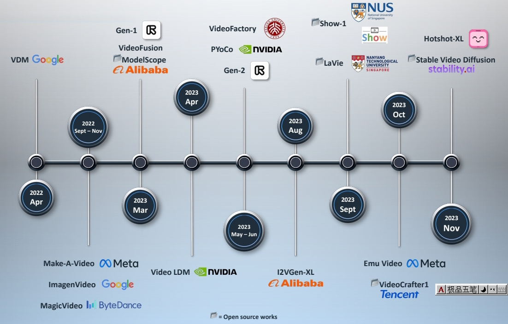</p>
<p>P36</p>
<table><thead><tr><th>ID</th><th>Year</th><th>Name</th><th>Note</th><th>Tags</th><th>Link</th></tr></thead><tbody>
<tr><td>57</td><td>2023.9</td><td>Show-1: Marrying Pixel and Latent Diffusion Models for Text-to-Video Generation</td><td>直接在像素空间实现时序扩散模型，结合修复（inpainting）与超分辨率技术生成高分辨率视频</td><td></td><td><a href="https://caterpillarstudygroup.github.io/ReadPapers/57.html">link</a></td></tr>
<tr><td></td><td>2023.8</td><td>I2vgen-xl: High-quality image-to-video</td><td>提出级联网络，通过分离内容与运动因素提升模型性能，并利用静态图像作为引导增强数据对齐。</td><td></td><td></td></tr>
<tr><td>48</td><td>2023.4</td><td>Align your Latents: High-Resolution Video Synthesis with Latent Diffusion Models</td><td>首次将潜在扩散模型（LDM）范式引入视频生成，在潜在空间中加入时序维度<br>T2I(LDM) -&gt; T2V(SVD)<br>Cascaded generation</td><td>Video LDM</td><td><a href="https://caterpillarstudygroup.github.io/ReadPapers/48.html">link</a></td></tr>
<tr><td>59</td><td>2023</td><td>AnimateDiff: Animate Your Personalized Text-to-Image Diffusion Models without Specific Tuning</td><td>1. T2I + Transformer = T2V<br> 2. MotionLoRA实现不同风格的视频运动</td><td></td><td><a href="https://caterpillarstudygroup.github.io/ReadPapers/59.html">link</a></td></tr>
<tr><td></td><td>2023</td><td>Chen et al., “GenTron: Delving Deep into Diffusion Transformers for Image and Video Generation,”</td><td>Transformer-based diffusion for text-to-video generation<br> ✅Transformer-based architecture extended from DiT (class-conditioned transformer-based LDM) <br> ✅Train T2I \(\to \)  insert temporal self-attn \(\to \) joint image-video finetuning (motion-free guidance)</td><td>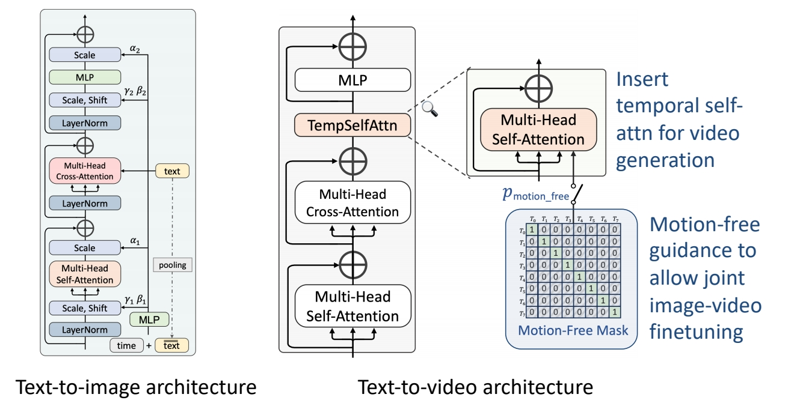</td><td></td></tr>
<tr><td></td><td>2023</td><td>Gupta et al., “Photorealistic Video Generation with Diffusion Models,”</td><td>Transformer-based diffusion for text-to-video generation<br> ✅Transformer-based denoising diffusion backbone<br> ✅Joint image-video training via unified image/video latent space (created by a joint 3D encoder with causal 3D conv layers, allowing the first frame of a video to be tokenized independently)<br> ✅Window attention to reduce computing/memory costs<br> ✅Cascaded pipeline for high-quality generation</td><td>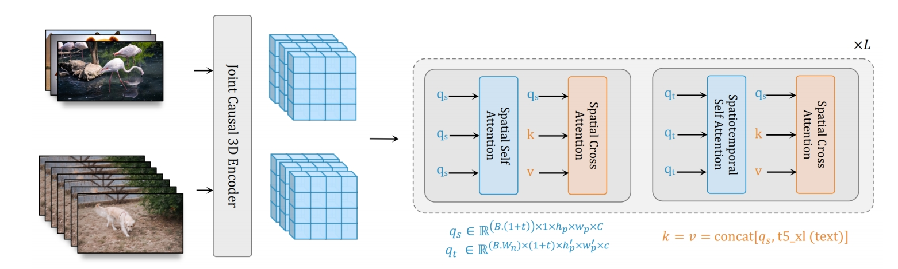</td><td></td></tr>
<tr><td></td><td>2022.11</td><td>Imagen Video: High Definition Video Generation with Diffusion Models</td><td>提出级联扩散模型以生成高清视频，并尝试将文本到图像（text-to-image）范式迁移至视频生成<br>级联扩散模型实现高清生成，质量与分辨率提升<br> ✅ 先在 image 上做 cascade 生成 <br> ✅ 视频是在图像上增加时间维度的超分   <br> ✅ 每次的超分都是独立的 diffusion model?   <br> 7 cascade models in total.  <br> 1 Base model (16x40x24) <br> 3 Temporal super-resolution models. <br> 3 Spatial super-resolution models. <br> ✅ 通过 7 次 cascade，逐步提升顺率和像素的分辨率，每一步的训练对上一步是依赖的。</td><td><br>Cascade</td><td> <br> 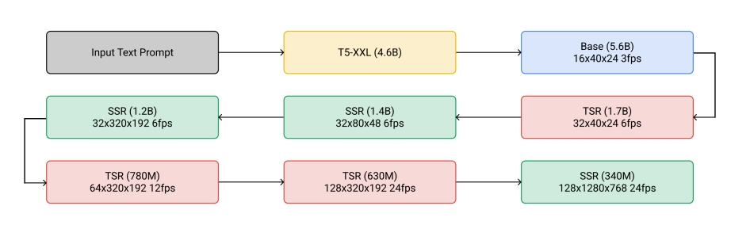<br></td></tr>
<tr><td>56</td><td>2022.9</td><td>Make-A-Video: Text-to-Video Generation without Text-Video Data</td><td></td><td></td><td><a href="https://caterpillarstudygroup.github.io/ReadPapers/56.html">link</a></td></tr>
<tr><td>55</td><td>2022.4</td><td>Video Diffusion Models</td><td>首次采用3D U-Net结构的扩散模型预测并生成视频序列<br>引入conv(2+1)D，temporal attention</td><td></td><td><a href="https://caterpillarstudygroup.github.io/ReadPapers/55.html">link</a></td></tr>
</tbody></table>
<h2 id="more-works"><a class="header" href="#more-works">More Works</a></h2>
<table><thead><tr><th></th><th></th></tr></thead><tbody>
<tr><td></td><td><strong>MagicVideo</strong> (Zhou et al.) <br> Insert causal attention to Stable Diffusion for better temporal coherence <br> “MagicVideo: Efficient Video Generation With Latent Diffusion Models,” arXiv 2022.</td></tr>
<tr><td></td><td><strong>Simple Diffusion Adapter</strong> (Xing et al.) <br> Insert lightweight adapters to T2I models, shift latents, and finetune adapters on videos <br>“SimDA: Simple Diffusion Adapter for Efficient Video Generation,” arXiv 2023.</td></tr>
<tr><td></td><td><strong>Dual-Stream Diffusion Net</strong> (Liu et al.) <br> Leverage multiple T2I networks for T2V <br> “Dual-Stream Diffusion Net for Text-to-Video Generation,” arXiv 2023.</td></tr>
<tr><td></td><td>MagicVideo-V2: Multi-Stage High-Aesthetic Video Generation,2024</td></tr>
</tbody></table>
<h1 id="traning-free"><a class="header" href="#traning-free">Traning Free</a></h1>
<table><thead><tr><th>ID</th><th>Year</th><th>Name</th><th>Note</th><th>Tags</th><th>Link</th></tr></thead><tbody>
<tr><td>84</td><td>2025.5.14</td><td><strong>Generating time-consistent dynamics with discriminator-guided image diffusion models</strong></td><td>1. 训练一个时序一致性判别器，用判别器引导T2I模型生成时序一致性的模型。</td><td>图像生成+时间一致性判别器=视频生成</td><td><a href="VideoDiffusionModels/VideoGeneration/84.html">link</a></td></tr>
</tbody></table>
<hr />
<blockquote>
<p>本文出自CaterpillarStudyGroup，转载请注明出处。</p>
<p>https://caterpillarstudygroup.github.io/ImportantArticles/</p>
</blockquote>
<div style="break-before: page; page-break-before: always;"></div><p>P67<br />
</p>
<h1 id="t2i---t2v-1"><a class="header" href="#t2i---t2v-1">T2I -&gt; T2V</a></h1>
<table><thead><tr><th>ID</th><th>Year</th><th>Name</th><th>Note</th><th>Tags</th><th>Link</th></tr></thead><tbody>
<tr><td></td><td>2025</td><td>Wan. Wan-AI/Wan2.1-T2V-14B</td><td></td><td></td><td>https://huggingface.co/Wan-AI/Wan2.1-T2V-14B</td></tr>
<tr><td></td><td>2025</td><td>CogVideoX: Text-to-Video Diffusion Models with An Expert Transformer</td><td></td><td></td><td></td></tr>
<tr><td></td><td>2024</td><td>Hunyuanvideo: A systematic framework for large video generative models</td><td></td><td></td><td></td></tr>
<tr><td>81</td><td>2024</td><td>CogVideo: Large-scale Pretraining for Text-to-Video Generation via Transformers</td><td>1. 使用预训练T2I模型CogView2<br>2. 先生成1 fps关键帧再递归向中间插帧<br>3. 引入temporal channel，并以混合因子\(\alpha\)与spatial channel混合</td><td>CogView2（60亿参数）, Transformer Based</td><td><a href="https://caterpillarstudygroup.github.io/ReadPapers/81.html">link</a></td></tr>
<tr><td>107</td><td>2023</td><td>Text2Video-Zero: Text-to-Image Diffusion Models are Zero-Shot Video Generators</td><td></td><td></td><td><a href="https://caterpillarstudygroup.github.io/ReadPapers/107.html">link</a></td></tr>
<tr><td>58</td><td>2023</td><td>ModelScope Text-to-Video Technical Report</td><td></td><td></td><td><a href="https://caterpillarstudygroup.github.io/ReadPapers/58.html">link</a></td></tr>
<tr><td></td><td>2023</td><td>ZeroScope</td><td>✅ ZeroScope 在 ModelScope 上 finetune，使用了非常小但质量非常高的数据，得到了高分辨率的生成效果。</td><td></td><td></td></tr>
<tr><td>50</td><td>2023</td><td>Stable Video Diffusion: Scaling Latent Video Diffusion Models to Large Datasets</td><td>Scaling latent video diffusion models to large datasets<br><strong>Data Processing and Annotation</strong></td><td></td><td><a href="https://caterpillarstudygroup.github.io/ReadPapers/50.html">link</a></td></tr>
<tr><td></td><td>2023</td><td>Wang et al., “LAVIE: High-Quality Video Generation with Cascaded Latent Diffusion Models,”</td><td>Joint image-video finetuning with curriculum learning<br> ✅ 提供了一套高质量数据集，生成的视频质量也更好（训练集很重要）。</td><td></td><td></td></tr>
<tr><td></td><td>2023</td><td>Chen et al., “VideoCrafter1: Open Diffusion Models for High-Quality Video Generation,”</td><td></td><td>LDM</td><td></td></tr>
</tbody></table>
<h1 id="t2v---improved-text-2-video"><a class="header" href="#t2v---improved-text-2-video">T2V -&gt; Improved Text-2-Video</a></h1>
<table><thead><tr><th>ID</th><th>Year</th><th>Name</th><th>Note</th><th>Tags</th><th>Link</th></tr></thead><tbody>
<tr><td>105</td><td>2025.5.27</td><td>Think Before You Diffuse: LLMs-Guided Physics-Aware Video Generation</td><td>1. 使用LLM分析视频生成的预期效果，用于引导生成<br> 2. LLM对生成结果的评价也作为模型训练的Loss项<br> 3. 基于Wan大模型的LoRA微调</td><td>数据集, LLM, LoRA, 数据集，物理</td><td><a href="VideoDiffusionModels/VideoGeneration/132.html">link</a></td></tr>
</tbody></table>
<p>P74</p>
<h3 id="其它相关工作"><a class="header" href="#其它相关工作">其它相关工作</a></h3>
<table><thead><tr><th></th><th></th><th></th><th></th></tr></thead><tbody>
<tr><td>&quot; Robot dancing in times square,” arXiv 2023.</td><td>&quot; Clown fish swimming through the coral reef,” arXiv 2023.</td><td>&quot; Melting ice cream dripping down the cone,” arXiv 2023.</td><td>&quot; Hyper-realistic photo of an abandoned industrial site during a storm,” arXiv 2023.</td></tr>
<tr><td>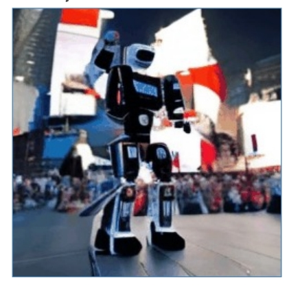</td><td></td><td></td><td></td></tr>
</tbody></table>
<hr />
<blockquote>
<p>本文出自CaterpillarStudyGroup，转载请注明出处。</p>
<p>https://caterpillarstudygroup.github.io/ImportantArticles/</p>
</blockquote>
<div style="break-before: page; page-break-before: always;"></div><h1 id="image-2-video"><a class="header" href="#image-2-video">Image-2-Video</a></h1>
<ol>
<li>把用户控制（稀疏轨迹等）转为运动表征（光流等）</li>
<li>用运动表征驱动图像</li>
</ol>
<table><thead><tr><th>ID</th><th>Year</th><th>Name</th><th>Note</th><th>Tags</th><th>Link</th></tr></thead><tbody>
<tr><td>51</td><td>2023</td><td>Motion-Conditioned Diffusion Model for Controllable Video Synthesis</td><td>✅ 用户提供的稀疏运动轨迹 -&gt; dense光流<br>✅ dense光流（condition） + Image -&gt; 视频</td><td>Two-stage,  自回归生成</td><td><a href="https://caterpillarstudygroup.github.io/ReadPapers/51.html">link</a></td></tr>
<tr><td>44</td><td>2024</td><td>Motion-I2V: Consistent and Controllable Image-to-Video Generation with Explicit Motion Modeling</td><td>✅ 用户提供的控制信号（condition）+ Image -&gt; dense光流<br>✅ dense光流（condition） + Image -&gt; 视频</td><td>Two-stage，轨迹控制</td><td><a href="https://caterpillarstudygroup.github.io/ReadPapers/44.html">link</a></td></tr>
<tr><td></td><td>2024</td><td>Physmotion: Physicsgrounded dynamics from a single image.</td><td>轨迹控制</td><td></td><td></td></tr>
<tr><td></td><td>2023</td><td><strong>LFDM</strong> (Ni et al.) <br> “Conditional Image-to-Video Generation with Latent Flow Diffusion Models,”</td><td>✅视频-&gt;光流 + Mask<br>✅ 光流+Mask+图像 -&gt;视频</td><td></td><td></td></tr>
<tr><td></td><td>2024</td><td>Generative Image Dynamics (Li et al.) <br> “Generative Image Dynamics,”</td><td>图像（无condition） -&gt; SV <br>✅ SV + 力 -&gt; 光流 <br>✅ 光流 + Image -&gt; 视频</td><td></td><td></td></tr>
<tr><td></td><td>2023</td><td>LaMD: Latent Motion Diffusion for Video Generation</td><td>视频 -&gt; 图像特征 + 运动特征<br>✅ 运动特征+图像特征-&gt;视频</td><td></td><td></td></tr>
<tr><td></td><td>2023</td><td>Preserve Your Own Correlation: A Noise Prior for Video Diffusion Models</td><td><strong>PYoCo</strong> (Ge et al.)<br> Generate video frames starting from similar noise patterns</td><td></td><td></td></tr>
<tr><td></td><td>2023</td><td>Animate-a-story: Storytelling with retrieval-augmented video generation</td><td>深度控制</td><td></td><td></td></tr>
</tbody></table>
<h2 id="more-works-闭源"><a class="header" href="#more-works-闭源">More Works 闭源</a></h2>
<table><thead><tr><th></th><th></th></tr></thead><tbody>
<tr><td></td><td><strong>Latent Shift</strong> (An et al.)<br>Shift latent features for better temporal coherence <br> “Latent-Shift: Latent Diffusion with Temporal Shift for Efficient Text-to-Video Generation,” arXiv 2023.</td></tr>
<tr><td></td><td><strong>Video Factory</strong> (Wang et al.)<br> Modify attention mechanism for better temporal coherence <br> “VideoFactory: Swap Attention in Spatiotemporal Diffusions for Text-to-Video Generation,” arXiv 2023.</td></tr>
<tr><td></td><td><strong>VideoFusion</strong> (Lorem et al.)<br> Decompose noise into shared “base” and individual “residuals”<br>“VideoFusion: ecomposed Diffusion Models for High-Quality Video Generation,” CVPR 2023.</td></tr>
</tbody></table>
<blockquote>
<p>✅ Framwork (1) 在原模型中加入 temporal layers (2) fix 原模型，训练新的 layers (3) 把 lager 插入到目标 T2 I 模型中。</p>
</blockquote>
<h1 id="sound2video"><a class="header" href="#sound2video">Sound2Video</a></h1>
<table><thead><tr><th>ID</th><th>Year</th><th>Name</th><th>Note</th><th>Tags</th><th>Link</th></tr></thead><tbody>
<tr><td></td><td>2023</td><td><strong>The Power of Sound (TPoS): Audio Reactive Video Generation with Stable Diffusion</strong></td><td>Text + Sound -&gt; Video</td><td></td><td></td></tr>
<tr><td></td><td>2023</td><td><strong>AADiff</strong>: Audio-Aligned Video Synthesis with Text-to-Image Diffusion</td><td></td><td></td><td></td></tr>
<tr><td></td><td>2023</td><td><strong>Generative Disco</strong> (Liu et al.)<br> “Generative Disco: Text-to-Video Generation for Music Visualization,</td><td></td><td></td><td></td></tr>
</tbody></table>
<h1 id="bain-activity-2-video"><a class="header" href="#bain-activity-2-video">Bain Activity 2 Video</a></h1>
<blockquote>
<p>✅ 大脑信号控制生成。</p>
</blockquote>
<p>Brain activity-guided video generation</p>
<ul>
<li>Task: human vision reconstruction via fMRI signal-guided video generation</li>
</ul>
<p> </p>
<p>Chen et al., “Cinematic Mindscapes: High-quality Video Reconstruction from Brain Activity,” arXiv 2023.</p>
<blockquote>
<p>✅ 用纯文本的形式把图片描述出来。<br />
✅ 方法：准备好 pair data，对 GPT 做 fine-tune.<br />
✅ 用结构化的中间表示生成图片。<br />
✅ 先用 GPT 进行文本补全。</p>
</blockquote>
<hr />
<blockquote>
<p>本文出自CaterpillarStudyGroup，转载请注明出处。</p>
<p>https://caterpillarstudygroup.github.io/ImportantArticles/</p>
</blockquote>
<div style="break-before: page; page-break-before: always;"></div><h1 id="image提供动作信息text提供外观信息-2-video"><a class="header" href="#image提供动作信息text提供外观信息-2-video">Image（提供动作信息）Text(提供外观信息)-2-Video</a></h1>
<table><thead><tr><th>ID</th><th>Year</th><th>Name</th><th>Note</th><th>Tags</th><th>Link</th></tr></thead><tbody>
<tr><td>126</td><td>2025.7.22</td><td>MotionShot: Adaptive Motion Transfer across Arbitrary Objects for Text-to-Video Generation</td><td>1. 参考对象（<strong>动作信息来自图像</strong>）与目标对象（<strong>外观信息来自文本</strong>）外观或结构差异显著<br> 2. 显示提取源和目标在外观上的语义匹配以及对应部分的形变关系，通过对源做warp得到目标的大致轮廓，以引作为condition引入视频生成</td><td>training-free，开源</td><td></td></tr>
</tbody></table>
<h1 id="image提供外观信息-2-video"><a class="header" href="#image提供外观信息-2-video">Image（提供外观信息）-2-Video</a></h1>
<h2 id="强调符合物理规律"><a class="header" href="#强调符合物理规律">强调符合物理规律</a></h2>
<ol>
<li>如何描述物理规律：LLM对物理的理解、特定的数据集、已有的物理模型</li>
<li>如何使用物理规律：数据集、损失</li>
<li>是否显示提取物理规律</li>
</ol>
<table><thead><tr><th>ID</th><th>Year</th><th>Name</th><th>Note</th><th>Tags</th><th>Link</th></tr></thead><tbody>
<tr><td>106</td><td>2025.5.26</td><td>Force Prompting: Video Generation Models Can Learn and Generalize Physics-based Control Signals</td><td>1. 将物理力(全局力和点力)编码后作为生成条件引导生成<br> 2. 构造少量数据集 <br> 3. 证明大TI2V模型 + 少量样本能得到比较好的泛化性</td><td>开源， CogVideoX + ControlNet，物理</td><td><a href="https://caterpillarstudygroup.github.io/ReadPapers/106.html">link</a></td></tr>
<tr><td></td><td>2025.5.1</td><td>T2VPhysBench: A First-Principles Benchmark for Physical Consistency in Text-to-Video Generation</td><td></td><td>文生视频，物理，评估</td><td><a href="VideoDiffusionModels/VideoGeneration/34.html">link</a></td></tr>
<tr><td>96</td><td>2025.3.26</td><td><strong>PhysAnimator: Physics-Guided Generative Cartoon Animation</strong></td><td>静态动漫插图生成动画<br>1. 分割出可形变部分<br>2. 转成2D Mesh<br>3. FEM驱动2D Mesh<br>4. 根据2D Mesh形变生成光流<br>5. 光流驱动Image草图<br>6. 草图作为控制信号，生成视频</td><td>2D Mesh，FEM，ControlNet，光流，轨迹控制，SAM</td><td><a href="https://caterpillarstudygroup.github.io/ReadPapers/96.html">link</a></td></tr>
<tr><td></td><td>2025</td><td>Physdreamer: Physics-based interaction with 3d objects via video generation</td><td></td><td></td><td></td></tr>
<tr><td></td><td>2024.9.27</td><td>PhysGen</td><td>通过刚体物理仿真将单张图像与输入力转换为真实视频，证明从视觉数据推理物理参数的可能性；</td><td></td><td></td></tr>
</tbody></table>
<h2 id="强调时序一致性"><a class="header" href="#强调时序一致性">强调时序一致性</a></h2>
<table><thead><tr><th>ID</th><th>Year</th><th>Name</th><th>Note</th><th>Tags</th><th>Link</th></tr></thead><tbody>
<tr><td>130</td><td>2025.8.25</td><td>Multi-Object Sketch Animation with Grouping and Motion Trajectory Priors</td><td></td><td></td><td></td></tr>
</tbody></table>
<h2 id="强调控制性"><a class="header" href="#强调控制性">强调控制性</a></h2>
<ol>
<li>如何对控制信号进行表示</li>
<li>如何注入控制信号</li>
</ol>
<table><thead><tr><th>ID</th><th>Year</th><th>Name</th><th>Note</th><th>Tags</th><th>Link</th></tr></thead><tbody>
<tr><td>97</td><td>2025</td><td>Draganything: Motion control for anything using entity representation</td><td>1. 分割可拖动对象<br> 2. 提取对象的latent diffusion feature<br> 3. 路径转为高斯热图<br> 4. feature和heatmap作为控制信号进行生成</td><td>轨迹控制，ControlNet，高斯热图，SAM，潜在扩散特征</td><td><a href="https://caterpillarstudygroup.github.io/ReadPapers/97.html">link</a></td></tr>
<tr><td>47</td><td>2024</td><td>Puppet-Master: Scaling Interactive Video Generation as a Motion Prior for Part-Level Dynamics</td><td>拖拽控制的对象零件级运动的视频生成</td><td>零件级运动数据集</td><td><a href="https://caterpillarstudygroup.github.io/ReadPapers/47.html">link</a></td></tr>
</tbody></table>
<h2 id="其它未归档"><a class="header" href="#其它未归档">其它未归档</a></h2>
<table><thead><tr><th>ID</th><th>Year</th><th>Name</th><th>Note</th><th>Tags</th><th>Link</th></tr></thead><tbody>
<tr><td></td><td>2025.6.17</td><td>VideoMAR: Autoregressive Video Generatio with Continuous Tokens</td><td></td><td></td><td><a href="VideoDiffusionModels/VideoGeneration/200.html">link</a></td></tr>
<tr><td></td><td>2025.5.29</td><td>ATI: Any Trajectory Instruction for Controllable Video Generation</td><td></td><td>视频生成中运动控制</td><td><a href="VideoDiffusionModels/VideoGeneration/138.html">link</a></td></tr>
<tr><td></td><td>2025.5.26</td><td>MotionPro: A Precise Motion Controller for Image-to-Video Generation</td><td></td><td><strong>通过交互式运动控制实现图像动画</strong></td><td><a href="VideoDiffusionModels/VideoGeneration/127.html">link</a></td></tr>
<tr><td></td><td>2025.5.23</td><td>Temporal Differential Fields for 4D Motion Modeling via Image-to-Video Synthesis</td><td></td><td>通过图像到视频(I2V)合成框架来模拟规律的运动过程</td><td><a href="VideoDiffusionModels/VideoGeneration/117.html">link</a></td></tr>
<tr><td></td><td>2025.5.20</td><td>LMP: Leveraging Motion Prior in Zero-Shot Video Generation with Diffusion Transformer</td><td></td><td>文+图像+运动视频-&gt;视频</td><td><a href="VideoDiffusionModels/VideoGeneration/101.html">link</a></td></tr>
<tr><td></td><td>2025.5.14</td><td>CameraCtrl: Enabling Camera Control for Video Diffusion Models</td><td></td><td>相机位姿控制的视频生成</td><td><a href="VideoDiffusionModels/VideoGeneration/82.html">link</a></td></tr>
<tr><td></td><td>2025.5.4</td><td>DualReal: Adaptive Joint Training for Lossless Identity-Motion Fusion in Video Customization</td><td></td><td>文生视频</td><td><a href="VideoDiffusionModels/VideoGeneration/46.html">link</a></td></tr>
<tr><td></td><td>2025.4.30</td><td><strong>Eye2Eye: A Simple Approach for Monocular-to-Stereo Video Synthesis</strong></td><td></td><td>文生3D视频</td><td><a href="VideoDiffusionModels/VideoGeneration/35.html">link</a></td></tr>
<tr><td></td><td>2025</td><td>Sparsectrl: Adding sparse controls to text-to-video diffusion models</td><td>深度控制</td><td></td><td></td></tr>
<tr><td></td><td>2024</td><td>Cinemo: Consistent and controllable image animation with motion diffusion models</td><td></td><td></td><td></td></tr>
<tr><td></td><td>2024.06</td><td>Mimicmotion: High-quality human motion video generation with confidence-aware pose guidance</td><td>pose控制</td><td></td><td></td></tr>
<tr><td></td><td>2024</td><td>Vr-gs: A physical dynamics-aware interactive gaussian splatting system in virtual reality</td><td></td><td></td><td></td></tr>
</tbody></table>
<div style="break-before: page; page-break-before: always;"></div><p>P108 </p>
<h1 id="25-storyboard"><a class="header" href="#25-storyboard">2.5 Storyboard</a></h1>
<p>P113</p>
<table><thead><tr><th>ID</th><th>Year</th><th>Name</th><th>Note</th><th>Tags</th><th>Link</th></tr></thead><tbody>
<tr><td>84</td><td>2024</td><td>Learning Long-form Video Prior via Generative Pre-Training</td><td>利用GPT生成长视频内容的结构化信息，用于帮助下游的视频生成/理解任务。</td><td>结构化信息，数据集</td><td><a href="https://github.com/showlab/Long-form-Video-Prior">dataset</a> <br>  <a href="https://caterpillarstudygroup.github.io/ReadPapers/84.html">link</a></td></tr>
<tr><td>61</td><td>2023</td><td>Xie et al., “VisorGPT: Learning Visual Prior via Generative Pre-Training,”</td><td>A “diffusion over diffusion” architecture for very long video generation</td><td></td><td><a href="https://caterpillarstudygroup.github.io/ReadPapers/61.html">link</a></td></tr>
<tr><td></td><td>2023</td><td>Lin et al., “VideoDirectorGPT: Consistent Multi-scene Video Generation via LLM-Guided Planning,”</td><td>Use storyboard as condition to generate video<br> ✅ Control Net，把文本转为 Pixel 图片。</td><td> </td><td></td></tr>
</tbody></table>
<table><thead><tr><th></th><th></th></tr></thead><tbody>
<tr><td></td><td><strong>Dysen-VDM</strong> (Fei et al.)<br>Storyboard through scene graphs<br>“Empowering Dynamics-aware Text-to-Video Diffusion with Large Language Models,” arXiv 2023.</td></tr>
<tr><td></td><td><strong>DirectT2V</strong> (Hong et al.) <br> Storyboard through bounding boxes <br> “Large Language Models are Frame-level Directors for Zero-shot Text-to-Video Generation,” arXiv 2023.</td></tr>
<tr><td></td><td><strong>Free-Bloom</strong> (Huang et al.)<br>Storyboard through detailed text prompts<br> “Free-Bloom: Zero-Shot Text-to-Video Generator with LLM Director and LDM Animator,” NeurIPS 2023.</td></tr>
<tr><td></td><td><strong>LLM-Grounded Video Diffusion Models</strong> (Lian et al.) <br> Storyboard through foreground bounding boxes <br> “LLM-grounded Video Diffusion Models,” arXiv 2023.</td></tr>
</tbody></table>
<p>P104</p>
<blockquote>
<p>✅ 生成电影级别的视频，而不是几秒钟的视频。</p>
</blockquote>
<p>P106</p>
<blockquote>
<p>✅ 文本 → 结构化的中间脚本 → 视频</p>
</blockquote>
<hr />
<blockquote>
<p>本文出自CaterpillarStudyGroup，转载请注明出处。</p>
<p>https://caterpillarstudygroup.github.io/ImportantArticles/</p>
</blockquote>
<div style="break-before: page; page-break-before: always;"></div><p>P126</p>
<h1 id="26-long-video-generation"><a class="header" href="#26-long-video-generation">2.6 Long video generation</a></h1>
<p>长视频生成主要有这样一些难点：</p>
<ol>
<li><strong>长视频生成的复杂性</strong>
<ul>
<li><strong>训练与推理差距</strong>：模型在训练时仅接触短视频，无法学习长视频的全局时序模式，导致生成内容逻辑断裂。</li>
<li><strong>顺序生成的低效性</strong>：自回归生成需逐帧顺序处理，生成时间随视频长度线性增长，无法满足实际应用需求。</li>
<li><strong>保持内容的一致性</strong>:长篇视频包含复杂的人物、物体及其动态交互关系。</li>
</ul>
</li>
<li><strong>数据稀缺性</strong><br />
高质量的长视频标注数据（如逐帧注释）获取成本极高，现有数据集（如短视频库）难以支持长视频先验的学习。</li>
</ol>
<p> </p>
<table><thead><tr><th>ID</th><th>Year</th><th>Name</th><th>Note</th><th>Tags</th><th>Link</th></tr></thead><tbody>
<tr><td></td><td>2025.6.2</td><td>DiffuseSlide: Training-Free High Frame Rate Video Generation Diffusion </td><td></td><td>基于预训练扩散模型的高帧率视频生成新方法</td><td><a href="VideoDiffusionModels/VideoGeneration/149.html">link</a></td></tr>
<tr><td></td><td>2025.6.1</td><td>FlowMo: Variance-Based Flow Guidance for Coherent Motion in Video Generation</td><td></td><td>无训练引导方法增加视频生成的连续性</td><td><a href="VideoDiffusionModels/VideoGeneration/147.html">link</a></td></tr>
<tr><td>80</td><td>2025</td><td>One-Minute Video Generation with Test-Time Training</td><td>1. 引入TTT层，通过TTT层动态调整模型隐藏状态，增强对长序列的全局理解能力。<br>2. 通过门控机制防止TTT层训练初期引入噪声。<br>3. 多阶段训练策略：从3秒片段逐步扩展至63秒，仅微调TTT层和门控参数，保留预训练模型的知识。</td><td>Test Time Training, RNN,</td><td><a href="https://caterpillarstudygroup.github.io/ReadPapers/80.html">link</a></td></tr>
<tr><td>41</td><td>2024</td><td>STORYDIFFUSION: CONSISTENT SELF-ATTENTION FOR LONG-RANGE IMAGE AND VIDEO GENERATION</td><td>先生成一致的关键帧，再插帧成中间图像</td><td></td><td><a href="https://caterpillarstudygroup.github.io/ReadPapers/41.html">link</a></td></tr>
<tr><td>60</td><td>2023</td><td>NUWA-XL: Diffusion over Diffusion for eXtremely Long Video Generation</td><td>diffusion over diffusion的递归架构实现长视频生成和并行生成</td><td>coarse-to-fine, 数据集</td><td><a href="https://caterpillarstudygroup.github.io/ReadPapers/60.html">link</a></td></tr>
<tr><td></td><td>2025</td><td>Ouroboros-Diffusion: Exploring Consistent Content Generation in Tuning-free Long Video Diffusion</td><td></td><td></td><td></td></tr>
<tr><td></td><td>2022</td><td><strong>Latent Video Diffusion Models for High-Fidelity Long Video Generation</strong> (He et al.) <br> Generate long videos via autoregressive generation &amp; interpolation</td><td></td><td></td><td></td></tr>
<tr><td></td><td>2023</td><td><strong>VidRD</strong> (Gu et al.) <br> Autoregressive long video generation <br> “Reuse and Diffuse: Iterative Denoising for Text-to-Video Generation,” arXiv 2023.</td><td></td><td></td><td></td></tr>
<tr><td></td><td>2023</td><td><strong>VideoGen</strong> (Li et al.) <br> Cascaded pipeline for long video generation <br> “VideoGen: A Reference-Guided Latent Diffusion Approach for High Definition Text-to-Video Generation,” arXiv 2023.</td><td></td><td></td><td></td></tr>
</tbody></table>
<hr />
<blockquote>
<p>本文出自CaterpillarStudyGroup，转载请注明出处。</p>
<p>https://caterpillarstudygroup.github.io/ImportantArticles/</p>
</blockquote>
<div style="break-before: page; page-break-before: always;"></div><p>P139</p>
<blockquote>
<p>✅ 用文生图模型生成 appearance, dynamics 来自于 reference video.</p>
</blockquote>
<p>P141</p>
<blockquote>
<p>✅ 当前帧只与上帧和前一帧做 attention，大大减少计算量。<br />
✅ 在所有帧上做 attention 开销比较大。<br />
✅ 解决方法：前一帧与第一帧。<br />
❓ 怎么保证生成动作与原视频动作的一致性呢?</p>
</blockquote>
<p>P142</p>
<blockquote>
<p>✅ 对要编辑的视频，先 DDIM Inversion，得到 inverfed noise，这是保留了原视频 pattern 的 noise.<br />
✅ 用这个 noise 作为 init noise，还原出的视频跟原视频有比较好的结构化保留。<br />
✅ 解法方法</p>
</blockquote>
<p>P144</p>
<h1 id="多生成任务"><a class="header" href="#多生成任务">多生成任务</a></h1>
<table><thead><tr><th></th><th></th></tr></thead><tbody>
<tr><td>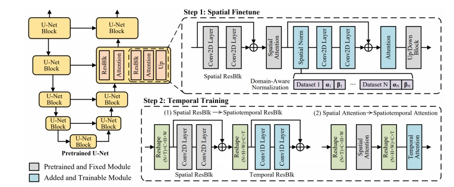</td><td><strong>MovieFactory</strong> (Zhu et al.) <br> “MovieFactory: Automatic Movie Creation from Text using Large Generative Models for Language and Images,” arXiv 2023.</td></tr>
<tr><td></td><td><strong>CoDi</strong> (Tang et al.) <br> “Any-to-Any Generation via Composable Diffusion,” NeurIPS 2023.</td></tr>
<tr><td></td><td><strong>MM-Diffusion</strong> (Ruan et al.) <br> “MM-Diffusion: Learning Multi-Modal Diffusion Models for Joint Audio and Video Generation,” CVPR 2023.</td></tr>
<tr><td>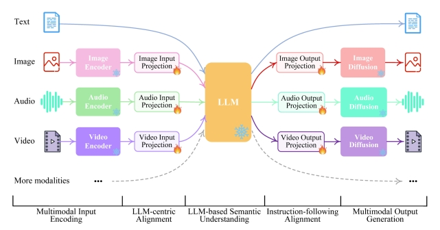</td><td><strong>NExT-GPT</strong> (Wu et al.) <br> “NExT-GPT: Any-to-Any Multimodal LLM,” arXiv 2023.</td></tr>
<tr><td></td><td></td></tr>
</tbody></table>
<blockquote>
<p>✅ 在物体改变比较大的情况下，diffusion 比其它生成方法效果更好。</p>
</blockquote>
<hr />
<blockquote>
<p>本文出自CaterpillarStudyGroup，转载请注明出处。</p>
<p>https://caterpillarstudygroup.github.io/ImportantArticles/</p>
</blockquote>
<div style="break-before: page; page-break-before: always;"></div><p></p>
<h1 id="人类视频生成的基础知"><a class="header" href="#人类视频生成的基础知">人类视频生成的基础知</a></h1>
<h1 id="关键子任务"><a class="header" href="#关键子任务">关键子任务</a></h1>
<p>根据驱动生成过程的模态将现有方法分为三类：文本驱动、音频驱动和姿势驱动</p>
<h2 id="文本驱动的人类视频生成"><a class="header" href="#文本驱动的人类视频生成">文本驱动的人类视频生成</a></h2>
<p>讨论了如何使用文本描述来控制生成视频中的人类外观和动作。</p>
<p></p>
<table><thead><tr><th>ID</th><th>Year</th><th>Name</th><th>Note</th><th>Tags</th><th>Link</th></tr></thead><tbody>
<tr><td></td><td>2025.5.21</td><td>Interspatial Attention for Efficient 4D Human Video Generation</td><td></td><td>以可控方式生成数字人(digital humans)的逼真视频</td><td><a href="CharacterAnimation/106.html">link</a></td></tr>
<tr><td>1</td><td>2024</td><td>ID-Animator</td><td>To ensure the consistency of appearance in generated videos with the textual descriptions while preserving identity details during frames, ID-Animator [1] leverages a pre-trained textto-video (T2V) model with a lightweight face adapter to encode identity-relevant embeddings.</td><td>人体外观控制</td><td></td></tr>
<tr><td>83</td><td></td><td>HMTV</td><td>文本生成动作和相机运动，再生成图像</td><td>人体动作控制，2阶段方法</td><td></td></tr>
<tr><td>84</td><td>2020</td><td>SignSynth</td><td>Gloss2Pose文生动作，GAN动作生视频</td><td>人体动作控制，2阶段方法</td><td></td></tr>
<tr><td>85</td><td>2022</td><td>H-DNA</td><td></td><td>人体动作控制，2阶段方法</td><td></td></tr>
<tr><td>86</td><td>2024</td><td>SignLLM</td><td>文本-&gt;GLoss-&gt;Pose-&gt;Video</td><td>人体动作控制，2阶段方法</td><td></td></tr>
<tr><td>89</td><td>2024</td><td></td><td>文本-&gt;GLoss-&gt;Pose-&gt;Video</td><td>人体动作控制，2阶段方法</td><td></td></tr>
<tr><td>53</td><td></td><td>Text2Performer</td><td>involves the motion text and a motion encoder. motion text describes the movement, such as &quot;She is swinging to the right.&quot; The model implicitly models these descriptions by separately representing appearance and motion, thereby generating high-quality videos with consistent appearance and actions.</td><td>text作为prompt直接生成video</td><td></td></tr>
</tbody></table>
<h2 id="音频驱动的人类视频生成"><a class="header" href="#音频驱动的人类视频生成">音频驱动的人类视频生成</a></h2>
<p>语音驱动：要求生成的人体动作在高级语义方面及在情感和节奏方面与音频和谐。<br />
音乐驱动：合成一个人在给定的音乐片段引导下跳舞或演奏某种乐器的视频，关注于低级节拍对齐。</p>
<p><br />
</p>
<h3 id="语音驱动手势"><a class="header" href="#语音驱动手势">语音驱动手势</a></h3>
<p>以下是整理后的表格，概述了<strong>语音驱动人体视频生成模型</strong>的关键特性与演进：</p>
<hr />
<table><thead><tr><th><strong>方法/模型</strong></th><th><strong>基础架构</strong></th><th><strong>主要贡献</strong></th><th><strong>输入</strong></th><th><strong>输出</strong></th><th><strong>训练目标/优化方法</strong></th><th><strong>关键创新点</strong></th><th><strong>局限性</strong></th></tr></thead><tbody>
<tr><td><strong>传统方法 [61][92][93]</strong></td><td>2D/3D骨架 + 分离式渲染</td><td>基于结构先验（骨架）生成手势视频</td><td>语音 + 2D/3D骨架</td><td>手势视频</td><td>骨架运动生成与视频渲染分离</td><td>利用手写结构先验（骨架）定义运动</td><td>外观信息丢失，控制困难；预训练姿态估计器导致抖动与误差累积</td></tr>
<tr><td><strong>ANGIE [62]</strong></td><td>无监督MRAA特征 + VQ-VAE + GPT网络</td><td>通过无监督特征与离散化建模提升手势生成</td><td>语音</td><td>手势视频</td><td>VQ-VAE量化运动模式 + 自回归预测离散动作</td><td>无监督运动特征（MRAA）避免依赖骨架标注</td><td>MRAA线性建模限制复杂区域表达；语音与协方差关联不准确</td></tr>
<tr><td><strong>DiffTED &amp; He et al.</strong></td><td>TPS运动模型 + 扩散模型</td><td>解耦运动与外观，保留身体区域关键信息</td><td>语音 + TPS关键点</td><td>多样化手势视频</td><td>扩散模型生成运动序列 + TPS渲染关键点至图像</td><td>基于扩散的多样化生成；解耦运动与外观（避免信息丢失）</td><td>依赖TPS模型精度；计算成本较高</td></tr>
</tbody></table>
<hr />
<h4 id="关键说明-2"><a class="header" href="#关键说明-2"><strong>关键说明</strong></a></h4>
<ol>
<li><strong>技术演进</strong>：
<ul>
<li><strong>传统方法</strong>依赖刚性骨架，导致外观信息丢失与抖动问题；</li>
<li><strong>ANGIE</strong>引入无监督特征与离散化建模，但受限于线性表达能力；</li>
<li><strong>DiffTED</strong>通过解耦运动与外观、结合扩散模型，实现高质量多样化生成。</li>
</ul>
</li>
<li><strong>核心挑战</strong>：
<ul>
<li><strong>运动-外观平衡</strong>：传统方法牺牲外观信息，DiffTED通过解耦部分保留；</li>
<li><strong>生成多样性</strong>：扩散模型（DiffTED）优于自回归（ANGIE）与骨架驱动方法。</li>
</ul>
</li>
<li><strong>未来方向</strong>：
<ul>
<li>结合物理仿真优化运动真实性（如减少抖动）；</li>
<li>提升复杂区域（手部、微表情）的细粒度控制能力。</li>
</ul>
</li>
</ol>
<p>此表格对比了语音驱动手势视频生成的关键方法，凸显从结构先验到无监督学习再到解耦扩散模型的技术路径。</p>
<h3 id="语音驱动口型视频生成"><a class="header" href="#语音驱动口型视频生成">语音驱动口型(视频生成)</a></h3>
<p>唇形同步技术需要根据输入的音频生成对应的唇部动作，同时保持头部姿态和人物身份的一致性。</p>
<p>Image + Audio -&gt; Video</p>
<p>以下是整理后的表格，概述了<strong>音频驱动说话人脸生成方法</strong>的分类、核心特性与挑战：</p>
<hr />
<table><thead><tr><th><strong>方法类型</strong></th><th><strong>关键方法/技术</strong></th><th><strong>输入</strong></th><th><strong>输出</strong></th><th><strong>优点</strong></th><th><strong>局限性</strong></th></tr></thead><tbody>
<tr><td><strong>Person-Specific</strong></td><td>3D模型（Song et al., 2020; Thies et al., 2020）<br>NeRF（Park et al., 2022）</td><td>音频 + 目标人物多分钟训练视频</td><td>高保真、身份保留的说话视频</td><td>高保真，精确的唇部-音频映射</td><td>训练耗时，依赖大量目标数据，难以实时应用</td></tr>
<tr><td><strong>One-Shot Talking Head</strong></td><td>两阶段流程（音频→标志→视频，Chen et al., 2019）<br>3D系数驱动（Chen et al., 2020）</td><td>音频 + 单张参考图像</td><td>多样化表情与头部运动的视频</td><td>单图驱动，灵活性强；扩散模型（Tian et al., 2024）提升生成多样性</td><td>细节缺失（牙齿/纹理）；扩散模型导致身份细节丢失、计算成本高、推理步骤复杂</td></tr>
<tr><td><strong>Few-Shot Face Visual Dubbing</strong></td><td>编码器-解码器（Prajwal et al., 2020a）<br>变形修复网络（Zhang et al., 2023）</td><td>音频 + 源人脸（少量参考图）</td><td>嘴部替换的配音视频</td><td>直接替换唇部区域，适配性强</td><td>纹理模糊、身份不一致；修复网络易过拟合，局部颜色差异</td></tr>
</tbody></table>
<hr />
<h4 id="关键说明-3"><a class="header" href="#关键说明-3"><strong>关键说明</strong></a></h4>
<ol>
<li><strong>输入需求差异</strong>：
<ul>
<li><strong>Person-Specific</strong>：依赖目标人物大量训练数据；</li>
<li><strong>One-Shot</strong>：仅需单张参考图，灵活性高；</li>
<li><strong>Few-Shot</strong>：基于少量参考图进行局部（嘴部）替换。</li>
</ul>
</li>
<li><strong>核心挑战</strong>：
<ul>
<li><strong>保真度与效率</strong>：Person-Specific保真但低效，One-Shot/Diffusion多样但计算昂贵；</li>
<li><strong>细节保留</strong>：牙齿、嘴部纹理与高频细节仍是技术瓶颈（尤其One-Shot与Few-Shot）。</li>
</ul>
</li>
<li><strong>代表工作演进</strong>：
<ul>
<li><strong>3D模型 → 扩散模型</strong>：从基于物理建模转向生成式AI，提升多样性但牺牲确定性；</li>
<li><strong>编码器-解码器 → 变形修复</strong>：Few-Shot方法逐步优化纹理保留，但仍需解决过拟合问题。</li>
</ul>
</li>
</ol>
<p>此表格对比了音频驱动说话人脸生成的核心方法类型，凸显其在不同应用场景下的优势与待突破点。</p>
<hr />
<h3 id="唇音同步视频编辑"><a class="header" href="#唇音同步视频编辑">唇音同步(视频编辑)</a></h3>
<p>Video + Audio -&gt; Video</p>
<ul>
<li>扩散模型（如[29]）在细节丰富度上占优，但生成速度较慢；</li>
<li>GAN类方法（如MuseTalk）牺牲部分细节以提升速度。</li>
</ul>
<h4 id="基于扩散模型的唇音同步方法"><a class="header" href="#基于扩散模型的唇音同步方法"><strong>基于扩散模型的唇音同步方法</strong></a></h4>
<table><thead><tr><th>ID</th><th>Year</th><th>Name</th><th>Note</th><th>Tags</th><th>Link</th></tr></thead><tbody>
<tr><td>89</td><td>2025.3.13</td><td>LatentSync: Taming Audio-Conditioned Latent Diffusion Models for Lip Sync with SyncNet Supervision</td><td>1. 在latent space训练，在pixel space监督<br> 2. 用TREPA代表temporal layer<br> 3. 系统性地分析SyncNet的训练参数与效果</td><td>LDM, 开源</td><td><a href="https://caterpillarstudygroup.github.io/ReadPapers/89.html">link</a></td></tr>
<tr><td></td><td>2023</td><td>Speech Driven Video Editing via an Audio-Conditioned Diffusion Model</td><td>&gt; ✅（1）把说话的部分 mask 掉 （2）用 diffusion 根据 Audio Feature 生成说话的部分。<br> ✅ 额外约束：（1）reference 状态 （2）前后帧 smooth <br> ✅ 语音驱动嘴形。</td><td>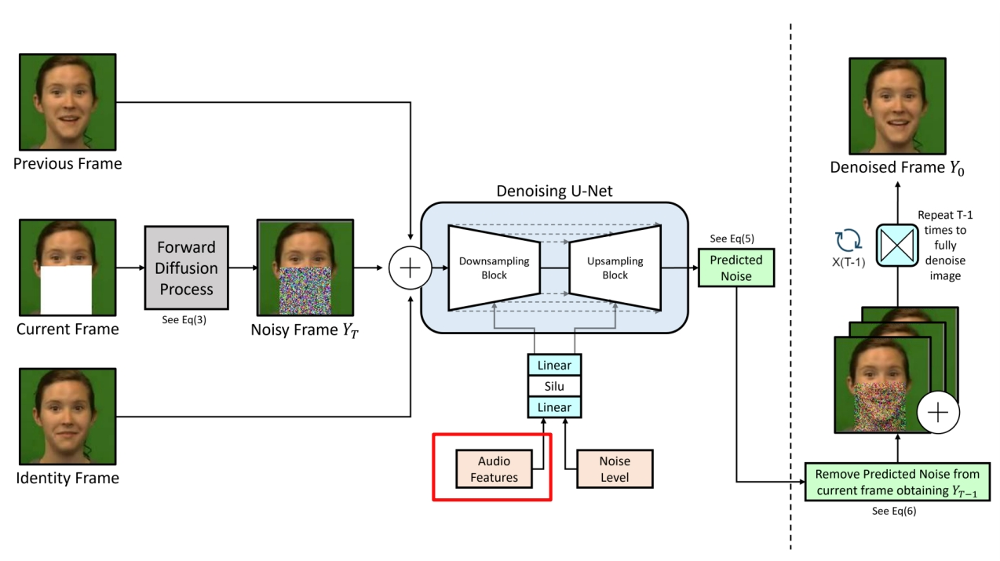</td><td></td></tr>
</tbody></table>
<table><thead><tr><th><strong>方法/论文</strong></th><th><strong>关键架构</strong></th><th><strong>训练策略</strong></th><th><strong>生成阶段说明</strong></th><th><strong>输入 → 输出</strong></th><th><strong>主要创新点</strong></th></tr></thead><tbody>
<tr><td><strong>[34] &amp; [2]</strong>  2024</td><td>像素空间扩散模型</td><td>端到端音频条件扩散</td><td>单阶段：直接生成同步唇部图像</td><td>音频 → 图像</td><td>端到端像素级扩散，无需中间表示</td></tr>
<tr><td><strong>[57]</strong>     2024</td><td>扩散模型 + VAE</td><td>两阶段训练</td><td>阶段1：扩散模型（音频→运动）<br>阶段2：VAE（运动→图像）</td><td>音频 → 运动 → 图像</td><td>分阶段解耦运动与渲染，降低生成复杂度</td></tr>
<tr><td><strong>[64]</strong>   2024.08</td><td>Transformer + 扩散模型</td><td>两阶段训练</td><td>阶段1：Transformer（音频→运动）<br>阶段2：扩散模型（运动→图像）</td><td>音频 → 运动 → 图像</td><td>Transformer编码音频时序，扩散模型细化生成</td></tr>
<tr><td><strong>[29]</strong>    2024</td><td>扩散自编码器</td><td>两阶段训练</td><td>阶段1：扩散自编码器（掩码图→语义代码）<br>阶段2：扩散模型（语义代码+音频→图像）</td><td>音频 + 掩码图 → 图像</td><td>结合语义潜在代码与音频条件，增强可控性</td></tr>
</tbody></table>
<hr />
<h4 id="非扩散模型的唇音同步方法"><a class="header" href="#非扩散模型的唇音同步方法"><strong>非扩散模型的唇音同步方法</strong></a></h4>
<table><thead><tr><th>ID</th><th>Year</th><th>Name</th><th>Note</th><th>Tags</th><th>Link</th></tr></thead><tbody>
<tr><td></td><td>2025.6.17</td><td>SyncTalk++: High-Fidelity and Efficient Synchronized Talking Heads Synthesis Using Gaussian Splatting</td><td></td><td></td><td><a href="CharacterAnimation/199.html">link</a></td></tr>
<tr><td>90</td><td>2024.10</td><td>MuseTalk: Real-Time High Quality Lip Synchronization with Latent Space Inpainting</td><td>1. 借用扩散架构但采用GAN式训练（无扩散过程），平衡生成速度与质量<br> 2. 用根据特征筛选的方式选择reference image，提升生成质量。</td><td>LDM, 开源，实时，GAN, 逐帧, VQ-VAE</td><td><a href="https://caterpillarstudygroup.github.io/ReadPapers/90.html">link</a></td></tr>
<tr><td>91</td><td>2020.8.23</td><td>A Lip Sync Expert Is All You Need for Speech to Lip Generation In The Wild</td><td>1. 首个跨ID的唇间同步口型生成方法<br>2. 预训练唇同步判别器（SyncNet监督） + 对抗学习<br>3. 提出唇音对齐性指标LSE-C和LSE-D</td><td>Wav2Lip， GAN, SyncNet, LSE-C, LSE-D</td><td><a href="https://caterpillarstudygroup.github.io/ReadPapers/91.html">link</a></td></tr>
</tbody></table>
<p>| SyncNet监督生成器                     |      | 单阶段：生成器直接输出唇部同步视频                                              | 音频 → 图像            | 引入SyncNet作为判别器，提升唇部同步精度                                         |</p>
<table><thead><tr><th><strong>方法/论文</strong></th><th><strong>关键架构</strong></th><th><strong>训练策略</strong></th><th><strong>生成阶段说明</strong></th><th><strong>输入 → 输出</strong></th><th><strong>主要创新点</strong></th></tr></thead><tbody>
<tr><td><strong>[20]</strong>    2023</td><td>VQ-VAE + 量化空间生成器</td><td>分阶段训练</td><td>阶段1：VQ-VAE编码面部/头部姿势<br>阶段2：量化空间生成高分辨率图像</td><td>音频 → 量化代码 → 图像</td><td>在量化空间中训练生成器，提升图像分辨率</td></tr>
<tr><td><strong>StyleSync [18]</strong> 2023</td><td>StyleGAN2生成器</td><td>对抗学习（SyncNet监督）</td><td>单阶段：StyleGAN2生成同步唇部图像</td><td>音频 → 图像</td><td>结合StyleGAN2高保真生成能力与SyncNet监督</td></tr>
<tr><td>VideoReTalking <strong>[8]</strong>   2022</td><td>多组件框架（重演+同步+细化）</td><td>分模块联合训练</td><td>阶段1：语义重演网络<br>阶段2：唇音同步网络<br>阶段3：身份感知细化</td><td>音频 → 图像</td><td>模块化设计分离语义、同步与身份控制</td></tr>
<tr><td><strong>DINet [63]</strong> 2023</td><td>特征图变形网络, 双编码器 + 面部动作单元（AU）系统</td><td>端到端训练</td><td>单阶段：驱动音频直接变形特征图生成嘴型</td><td>音频 → 图像</td><td>通过特征变形实现精细嘴型控制，避免分阶段误差累积</td></tr>
</tbody></table>
<table><thead><tr><th><strong>模型名称</strong></th><th><strong>核心技术</strong></th><th><strong>主要贡献</strong></th><th><strong>关键创新点</strong></th><th><strong>优势</strong></th></tr></thead><tbody>
<tr><td><strong>Wav2Lip [Pra20b]</strong></td><td>预训练唇同步判别器 + 对抗训练</td><td>生成高逼真唇部同步视频</td><td>引入SyncNet作为判别器监督生成器，优化唇-音频对齐</td><td>广泛认可的唇同步效果，适用于多种场景</td></tr>
<tr><td><strong>VideoRetalking [Che22]</strong></td><td>三阶段流程（表情中和→唇同步→身份增强）</td><td>高质量视频编辑的唇同步生成</td><td>分阶段处理（表情中和+身份感知增强），提升身份一致性</td><td>适用于视频编辑，保持人物身份与表情自然</td></tr>
<tr><td><strong>DI-Net [Zha23]</strong></td><td>双编码器 + 面部动作单元（AU）系统</td><td>生成逼真且情感一致的面部视频</td><td>结合面部动作单元系统控制情感表达，双编码器分离内容与身份特征</td><td>情感一致性高，适合需要情绪表达的应用（如虚拟主播）</td></tr>
<tr><td><strong>TalkLip [Wan23]</strong></td><td>对比学习 + Transformer音频编码</td><td>提升唇语音同步的全局时间依赖性</td><td>对比学习优化音频-视频对齐；Transformer建模全局时序关系</td><td>同步效果更精准，适应复杂语音节奏与长时序依赖</td></tr>
</tbody></table>
<hr />
<h2 id="姿势驱动的人类视频生成"><a class="header" href="#姿势驱动的人类视频生成">姿势驱动的人类视频生成</a></h2>
<p>包括单条件姿势引导方法和多条件姿势引导方法。</p>
<p></p>
<p></p>
<h3 id="2d动作驱动"><a class="header" href="#2d动作驱动">2D动作驱动</a></h3>
<p>pose + reference Image -&gt; video</p>
<table><thead><tr><th>ID</th><th>Year</th><th>Name</th><th>Note</th><th>Tags</th><th>Link</th></tr></thead><tbody>
<tr><td>108</td><td>2025.4.30</td><td><strong>ReVision: High-Quality, Low-Cost Video Generation with Explicit 3D Physics Modeling for Complex Motion and Interaction</strong></td><td>参数化的三维物理知识显式地集成到一个预训练的条件视频生成模型中，从而显著增强了其生成高质量、包含复杂动作和交互的视频的能力<br> 1.使用一个视频扩散模型生成一个粗糙的视频 <br> 2. 从该粗略视频中提取一组 2D 和 3D 特征，构建一个以对象为中心的 3D 表示，并通过我们提出的参数化物理先验模型对其进行优化，生成精确的 3D 动作序列。<br> 3. 这一优化后的动作序列被反馈到同一个视频扩散模型中作为额外的条件输入</td><td>三阶段, 即插即用</td><td><a href="https://caterpillarstudygroup.github.io/ReadPapers/108.html">link</a></td></tr>
<tr><td></td><td>2025.5.6</td><td><strong>FlexiAct: Towards Flexible Action Control in Heterogeneous Scenarios</strong></td><td></td><td>姿势引导视频合成</td><td><a href="CharacterAnimation/51.html">link</a></td></tr>
<tr><td></td><td>2025.5.6</td><td>Real-Time Person Image Synthesis Using a Flow Matching Model</td><td></td><td>姿势引导人物图像合成， flow matching</td><td><a href="CharacterAnimation/50.html">link</a></td></tr>
<tr><td>37</td><td>2024</td><td>TCAN: Animating Human Images with Temporally Consistent Pose Guidance using Diffusion Models</td><td>通过修正attention map实现背景的时序稳定性</td><td>Diffusion</td><td><a href="https://caterpillarstudygroup.github.io/ReadPapers/37.html">link</a></td></tr>
<tr><td>2</td><td>2024.1</td><td>Follow Your Pose: Pose-Guided Text-to-Video Generation using Pose-Free Videos</td><td>uses text descriptions to provide semantic information about the content of the characters, ensuring the generated videos align with the textual descriptions.</td><td>人体外观控制<br>设计了一个两阶段训练方案，利用图像姿态对和无姿态视频生成姿态可控的角色动画</td><td></td></tr>
<tr><td></td><td>2023</td><td>DreamPose: Fashion Image-to-Video Synthesis via Stable Diffusion</td><td></td><td></td><td></td></tr>
<tr><td>121</td><td>2023</td><td>MagicAnimate: Temporally Consistent Human Image Animation using Diffusion Model</td><td></td><td></td><td></td></tr>
<tr><td></td><td>2023</td><td>Dancing avatar: Pose and text-guided human motion videos synthesis with image diffusion model</td><td></td><td></td><td></td></tr>
<tr><td></td><td>2023</td><td>Disco: Disentangled control for referring human dance generation in real world</td><td></td><td></td><td></td></tr>
</tbody></table>
<h3 id="视频动作驱动"><a class="header" href="#视频动作驱动">视频动作驱动</a></h3>
<table><thead><tr><th>ID</th><th>Year</th><th>Name</th><th>Note</th><th>Tags</th><th>Link</th></tr></thead><tbody>
<tr><td>99</td><td>2025.5.19</td><td>FinePhys: Fine-grained Human Action Generation by Explicitly Incorporating Physical Laws for Effective Skeletal Guidance</td><td>1. 从视频中提取2D pose<br> 2. 2D pose lifting到3D pose<br> 3. <strong>对3D pose作物理优化</strong> <br> 4. 用优化后的pose引导视频生成</td><td><strong>可微的物理优化过程</strong>，pose信息来自视频，无外观信息控制</td><td><a href="https://caterpillarstudygroup.github.io/ReadPapers/99.html">link</a></td></tr>
<tr><td>53</td><td>2024</td><td>Implicit Warping for Animation with Image Sets</td><td>用driving视频中的人去驱动reference图像中的人，生成reference做与driving中相同动作的视频</td><td>pose信息来自视频<br>外观信息来自Reference Image<br>Cross Attention</td><td><a href="https://caterpillarstudygroup.github.io/ReadPapers/53.html">link</a></td></tr>
</tbody></table>
<h3 id="3d动作驱动"><a class="header" href="#3d动作驱动">3D动作驱动</a></h3>
<table><thead><tr><th>ID</th><th>Year</th><th>Name</th><th>Note</th><th>Tags</th><th>Link</th></tr></thead><tbody>
<tr><td></td><td>2025.5.28</td><td>LatentMove: Towards Complex Human Movement Video Generation </td><td></td><td>专门为高度动态的人体动画量身定制的、<strong>基于DiT(扩散Transformer)的框架</strong>的图像到视频(I2V)生成</td><td><a href="CharacterAnimation/135.html">link</a></td></tr>
<tr><td>42</td><td>2024</td><td>HumanVid: Demystifying Training Data for Camera-controllable Human Image Animation</td><td>3D建模 + 3D重定向 + 渲染，动作控制+相机控制</td><td>人物视频生成，3D管线</td><td><a href="https://caterpillarstudygroup.github.io/ReadPapers/42.html">link</a></td></tr>
</tbody></table>
<h3 id="虚拟换衣"><a class="header" href="#虚拟换衣">虚拟换衣</a></h3>
<table><thead><tr><th>ID</th><th>Year</th><th>Name</th><th>Note</th><th>Tags</th><th>Link</th></tr></thead><tbody>
<tr><td></td><td>2025</td><td>RealVVT: Towards Photorealistic Video Virtual Try-on via Spatio-Temporal Consistency</td><td>虚拟试衣</td><td></td><td></td></tr>
</tbody></table>
<h1 id="数据集和评估指标"><a class="header" href="#数据集和评估指标">数据集和评估指标</a></h1>
<h2 id="数据集"><a class="header" href="#数据集">数据集</a></h2>
<p><br />
</p>
<h2 id="评估指标"><a class="header" href="#评估指标">评估指标</a></h2>
<p><a href="CharacterAnimation/./VideoDiffusionModels/EvaluationMetrics.html">link</a></p>
<h1 id="挑战和难题"><a class="header" href="#挑战和难题">挑战和难题</a></h1>
<ul>
<li>遮挡问题：身体部位重叠或多人遮挡很常见，但大多数模型不能很好地处理相互影响的问题[98]，[138]。</li>
<li>Body Deformation</li>
<li>外观不一致</li>
<li>背景影响</li>
<li>时序不一致</li>
<li>不自然的姿势</li>
<li>文本驱动或语音驱动中，由于本身是一对多问题，可能受限于数据集而存在偏向性</li>
</ul>
<h1 id="影响生成质量的因素"><a class="header" href="#影响生成质量的因素">影响生成质量的因素</a></h1>
<h2 id="生成范式"><a class="header" href="#生成范式">生成范式。</a></h2>
<p>与姿势驱动方法（可以视为一阶段方法）相比，文本和音频驱动方法可以分为一阶段和两阶段方法。前者直接使用输入文本或音频作为提示来指导人类视频生成，而后者从输入文本或音频生成姿势，然后使用这些生成的姿势作为信号来指导人类视频生成。在两阶段方法中引入各种姿势类型（例如骨架姿势）提供了额外的几何和语义信息，从而提高了视频运动的准确性和真实感。这使得两阶段方法明显比一阶段方法更有效，尽管会牺牲一些效率。</p>
<h2 id="backbone"><a class="header" href="#backbone">backbone</a></h2>
<p>SD 和 SVD 等扩散模型因其卓越的性能和多样性而广泛应用于各种生成任务，包括人类视频生成。然而，与在单个采样步骤中生成样本的 GAN 不同，扩散模型需要多个采样步骤，从而增加了训练和推理的时间成本。</p>
<h2 id="pose控制信号"><a class="header" href="#pose控制信号">pose控制信号</a></h2>
<p>不同类型的条件姿势之所以有效，是因为它们提供了补充信息。</p>
<ul>
<li>骨骼姿势准确地描述了帧中人体的空间信息以及身体部位的相对位置。然而，它捕获离散的姿势变化而不是连续的运动细节，提供有限的时间连贯性。</li>
<li>光流本质上包括时间信息，捕获连续帧之间的变化并提供特征空间中的连续运动轨迹。这使得模型能够生成帧之间平滑过渡的视频，避免跳跃或不连续。</li>
<li>深度地图捕捉人体与背景之间的距离信息，以及表面细节和深度变化。</li>
<li>3D 网格提供了骨骼姿势所缺乏的物体表面的详细几何结构。</li>
</ul>
<p>总之，不同类型的姿势提供互补的时空信息，并且不存在满足所有要求的统一姿势类型。不同的场景和问题可能需要不同的姿势。</p>
<h1 id="未来研究方向"><a class="header" href="#未来研究方向">未来研究方向</a></h1>
<ul>
<li>大规模高质量人类视频数据集</li>
<li>长视频生成</li>
<li>高保真视频生成</li>
<li>提高人类视频扩散模型的效率</li>
<li>细粒度可控性</li>
<li>交互性。</li>
</ul>
<h1 id="reference-5"><a class="header" href="#reference-5">Reference</a></h1>
<ol>
<li><a href="https://arxiv.org/pdf/2407.08428">A Comprehensive Survey on Human Video
Generation: Challenges, Methods, and Insights</a></li>
<li>https://github.com/wentaoL86/Awesome-Human-Video-Generation</li>
</ol>
<div style="break-before: page; page-break-before: always;"></div><h1 id="video-editing"><a class="header" href="#video-editing">Video Editing</a></h1>
<div style="break-before: page; page-break-before: always;"></div><h1 id="31-tuning-based"><a class="header" href="#31-tuning-based">3.1 Tuning-based</a></h1>
<p> </p>
<h2 id="one-shot-tuned-video-editing"><a class="header" href="#one-shot-tuned-video-editing">One-Shot Tuned Video Editing</a></h2>
<p><strong>Compared to training-free editing methods:</strong> </p>
<ul>
<li>Cons: still need 1 video for training</li>
<li>Pros: supports significant shape change</li>
</ul>
<p>P149 </p>
<table><thead><tr><th>ID</th><th>Year</th><th>Name</th><th>Note</th><th>Tags</th><th>Link</th></tr></thead><tbody>
<tr><td>118</td><td>2023</td><td>Tune-A-Video: One-Shot Tuning of Image Diffusion Models for Text-to-Video Generation</td><td></td><td></td><td></td></tr>
<tr><td>119</td><td>2023</td><td>Dreamix: Video Diffusion Models are General Video Editors</td><td></td><td></td><td></td></tr>
<tr><td></td><td>2023</td><td>Towards Consistent Video Editing with Text-to-Image rDiffusion Models</td><td>Modify self-attention for better temporal consistency</td><td></td><td></td></tr>
<tr><td></td><td>2023</td><td>Video-P2P: Video Editing with Cross-attention Control</td><td>Improve input-output semantic consistency of video editing via shared embedding optimization and cross-attention control。<br></td><td>attention控制</td><td></td></tr>
</tbody></table>
<p>P166</p>
<h2 id="multiple-shot-tuned"><a class="header" href="#multiple-shot-tuned">Multiple-Shot Tuned</a></h2>
<p>Video Editing: Text Conditioned</p>
<p>P167</p>
<p> </p>
<table><thead><tr><th>ID</th><th>Year</th><th>Name</th><th>Note</th><th>Tags</th><th>Link</th></tr></thead><tbody>
<tr><td>120</td><td>2023</td><td>MotionDirector: Motion Customization of Text-to-Video Diffusion Models</td><td></td><td></td><td></td></tr>
</tbody></table>
<hr />
<blockquote>
<p>本文出自CaterpillarStudyGroup，转载请注明出处。</p>
<p>https://caterpillarstudygroup.github.io/ImportantArticles/</p>
</blockquote>
<blockquote>
<p>✅ 在一个视频上训练后可以对视频进行编辑。<br />
✅ 训练过程：(1) 对模型的时域模块 finetune．<br />
✅ (2) 对图像打乱后用图像 finetune．<br />
✅ 把视频和图片进行 mix finetune.<br />
✅ 图片 finetune 会把 tenmporal 模块 fix 住。</p>
</blockquote>
<blockquote>
<p>✅ 需要训练的模型，且针对一个模型进行训练。<br />
✅ 基本泛式：输入：一段视频，一个文生图模型，一个文本提示词。输出：基于定制化的文生图得到文生视频。<br />
✅ 不在大规模上训练，只在一个视频上训练，只需十分钟。</p>
</blockquote>
<blockquote>
<p>✅ 推断过程：(1) 把视频 dounsample，维度变小。<br />
✅ (2) 加入噪声作为初始噪声，类似于 DDIM Inversion.<br />
✅ (3) 用 diffusion model 生成。<br />
✅ (4) 上采样。<br />
✅ 如果有更多 reference vedio 是不是能学得更好。<br />
✅ (1) 用几段视频学习 concept．<br />
✅ (2) 把 concept 接入到 diffusion model 中。<br />
✅ 通过多段视频学习 motion concept.</p>
</blockquote>
<blockquote>
<p>✅ 不仅学 motion，还可以学 camera motion，camera motion，物体轨迹。 </p>
</blockquote>
<blockquote>
<p>✅ 怎么把一个 concept 应用到不同的物体上。<br />
✅ 怎样只学 motion 而不被物体的 appearance 影响，能不能 decouple.<br />
✅ 分支1：spatial path，灰色为 spatial LoRA，学习外表信息。<br />
✅ 分支2：temporal path，蓝色为 temporal LoRA，这个 path 用于学习 motion.<br />
✅ debias：去掉 appreance 对 loss 的影响。<br />
✅ temporal LORA 学习时使用但不修改 spatial LORA 的 Weight.<br />
✅ 应用：(1) 也可以用于 one shot<br />
✅ (2) 可以用于 appreace 和 motion 的组合<br />
✅ (3) 可以用于 Image Animation </p>
</blockquote>
<div style="break-before: page; page-break-before: always;"></div><h1 id="32-training-free"><a class="header" href="#32-training-free">3.2 Training-free</a></h1>
<p>P178<br />
 </p>
<table><thead><tr><th>ID</th><th>Year</th><th>Name</th><th>Note</th><th>Tags</th><th>Link</th></tr></thead><tbody>
<tr><td>117</td><td>2023</td><td>TokenFlow: Consistent Diffusion Features for Consistent Video Editing</td><td></td><td></td><td></td></tr>
<tr><td></td><td>2023</td><td>FateZero: Fusing Attentions for Zero-shot Text-based Video Editing</td><td>Attention map fusing for better temporal consistency <br> - During DDIM inversion, save inverted self-/cross-attention maps <br> - During editing, use some algorithms to blend inverted maps and generated maps</td><td>   <br>   <br> </td><td></td></tr>
</tbody></table>
<p>P187</p>
<h2 id="more-works-1"><a class="header" href="#more-works-1">More Works</a></h2>
<table><thead><tr><th></th><th></th></tr></thead><tbody>
<tr><td></td><td><strong>MeDM</strong> (Chu et al.) <br> OpScal flow-based guidance for temporal consistency <br> “MeDM: Mediagng Image Diffusion Models for Video-to Video Translagon with Temporal Correspondence Guidance,” arXiv 2023.</td></tr>
<tr><td></td><td><strong>Ground-A-Video</strong> (Jeong et al.) <br> Improve temporal consistency via modified attention and optical flow <br> “Ground-A-Video: Zero-shot Grounded Video Editing using Text-to-image Diffusion Models,” arXiv 2023.</td></tr>
<tr><td></td><td><strong>Gen-L-Video</strong> (Lorem et al.) <br> Edit very long videos using existing generators <br> “Gen-L-Video: Multi-Text to Long Video Generation via Temporal Co-Denoising,” arXiv 2023.</td></tr>
<tr><td></td><td><strong>FLATTEN</strong> (Cong et al.) <br> Optical flow-guided attention for temporal consistency <br> “Flatten: optical flow-guided attention for consistent text-to-video editing,” arXiv 2023.</td></tr>
<tr><td></td><td><strong>InFusion</strong> (Khandelwal et al.) <br> Improve temporal consistency via fusing latents <br> “InFusion: Inject and Attention Fusion for Multi Concept Zero-Shot Text-based Video Editing,” ICCVW 2023.</td></tr>
<tr><td></td><td><strong>Vid2Vid-Zero</strong> (Wang et al.) <br> Improve temporal consistency via cross￾attention guidance and null-text inversion <br> “Zero-Shot Video Editing Using Off-The-Shelf Image Diffusion Models,” arXiv 2023.</td></tr>
</tbody></table>
<p>P194</p>
<blockquote>
<p>✅ 对于输入文本的每个 wordtoken, 都可以通过 attentior map 找到图像中的大概位置，把要去除的 token mask 掉，剩下部分保留。生成图像则把非 token 部分 mask 掉，以此进行两部分的融合。</p>
</blockquote>
<p>P197</p>
<blockquote>
<p>✅ 基于不同信号的各种版的 control net.</p>
</blockquote>
<hr />
<blockquote>
<p>本文出自CaterpillarStudyGroup，转载请注明出处。</p>
<p>https://caterpillarstudygroup.github.io/ImportantArticles/</p>
</blockquote>
<div style="break-before: page; page-break-before: always;"></div><h1 id="33-controlled-edifng-depthposepointcontrolnet"><a class="header" href="#33-controlled-edifng-depthposepointcontrolnet">3.3 Controlled Edifng (depth/pose/point/ControlNet)</a></h1>
<blockquote>
<p>✅ 已有一段视频，通过 guidance 或文本描述，修改视频。</p>
</blockquote>
<p>P189</p>
<p> </p>
<p>P190</p>
<h2 id="depth-control"><a class="header" href="#depth-control">Depth Control</a></h2>
<p>Depth estimating network</p>
<table><thead><tr><th>ID</th><th>Year</th><th>Name</th><th>Note</th><th>Tags</th><th>Link</th></tr></thead><tbody>
<tr><td></td><td>2022</td><td>Towards Robust Monocular Depth Estimation: Mixing Datasets for Zero-shot Cross-dataset Transfer</td><td>✅ 深变信息 Encode 成 latent code, 与 noise concat 到一起。</td><td></td><td></td></tr>
<tr><td>122</td><td>2023</td><td>Structure and Content-Guided Video Synthesis with Diffusion Models</td><td>Transfer the style of a video using text prompts given a “driving video”，以多种形式在预训练图像扩散模型中融入时序混合层进行扩展</td><td></td><td>Gen-1, Framewise, depth-guided</td></tr>
<tr><td>123</td><td>2023</td><td>Pix2Video: Video Editing using Image Diffusion</td><td>Framewise depth-guided video editing</td><td></td><td></td></tr>
</tbody></table>
<p>P199</p>
<h1 id="controlnet--multiple-control"><a class="header" href="#controlnet--multiple-control">ControlNet / Multiple Control</a></h1>
<p>也是control net 形式，但用到更多控制条件。</p>
<table><thead><tr><th>ID</th><th>Year</th><th>Name</th><th>Note</th><th>Tags</th><th>Link</th></tr></thead><tbody>
<tr><td>124</td><td>2023</td><td>ControlVideo: Training-free Controllable Text-to-Video Generation</td><td></td><td></td><td></td></tr>
<tr><td></td><td>2023</td><td>VideoControlNet: A Motion-Guided Video-to-Video Translation Framework by Using Diffusion Model with ControlNet</td><td>Optical flow-guided video editing; I, P, B frames in video compression <br> ✅ 内容一致性，适用于 style transfer, 但需要对物体有较大编辑力度时不适用(例如编辑物体形状)。</td><td></td><td></td></tr>
<tr><td></td><td>2023</td><td>CCEdit: Creative and Controllable Video Editing via Diffusion Models</td><td></td><td></td><td></td></tr>
<tr><td></td><td>2023</td><td>VideoComposer: Compositional Video Synthesis with Motion Controllability</td><td>Image-, sketch-, motion-, depth-, mask-controlled video editing<br> ✅ 每个 condition 进来，都过一个 STC-Encoder, 然后把不同 condition fuse 到一起，输入到 U-Net. <br> Spako-Temporal Condikon encoder (STC-encoder): a unified input interface for condikons</td><td>  <br></td><td></td></tr>
<tr><td></td><td>2023</td><td>Control-A-Video: Controllable Text-to-Video Generagon with Diffusion Models</td><td>通过边缘图或深度图等序列化控制信号生成视频，并提出两种运动自适应噪声初始化策略</td><td></td><td></td></tr>
<tr><td></td><td>2024</td><td>Vmc: Video motion customization using temporal attention adaption for text-to-video diffusion models.</td><td>轨迹控制</td><td></td><td></td></tr>
<tr><td></td><td>2023</td><td>MagicProp: Diffusion-based Video Editing via Motion-aware Appearance Propagation</td><td></td><td></td><td></td></tr>
<tr><td></td><td>2023</td><td>Make-Your-Video: Customized Video Generation Using Textual and Structural Guidance</td><td></td><td></td><td></td></tr>
<tr><td></td><td>2023</td><td>MagicEdit: High-Fidelity and Temporally Coherent Video Editing</td><td></td><td></td><td></td></tr>
<tr><td></td><td>2023</td><td>EVE: Efficient zero-shot text-based Video Editing with Depth Map Guidance and Temporal Consistency Constraints</td><td></td><td></td><td></td></tr>
</tbody></table>
<p>P225</p>
<h1 id="point-control"><a class="header" href="#point-control">Point-Control</a></h1>
<table><thead><tr><th>ID</th><th>Year</th><th>Name</th><th>Note</th><th>Tags</th><th>Link</th></tr></thead><tbody>
<tr><td>98</td><td>2023</td><td>VideoSwap: Customized Video Subject Swapping with Interactive Semantic Point Correspondence</td><td></td><td></td><td></td></tr>
</tbody></table>
<p>P226</p>
<hr />
<blockquote>
<p>本文出自CaterpillarStudyGroup，转载请注明出处。</p>
<p>https://caterpillarstudygroup.github.io/ImportantArticles/</p>
</blockquote>
<div style="break-before: page; page-break-before: always;"></div><h1 id="34-3d-aware"><a class="header" href="#34-3d-aware">3.4 3D-Aware</a></h1>
<p>P243</p>
<p> </p>
<table><thead><tr><th>ID</th><th>Year</th><th>Name</th><th>Note</th><th>Tags</th><th>Link</th></tr></thead><tbody>
<tr><td></td><td>2023</td><td>Layered Neural Atlases for Consistent Video Editing</td><td>- Decompose a video into a foreground image + a background image <br> - Edit the foreground/background image = edit the video <br> ✅ 对背景进行编辑（图片编辑、风格迁移）再传播到不同帧上去。</td><td> <br> </td><td></td></tr>
<tr><td></td><td>2023</td><td>VidEdit: Zero-Shot and Spagally Aware Text-Driven Video Edigng</td><td>Atlas-based video editing <br> - Decompose a video into a foreground image + a background image <br> - Edit the foreground/background image = edit the video <br> - Use diffusion to edit foreground/background atlas &gt; ✅ 前景编辑：<br> (1) 抠出第一帧前景并进行编辑得到 Partial Atlas. <br> ✅ (2) Partial Atlas 作为下一帧的 condition 整体上是自回归的。<br> ✅ 所有 Partial 合起来得到一个整体。<br> ✅ 背景使用深度信息作为 cordition.</td><td></td><td></td></tr>
<tr><td></td><td>2023</td><td>Shape-aware Text-driven Layered Video Editing</td><td>Atlas-based video editing</td><td></td><td></td></tr>
<tr><td></td><td>2023.11</td><td>Stablevideo: Text-driven consistency-aware diffusion video editing</td><td>✅ 给一个场景的多视角图片，基于 MLP 学习 3D 场景的隐式表达。</td><td></td><td></td></tr>
<tr><td>115</td><td>2023</td><td>CoDeF: Content Deformation Fields for Temporally Consistent Video Processing</td><td></td><td></td><td><a href="https://caterpillarstudygroup.github.io/ReadPapers/115.html">link</a></td></tr>
<tr><td></td><td>2023</td><td>HOSNeRF: Dynamic Human-Object-Scene Neural Radiance Fields from a Single Video</td><td></td><td></td><td></td></tr>
<tr><td>116</td><td>2023</td><td>DynVideo-E: Harnessing Dynamic NeRF for Large-Scale Motion- and View-Change Human-Centric Video Editing</td><td></td><td></td><td><a href="https://caterpillarstudygroup.github.io/ReadPapers/116.html">link</a></td></tr>
</tbody></table>
<hr />
<blockquote>
<p>本文出自CaterpillarStudyGroup，转载请注明出处。</p>
<p>https://caterpillarstudygroup.github.io/ImportantArticles/</p>
</blockquote>
<div style="break-before: page; page-break-before: always;"></div><h1 id="35-other-guidance"><a class="header" href="#35-other-guidance">3.5 Other Guidance</a></h1>
<p>P264</p>
<p></p>
<table><thead><tr><th>ID</th><th>Year</th><th>Name</th><th>Note</th><th>Tags</th><th>Link</th></tr></thead><tbody>
<tr><td></td><td>2023</td><td>InstructVid2Vid: Controllable Video Editing with Natural Language Instructions</td><td>- Generate ⟨instruction, video⟩ dataset using ChatGPT, BLIP and Tune-A-Video <br> - Train inflated Stable Diffusion for instruction-guided video editing</td><td></td><td></td></tr>
<tr><td></td><td>2023</td><td>Soundini: Sound-Guided Diffusion for Natural Video Editing</td><td>Sound-guided video editing</td><td></td><td></td></tr>
<tr><td></td><td>2023</td><td>DragNUWA: Fine-grained Control in Video Generation by Integrating Text, Image, and Trajectory</td><td></td><td></td><td>轨迹控制</td></tr>
<tr><td></td><td>2023</td><td>Collaborative Score Distillation for Consistent Visual Synthesis</td><td></td><td></td><td></td></tr>
<tr><td></td><td>2023</td><td>Make-A-Protagonist: Generic Video Edigng with An Ensemble of Experts</td><td></td><td></td><td></td></tr>
</tbody></table>
<p>P272</p>
<blockquote>
<p>✅ showlab/Awesome-Video-Diffusion</p>
</blockquote>
<hr />
<blockquote>
<p>本文出自CaterpillarStudyGroup，转载请注明出处。</p>
<p>https://caterpillarstudygroup.github.io/ImportantArticles/</p>
</blockquote>
<div style="break-before: page; page-break-before: always;"></div><h1 id="评价指标"><a class="header" href="#评价指标">评价指标</a></h1>
<p> </p>
<p>图像质量、视频质量、一致性、多样性、美学和动作准确性</p>
<p></p>
<h2 id="image-level-evaluation-metrics"><a class="header" href="#image-level-evaluation-metrics">Image-level Evaluation Metrics</a></h2>
<ul>
<li>Fréchet Inception Distance (FID, ↓): semantic similarity between images</li>
<li>Peak Signal-to-Noise Ratio (PSNR, ↑): pixel-level similarity between images</li>
<li>Structural Similarity Index (SSIM, ↓): pixel-level similarity between images</li>
<li>CLIPSIM (↑): image-text relevance</li>
</ul>
<h3 id="fréchet-inception-distance-fid"><a class="header" href="#fréchet-inception-distance-fid">Fréchet Inception Distance (FID)</a></h3>
<blockquote>
<p>✅ FID：评估两个 distribution 的差距有多大。<br />
✅ 由于使用了网络的高层 feature，可以评价 high／evel 的语义相似性。</p>
</blockquote>
<p> </p>
<blockquote>
<p>✅ CNN＋Softmax 是一个预训练好的图像分类网络，取 softmax 上一层做为图像的 feature.<br />
✅ 取大量真实图像的 feature 和预训练模型生成的图 feature.<br />
✅ 假设两类图像的 feature 各自符合高斯分布，计算两个分布的距离。<br />
✅ 优点：评价结果与人类直觉很接近，缺点：需要大量 sample.</p>
</blockquote>
<p>P49</p>
<h3 id="peak-signal-to-noise-ratio-psnr"><a class="header" href="#peak-signal-to-noise-ratio-psnr">Peak Signal-to-Noise Ratio (PSNR)</a></h3>
<p>Pixel-level similarity between images</p>
<ul>
<li>For two images \(x,y \text{ of shape }  M\times N\):</li>
</ul>
<p>\begin{align*} \mathrm{PSNR} (x,y) = 10 \log_{10}{} \frac{255^2}{\mathrm{MSE} (x,y)}  \end{align*}</p>
<p>where</p>
<p>\begin{align*} \mathrm{MSE} (x,y) = \frac{1}{MN} \sum_{i=1}^{M} \sum_{j=1}^{N} (x_{ij}-y_{ij})^2\end{align*}</p>
<p>P50</p>
<h3 id="structural-similarity-index-measure-ssim"><a class="header" href="#structural-similarity-index-measure-ssim">Structural Similarity Index Measure (SSIM)</a></h3>
<p>Pixel-level similarity between images</p>
<ul>
<li>
<p>Model any image distortion as a combination of:<br />
(1) loss of correlation, (2) luminance distortion, (3) contrast distortion</p>
</li>
<li>
<p>For two images \(x,y \text{ of shape }  M\times N\):</p>
</li>
</ul>
<p>\begin{align*}  \mathrm{SSIM} (x,y)=l(x,y)\cdot c(x,y)\cdot s(x,y)\end{align*}</p>
<p>where</p>
<p>\begin{align*} \begin{cases}
\text{Lumiannce Comparison Funckon:} l(x,y)=\frac{2\mu _x\mu _y+C_1}{\mu _x^2+\mu _y^2+C_1}  \\ 
\text{Contrast Comparison Funckon:} c(x,y)=\frac{2\sigma  _x\sigma  _y+C_2}{\sigma  _x^2+\sigma  _y^2+C_2}  \\ 
\text{Structure Comparison Funckon:} s(x,y)=\frac{\sigma  _{xy}+C_3}{\sigma  _{x}\sigma  _{y}+C_3}  \end{cases}\end{align*}</p>
<p>P51</p>
<h3 id="clip-similarity"><a class="header" href="#clip-similarity">CLIP Similarity</a></h3>
<blockquote>
<p>✅ CLIP Score，衡量与文字的匹配度。 
 </p>
</blockquote>
<table><thead><tr><th>ID</th><th>Year</th><th>Name</th><th>Note</th><th>Tags</th><th>Link</th></tr></thead><tbody>
<tr><td></td><td>2017</td><td>GANs Trained by a Two Time-Scale Update Rule Converge to a Local Nash Equilibrium</td><td></td><td></td><td><a href="https://arxiv.org/abs/1706.08500">link</a></td></tr>
<tr><td></td><td>2023</td><td>Hung-Yi Lee, “Machine Learning 2023 Spring,” National Taiwan University.</td><td></td><td></td><td></td></tr>
<tr><td></td><td>2010</td><td>Horé et al., “Image Quality Metrics: PSNR vs. SSIM,”</td><td></td><td></td><td></td></tr>
<tr><td></td><td>2004</td><td>Wang et al., “Image Quality Assessment: from Error Visibility to Structural Similarity,”</td><td></td><td></td><td></td></tr>
<tr><td></td><td>2021</td><td>Radford et al., “Learning Transferable Visual Models From Natural Language Supervision,”</td><td></td><td></td><td></td></tr>
</tbody></table>
<h2 id="video-level-evaluation-metrics"><a class="header" href="#video-level-evaluation-metrics"><strong>Video-level Evaluation Metrics</strong></a></h2>
<ul>
<li>Fréchet Video Distance (FVD, ↓): semantic similarity &amp; temporal coherence</li>
<li>Kernel Video Distance (KVD, ↓): video quality (via semantic features and MMD)</li>
<li>Video Inception Score (IS, ↑): video quality and diversity</li>
<li>Frame Consistency CLIP Score (↑): frame temporal semantic consistency</li>
</ul>
<p>P52</p>
<h3 id="fréchet-video-distance-fvd"><a class="header" href="#fréchet-video-distance-fvd">Fréchet Video Distance (FVD)</a></h3>
<p>Semantic similarity and temporal coherence between two videos</p>
<p>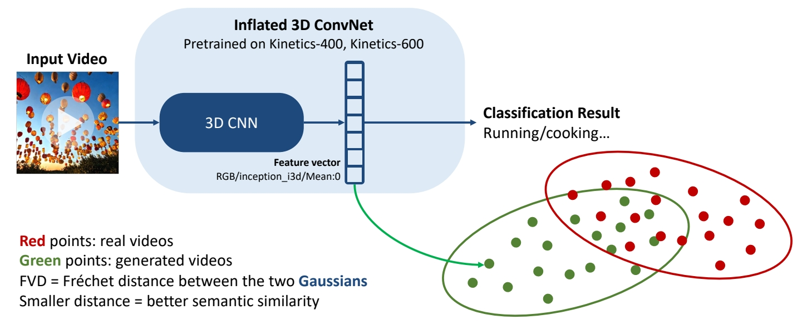 </p>
<p>P53</p>
<h3 id="kernel-video-distance"><a class="header" href="#kernel-video-distance">Kernel Video Distance</a></h3>
<p>Video quality assessment via semantic features and MMD</p>
<p></p>
<p>P54</p>
<h3 id="video-inception-score-is"><a class="header" href="#video-inception-score-is">Video Inception Score (IS)</a></h3>
<p>Video quality and diversity</p>
<p> </p>
<blockquote>
<p>✅ 多样性，在不给定 condition 的情况生成的分布的多样性。<br />
✅ 质量：在给 condition 的条件下应生成特定的类别。</p>
</blockquote>
<p>P55</p>
<h3 id="frame-consistence-clip-scores"><a class="header" href="#frame-consistence-clip-scores">Frame Consistence CLIP scores</a></h3>
<p>Frame temporal semantic consistency</p>
<ul>
<li>Compute CLIP image embeddings for all frames</li>
<li>Report average cosine similarity between all pairs of frames</li>
</ul>
<p> </p>
<table><thead><tr><th>ID</th><th>Year</th><th>Name</th><th>Note</th><th>Tags</th><th>Link</th></tr></thead><tbody>
<tr><td></td><td>2019</td><td>Unterthiner et al., “FVD: A new Metric for Video Generation,”</td><td></td><td></td><td></td></tr>
<tr><td></td><td>2018</td><td>Unterthiner et al., “Towards Accurate Generative Models of Video: A New Metric &amp; Challenges,”</td><td></td><td></td><td></td></tr>
<tr><td></td><td>2016</td><td>Salimans et al., “Improved Techniques for Training GANs,”</td><td></td><td></td><td></td></tr>
<tr><td></td><td>2018</td><td>Barratt et al., “A Note on the Inception Score,”</td><td></td><td></td><td></td></tr>
<tr><td></td><td>2020</td><td>Saito et al., “Train Sparsely, Generated Densely: Memory-Efficient Unsupervised Training of High-Resolution Temporal GAN,”</td><td></td><td></td><td></td></tr>
<tr><td></td><td>2021</td><td>Radford et al., “Learning Transferable Visual Models From Natural Language Supervision,”</td><td></td><td></td><td></td></tr>
</tbody></table>
<p>P57</p>
<h2 id="主观评价"><a class="header" href="#主观评价">主观评价</a></h2>
<h3 id="hybrid-evaluationevalcrafter"><a class="header" href="#hybrid-evaluationevalcrafter">Hybrid evaluation：<strong>EvalCrafter</strong></a></h3>
<ul>
<li>Creates a balanced prompt list for evaluation</li>
<li><strong>Multi-criteria decision analysis</strong> on 18 metrics: visual quality, content quality…</li>
<li>Regress the coefficients of all metrics to generate an overall score aligned with user opinions</li>
</ul>
<p> </p>
<table><thead><tr><th>ID</th><th>Year</th><th>Name</th><th>Note</th><th>Tags</th><th>Link</th></tr></thead><tbody>
<tr><td></td><td>2023</td><td>Liu et al., “EvalCrafter: Benchmarking and Evaluating Large Video Generation Models,”</td><td></td><td></td><td></td></tr>
</tbody></table>
<p>P45</p>
<h1 id="datasets"><a class="header" href="#datasets">Datasets</a></h1>
<p>The WebVid-10M Dataset</p>
<p> </p>
<p>Bain et al., “Frozen in Time: A Joint Video and Image Encoder for End to End Paper,” ICCV 2021.</p>
<blockquote>
<p>✅ WebVid 是常用的视频数据集，有高清视频及配对文本。   </p>
</blockquote>
<div style="break-before: page; page-break-before: always;"></div><table><thead><tr><th>ID</th><th>Year</th><th>Name</th><th>Note</th><th>Tags</th><th>Link</th></tr></thead><tbody>
<tr><td></td><td>2025</td><td>FlexiClip: Locality-Preserving Free-Form Character Animation</td><td></td><td></td><td></td></tr>
</tbody></table>
<div style="break-before: page; page-break-before: always;"></div><h1 id="a-comprehensive-analysis-of-pinns-variants-applications-and-challenges"><a class="header" href="#a-comprehensive-analysis-of-pinns-variants-applications-and-challenges">A COMPREHENSIVE ANALYSIS OF PINNS: VARIANTS, APPLICATIONS, AND CHALLENGES</a></h1>
<p>物理信息神经网络（PINN）作为经典神经网络的新型变体，专为求解偏微分方程及其衍生形式而开发。与传统数值方法相比，PINN具有以下优点：</p>
<ul>
<li>采用无网格化方法，能够有效处理具有不规则、复杂或高维几何特征的问题</li>
<li>具有理解并编码物理先验知识的能力，从而生成有效近似解</li>
<li>能够从未标注的训练数据中自主推导规律</li>
</ul>
<table><thead><tr><th>ID</th><th>Year</th><th>Name</th><th>解决了什么痛点</th><th>主要贡献是什么</th><th>Tags</th><th>Link</th></tr></thead><tbody>
<tr><td>180</td><td>2019</td><td>Physics-informed neural networks: A deep learning framework for solving forward and inverse problems involving nonlinear partial differential equations</td><td>PINN</td><td>求解偏微分方程及其衍生形式</td><td><a href="https://neuralfields.cs.brown.edu/paper_4.html">link</a></td><td></td></tr>
</tbody></table>
<h2 id="pinns-architecture"><a class="header" href="#pinns-architecture">PINNs Architecture</a></h2>
<p>输入：指定积分域内的坐标点<br />
输出：对应微分方程的近似解</p>
<p>[TODO] 图1</p>
<p><strong>3.3 损失函数构建</strong></p>
<p>考虑参数化偏微分方程的一般表达式：
$$
\begin{aligned}
\text{偏微分方程：} f\left(x, t, \frac{\partial y}{\partial x}, \frac{\partial y}{\partial t}, \ldots; \Psi\right) &amp;= 0, \quad x \in \Omega, ; t \in [0, T] \
\text{初始条件IC：} y(x, t_0) &amp;= h(x), \quad x \in \Omega \
\text{边界条件BC：} y(x, t) &amp;= g(t), \quad x \in \partial\Omega, ; t \in [0, T]
\end{aligned}
$$</p>
<p>该方程定义在域 (\Omega \subset \mathbb{R}^N) 上，边界为 (\partial\Omega)。其中：</p>
<ul>
<li>(x = (x_1, x_2, \cdots, x_N) \in \mathbb{R}^N) 表示空间坐标，</li>
<li>(t) 表示时间，</li>
<li>(f) 是描述问题的函数，包含微分算子及参数 (\Psi)。</li>
<li>(y(x, t)) 是偏微分方程的解，</li>
<li>初始条件为 (h(x))，</li>
<li>边界条件为 (g(t))（可以是狄利克雷、诺伊曼、罗宾或周期性边界条件）。</li>
</ul>
<p>利用神经网络的通用逼近能力，可以构建 (y(x, t)) 的代理解 (\hat{y}(x, t; \theta))，其中 (\theta) 表示神经网络中的权重和偏置向量集合：</p>
<p>$$
y(x, t) \approx \hat{y}(x, t; \theta)
$$</p>
<p>损失函数定义为：</p>
<p>$$
\begin{aligned}
\mathcal{L}(\Theta) &amp;= w_f \mathcal{L}<em>f(\theta) + w</em>{ic} \mathcal{L}<em>{ic}(\theta) + w</em>{bc} \mathcal{L}<em>{bc}(\theta) \
\mathcal{L}<em>f(\theta) &amp;= \frac{1}{N_f} \sum</em>{i=1}^{N_f} \left| f\left(x, t, \frac{\partial \hat{y}}{\partial x}, \frac{\partial \hat{y}}{\partial t}, \ldots; \Psi\right) \right|<em>2^2 \
\mathcal{L}</em>{ic}(\theta) &amp;= \frac{1}{N</em>{ic}} \sum_{i=1}^{N_{ic}} \left| \hat{y}(x, t_0) - h(x) \right|<em>2^2 \
\mathcal{L}</em>{bc}(\theta) &amp;= \frac{1}{N_{bc}} \sum_{i=1}^{N_{bc}} \left| \hat{y}(x, t) - g(t) \right|_2^2
\end{aligned}
$$</p>
<p>其中：</p>
<ul>
<li>(N_f) 是配置点集合，</li>
<li>(N_{ic}) 是满足初始条件的点集合，</li>
<li>(N_{bc}) 是满足边界条件的点集合，</li>
<li>(w_f)、(w_{ic}) 和 (w_{bc}) 是相应的权重系数。</li>
</ul>
<h2 id="pinn解ode"><a class="header" href="#pinn解ode">PINN解ODE</a></h2>
<p>相较于传统数学方法，基于深度学习的方法在求解ODE时展现出多方面的显著优势:</p>
<ol>
<li>无论求解过程涉及的数学方法多么复杂，这类方法生成的解都具有较高的精确度。</li>
<li>边界条件与维度因素是制约数学方法效能的关键要素，而深度学习方法对这两个因素均具备良好的适应性。</li>
<li>对于具有随机分布或噪声的数据，此类方法也能有效求解。</li>
</ol>
<p>当前，用于求解ODE的主流深度学习技术有神经ODE、物理信息神经网络、生成对抗网络。本文专注于第二种。</p>
<p>[TODO] 表2</p>
<table><thead><tr><th>ID</th><th>Year</th><th>Name</th><th>解决了什么痛点</th><th>主要贡献是什么</th><th>Tags</th><th>Link</th></tr></thead><tbody>
<tr><td></td><td>2023</td><td>Solving stiff ordinary differential equations using physics informed neural networks (pinns)</td><td>用PINN求解刚性ODE</td><td></td><td></td><td></td></tr>
<tr><td></td><td>2023</td><td>Solving differential equations using physics informed deep learning: a hand-on tutorial with benchmark tests.</td><td>系统阐述用于求解ODE的DL技术从传统NN到PINN的演变历程。</td><td>1. 详细解释了设计PINN涉及的多种因素，包括损失函数构建、物理概念的作用以及优化方法等。<br>2. 该网络在不同ODE上进行了性能测试，并与经典积分方法进行了对比验证。<br>作者发现，PINN的主要优势在于：<br>对于弱非线性问题，仅需后者（传统方法）数据量的一小部分，即可产生与当前任何常用技术相媲美的结果。<br>对于高度非线性问题，PINN在常规条件下难以取得良好效果，需要在一定的积分区间内获得训练数据的先验知识以弥补性能不足。</td><td></td><td></td></tr>
<tr><td></td><td>2021</td><td>Solving ordinary differential equations using an optimization technique based on training improved artificial neural networks</td><td>使用基于DL求解ODE，可被视为推动PINN发展的关键因素之一。</td><td>提出了一种借助改进型ANN识别ODE数值解的新方法：<br>1. 先计算特定ODE的近似解，再进行损失最小化。<br>2. 损失函数由多个误差计算函数组合而成。<br>3. 网络参数基于Levenberg-Marquardt算法的结果进行了重构。<br>所提网络能实现更高的精度和更快的收敛速度。</td><td></td><td></td></tr>
<tr><td></td><td>2020</td><td>A tutorial on solving ordinary differential equations using python and hybrid physics-informed neural network.</td><td>使用PINN求解ODE的研究仍处于较浅层面，未能形成系统性的发现。</td><td>首次对PINN在ODE求解中的应用进行了较为全面的探讨。该文献着重从实现角度出发，基于经典Python框架进行技术阐释。但并未过度聚焦物理概念本身，而是将数据驱动核作为一种更便捷的模型训练收敛途径。因此，所构建的混合网络同时融合了物理概念与数据驱动核的双重特性。</td><td><a href="https://www.sciencedirect.com/science/article/pii/S095219762030292X">link</a></td><td></td></tr>
</tbody></table>
<h2 id="pinn解pde"><a class="header" href="#pinn解pde">PINN解PDE</a></h2>
<p>PDE至今仍无法高效生成解析解。目前已有多种成熟的数值方法复杂度较高。</p>
<p>[TODO] 表3</p>
<h2 id="pinn解分数阶微分方程fde"><a class="header" href="#pinn解分数阶微分方程fde">PINN解分数阶微分方程(FDE)</a></h2>
<p>[TODO] 表4</p>
<h2 id="pinn变种"><a class="header" href="#pinn变种">PINN变种</a></h2>
<h2 id="pinn应用"><a class="header" href="#pinn应用">PINN应用</a></h2>
<h3 id="流体力学"><a class="header" href="#流体力学">流体力学</a></h3>
<p>该领域大部分问题可归结为NS方程组的求解范畴，而这组方程恰恰适合通过PINN模型进行有效逼近。</p>
<p>相较于传统数值方法，PINNs在流体力学应用中的核心优势在于：</p>
<ol>
<li>同一模型能同时处理正问题与反问题。</li>
<li>PINNs能有效融合流动观测数据与物理控制方程，实现数据与物理机理的双重驱动。</li>
</ol>
<div style="break-before: page; page-break-before: always;"></div><h1 id="physics-based-fluid-simulation-in-computer-graphics-survey-research-trends-and-challenges"><a class="header" href="#physics-based-fluid-simulation-in-computer-graphics-survey-research-trends-and-challenges">Physics-based fluid simulation in computer graphics: Survey, research trends, and challenges</a></h1>
<p>link: https://ieeexplore.ieee.org/stamp/stamp.jsp?tp=&amp;arnumber=10885003</p>
<p>[TODO] 图1</p>
<h1 id="符号定义"><a class="header" href="#符号定义">符号定义</a></h1>
<p>[TODO] 表1</p>
<h1 id="流体力学基础"><a class="header" href="#流体力学基础">流体力学基础</a></h1>
<h1 id="早期发展"><a class="header" href="#早期发展">早期发展</a></h1>
<div style="break-before: page; page-break-before: always;"></div><h2 id="agenda"><a class="header" href="#agenda">Agenda</a></h2>
<p><strong>01 Flow Matching Basics</strong></p>
<ul>
<li>生成模型的基本范式</li>
<li>Flow Matching 的参数化、训练、推断</li>
</ul>
<p><strong>02 Flow Matching Advanced Designs</strong></p>
<ul>
<li>条件生成</li>
<li>Inverse Problem(训练方法)</li>
<li>使用 Flow Matching 生成(对称的或黎曼流型的)几何</li>
</ul>
<p><strong>03 Model Adaptation</strong></p>
<ul>
<li>Faster Sampling</li>
<li>Inverse Problems (Training-Free)</li>
<li>Reward Fine-tuning</li>
</ul>
<p><strong>04 Generator Matching and Discrete Flows</strong></p>
<hr />
<blockquote>
<p>本文出自CaterpillarStudyGroup，转载请注明出处。</p>
<p>https://caterpillarstudygroup.github.io/ImportantArticles/</p>
</blockquote>
<div style="break-before: page; page-break-before: always;"></div><p>P1</p>
<h1 id="flow-matching-basics"><a class="header" href="#flow-matching-basics">Flow Matching Basics</a></h1>
<p>P6<br />
WHAT IS FLOW MATCHING?<br />
A scalable method to train <strong>flow generative models</strong>.</p>
<p>HOW DOES IT WORK?<br />
Train by regressing a <strong>velocity</strong>, sample by following the <strong>velocity</strong></p>
<p>P11</p>
<h2 id="增量生成方法"><a class="header" href="#增量生成方法">增量生成方法</a></h2>
<h3 id="marginal-probability-path"><a class="header" href="#marginal-probability-path">Marginal probability path</a></h3>
<p>flow matching属于<a href="NeurIPS2024FlowMatchigTurorial/../GenerativeModels.html">增量生成方法</a>，需要学习边缘概率路径。<br />
边缘概率路径是指，任意一个特定的 \(t\) 时刻，\(X_t\) 所属于的分布 \(p_t\)。 即连续时间上的分布簇。</p>
<p></p>
<blockquote>
<p><strong>生成模型最重要的是，边缘概率路径以 \(P\) 分布开始，以 \(Q\) 分布结束</strong>。</p>
</blockquote>
<p>P12</p>
<h3 id="三种增量生成模型的特点"><a class="header" href="#三种增量生成模型的特点">三种增量生成模型的特点</a></h3>
<p></p>
<blockquote>
<p>相比于其它增量生成方法，流的特点：(1) 确定性，已知 \(X_t\)，那么 \(X_{t+h}\) 是确定的。(2) 平滑<br />
流的优势：(1) sample 速度快 (2) 可以构建模型似然的无偏估计器。<br />
Diffusion 和 Jump 具有更大的设计空间，因此具有更多生成能力。</p>
</blockquote>
<p>P13</p>
<h2 id="flow-生成模型"><a class="header" href="#flow-生成模型">Flow 生成模型</a></h2>
<h3 id="flow-的参数化"><a class="header" href="#flow-的参数化">Flow 的参数化</a></h3>
<p></p>
<blockquote>
<p>\(\Psi_t\) 是 flow 生成模型的转移函数。<br />
\(\Psi_t\) 是一个双射函数，因此它可以重塑空间而不丢失信息。<br />
通过对高维空间的 warping，使 \(P\) 分布逐步变为 \(Q\) 分布。<br />
<strong>双射函数</strong>的特性：</p>
</blockquote>
<ul>
<li><strong>一一对应</strong>：每个输入对应唯一的输出，且每个输出都被某个输入映射到。</li>
<li><strong>可逆性</strong>：存在逆函数 \( f^{-1}: Y \to X \)，满足 \( f^{-1}(f(x)) = x \) 且 \( f(f^{-1}(y)) = y \)。</li>
</ul>
<p></p>
<blockquote>
<p>flow Model 是一个马尔可夫过程。<br />
马尔可夫过程（Markov Process）是一类具有<strong>无记忆性</strong>（马尔可夫性质）的随机过程，其核心特点是<strong>未来状态仅依赖于当前状态，而与历史状态无关</strong>。</p>
</blockquote>
<h4 id="直接参数化会遇到的问题"><a class="header" href="#直接参数化会遇到的问题">直接参数化会遇到的问题</a></h4>
<blockquote>
<p>对两个双射函数做线性组合，得到的函数不能保持其双射的特性，因此，基于双射函数的模型难以被参数化。</p>
</blockquote>
<p>$$
\alpha X_ {t|1}+\beta X_ {t|2}\ne \Psi _ t(\alpha X_ {t|1}+\beta X_ {t|2})
$$</p>
<blockquote>
<p>网络模型中通常包含大量线性组合，激活函数等会破坏双射性的结构，因此很难让网络学到一个双射函数。<br />
“模型的参数化”（<strong>Parameterization of a Model</strong>）是指<strong>用一组可调整的参数（Parameters）来定义模型的结构和功能</strong>的过程。它是模型设计的核心步骤，决定了模型如何从输入数据中学习规律、进行预测或生成输出。包括（设计模型结构、连接方式，定义参数如何初始化，哪些参数可以被优化）。</p>
</blockquote>
<p>P14</p>
<h4 id="利用速度对流做参数化"><a class="header" href="#利用速度对流做参数化">利用速度对流做参数化</a></h4>
<blockquote>
<p>因此利用速度对流做参数化。在这里，速度是指 \(P_t\) 分布中的每个 sample 向 \(Q\) 分布中对应 sample 变化的速度（快慢和方向）。<br />
Flow 和 velocity 是可以互相转化的。对 Flow 做微分可以得到 velocity，对 velocily 解常微分方程，可以得到 Flow.</p>
</blockquote>
<p></p>
<blockquote>
<p>使用速度的好处：速度是线性的，可以相加或分解，因此可以对速度做参数化。<br />
使用速度的缺点：需要对 sample 出速度做 ODE，解出图像。</p>
</blockquote>
<p>$$
\frac{d}{dt} \Psi  _t(x)=u_t(\Psi _t(x))
$$</p>
<p>$$
\frac{d}{dt}\Psi  _t(\alpha X_1+\beta X_2)=\alpha u_t(\psi _t(X_1))+\beta u_t(\psi _t(X_2)) 
$$</p>
<p>P15</p>
<p>Velocity \(u_t\) <strong>generates</strong> \(p_t\) if</p>
<p>$$
X _t=\Psi _t(X_0)\sim p_t
$$</p>
<blockquote>
<p>使用速度来定义边缘概率路径，\(\Psi_t\) 是基于速度的转移函数。</p>
</blockquote>
<p>P16</p>
<h4 id="flow-matching-的训练"><a class="header" href="#flow-matching-的训练">Flow Matching 的训练</a></h4>
<p>学习一个速度模型，由速度得到边缘路径概率 \(P_t\)，使得 \(P_0 = P\)， \(P_1= Q\)</p>
<p>P17</p>
<h4 id="sampling-a-flow-model"><a class="header" href="#sampling-a-flow-model">Sampling a flow model</a></h4>
<blockquote>
<p>Flow Matching 的推断：<br />
(1) 从 \(P\) 分布中 sample 一个 noise<br />
(2) 根随速度（解ODE）得到对应在 \(Q\) 分布中的 sample。</p>
</blockquote>
<p></p>
<p>$$
\frac{d}{dt} X_t=u^0_t(X_t)
$$</p>
<p>Use any ODE numerical solver.<br />
One that works well: <strong>Midpoint</strong></p>
<p>P19</p>
<h2 id="simplest-version-of-flow-matching"><a class="header" href="#simplest-version-of-flow-matching">Simplest version of Flow Matching</a></h2>
<h3 id="flow-matching-的训练-1"><a class="header" href="#flow-matching-的训练-1">flow matching 的训练</a></h3>
<p>(1) 随机构造源 \(X_0\) 和目标 \(X_1\)。<br />
(2) 在 [0，1] 区间随机采样一个时间步 \(t\)。<br />
(3) \(X_t\) 是 \(X_0\) 与 \(X_1\) 的线性组合。<br />
(4) \(X_t\) 是网络输入，让网络输出逼近\(X_1-X_0\)。</p>
<p><br />
</p>
<p>$$
\mathbb{E } _{t,X_0,X_1}||u_t^0(X_t)-(X_1-X_0)||^2
$$</p>
<p>🔎 &quot;Flow Matching for Generative Modeling&quot; Lipman el al. (2022)<br />
🔎 &quot;Flow Straight and Fast: Learning to Generate and Transfer Data with Rectified Flow&quot; Liu et al. (2022)<br />
🔎 &quot;Building Normalizing Flows with Stochastic Interpolants&quot; Albergo et al. (2022)</p>
<p>P20</p>
<blockquote>
<p>这里没有对 \(X_0\) 和 \(X_1\) 所属的分布作限制。 \(X_0\) 和 \(X_1\) 可以是独立的噪声和图像，也可以是具有某种关系（例如黑白与彩色）的 pair data。</p>
</blockquote>
<h3 id="why-does-it-work"><a class="header" href="#why-does-it-work">Why does it work?</a></h3>
<p>• Build flow from conditional flows</p>
<blockquote>
<p>如何从一个更简单的速度或流（称为条件流）构建一个速度或流。条件流是指一些简单的，固定的部分。</p>
</blockquote>
<p>• Regress conditional flows</p>
<blockquote>
<p>通过观察更简单的条件流来学习复杂的部分。</p>
</blockquote>
<p>P21</p>
<h4 id="局部问题"><a class="header" href="#局部问题">局部问题</a></h4>
<blockquote>
<p>假设目标分布只有 \(X_1\) 这一个点，那么流和速度是这样的。</p>
</blockquote>
<p></p>
<p>$$
X_t=\Psi _t(X_0|x_1)=(1-t)X_0+tx_1
$$</p>
<p>这是一个条件流。<br />
\(p_{t|1}(x|x_1)\) 是 conditional probability<br />
\(u_t(x|x_1)\) 是 conditional velocity，是常数。</p>
<p>P22</p>
<h4 id="全局问题"><a class="header" href="#全局问题">全局问题</a></h4>
<blockquote>
<p>实际的 \(Q\) 分布包含很多 \(x_1\) 这样的 sample，每一个 sample 都可以作为一个 condition，得到一个 \(P_{t|条件}\) ，综合所有 \(P_{t|条件}\) 得到的 \(p_t(X)\) 是这 \(P_{t|条件}\) 的期望。可以证明，\(p_t(X)\) 以 \(P\) 开始，以 \(Q\) 结束。对 \(Q\) 分布中的所有的 \(x_1\)，对 \(U_t(X|X_1)\) 取平均，得到生成“边缘概率路径”的速度。<br />
\(p_t(x)= \mathbb{E} _ {X_ 1}p_{t|1}(x|X_ 1)\)<br />
\(u_t(X)\) 也可以以这种方式得出。</p>
</blockquote>
<p>\(u_t(x)=\mathbb{E} [u_t(X_t|X_1)|X_t=x]\)</p>
<p>这个速度场称为边缘速度。</p>
<p>P23</p>
<p>Theorem*: The <strong>marginal velocity</strong> (边缘速度) generates the <strong>marginal probability</strong> path (边缘概率路径)。</p>
<p>以上公式中的期望，实际含义是“平均”。</p>
<p>P24</p>
<h4 id="conditional-loss"><a class="header" href="#conditional-loss">conditional loss</a></h4>
<p>目标函数：回归边缘速度场。</p>
<p>(1) 直接回归边缘速度场</p>
<p>$$
ℒ_{FM}(θ) = \mathbb{E}  _{t,X_t}||u^θ_t (X_t) − u_t(X_t)||^ 2 
$$</p>
<p>其中，\(u_t(X_t)\) 是通过许多数据计算出的均值(根据上文中的公式)。<br />
(2) 回归条件速度</p>
<p>$$
ℒ_{CFM}(θ) = \mathbb{E}  _{t,X_1,X_t}||u^θ_t (X_t) − u_t(X_t|X_1)||^ 2 
$$</p>
<p><strong>Theorem:</strong> Losses are equivalent,</p>
<p>$$
\nabla_θℒ_{FM}(θ) = \nabla_θℒ_{CFM}(θ)
$$</p>
<blockquote>
<p>结论：仅回归条件速度，与直接回归速度相同。<br />
使用条件分布(公式 2)相比于公式 1 的好处是，可以逐个样本去计算，而不需要对整个数集做平均。</p>
</blockquote>
<p>P25<br />
<strong>Theorem:</strong> Losses are equivalent <strong>if</strong> \(D\) is a <strong>Bregman divergence</strong>.</p>
<blockquote>
<p>更进一步，使用任意的 Bregman Divergence Loss \((D(\cdot ,\cdot ))\) 散度代替 \(L2(||\cdot ,\cdot ||^2)\)，都能得到相同结论，L2 Loss 只是其中一种。</p>
</blockquote>
<p>P26</p>
<p></p>
<blockquote>
<p>因为要学习的是一个“期望”。</p>
</blockquote>
<p>P27</p>
<h2 id="how-to-choose-ψ_txx_1"><a class="header" href="#how-to-choose-ψ_txx_1">How to choose \(ψ_t(x|x_1)\)?</a></h2>
<h3 id="optimal-transport-minimizes-kinetic-energy"><a class="header" href="#optimal-transport-minimizes-kinetic-energy">Optimal Transport minimizes Kinetic Energy</a></h3>
<p>在上文中，定义</p>
<p>$$
ψ _t(x|x_1)=tx_1+(1-t)x
$$</p>
<p>这样定义，是基于“最小化动能”的考虑。</p>
<blockquote>
<p>如果最小化动能，能让路径变得直，且速度恒定。<br />
所以将 \(ψ _t(X_0|X_1)\) 定义为 \(X_0\) 和 \(X_1\) 连线上的一个点，其中 \(X_0\) 可以是空间中任意一点定义为 \(X\) 。 </p>
</blockquote>
<p></p>
<blockquote>
<p>直接优化动能不容易，因为它不依赖于具体的条件。因此给它设定一个 Jensen bound，来限制边缘速度的动能。</p>
</blockquote>
<p></p>
<p>Jensen bound 是具体的条件 \((X_0,X_1)\) 下的期望。<br />
当 \(X_0\) 和 \(X_1\) 确定时，Jensen bound 可以被算出来，也可以(通过优化\(ψ _t\))被最小化。</p>
<p><strong>结论：</strong> 当 \(ψ _t(x|x_1)\) 定义为 \(tX_1+(1-t)X\) 时，Jensen bound 被最小化，此时 \(X_0\) 到 \(X_1\) 是直线。</p>
<p><strong>Linear conditional flow总结:</strong><br />
• Minimizes bound，而不是直接优化动能。<br />
• Reduces Kinetic Energy of initial coupling<br />
把 \(ψ _t\) 代入 Jensen bound 公式可得出此结论。</p>
<p>• Exact Optimal Transport for single data points<br />
如果 \(Q\) 分布中只有一个 \(X_1\)。此时公式左右两边相等，是最优传输。</p>
<p>• <u><strong>Not</strong></u> Optimal Transport (but in high dim straighter)<br />
如果 \(Q\) 分布里不止一个点，不是最优传输，\(X_0\) 到 \(X_1\) 也不是直线。</p>
<p>🔎 &quot;Flow Straight and Fast: Learning to Generate and Transfer Data with Rectified Flow&quot; Liu et al. (2022)<br />
🔎 &quot;On Kinetic Optimal Probability Paths for Generative Models&quot; Shaul et al. (2023)</p>
<p>P29<br />
好的最优传输，可以通过单个欧拉步骤采样。</p>
<p>$$
\frac{d}{dt} \Psi  _t(x)=u_t(\Psi _t(x))
$$</p>
<p>$$
ℒ_{CFM}(θ) = \mathbb{E}D(u^θ_t (X_t),u_t(X_t|X_1))
$$</p>
<blockquote>
<p>D 是一个 Bregman 散度，L2 Loss 是其中一种，根据上文中 \(ψ _t\) 的定义，把L2 和条件速度代入公式得：对于特定的 \(X_0\) 和 \(X_1\) ， \(X_1-X_0\) 是条件路径的条件速度。</p>
</blockquote>
<p>$$
ℒ_{CFM}(θ) = \mathbb{E}||u^θ_t (X_t)-(X_1-X_0)||^ 2 
$$</p>
<p>因此，这个算法是特定条件流 + 特定 Loss 下的一个 flow matching 实例。</p>
<p>P30</p>
<h3 id="affine-paths"><a class="header" href="#affine-paths">Affine paths</a></h3>
<blockquote>
<p>在前面的方法中，\(ψ_t(x|x_1)\) 是 \(x\) 与 \(x_1\) 的线性组合，这只是一种选择。现在假设其为仿射组合。</p>
</blockquote>
<p></p>
<p>这种情况下，\(X_0\) 到 \(X_1\) 不再是直线。<br />
由此得到不同的参数化速度的方式，例如：<br />
(1) \(u_t(x)=\frac{d\psi t}{dt}\) ，直接预测速度</p>
<p> </p>
<p>(2) 源预测：通过 \(X_0\) 的条件期望来参数化速度。预测 \(X_0\) ，再转化为 \(x\) 的速度</p>
<p></p>
<p>(3) 目标预测类似，预测 \(X_1\) ，再转化为 \(x\)的速度<br />
</p>
<p>根据 \(\alpha _t\) 和 \(\sigma _t\) 的定义不同，推导出的 \(a_t,b_t,c_t,d_t\) 不同。<br />
以上公式中的“期望”部分，都是网络要预测的部分。预测的内容不同，最终目的都是为了求 \(x\) 的速度。</p>
<p>P31</p>
<h3 id="gaussian-paths"><a class="header" href="#gaussian-paths">Gaussian paths</a></h3>
<blockquote>
<p>目前为止，没有对源分布 \(P\) 和目标分布 \(Q\) 做任何假设。<br />
如果假设 \(P\) 是一个高斯分布，\(P\) 和 \(Q\) 是独立的，这个过程即与 diffusion 的 ODE 过程吻合。</p>
</blockquote>
<p>$$
p(x) = 𝒩(x |0 , I) \quad  π_{0,1}(x_0, x_1) = p(x_0)q(x_1)
$$</p>
<p></p>
<blockquote>
<p>diffusion 的噪声预测，在 \(x\) 接近噪声时(初始 steps)会有奇异性问题。</p>
</blockquote>
<p>P32   　</p>
<h3 id="affine-and-gaussian-paths"><a class="header" href="#affine-and-gaussian-paths">Affine and Gaussian paths</a></h3>
<h4 id="参数比较"><a class="header" href="#参数比较">参数比较</a></h4>
<p></p>
<blockquote>
<p>蓝色部分适用于所有的仿射路径(包括高斯 path)。粉色部分仅适用于高斯 path.<br />
[❓] 表格怎么看？</p>
</blockquote>
<p>P33</p>
<p></p>
<blockquote>
<p>flow matching 与确定性 diffusion 之间的关系:<br />
1.diffusion 通过定义 forward process 然后再反转来生成概率路径。<br />
flow matching 通过将所有已知的条件概率路径的聚合来生成概率路径。<br />
2.diffusion 构造了 forward prossess，需要一个根据 forward process 构造条件概率的闭式解，因此会要求 \(P\) 是高斯，且 \(P\) 和 \(Q\) 独立。<br />
flow matching 没有这样的限制，\(P\) 和 \(Q\) 可以是任意的分布。</p>
</blockquote>
<hr />
<blockquote>
<p>本文出自CaterpillarStudyGroup，转载请注明出处。</p>
<p>https://caterpillarstudygroup.github.io/ImportantArticles/</p>
</blockquote>
<div style="break-before: page; page-break-before: always;"></div><p>P34</p>
<h1 id="flow-matching-advanced-designs"><a class="header" href="#flow-matching-advanced-designs">Flow Matching Advanced Designs</a></h1>
<p>P35</p>
<p></p>
<blockquote>
<p>1．条件生成<br />
2．\(P\) 分布和 \(Q\) 分布耦合的场景<br />
3．在几何域上使用 flow matching 构造生成模型</p>
</blockquote>
<p>P37</p>
<h2 id="conditioning-and-guidance"><a class="header" href="#conditioning-and-guidance">Conditioning and Guidance</a></h2>
<p>问题定义：<br />
数据集：样本 + 标签<br />
生成：给定标签，从具有特标签的分布中采样</p>
<p>P39</p>
<h3 id="conditional-models"><a class="header" href="#conditional-models">Conditional Models</a></h3>
<h4 id="公式定义"><a class="header" href="#公式定义">公式定义</a></h4>
<p>$$
p_ {t,1|Y} (x, x_1|y) = p_ {t|1}(x|x_1)q(x_1|y)
$$</p>
<table><thead><tr><th></th><th></th></tr></thead><tbody>
<tr><td>无条件</td><td>条件</td></tr>
<tr><td>边缘概率分布 </td><td></td></tr>
<tr><td>边缘速度 </td><td></td></tr>
</tbody></table>
<blockquote>
<p>将条件概率路径构建为不显式依赖于条件 \(Y\)。</p>
</blockquote>
<p>P40</p>
<h4 id="网络训练"><a class="header" href="#网络训练">网络训练</a></h4>
<p>Train same neural network on all conditions:</p>
<p></p>
<blockquote>
<p>对于网络训练的影响在于，数据增加一个维度来表示\(Y\)。</p>
</blockquote>
<p>P41</p>
<h4 id="examples"><a class="header" href="#examples">Examples</a></h4>
<p></p>
<p>🔎 “Flow Matching for Generative Modeling” Lipman et al. (2022)<br />
🔎 “GLIDE: Towards Photorealistic Image Generation and Editing with Text-Guided Diffusion Models” Nichol et al. (2021)</p>
<h4 id="局限性"><a class="header" href="#局限性">局限性</a></h4>
<blockquote>
<p>此方法在“每个条件都有大量数据”时很有用，例如条件是类别时。<br />
条件是文本时不适用，因为数据集里一段文本通常只对应一张图像。</p>
</blockquote>
<p>P42</p>
<h3 id="condition-as-guidance"><a class="header" href="#condition-as-guidance">Condition as Guidance</a></h3>
<h4 id="score-matching-和-diffusion"><a class="header" href="#score-matching-和-diffusion">Score Matching 和 diffusion</a></h4>
<p>classifier Guidance：通过引入分类器，将无条件模型变成条件模型.</p>
<p></p>
<p>CFG：条件生成结果与无条件生成结果外插。</p>
<p></p>
<p>🔎 <a href="https://caterpillarstudygroup.github.io/ReadPapers/6.html">CFG</a></p>
<p>P43</p>
<h4 id="flow-matching-with-caussian-path"><a class="header" href="#flow-matching-with-caussian-path">Flow Matching with Caussian Path</a></h4>
<p>Assume a velocity field trained with <strong>Gaussian paths</strong>.以上来自 score matching 的公式，同样可以适配到 flow matching.</p>
<p></p>
<p>P44<br />
相关工作：<br />
🔎 &quot;Guided Flows for Generative Modeling and Decision Making&quot; Zheng et al. (2023)<br />
🔎 &quot;Mosaic-SDF for 3D Generative Models&quot; Yariv et al. (2023)<br />
🔎 &quot;Audiobox: Unified Audio Generation with Natural Language Prompts&quot; Vyas et al. (2023)<br />
🔎 &quot;Scaling Rectified Flow Transformers for High-Resolution Image Synthesis&quot; Esser et al. (2024)<br />
🔎 &quot;Movie Gen: A Cast of Media Foundation Models&quot; Polyak et al. (2024)</p>
<p>P45</p>
<blockquote>
<p>其中，movie Gen 发现使用 flow matching loss，在生成质量和文本一致性上，均优于 diffusion loss.</p>
</blockquote>
<p>P46</p>
<h4 id="非-gaussian-path"><a class="header" href="#非-gaussian-path">非 Gaussian Path</a></h4>
<p><strong>Open Problem</strong><br />
How to guide FM with non-Gaussian paths?</p>
<blockquote>
<p>CFG 要求正在学习的是具有高斯路径的 flow matching 模型，但 flow matching 不局限于高斯源。</p>
</blockquote>
<p>P52</p>
<h2 id="data-couplings"><a class="header" href="#data-couplings">Data Couplings</a></h2>
<p>前面工作都假设 \(P\) 和 \(Q\) 是独立的。What about dependent couplings?</p>
<table><thead><tr><th></th><th></th></tr></thead><tbody>
<tr><td></td><td></td></tr>
<tr><td>• Non-Gaussian source distribution <br>• Alternative conditioning approach <br>• Inverse problems</td><td>• Applications to Optimal Transport <br> • Efficiency: straighter trajectories</td></tr>
</tbody></table>
<blockquote>
<p>两种方法，利用 \(P\) 和 \(Q\) 的耦合关系优化生成过程。<br />
1．利用耦合关系，构造另一种条件方法，用于解决 Inverse 问题。<br />
2．试图找到多样本之间的耦合关系，用于优化采样效率。</p>
</blockquote>
<p>P58</p>
<h3 id="paired-data"><a class="header" href="#paired-data">Paired Data</a></h3>
<h4 id="问题定义-1"><a class="header" href="#问题定义-1">问题定义</a></h4>
<p></p>
<h4 id="方法"><a class="header" href="#方法">方法</a></h4>
<p>Alter <strong>source distribution</strong> and <strong>coupling</strong> instead of adding <strong>condition</strong></p>
<blockquote>
<p>改变源分布和耦合，而不是添加条件。<br />
从数据中取出样本\((X_1,Y)\)<br />
[❓] \(X_1\) 和 Y 有什么区别？<br />
根据Y构造\(X_0\)</p>
</blockquote>
<p>$$
X_0=Y+\epsilon \sim p 
$$</p>
<blockquote>
<p>源分布不是噪声，而是 \(Y\) 添加噪声，损失不变。</p>
</blockquote>
<p>P61</p>
<h4 id="result"><a class="header" href="#result">Result</a></h4>
<p></p>
<p>P63</p>
<h3 id="multisample-couplings"><a class="header" href="#multisample-couplings">Multisample Couplings</a></h3>
<h4 id="问题定义-2"><a class="header" href="#问题定义-2">问题定义</a></h4>
<p>Given uncoupled <strong>source</strong> and <strong>target</strong> distributions,can we build a coupling to induce straighter paths?</p>
<blockquote>
<p>有一个预训练的 flow matching 模型，构建一种耦合，使 \(P\) 到 \(Q\) 的路径更直线，或 \(Q\) 能更好地采样。</p>
</blockquote>
<p></p>
<p>P64</p>
<h4 id="耦合的本质"><a class="header" href="#耦合的本质">耦合的本质</a></h4>
<blockquote>
<p>耦合 cost 限制了动能．降低 coupling cost，就能减少动能。</p>
</blockquote>
<p></p>
<p>对于不同的耦合关系会得到不同的 \(u_t\) 和动能。但它有上限，降低上限能减少动能。</p>
<p>Marginal \(u_t\) with cond-OT FM and \(π_{0,1}\)</p>
<p>P69</p>
<h4 id="方法-1"><a class="header" href="#方法-1">方法</a></h4>
<p>Use mini batch optimal transport couplings</p>
<p></p>
<blockquote>
<ol>
<li>从 \(P\) 分布和 \(Q\) 分布中随机采样 \(k\) 个点。</li>
<li>寻找两组点之间的最优排列，来最小化 cost.</li>
<li>假设找到了最优组合，随机选择一对。</li>
</ol>
</blockquote>
<p>P70<br />
$$
\mathrm{When} \quad k = 1 → π_{0,1} = p(X_0)q(X_1)
$$</p>
<blockquote>
<p>当 \(k＝1\) 时，相当于 \(P\) 和 \(Q\) 是独立的。</p>
</blockquote>
<p>P71</p>
<p>When \(k → ∞, u_t\) generates the Optimal Transport map</p>
<p>P72</p>
<h4 id="result-1"><a class="header" href="#result-1">Result</a></h4>
<p></p>
<ul>
<li>High dimensions-minor improvement in sampling speed compared to tailored samplers.</li>
</ul>
<blockquote>
<p>低维时，此方法能明显降低 cost</p>
</blockquote>
<ul>
<li>Shows promise in lower dimensional problems for <strong>scientific</strong> applications (e.g. protein backbone design  [Bose et al.'23]).</li>
</ul>
<blockquote>
<p>高维时，路径本身已接近直线，因此效果不明显。</p>
</blockquote>
<p>P73</p>
<h2 id="相关工作"><a class="header" href="#相关工作">相关工作</a></h2>
<p><strong>Paired data:</strong><br />
🔎 &quot;I2SB: Image-to-Image Schrödinger Bridge&quot; Liu et al. (2023)<br />
🔎 &quot;Stochastic interpolants with data-dependent couplings&quot; Albergo et al. (2024)<br />
🔎 &quot;Simulation-Free Training of Neural ODEs on Paired Data&quot; Kim et al. (2024)</p>
<p><strong>Multisample couplings:</strong><br />
🔎 &quot;Multisample Flow Matching: Straightening Flows with Minibatch Couplings&quot; Pooladian et al. (2023)<br />
🔎 &quot;Improving and generalizing flow-based generative models with minibatch optimal transport&quot; Tong et al. (2023)<br />
🔎 &quot;SE(3)-Stochastic Flow Matching for Protein Backbone Generation&quot; Bose et al. (2023)<br />
🔎 &quot;Sequence-Augmented SE(3)-Flow Matching For Conditional Protein Backbone Generation&quot; Huguet et al. (2024)<br />
🔎 &quot;Flow Straight and Fast: Learning to Generate and Transfer Data with Rectified Flow&quot; Liu et al. (2022)</p>
<p>P75</p>
<h2 id="geometric-flow-matching"><a class="header" href="#geometric-flow-matching">Geometric Flow Matching</a></h2>
<p>使用 Flow Matching 生成(对称的或黎曼流型的)几何</p>
<table><thead><tr><th></th><th></th></tr></thead><tbody>
<tr><td>Data with Symmetries</td><td>Riemannian Manifolds</td></tr>
<tr><td></td><td></td></tr>
<tr><td>• Equivariant flows → invariant densities <br>• Alignment couplings</td><td>• Simulation free on simple manifolds <br> • General geometries</td></tr>
</tbody></table>
<p>P87</p>
<h3 id="data-with-symmetries"><a class="header" href="#data-with-symmetries">Data with Symmetries</a></h3>
<h4 id="问题定义-3"><a class="header" href="#问题定义-3">问题定义</a></h4>
<blockquote>
<p>有些对象具有对称性，希望生成的对象也能满足这些特征。 </p>
</blockquote>
<h4 id="对称性的直观理解和公式表示"><a class="header" href="#对称性的直观理解和公式表示">对称性的直观理解和公式表示</a></h4>
<p> </p>
<blockquote>
<p>原始 \(P、Q\) 分布与对称 \(P、Q\) 分布应具有相同的密度或似然性。<br />
边缘概率路径也应具有对称性，且原概率路径保持不变。</p>
</blockquote>
<p>$$
p_t(g\cdot x)=p_t(x)
$$</p>
<p>等变性：是教学中关于的群的术语，在这里简单理解为具有对称性。<br />
边缘概率路径具有对称性和边缘速度具有对称性，是等价的。<br />
等变速度场可以生成不变的概率路径和等变流。</p>
<p></p>
<p>🔎 &quot;Equivariant Flows: Exact Likelihood Generative Learning for Symmetric Densities&quot; Köhler et al. (2020)</p>
<p>P88</p>
<h4 id="方法-2"><a class="header" href="#方法-2">方法</a></h4>
<p>因此，只需要构建一个能生成等变速度的 flow matching model。</p>
<p>Equivariant Velocity</p>
<p>$$ 
u^θ_t (g⋅x) = g⋅u^θ_t(x)
$$</p>
<p>Train with CFM:</p>
<p></p>
<p>🔎 &quot;Equivariant flow matching&quot; Klein et al. (2023)<br />
🔎 &quot;Equivariant Flow Matching with Hybrid Probability Transport&quot; Song et al. (2023)</p>
<p>P89</p>
<h4 id="存在的问题"><a class="header" href="#存在的问题">存在的问题</a></h4>
<p>数据是具有对称性的。</p>
<p></p>
<blockquote>
<p>如果没有考虑数据的对称性，仍假设 \(P\) 和 \(Q\) 是独立的，会发生这种情况。</p>
</blockquote>
<p>P90</p>
<p></p>
<blockquote>
<p>导致模型学到的轨迹弯曲。降低 sample 的效率。</p>
</blockquote>
<p>P91</p>
<h4 id="解决方法"><a class="header" href="#解决方法">解决方法</a></h4>
<p>🔎 &quot;Equivariant flow matching&quot; Klein et al. (2023)<br />
🔎 &quot;Equivariant Flow Matching with Hybrid Probability Transport&quot; Song et al. (2023)</p>
<blockquote>
<p>这两篇 Paper 提出对齐耦合；解决以上问题。</p>
</blockquote>
<p>P92</p>
<h4 id="result-2"><a class="header" href="#result-2">Result</a></h4>
<table><thead><tr><th></th><th></th></tr></thead><tbody>
<tr><td>&quot;Fast Point Cloud Generation with Straight Flows&quot; Wu et al. (2022)</td><td>&quot;Equivariant Flow Matching with Hybrid Probability Transport&quot; Song et al. (2023)<br> &quot;Equivariant flow matching&quot; Klein et al. (2023)</td></tr>
<tr><td></td><td></td></tr>
</tbody></table>
<blockquote>
<p>此方法适用于点云和分子。</p>
</blockquote>
<p>P94</p>
<h3 id="generative-modeling-on-manifolds"><a class="header" href="#generative-modeling-on-manifolds">Generative Modeling on Manifolds</a></h3>
<blockquote>
<p>生成流形数据，例如 Nesh，轨迹、曲面等而不是整个欧拉空间。</p>
</blockquote>
<p>P95<br />
Need to re-define the geometric structures we have in Euclidean space.</p>
<blockquote>
<p>重新定义几何结构，以便定义 flow matching 模型。<br />
此处以黎曼流形为例。</p>
</blockquote>
<p>P98</p>
<h4 id="定义几何结构"><a class="header" href="#定义几何结构">定义几何结构</a></h4>
<blockquote>
<p>🔎 <a href="https://caterpillarstudygroup.github.io/mathematics_basic_for_ML/Geometry/RiemannianManifolds.html">黎曼流形</a></p>
</blockquote>
<blockquote>
<p>假设只考虑黎曼流形<br />
1．光滑流形，即可微，能够定义切空间。</p>
</blockquote>
<blockquote>
<p>切空间是某点\(x\)处所有方向导数的集合。<br />
2．选择一个内积来计算黎曼度量，描述流形上的角度和距离。</p>
</blockquote>
<p>P99</p>
<p></p>
<p>Pl00</p>
<blockquote>
<p>构建黎曼流形时，速度定义在切空间上。<br />
这样速度 \(v\) 和流形 \(x\) 不在同一空间，计算出 \(v\) 以后，要投影回 \(x\)，转成流形。</p>
</blockquote>
<p>P101</p>
<h4 id="构建-riemannian-flow-matching"><a class="header" href="#构建-riemannian-flow-matching">构建 Riemannian Flow Matching</a></h4>
<p>图像上的 flow matching 与黎曼空间上的 flow matching，具有相同的数据构造、训练方法、唯一的不同是 Loss 的定义。黎曼度量代替 L2 Loss。</p>
<p>• <strong>Riemannian Flow Matching loss:</strong></p>
<p></p>
<p>P102<br />
• <strong>Riemannian Conditional Flow Matching loss:</strong></p>
<p></p>
<p>Losses are equivalent 的结论在这里同样适用：</p>
<p>$$
∇_θℒ_{RFM}(θ) = ∇_θℒ_{RCFM}(θ)
$$</p>
<p>P103</p>
<h4 id="conditional-flows---simple-geometries"><a class="header" href="#conditional-flows---simple-geometries">Conditional Flows - Simple Geometries</a></h4>
<blockquote>
<p>flow matching 中的直线推广到这里就是测地线，因为测地线是流形上的最短路径。</p>
</blockquote>
<p></p>
<p><strong>For simple manifolds</strong> (e.g. Euclidean, sphere, torus, hyperbolic)，测地线的计算具有闭式表达：</p>
<p>$$
\Psi _t(x_0|x_1)=\mathrm{exp} _{x_0}(\kappa (t)\mathrm{log} _{x_0}(x_1)),\quad t \in [0,1]
$$</p>
<p>$$
\mathrm{Scheduler }\quad \kappa (t):\kappa (0)=0,\quad \kappa (1)=1
$$</p>
<p>这种情况，无需模拟就能计算条件流。</p>
<p>P104</p>
<h4 id="conditional-flows---general-geometries"><a class="header" href="#conditional-flows---general-geometries">Conditional Flows - General Geometries</a></h4>
<p>对于一般的几何结构，可能存在两个问题：</p>
<ol>
<li>
<p><strong>Geodesics</strong> can be hard to compute</p>
</li>
<li>
<p>Concentrate probability at boundary</p>
</li>
</ol>
<blockquote>
<p>因此难以计算。</p>
</blockquote>
<p>P105</p>
<p>Choose a <strong>premetric</strong> satisfying:</p>
<ol>
<li>Non-negative:\(d(x,y) ≥ 0\).</li>
<li>Positive: \(d(x, y) = 0\) iff \(x = y\).</li>
<li>Non-degenerate:\(∇d(x, y) ≠ 0\) iff \(x ≠ y\).</li>
</ol>
<p>Build <strong>conditional flow</strong> satisfying:</p>
<p>$$ 
d(ψ_t(x_0|x_1),x_1) = \tilde{κ}(t)d(x_0,x_1)
$$</p>
<p>$$
\mathrm{Scheduler}  \quad \tilde{κ} (t) = 1 − κ(t)
$$</p>
<blockquote>
<p>为了解决以上问题，提出了一种新的度量方法。</p>
</blockquote>
<p>P106</p>
<blockquote>
<p>对时间求导，得到微分方程。</p>
</blockquote>
<p></p>
<p>🔎 &quot;Flow Matching on General Geometries&quot; Chen &amp; Lipman (2023)</p>
<p>P107</p>
<blockquote>
<p>新度量方法与测地距离比较。</p>
</blockquote>
<p></p>
<p>P108</p>
<h4 id="riemannian-flow-vs-score-matching"><a class="header" href="#riemannian-flow-vs-score-matching">Riemannian Flow vs. Score Matching</a></h4>
<p></p>
<blockquote>
<p>flow matching 的优势<br />
（1）simulate free，速度快。PPT例子中快20倍。<br />
（2）解 ODE 比解 SDE 容易<br />
（3）\(u_t(X_t|X_1)\)是精确值，\(\nabla \mathrm{log}\) \(p_t(x|x_0)\) 是近似值。</p>
</blockquote>
<p>P109</p>
<p>🔎 &quot;Riemannian Score-Based Generative Modelling&quot; De Bortoli et al. (2022)<br />
🔎 &quot;Flow Matching on General Geometries&quot; Chen &amp; Lipman (2023)</p>
<p>P110</p>
<h3 id="相关工作-1"><a class="header" href="#相关工作-1">相关工作</a></h3>
<p><strong>Equivariant Flow Matching:</strong></p>
<p>🔎 &quot;Fast Point Cloud Generation with Straight Flows&quot; Wu et al. (2022)<br />
🔎 &quot;Equivariant flow matching&quot; Klein et al. (2023)<br />
🔎 &quot;Equivariant Flow Matching with Hybrid Probability Transport&quot; Song et al. (2023)<br />
🔎 &quot;Mosaic-SDF for 3D Generative Models&quot; Yariv et al. (2023)</p>
<p><strong>Riemannian Flow Matching:</strong></p>
<p>🔎 &quot;Flow Matching on General Geometries&quot; Chen &amp; Lipman (2023)<br />
🔎 &quot;SE(3)-Stochastic Flow Matching for Protein Backbone Generation&quot; Bose et al. (2023)<br />
🔎 &quot;Sequence-Augmented SE(3)-Flow Matching For Conditional Protein Backbone Generation&quot; Huguet et al. (2024)<br />
🔎 &quot;FlowMM: Generating Materials with Riemannian Flow Matching&quot; Miller et al. (2024)<br />
🔎 &quot;FlowLLM: Flow Matching for Material Generation with Large Language Models as Base Distributions&quot; Sriram et al. (2024)<br />
🔎 &quot;Metric Flow Matching for Smooth Interpolations on the Data Manifold&quot; Kapuśniak et al. (2024)</p>
<hr />
<blockquote>
<p>本文出自CaterpillarStudyGroup，转载请注明出处。</p>
<p>https://caterpillarstudygroup.github.io/ImportantArticles/</p>
</blockquote>
<div style="break-before: page; page-break-before: always;"></div><p>P111</p>
<h1 id="model-adaptation"><a class="header" href="#model-adaptation">Model Adaptation</a></h1>
<p>P112</p>
<h2 id="youve-trained-a-model-what-next"><a class="header" href="#youve-trained-a-model-what-next">You’ve trained a model. What next?</a></h2>
<p></p>
<blockquote>
<p>已有一个预训练模，可以做什么？</p>
</blockquote>
<p>P113</p>
<h2 id="faster-sampling"><a class="header" href="#faster-sampling">Faster Sampling</a></h2>
<p>P114</p>
<h3 id="recitde-flow-faster-sampling-by-straightening-the-flow"><a class="header" href="#recitde-flow-faster-sampling-by-straightening-the-flow">Recitde Flow-Faster sampling by straightening the flow</a></h3>
<h4 id="方法-3"><a class="header" href="#方法-3">方法</a></h4>
<p></p>
<p>$$
ℒ(θ) = \mathbb{E} _ {t,(X_0,X_1)∼π_ {0,1}^0}||u^θ_t (X_t) − (X_1 − X_0)||^2
$$</p>
<p>Rectified Flow refits using the <strong>pre-trained (noise, data) coupling</strong>.<br />
<strong>Leads to straight flows</strong>.</p>
<blockquote>
<p>Rectified Flow：让 flow 从源直接到目标。<br />
第1步：训练 flow matching，flow matching 模型定义了源和目标的耦合关系，也得到了噪声与数据的 pair data.<br />
第2步：用 pair data 继续训练。</p>
</blockquote>
<p>🔎 “Flow Straight and Fast: Learning to Generate and Transfer Data with Rectified Flow” Liu et al. (2022)</p>
<p>P115</p>
<p>P116</p>
<h4 id="result-3"><a class="header" href="#result-3">Result</a></h4>
<blockquote>
<p>Diffusion 对比 Rectified Flow</p>
</blockquote>
<p></p>
<h4 id="局限性-1"><a class="header" href="#局限性-1">局限性</a></h4>
<p>Enforcing <strong>straightness restricts</strong> the model. Often a slight drop in sample quality</p>
<p>🔎 “InstaFlow: One Step is Enough for High-Quality Diffusion-Based Text-to-Image Generation” Liu et al. (2022)</p>
<p>P118</p>
<h3 id="faster-sampling-by-self-consistency-loss"><a class="header" href="#faster-sampling-by-self-consistency-loss">Faster sampling by self-consistency loss</a></h3>
<blockquote>
<p>增大 \(h\)，在 \(x_t\) 和 \(X_{t＋h}\) 之间建立 shortcut，类似于 diffusion 中的蒸馏方法。</p>
</blockquote>
<h4 id="原理"><a class="header" href="#原理">原理</a></h4>
<p></p>
<p>P119</p>
<h4 id="方法-4"><a class="header" href="#方法-4">方法</a></h4>
<p></p>
<p>P121</p>
<h4 id="result-4"><a class="header" href="#result-4">Result</a></h4>
<p></p>
<h4 id="局限性-2"><a class="header" href="#局限性-2">局限性</a></h4>
<p>Shortcuts with \(h\) &gt;0 <strong>do not work with classifier-free guidance</strong> (CFG).<br />
CFG weight can &amp; must be specified before training.</p>
<blockquote>
<p>short cuts 直接预测流而不是速度，流是非线性的，不能对结果加权组合，因此不能结合 CFG.<br />
针对此问题的 workaround：预置 CFG 权重</p>
</blockquote>
<p>🔎 “One Step Diffusion via Shortcut Models” Frans et al. (2024)</p>
<p>P124</p>
<h3 id="faster-sampling-by-only-modifying-the-solver"><a class="header" href="#faster-sampling-by-only-modifying-the-solver">Faster sampling by only modifying the solver</a></h3>
<blockquote>
<p>以上两种方法，都需训练。此方法不需要训练，而是修改 solver.</p>
</blockquote>
<h4 id="补充关于调度器beta-alpha-_t-和-sigma-_t的-trick"><a class="header" href="#补充关于调度器beta-alpha-_t-和-sigma-_t的-trick">补充：关于调度器．\(\beta, \alpha _t\) 和 \(\sigma _t\)的 trick．</a></h4>
<p><strong>Can adapt pre-trainedmodels to different schedulers</strong>.</p>
<p>有一个用 scheduler A 训练好的模型，现在要一个用 scheduler B 继续训练，这两个模型是什么关系？</p>
<p></p>
<blockquote>
<p>结论：这两个 scheduler 及其 flow 可以通过 \(X\) 的缩放和时间的重参数化关联起来。<br />
时间重参数化是指，匹配两个 scheduler 的 SNR 和 scaling。</p>
</blockquote>
<p>Related by a <strong>scaling &amp; time</strong> transformation:</p>
<p></p>
<p></p>
<blockquote>
<p>如图所示，调整 scheduler,流会表现出不同，但 \(X_0\) 与 \(X_1\) 的耦合关系不变。</p>
</blockquote>
<p>🔎 “Elucidating the design space of diffusion-based generative models” Karras et al. (2023)</p>
<p>P126</p>
<h4 id="修改-scheduler-的例子"><a class="header" href="#修改-scheduler-的例子">修改 scheduler 的例子</a></h4>
<p></p>
<p><strong>Bespoke solvers:</strong><br />
<strong>Decouples</strong> model &amp; solver.<br />
Model is left unchanged.<br />
Parameterize solver and optimize.</p>
<p>模型与 solver 解耦：模型不变，仅优化求 solver.<br />
向 solver 中传入参数(表达 scheduler)，优化这些参数相当于在优化 scheduler。</p>
<p><strong>Can be interpreted as</strong> finding best scheduler + more.</p>
<p><strong>Solver consistency:</strong> sample quality is retained as NFE → ∞.</p>
<p>由于仅优化solver，好处：<br />
1．可以利用 solver 的一致性，把步数取到无穷大，仍然能准确地解 ODE。做法是，用数据集 A 训练生成模型后，用数据集 B 训练 scheduler 的新参数。<br />
2．在不同的模型(不同数据集、分辨率等训练出来的模型)之间可迁移。</p>
<p>Bespoke solvers can t<strong>ransfer across different data sets and resolutions</strong>.</p>
<h4 id="局限性-3"><a class="header" href="#局限性-3">局限性：</a></h4>
<p>虽然能(不重训生成模型)直接迁移到另一个模型，但比在另一个模型上蒸馏(重训)效果要差一点。</p>
<p>P127</p>
<p>However, <strong>does not reach distillation performance at extremely low NFEs.</strong></p>
<p>P128</p>
<h3 id="相关工作-2"><a class="header" href="#相关工作-2">相关工作</a></h3>
<p><strong>Rectified flows:</strong><br />
🔎 “Flow Straight and Fast: Learning to Generate and Transfer Data with Rectified Flow” Liu et al. (2022)<br />
🔎 “InstaFlow: One Step is Enough for High-Quality Diffusion-Based Text-to-Image Generation” Liu et al. (2024)<br />
🔎 “Improving the Training of Rectified Flows” Lee et al. (2024)</p>
<p><strong>Consistency &amp; shortcut models:</strong><br />
🔎 “Consistency Models” Song et al. (2023)<br />
🔎 “Improved Techniques for Training Consistency Models” Song &amp; Dhariwal (2023)<br />
🔎 “One Step Diffusion via Shortcut Models” Frans et al. (2024)</p>
<p><strong>Trained &amp; bespoke solvers:</strong></p>
<p>🔎 “DPM-Solver-v3: Improved Diffusion ODE Solver with Empirical Model Statistics” Zheng et al. (2023)<br />
🔎 “Bespoke Solvers for Generative Flow Models” Shaul et al. (2023)<br />
🔎 “Bespoke Non-Stationary Solvers for Fast Sampling of Diffusion and Flow Models” Shaul et al. (2024)</p>
<p>P129</p>
<h2 id="inverse-problems-training-free"><a class="header" href="#inverse-problems-training-free">Inverse Problems (Training-Free)</a></h2>
<blockquote>
<p>Inverse Problem：填充、去糊、超分、编辑。<br />
与上节中的 data coupling 中要解决的问题不同的是，这里要利用在完全干净的数据集上训好的预训练模型，不经过重训，得到解决 Inverse Problem 的效果。</p>
</blockquote>
<p>P133</p>
<h3 id="solving-inverse-problems-by-posterior-inference"><a class="header" href="#solving-inverse-problems-by-posterior-inference">Solving inverse problems by posterior inference</a></h3>
<p>\(x_1\) 为干净图像，\(y\) 为噪声图像。</p>
<p></p>
<blockquote>
<p>用高斯来近似其中未知的部分 (score function)<br />
score function 可能是 multi 的，但实验证明仅用高斯也能有比较好的效果。</p>
</blockquote>
<p>P134</p>
<h4 id="局限性-4"><a class="header" href="#局限性-4">局限性</a></h4>
<p>Typically requires known <strong>linear</strong> corruption and <strong>Gaussian prob path</strong>.<br />
Can randomly fail due to the <strong>heuristic</strong> sampling.</p>
<p>🔎 “Pseudoinverse-Guided Diffusion Models for Inverse Problems” Song et al. (2023)<br />
🔎 “Training-free Linear Image Inverses via Flows” Pokle et al. (2024)</p>
<p>P135</p>
<h3 id="solving-inverse-problems-by-optimizing-the-source"><a class="header" href="#solving-inverse-problems-by-optimizing-the-source">Solving inverse problems by optimizing the source</a></h3>
<h4 id="观察结论"><a class="header" href="#观察结论">观察结论</a></h4>
<ol>
<li>Don’t want to rely on <strong>likelihoods / densities</strong>.</li>
</ol>
<blockquote>
<p>预训练一个生成模型，然后有这个模型来评估数据，评估结果很不可靠，它把数据集中的数据评估为低密度，非数据集中的数据评估为低密度。<br />
因为，高密度\(\ne\) 高采样率。</p>
</blockquote>
<ol start="2">
<li>Have observation \(y\) being nonlinear in \(x_1\).</li>
</ol>
<blockquote>
<p>\(y\) 是真实图像，\(X_1\) 是模型 sample,\(X_1\) 与 \(y\) 之间差了一个 Decoder.因此它们的关系是非线性的。</p>
</blockquote>
<p></p>
<p>🔎 “Do Deep Generative Models Know What They Don't Know?” Nalisnick et al. (2018)</p>
<p>P138</p>
<h4 id="方法-5"><a class="header" href="#方法-5">方法</a></h4>
<blockquote>
<p>逆问题转化为优化问题。</p>
</blockquote>
<p></p>
<p>$$
X_1=\psi (X_0)
$$</p>
<blockquote>
<p>\(\psi \) 是预训练的生成模型，不优化 \(\psi \) 的参数，那就优化\(X_0\) 。因为 \(\psi \) 是一个平滑、可逆、可微的函数。</p>
</blockquote>
<p></p>
<p>P139</p>
<h4 id="特点与局限性"><a class="header" href="#特点与局限性">特点与局限性</a></h4>
<p>$$ 
\min_{x_0} L(\psi ^\theta _1(x_0))
$$</p>
<p><strong>Theory:</strong> Jacobian of the flow \(\nabla _{x_0}\psi ^\theta_1\) projects the gradient along the data manifold.</p>
<p><strong>Intuition:</strong> Diffeomorphism enables <strong>mode hopping</strong>!</p>
<p>P140</p>
<p><strong>Simplicity</strong> allows application in <strong>multiple domains</strong>.</p>
<p><strong>Caveat:</strong> Requires multiple simulations and differentiation of \(\psi ^\theta _1\).</p>
<blockquote>
<p>求导链路很长，计算成本很高。</p>
</blockquote>
<p>🔎 “D-Flow: Differentiating through Flows for Controlled Generation” Ben-Hamu et al. (2024)</p>
<p>P141</p>
<h3 id="inverse-problems-references"><a class="header" href="#inverse-problems-references">Inverse problems references</a></h3>
<p><strong>Online sampling methods inspired by posterior inference:</strong></p>
<p>🔎 “Diffusion Posterior Sampling for General Noisy Inverse Problems” Chung et al. (2022)<br />
🔎 “A Variational Perspective on Solving Inverse Problems with Diffusion Models” Mardani et al. (2023)<br />
🔎 “Pseudoinverse-Guided Diffusion Models for Inverse Problems” Song et al. (2023)<br />
🔎 “Training-free Linear Image Inverses via Flows” Pokle et al. (2023)<br />
🔎 “Practical and Asymptotically Exact Conditional Sampling in Diffusion Models” Wu et al. (2023)<br />
🔎 “Monte Carlo guided Diffusion for Bayesian linear inverse problems” Cardoso et al. (2023)</p>
<p><strong>Source point optimization:</strong></p>
<p>🔎 “Differentiable Gaussianization Layers for Inverse Problems Regularized by Deep Generative Models&quot; Li (2021)<br />
🔎 “End-to-End Diffusion Latent Optimization Improves Classifier Guidance” Wallace et al. (2023)<br />
🔎 “D-Flow: Differentiating through Flows for Controlled Generation” Ben-Hamu et al. (2024)</p>
<blockquote>
<p>方法 1：通过修改 sample 方法来逐步接近目标。这些方法大多数受到某种后验推断的启发，可以在准确性和效率之间 trade off.<br />
方法 2：简单但开销很大。</p>
</blockquote>
<p>P144</p>
<h2 id="reward-fine-tuning"><a class="header" href="#reward-fine-tuning">Reward Fine-tuning</a></h2>
<h3 id="data-driven-and-reward-driven-fine-tuning"><a class="header" href="#data-driven-and-reward-driven-fine-tuning">Data-driven and reward-driven fine-tuning</a></h3>
<table><thead><tr><th></th><th></th></tr></thead><tbody>
<tr><td></td><td></td></tr>
<tr><td>A lot of focus put into <strong>data set curation</strong> through human filtering.</td><td>Can use <strong>human preference models</strong> or text-to-image alignment.</td></tr>
</tbody></table>
<blockquote>
<p>Data-driven 的关键在于精心准备数据集。<br />
Reward-driven 不增加训练数据，而是给模型输出一个 reward。finetune 的目标是生成得分高的 sample.<br />
此处仅介绍后者。</p>
</blockquote>
<p>P145</p>
<h3 id="reward-fine-tuning-by-gradient-descent"><a class="header" href="#reward-fine-tuning-by-gradient-descent">Reward fine-tuning by gradient descent</a></h3>
<p>Initializing with a pre-trained flow model \(p^\theta\)：</p>
<p>$$
\max_{\theta } \mathbb{E} _{X_1\sim p^\theta }[r(X_1)]
$$</p>
<p>Optimize the reward model with RL [Black et al. 2023]<br />
or direct gradients [Xu et al. 2023, Clark et al. 2024]</p>
<p></p>
<p>P146<br />
优点：<br />
不同的奖励模型可以组合，得到综合的效果。</p>
<p>局限性：<br />
Requires using <strong>LoRA</strong> to heuristically stay close to the original model.<br />
Still relatively easy to <strong>over-optimize</strong> reward models; <strong>“reward hacking”</strong>.</p>
<blockquote>
<p>这种方法没有 GT，所以生成结果有可能对 reward model 过拟合。因此需要使用 LoRA.</p>
</blockquote>
<p>🔎 “Training diffusion models with reinforcement learning” Black et al. (2023)<br />
🔎 “Imagereward: Learning and evaluating human preferences for text-to-image generation.” Xu et al. (2023)<br />
🔎 “Directly fine-tuning diffusion models on differentiable rewards.” Clark et al. (2024)</p>
<p>P149</p>
<h3 id="reward-fine-tuning-by-stochastic-optimal-control"><a class="header" href="#reward-fine-tuning-by-stochastic-optimal-control">Reward fine-tuning by stochastic optimal control</a></h3>
<h4 id="方法1rlhf"><a class="header" href="#方法1rlhf">方法1：RLHF</a></h4>
<p>和直接优化相比，RLHF 将一个预训练分布倾科为能得到更高奖励的分布。</p>
<p></p>
<blockquote>
<p>正则化：微调模型分布应与预训练模型分布接近。常用方法是增加KL 项，如下面公式蓝色部分。但这里不这样用。因为，我们要优化的不是概率路径，而是与 \(X_0\) 相关的 something.<br />
这里采用公式（3），即引入 value function bias．<br />
value function bias 是 \(X＝X_0\)时，所有可能的 \(X_1\) 的期望。</p>
</blockquote>
<p>P150<br />
原理：</p>
<p><strong>Intuition:</strong> Both initial noise \(p(X_0)\) and the model \(u_t^{base}\) affect \(p^{base}(X_1)\).</p>
<blockquote>
<p>原理：某一时刻的分布受到 noise 分布和模型的共同影响，即使是同一个预预训练模型改变 noise 的分布，那么 \(X_1\) 的分布也会改变。<br />
由于 \(X_1\) 同时受模型和 noise 分布的影响，那么 RLHF 同时优化这两个因素。</p>
</blockquote>
<p>[Uehara et al. 2024] (即 RLHF) proposes to learn the optimal source distribution \(p^\ast (X_0)\).</p>
<h4 id="方法2adjoint-matching"><a class="header" href="#方法2adjoint-matching">方法2：Adjoint Matching</a></h4>
<blockquote>
<p>或者，改变采样方法，让 \(X_0\) 分布与 \(X_1\) 分布独立。那么此时，value function 是一个常数。</p>
</blockquote>
<p>[Domingo-Enrich et al. 2024] proposes to <strong>remove the dependency</strong> between \(X_0, X_1\).</p>
<p>$$
p^\ast (X_{(0,1)})=p^{base}(X_{(0,1)})\mathrm{exp} (r(X_1)+const.)\Rightarrow p^\ast (X_1)\propto p^{base}(X_1)\mathrm{exp} (r(X_1))
$$</p>
<p>🔎 “Fine-tuning of continuous-time diffusion models as entropy regularized control” Uehara et al. (2024)</p>
<p>P151</p>
<p></p>
<p>🔎 “Adjoint matching: Fine-tuning flow and diffusion generative models with memoryless stochastic optimal control” Domingo-Enrich et al. (2024)</p>
<blockquote>
<p>这篇论文的主要内容：<br />
1．使用 flow matching 在真实图像上训练后，再使用 ODE 采样，能得到真实的输出。<br />
2．把 ODE 过程改成无记忆 SDE（强制 \(X_0\) 与 \(X_1\) 独立），那么在早期的 sample step 实际上没有什么收益，因为那时候 \(X\) 大部分都是噪声。因此 SD 的采样结果不符合预训练的分布。<br />
3．把 2 用于 finetune 的过程，因此 finetune 过程，不使用 flow 的 sample 方式，而是 SDE 的 sample 方式。<br />
4．finetune 之后，可以把 SDE 换回成 ODE。</p>
</blockquote>
<p>P152</p>
<h3 id="reward-fine-tuning-总结"><a class="header" href="#reward-fine-tuning-总结">Reward fine-tuning 总结</a></h3>
<p><strong>Gradient-based optimization:</strong></p>
<p>🔎 “DPOK: Reinforcement Learning for Fine-tuning Text-to-Image Diffusion Models” Fan et al. (2023)<br />
🔎 “Training diffusion models with reinforcement learning” Black et al. (2023)<br />
🔎 “Imagereward: Learning and evaluating human preferences for text-to-image generation.” Xu et al. (2023)<br />
🔎 “Directly fine-tuning diffusion models on differentiable rewards.” Clark et al. (2024)</p>
<p><strong>Stochastic optimal control:</strong></p>
<p>🔎 “Fine-tuning of continuous-time diffusion models as entropy regularized control” Uehara et al. (2024)<br />
🔎 “Adjoint matching: Fine-tuning flow and diffusion generative models with memoryless stochastic optimal control” 
Domingo-Enrich et al. (2024)</p>
<hr />
<blockquote>
<p>本文出自CaterpillarStudyGroup，转载请注明出处。</p>
<p>https://caterpillarstudygroup.github.io/ImportantArticles/</p>
</blockquote>
<div style="break-before: page; page-break-before: always;"></div><p>P153</p>
<h1 id="generator-matching-and-discrete-flows"><a class="header" href="#generator-matching-and-discrete-flows">Generator Matching and Discrete Flows</a></h1>
<p>P155</p>
<blockquote>
<p>这一节比较抽象，旨在提供思考的素材，以及这个框架还能用来做什么。 </p>
</blockquote>
<h2 id="continuous-time-markov-processes"><a class="header" href="#continuous-time-markov-processes">Continuous Time Markov Processes</a></h2>
<blockquote>
<p>flow：通过特定的“宏观的随机的过程”，将 source 平滑转换为 target.<br />
这个过程称为连续时间马尔可夫过程。转移空间可以是连续的或偏散的。 </p>
</blockquote>
<p></p>
<blockquote>
<p>CTMC 是一个离散空间上的过程转移的例子。所有的状态来自某个离散的集合。</p>
</blockquote>
<p></p>
<table><thead><tr><th></th><th></th><th></th></tr></thead><tbody>
<tr><td></td><td>连续时间</td><td>不连续时间</td></tr>
<tr><td>连续空间</td><td>flow,score matching</td><td>diffusion</td></tr>
<tr><td>不连续空间</td><td>CTMC</td><td></td></tr>
</tbody></table>
<blockquote>
<p>状态转移的过程称为 transition kernel. 输入当前状态，输出下一个状态的概率分布，根据分布采样，得到下一个状态。</p>
</blockquote>
<p></p>
<p>P156</p>
<h2 id="generator"><a class="header" href="#generator">Generator</a></h2>
<blockquote>
<p>如果要以离散状态转换的方式实现 flow matching，关键是找出线性的 transition kernal.<br />
速度是线性的关键。<br />
transition kernel 的导数被称为生成器</p>
</blockquote>
<p>Generalize the notion of <strong>velocity</strong> to arbitrary CTMP </p>
<p></p>
<p>🔎 &quot;Generator Matching: Generative modeling with arbitrary Markov processes&quot; Holderrieth et al. (2024)</p>
<p>P157</p>
<h2 id="ctmp-via-generator"><a class="header" href="#ctmp-via-generator">CTMP via generator</a></h2>
<p></p>
<blockquote>
<p>取一个速度，并用它定义流。类似于用生成器定义一个连续时间过程的轨迹。</p>
</blockquote>
<p>P158</p>
<blockquote>
<p>训练的目标仍然是让边缘概率路径以 \(p\) 分布开始，以 \(Q\) 分布结束。</p>
</blockquote>
<p>P163</p>
<h2 id="building-generator-from-conditional-generators"><a class="header" href="#building-generator-from-conditional-generators">Building generator from conditional generators</a></h2>
<p>Repeating the Kata from flows……</p>
<p></p>
<p>P164</p>
<p></p>
<blockquote>
<p>也可以从简单 condition 推广到所有数据，之前的结论同样适用。</p>
</blockquote>
<p>🔎 &quot;Generator Matching: Generative modeling with arbitrary Markov processes&quot; Holderrieth et al. (2024)</p>
<p>P165</p>
<h2 id="discrete-flow-matching"><a class="header" href="#discrete-flow-matching">Discrete Flow Matching</a></h2>
<blockquote>
<p>这里讲的是与具体场景无关的通用方法。</p>
</blockquote>
<p></p>
<blockquote>
<p>\(u_t\) 是一个巨大的转移矩阵。<br />
彩色圆点代表质量函数，类似于前面的概率密度的概念。</p>
</blockquote>
<p>🔎 “Generative Flows on Discrete State-Spaces: Enabling Multimodal Flows with Applications to Protein Co-Design” Campbell et al. (2024)<br />
🔎 “Discrete Flow Matching” Gat el al. (2024)</p>
<p>P166</p>
<h2 id="factorized-velocities"><a class="header" href="#factorized-velocities">Factorized velocities</a></h2>
<p>Similar to continuous case \(𝒮 = ℝ^d\) :</p>
<p>$$
u_t(x) = [u^1_t (x),…, u^d_t (x)]
$$</p>
<p></p>
<blockquote>
<p>但如果状态表太多这种方法不可行。解决方法是分解速度，一次只修改矩阵某一个维度上的某一个数值。</p>
</blockquote>
<p>🔎 “A Continuous Time Framework for Discrete Denoising Models” Campbell et al. (2022)</p>
<p>P167</p>
<h2 id="build-factorized-velocities"><a class="header" href="#build-factorized-velocities">Build (factorized) velocities</a></h2>
<p></p>
<p>🔎 “Generative Flows on Discrete State-Spaces: Enabling Multimodal Flows with Applications to Protein Co-Design” Campbell et al. (2024)<br />
🔎 “Discrete Flow Matching” Gat el al. (2024)</p>
<p>P168</p>
<h2 id="discrete-flow-matching-loss"><a class="header" href="#discrete-flow-matching-loss">Discrete Flow Matching Loss</a></h2>
<p>$$
ℒ _ {CDFM}(\theta )=\mathbb{E} _ {t,X_1,X_t} \sum _ {i}^{} D_{X_t}(\frac{1}{1-t}\delta (\cdot ,X_1^i),u_t^{\theta,i}(\cdot ,X_t))<br />
$$</p>
<p>🔎 “Discrete Flow Matching” Gat el al. (2024)<br />
🔎 &quot;Flow Matching with General Discrete Paths: A Kinetic-Optimal Perspective” Shaul et al. (2024)<br />
🔎 “Discrete Diffusion Modeling by Estimating the Ratios of the Data Distribution” Lou et al. (2024)</p>
<p>P169</p>
<h2 id="example-code-generation-model-17b"><a class="header" href="#example-code-generation-model-17b">Example: code generation model (1.7B)</a></h2>
<p></p>
<p>🔎 “Discrete Flow Matching” Gat el al. (2024)</p>
<p>P171</p>
<p>OPEN PROBLEMS FOR DISCRETE FLOWS</p>
<p>How to go beyond the factorized velocity?<br />
Better sampling?<br />
How to explore the (huge) design space?</p>
<p><strong>Design choices:</strong></p>
<ul>
<li>Process</li>
<li>Marginal Path</li>
<li>Corrector steps</li>
<li>Models superposition</li>
</ul>
<p>P172</p>
<h2 id="flow-matching-blueprint"><a class="header" href="#flow-matching-blueprint">Flow Matching blueprint</a></h2>
<p></p>
<hr />
<blockquote>
<p>本文出自CaterpillarStudyGroup，转载请注明出处。</p>
<p>https://caterpillarstudygroup.github.io/ImportantArticles/</p>
</blockquote>
<div style="break-before: page; page-break-before: always;"></div><h1 id="diffusion-model章节地图"><a class="header" href="#diffusion-model章节地图">Diffusion Model章节地图</a></h1>
<ul>
<li>基础
<ul>
<li>DDPM
<ul>
<li>原理：Forward/Reverse</li>
<li>训练与推断</li>
<li>数学原理</li>
</ul>
</li>
<li>Scored-based 
<ul>
<li>从DDPM到SDE</li>
<li>用SDE描述DDPM的正向过程和逆向过程</li>
<li>拟合score function</li>
<li>从SDE到ODE</li>
</ul>
</li>
<li>Pipeline
<ul>
<li>条件生成</li>
<li>损失函数</li>
<li>采样</li>
</ul>
</li>
</ul>
</li>
<li>T2I基模型</li>
<li>基于T2I基模型的图像应用
<ul>
<li>控制图像生成</li>
<li>图像编辑</li>
<li>特定对象的图像生成</li>
<li>多个特定对象的生成</li>
</ul>
</li>
<li>基于T2I基模型的3D应用
<ul>
<li>3D表示</li>
<li>3D生成</li>
<li>新视角生成</li>
<li>3D重建</li>
<li>3D编辑</li>
</ul>
</li>
<li>基于T2I基模型的视频生成（见另外一个系列）</li>
<li>算法技巧
<ul>
<li>加速</li>
<li>提升质量</li>
<li>提升稳定性</li>
</ul>
</li>
</ul>
<h1 id="参考材料"><a class="header" href="#参考材料">参考材料</a></h1>
<ol>
<li>[CVPR  #18546]Denoising Diffusion Models: A Generative Learning Big Bang <a href="https://www.youtube.com/watch?v=1d4r19GEVos">视频</a> <a href="https://cvpr2023-tutorial-diffusion-models.github.io/">github</a></li>
<li>李宏毅DM课程</li>
</ol>
<div style="break-before: page; page-break-before: always;"></div><p>P12</p>
<h1 id="diffusion-model-是如何运作的"><a class="header" href="#diffusion-model-是如何运作的">Diffusion Model 是如何运作的？</a></h1>
<p>P13</p>
<p>Denoising diffusion models consist of two processes:</p>
<ul>
<li>Forward diffusion process that gradually adds noise to input</li>
<li>Reverse denoising process that learns to generate data by denoising</li>
</ul>
<p> </p>
<p>P14</p>
<h2 id="forward-diffusion-process"><a class="header" href="#forward-diffusion-process">Forward Diffusion Process</a></h2>
<p>The formal definition of the forward process in T steps:</p>
<h3 id="直观理解"><a class="header" href="#直观理解">直观理解</a></h3>
<p></p>
<blockquote>
<p>真正的加噪过程，<strong>不是直接的image + noise</strong>。</p>
</blockquote>
<h3 id="从数学上理解"><a class="header" href="#从数学上理解">从数学上理解</a></h3>
<blockquote>
<p>✅ 从第一张图像到最后的纯噪声，实际上是分布的改变。</p>
</blockquote>
<p> </p>
<p>通过逐步的 scale down 让均值趋近于 0。通过引入噪声使方差趋近于 1。使得原始分布逐步逼近 \(\mathcal{N} (0,1 )\)分布，</p>
<blockquote>
<p>❓ 求联合分布有什么用?</p>
</blockquote>
<h3 id="从操作层面理解"><a class="header" href="#从操作层面理解">从操作层面理解</a></h3>
<p> </p>
<blockquote>
<p>✅ 实际上，在给定一张图像x0时，想要获得第t张加噪图像时，不需要真的通过公式\(q(x_t|x_{t-1})\)从 \(\mathbf{x} _{t-1}\)到 \(\mathbf{x} _{t}\)一步一步计算出来，可以直接从 \(\mathbf{x}_0\)生成任意的 \(\mathbf{x}_t\)。 </p>
</blockquote>
<p> </p>
<p>从数学上可以证明，从x0逐步计算到xt和从x0直接计算到xt，这两种行为是等价的。</p>
<p>根据公式 \(\mathbf{x} _t=\sqrt{\bar{a} _t}   \mathbf{x} _0+\sqrt{(1-\bar{a} _t) }  \varepsilon  \)可知，当 \(\bar{a} _T  → 0\)，分布\(q(x_T)\)的均值趋于0，方差趋于1，变成纯高斯噪声。</p>
<p>P16</p>
<h3 id="进一步理解"><a class="header" href="#进一步理解">进一步理解</a></h3>
<p>So far, we discussed the diffusion kernel \(q(\mathbf{x} _t|\mathbf{x} _0)\) but what about \(q(\mathbf{x}_t)\)?</p>
<p> </p>
<p>The diffusion kernel is Gaussian convolution.</p>
<blockquote>
<p>✅ convolution 是一种信号平滑方法。<br />
✅ \(q(\mathbf{x} _ t|\mathbf{x} _ 0)\) 是标准高斯分布，因此 \(q(\mathbf{x} _ t)\) 是以高斯分布为权重的真实数据的加权平均。</p>
</blockquote>
<p> </p>
<p>We can sample \(\mathbf{x}_t \sim q(\mathbf{x}_t)\) by first sampling \(\mathbf{x}_0\) and then sampling \(\mathbf{x}_t \sim q(\mathbf{x}_t|\mathbf{x}_0)\) (i.e., ancestral sampling).</p>
<blockquote>
<p>✅ 实际上，没有任意一个时间步的 \(q(\mathbf{x})\) 的真实分布，只有这些分布的 sample.</p>
</blockquote>
<h2 id="reverse-denoising-process"><a class="header" href="#reverse-denoising-process">Reverse Denoising Process</a></h2>
<p>P17</p>
<h3 id="直观理解-1"><a class="header" href="#直观理解-1">直观理解</a></h3>
<p></p>
<p></p>
<p>Denoise是一个网络模块，通过Denoise模块学习每个时间步的去噪过程。</p>
<blockquote>
<p>✅ 把 \(\mathbf{x}_0\) 加噪为 init-noise，再从 init-noise 恢复出 \(\mathbf{x}_0\)，这个操作是不可行的。<br />
✅ 因为，根据公式 \(\mathbf{x} _t=\sqrt{\bar{a} _t}   \mathbf{x} _0+\sqrt{(1-\bar{a} _t) }  \varepsilon  \), 且 \(\bar{a} _T  → 0\)，那么经过 \(T\) 步加噪后，\(\mathbf{x} _t\approx \varepsilon \). 而是 \(\varepsilon \) 是一个与 \(\mathbf{x} _ 0\) 没有任务关系的噪声，所以不可能从中恢复出 \(\mathbf{x} _ 0\).</p>
</blockquote>
<h3 id="从数学上理解-1"><a class="header" href="#从数学上理解-1">从数学上理解</a></h3>
<p>从xT到x0的过程，也是分布的改变。从\(\mathcal{N}(\mathbf{x}_T；\mathbf{0,I})\)w分布变成真实分布的过程。</p>
<p> </p>
<p> </p>
<p>与Forward不同的是，\(q(\mathbf{x}_{t-1}|\mathbf{x}_t)\)没有一个准确的数学公式来表达。</p>
<p>Can we approximate \(q(\mathbf{x}_{t-1}|\mathbf{x}_t)\)? Yes, we can use a <strong>Normal distribution</strong> if \(\beta _t\) is small in each forward diffusion step.</p>
<blockquote>
<p>✅ Nomal distribution 是特定均值和方差的高斯分布，不一定是 std 高斯。</p>
</blockquote>
<p>P18</p>
<p> </p>
<p>假设\(p(\mathbf{x} _ T)\)和\(p(\mathbf{x}_{t-1}|\mathbf{x}<em>t)\)分别符合以上分布。<br />
从第1个分布中sample出\(x_T\)，把它代入第二个分布，就可以sample出\(x</em>{T-1}\)，直到最终sample出\(x_0\)</p>
<p><strong>由于以上截图来自不同的材料，存在p和q混有的情况，需注意区分。</strong></p>
<p>P19</p>
<h3 id="learning-denoising-model"><a class="header" href="#learning-denoising-model">Learning Denoising Model</a></h3>
<p> </p>
<blockquote>
<p>✅ 以上是去噪模型的公式，下面有关于这些公式的详细解释。</p>
</blockquote>
<p>P20</p>
<h1 id="训练与推断"><a class="header" href="#训练与推断">训练与推断</a></h1>
<p>使用Forward流程对真实数据加噪，以构造pair data。<br />
使用使用Denoise模块学习去噪分布，完成去噪过程。</p>
<p></p>
<p> </p>
<p>P21</p>
<h2 id="implementation-considerations"><a class="header" href="#implementation-considerations">Implementation Considerations</a></h2>
<p>Diffusion models often use U-Net architectures with ResNet blocks and self-attention layers to represent \(\epsilon _\theta (\mathbf{x}_t,t)\).</p>
<p> </p>
<p>Time representation: sinusoidal positional embeddings or random Fourier features.</p>
<p>Time features are fed to the residual blocks using either simple spatial addition or using adaptive group normalization layers. (see <u>Dharivwal and Nichol NeurIPS 2021</u>).</p>
<blockquote>
<p>✅ \(\sigma \) 是怎么定义的？</p>
</blockquote>
<h1 id="数学原理"><a class="header" href="#数学原理">数学原理</a></h1>
<p>P10</p>
<h2 id="生成模型本质上的共同目标"><a class="header" href="#生成模型本质上的共同目标">生成模型本质上的共同目标</a></h2>
<h3 id="目标是要学一个分布"><a class="header" href="#目标是要学一个分布">目标是要学一个分布</a></h3>
<p> </p>
<p>生成模型的本质是要学到真实数据的分布，以及从某个已经分布（通常是正态分布）到这个真实数据分布的映射。</p>
<blockquote>
<p>✅ 实际使用中还会加一个 condition，但整体上没有本质差异，因此后面推导中不考虑 condition.</p>
</blockquote>
<p>P11</p>
<h3 id="定义目标函数"><a class="header" href="#定义目标函数">定义目标函数</a></h3>
<h4 id="以minimize-kl-divergence作为目标函数"><a class="header" href="#以minimize-kl-divergence作为目标函数">以Minimize KL Divergence作为目标函数</a></h4>
<p> </p>
<p>目标是让生成数据的分布与真实数据的分布尽量的接近，但是怎样衡量两个分布是否接近？</p>
<blockquote>
<p>✅ 常用KL Divergence来衡量预测分布与GT分布之间的距离。</p>
</blockquote>
<h4 id="以maximum-likelihood-estimation"><a class="header" href="#以maximum-likelihood-estimation">以Maximum Likelihood Estimation</a></h4>
<p>\(P_{data}\) 代表真实分布，从分布中 Sample 出来的 \(x\) 即训练集<br />
\(x_i\)是数据集里的一个数据，也是真实数据分布里的一个采样。\(P_\theta (x^i)\) 代表 \(P_\theta\) 生成 \(x^i\) 的概率。</p>
<blockquote>
<p>✅ 由于 \(P_\theta\) 非常复杂，算不出这个概率，但此处假设 \(P_\theta (x^i)\) 已知。</p>
</blockquote>
<p>于是可以将定义目标函数为：找出让真实 \(x^i\) 被生成出来的概率最高的\(\theta \).</p>
<p>\begin{align*} \theta ^\ast =\text{arg } \max_{\theta } \prod_{i=1}^{m} P_\theta (x^i) \end{align*}</p>
<h4 id="两个目标函数是等价的"><a class="header" href="#两个目标函数是等价的">两个目标函数是等价的</a></h4>
<p>可通过数据推导证明，这里提到的两个目标，本质上是一致的。证明过程如下：</p>
<p>P12</p>
<p> </p>
<p>Maximum Likelihood = Minimize KL Divergence</p>
<blockquote>
<p>✅ 结论：让真实数据的概率最大，与让两个分布尽量接近，在数学上是一致的。<br />
✅ VAE、diffusion、flow based 等生成模型，都是以最大化 Likelihood 为目标。GAN 是最小化 JS Divergence 为目标。</p>
</blockquote>
<p>P13</p>
<h2 id="compute-𝑃_thetax"><a class="header" href="#compute-𝑃_thetax">Compute \(𝑃_\theta(x)\)</a></h2>
<h3 id="计算𝑃_thetax的常用技巧"><a class="header" href="#计算𝑃_thetax的常用技巧">计算\(𝑃_\theta(x)\)的常用技巧</a></h3>
<blockquote>
<p>✅ VAE 和 diffusion 非常相似，许多公式是通用的。</p>
</blockquote>
<h4 id="技巧一不推断生成结果而是推断生成结果分布的均值"><a class="header" href="#技巧一不推断生成结果而是推断生成结果分布的均值">技巧一：不推断生成结果，而是推断生成结果分布的均值</a></h4>
<table><thead><tr><th></th><th></th></tr></thead><tbody>
<tr><td></td><td></td></tr>
<tr><td></td><td></td></tr>
</tbody></table>
<blockquote>
<p>✅ \(G（z）\) 不代表某个生成结果，而是一个高斯的均值，然后计算 \(x\) 在这个分布中的概率。</p>
</blockquote>
<p>P14</p>
<h4 id="技巧二不求𝑃_thetax而是求lower-bound-of-log-px"><a class="header" href="#技巧二不求𝑃_thetax而是求lower-bound-of-log-px">技巧二：不求\(𝑃_\theta(x)\)，而是求Lower bound of \(log P(x)\)</a></h4>
<p></p>
<blockquote>
<p>✅ 通常无法最大化 \(P（x）\)，而是最大化 \(log P(x)\) 的下界。<br />
✅ 以上公式推导中省略参数 \( \theta\)。</p>
</blockquote>
<p>P15</p>
<h3 id="ddpm-compute-𝑃_thetax"><a class="header" href="#ddpm-compute-𝑃_thetax">DDPM: Compute \(𝑃_\theta(x)\)</a></h3>
<p>对于 diffusion model，假设每次 denoise 出的是一个高斯分布的均值。</p>
<blockquote>
<p>❓ 问：为什么假设\(G(x_t)\) 是高斯分布的 mean？<br />
✅ 答：有人尝试过其它假设，效果没有变好，且高斯分布便于计算。</p>
</blockquote>
<p>通过链式法则，可以得出 \(x_0\) 在最终分布中的概率为：</p>
<p>$$
P_ \theta (x_0)=\int\limits _ {x_1:x_T}^{} P(x_T)P_ \theta (x_{T-1}|x_T) \dots P_ \theta (x_ {t-1}|x_t) \dots P_ \theta(x_0|x_1)dx_1:x_T<br />
$$</p>
<p>P16</p>
<h3 id="ddpm-lower-bound-of-log-px"><a class="header" href="#ddpm-lower-bound-of-log-px">DDPM: Lower bound of \(log P(x)\)</a></h3>
<p></p>
<p></p>
<h3 id="计算lower-bound-of-log-px"><a class="header" href="#计算lower-bound-of-log-px">计算Lower bound of \(log P(x)\)</a></h3>
<h4 id="计算qx_tx_t-1"><a class="header" href="#计算qx_tx_t-1">计算\(q（x_t｜x_{t-1}）\)</a></h4>
<p>P17<br />
</p>
<blockquote>
<p>✅ 提前定好一组 \(\beta \)．代表 noise 要加多大。<br />
✅ \(q（x_t｜x_{t-1}）\) 仍然属于高斯分布，其均值为 \(\sqrt{1-\beta _t} \cdot x_t\)，方差为 \(\beta _t\).</p>
</blockquote>
<h4 id="计算qx_tx_0"><a class="header" href="#计算qx_tx_0">计算\(q（x_t｜x_{0}）\)</a></h4>
<p>P18<br />
</p>
<p>P19<br />
</p>
<blockquote>
<p>✅ 由于两次 sample 出的 noise 是独立同分布，两个 noise 以这种形式相加的结果，也符合某个特定的高斯分布。</p>
</blockquote>
<p>P20</p>
<p></p>
<blockquote>
<p>✅ 结论：\(q（x_t｜x_{0}）\)也符合高斯分布，其均值为\(\bar{\alpha }_t\)，方差为\({1-\bar{\alpha }_t}\).</p>
</blockquote>
<h2 id="定义损失函数"><a class="header" href="#定义损失函数">定义损失函数</a></h2>
<p>如何定义损失函数，可以达到最大化\(\log P_{\theta}(x_0)\)的目的</p>
<h3 id="损失函数与目标函数"><a class="header" href="#损失函数与目标函数">损失函数与目标函数</a></h3>
<blockquote>
<p>目标函数是根据实际意义推导出来的优化目标。损失函数是能引导学习收敛到目标状态的函数，可以没有实际意义，也可以跟目标函数不一样。<br />
虽然目标函数很明确，但是损失函数不一定要跟目标函数一样。可以从目标函数中提取出影响结果的关键因素来引导学习过程。</p>
</blockquote>
<h3 id="推导与简化目标函数log-px"><a class="header" href="#推导与简化目标函数log-px">推导与简化目标函数\(log P(x)\)</a></h3>
<p></p>
<p>P21<br />
</p>
<p>P22</p>
<p>最后简化为以下三项：</p>
<p>\begin{align*} E_{q(x_1|x_0)}[log P(x_0|x_1)]-KL(q(x_T|x_0)||P(x_T))
-\sum_{t=2}^{T}E_{q(x_t|x_0)}[KL(q(x_{t-1}|x_t,x_0)||P(x_{t-1}|x_t))]   \end{align*}</p>
<h3 id="分析目标函数中与优化相关的关键因素"><a class="header" href="#分析目标函数中与优化相关的关键因素">分析目标函数中与优化相关的关键因素</a></h3>
<h4 id="结论"><a class="header" href="#结论">结论</a></h4>
<blockquote>
<p>✅ 目标是要优化 \( \theta\)，第二项与\( \theta\)无关，可以略掉。<br />
✅ 第三项的 KL Divrgence 涉及到两个分布，分布1是固定的，可以通过计算得到，分布2是由 \( \theta\) 决定的，是要优化的对象。</p>
</blockquote>
<p>P23</p>
<h4 id="关于第三项分布1的推导过程"><a class="header" href="#关于第三项分布1的推导过程">关于第三项分布1的推导过程</a></h4>
<p></p>
<p>已知 \(q (x_t\mid x_0)\)，\(q (x_{t-1} \mid x_0)\) 和 \(q (x_t \mid x_{t-1})\)为：</p>
<p>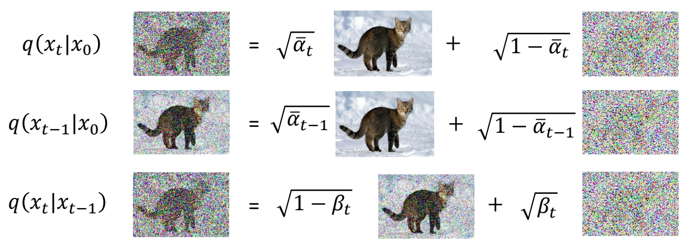</p>
<p>求 \(q (x_{t-1} \mid x_t,x_0)\).</p>
<blockquote>
<p>✅ \((q(x_{t-1}|x_t,x_0)\)的数据含义为：已知\(x_0\) 和 \(x_t\)，求 \(x_{t-1}\) 的分布。</p>
</blockquote>
<p>P24<br />
</p>
<p>P25<br />
</p>
<blockquote>
<p>https://arxiv.org/pdf/2208.11970.pdf</p>
</blockquote>
<p>P26<br />
</p>
<blockquote>
<p>✅ 结论：\(q(x_{t-1}|x_t,x_0)\) 也是高斯分布，且其均值与方差是与\(\theta\)无关的固定的值。</p>
</blockquote>
<h4 id="化简后的目标函数"><a class="header" href="#化简后的目标函数">化简后的目标函数</a></h4>
<p>根据以上推导，目标函数可简化为最小化原目标函数第三项中分布1与分布2的KL Divergence。</p>
<p>\begin{align*} E_{q(x_1|x_0)}[log P(x_0|x_1)]-KL(q(x_T|x_0)||P(x_T))
-\sum_{t=2}^{T}E_{q(x_t|x_0)}[KL(q(x_{t-1}|x_t,x_0)||P(x_{t-1}|x_t))]   \end{align*}</p>
<p>其中分布1为与\(\theta\)无关的固定，分布2为与\(\theta\)有关的待优化分布。</p>
<h4 id="how-to-minimize-kl-divergence"><a class="header" href="#how-to-minimize-kl-divergence">How to minimize KL divergence?</a></h4>
<h5 id="方式一直接套公式"><a class="header" href="#方式一直接套公式">方式一：直接套公式</a></h5>
<p></p>
<blockquote>
<p>✅ 两个高斯分布的 KLD 有公式解，但此处不用公式解，因为  \( \theta\) 只能影响分布2的均值。</p>
</blockquote>
<h5 id="方式二"><a class="header" href="#方式二">方式二</a></h5>
<p>分布1的均值和方差是固定的。分布2的均值是待优化的，方差是固定的。</p>
<p></p>
<blockquote>
<p>✅ 因此减小 KLD 的方法是让分布2的均值接近分布1的均值。</p>
</blockquote>
<h3 id="定义损失函数-1"><a class="header" href="#定义损失函数-1">定义损失函数</a></h3>
<blockquote>
<p>✅ 分布1的均值可以看作是 \(x_{t-1}\) 的 GT 了。其计算公式为：</p>
</blockquote>
<p></p>
<p>\(x_{t-1}\)的GT的计算公式中包含了x0和xt，把x0和xt都转化为xt的表示，得：</p>
<p></p>
<blockquote>
<p>✅ 可以发现 \(x_t\) 与 \(x_{t-1}\)和GT 之间，唯一未知的部分就是 noise \(\varepsilon \). 因此用网络学习这个noise。</p>
</blockquote>
<p>最终定义损失函数为网络输出(预测的noise)与GT（构造训练数据时所生成的noise）之间的L2距离。</p>
<h2 id="其它问题"><a class="header" href="#其它问题">其它问题</a></h2>
<h3 id="关于alpha-"><a class="header" href="#关于alpha-">关于\(\alpha \)</a></h3>
<blockquote>
<p>✅ \(\alpha \) 是预定义的超参，DDPM 试图学习 \(\alpha \)，发现没有提升。</p>
</blockquote>
<h1 id="相关论文"><a class="header" href="#相关论文">相关论文</a></h1>
<table><thead><tr><th>ID</th><th>Year</th><th>Name</th><th>Note</th><th>Tags</th><th>Link</th></tr></thead><tbody>
<tr><td></td><td>2015</td><td>Deep Unsupervised Learning using Nonequilibrium Thermodynamics</td><td></td><td></td><td></td></tr>
<tr><td></td><td>2020</td><td>Denoising Diffusion Probabilistic Models</td><td></td><td></td><td></td></tr>
</tbody></table>
<hr />
<blockquote>
<p>本文出自CaterpillarStudyGroup，转载请注明出处。</p>
<p>https://caterpillarstudygroup.github.io/ImportantArticles/</p>
</blockquote>
<div style="break-before: page; page-break-before: always;"></div><p>P22</p>
<h1 id="score-based-generative-modeling-with-differential-equations"><a class="header" href="#score-based-generative-modeling-with-differential-equations">Score-based Generative Modeling with Differential Equations</a></h1>
<table><thead><tr><th>ID</th><th>Year</th><th>Name</th><th>Note</th><th>Tags</th><th>Link</th></tr></thead><tbody>
<tr><td></td><td>2021</td><td>Score-Based Generative Modeling through Stochastic Differential Equations</td><td></td><td></td><td><a href="https://caterpillarstudygroup.github.io/ReadPapers/8.html">link</a></td></tr>
</tbody></table>
<p>P26</p>
<h2 id="ddpm-vs-stochastic-differential-equation"><a class="header" href="#ddpm-vs-stochastic-differential-equation">DDPM VS Stochastic Differential Equation</a></h2>
<blockquote>
<p>🔎 <a href="https://caterpillarstudygroup.github.io/mathematics_basic_for_ML/NumericalComputation/ODE_SDE.html">SDE</a>
 </p>
</blockquote>
<blockquote>
<p>✅ DDPM 是在时间上做了离散化的 SDE．</p>
</blockquote>
<p>P27</p>
<h3 id="forward-diffusion-process-as-stochastic-differential-equation"><a class="header" href="#forward-diffusion-process-as-stochastic-differential-equation">Forward Diffusion Process as Stochastic Differential Equation</a></h3>
<p> </p>
<blockquote>
<p>✅ drift term 使 \( \mathbf{x} _ t\) 趋向于 Origin.<br />
✅ Origin 我理解为 \( \vec{0} \) 向量的意思。<br />
✅ \( \mathbf{x} _ t\) 最终趋向于 std normal.</p>
</blockquote>
<p>P29</p>
<h3 id="the-generative-reverse-stochastic-differential-equation"><a class="header" href="#the-generative-reverse-stochastic-differential-equation">The Generative Reverse Stochastic Differential Equation</a></h3>
<p> </p>
<blockquote>
<p>🔎 <u>Anderson, in Stochastic Processes and their Applications, 1982</u></p>
</blockquote>
<blockquote>
<p>✅ \(q _ t(\cdot )\) 描述 \(t\) 时刻的分布。<br />
✅ \(q _ t(\mathbf{x} _ t)\) 为 \(\mathbf{x} _ t\) 在 \(q _ t\) 分布中的概率。<br />
✅ Generative 的关键是拟合 score funchon．</p>
</blockquote>
<p><strong>But how to get the score function</strong> \(\nabla \mathbf{x} _t \log q_t(\mathbf{x} _t)\)?</p>
<p>P32</p>
<h2 id="score-matching-1"><a class="header" href="#score-matching-1">Score Matching</a></h2>
<p>Naïve idea, learn model for the score function by direct regression?</p>
<p> </p>
<blockquote>
<p>✅ 直接用一个网络拟合 score function．</p>
</blockquote>
<p><strong>But</strong> \(\nabla \mathbf{x} _t \log q_t(\mathbf{x} _t)\) <strong>(score of the</strong> <em><strong>marginal diffused density</strong></em> \(q_t(\mathbf{x} _t)\)<strong>) is not tractable!</strong></p>
<blockquote>
<p>✅ 存在的问题：只能 sample from \(q_t\)，但没有 \(q_t\) 的 close form.</p>
</blockquote>
<p><u>Vincent, “A Connection Between Score Matching and Denoising Autoencoders”, Neural Computation, 2011</u></p>
<p><u>Song and Ermon, “Generative Modeling by Estimating Gradients of the Data Distribution”, NeurIPS, 2019</u></p>
<p>P33</p>
<h3 id="denoising-score-matching"><a class="header" href="#denoising-score-matching">Denoising Score Matching</a></h3>
<p>Instead, diffuse individual data points \(\mathbf{x}_0\). Diffused \(q_t(\mathbf{x}_t|\mathbf{x}_0)\) <em><strong>is</strong></em> tractable!</p>
<blockquote>
<p>🔎 <u>Vincent, in Neural Computation, 2011</u></p>
</blockquote>
<p> </p>
<blockquote>
<p>❓ \(\gamma _ t\) 和 \(\sigma\) 怎么定义？ 答：见上一页DDPM的推导。</p>
</blockquote>
<p>因此<strong>Denoising Score Matching</strong>的目标函数变为:</p>
<p> </p>
<p><strong>After expectations</strong>, \(\mathbf{s} _ \theta (\mathbf{x} _ t,t)\approx \nabla _ {\mathbf{x} _ t}\log q _ t(\mathbf{x} _ t)\)<strong>!</strong></p>
<blockquote>
<p>🔎 <u>Song and Ermon, NeurIPS, 2019</u></p>
</blockquote>
<blockquote>
<p>✅ 最后 \(\mathbf{s} _ \theta (\mathbf{x} _ t,t)\) 学到的是所有 \(\mathbf{x} _ 0\) 对应的 score 的均值。</p>
</blockquote>
<blockquote>
<p>✅ 结果发现时间离散的 diffusion model(DDPM) 和时间连续的 diffusion model(SDE),其目标函数是一致的，且两个版本可以互相转化。</p>
</blockquote>
<p>$$
\min_ {\mathbf{\theta}  } \mathbb{E} _ {t\sim u(0,T)}\mathbb{E} _ {\mathbf{x} _ 0\sim q_ 0(\mathbf{x} _ 0)}\mathbb{E} _{\epsilon \sim \mathcal{N}(\mathbf{0,I} ) }\frac{1}{\sigma ^2_t} ||\epsilon -\epsilon _ \theta (\mathbf{x} _ t,t)||^2_2 
$$</p>
<p>P35</p>
<h2 id="different-parameterizations"><a class="header" href="#different-parameterizations">Different Parameterizations</a></h2>
<blockquote>
<p>🔎 Karras et al., <u>&quot;Elucidating the Design Space of Diffusion-Based Generative Models&quot;,</u> NeurIPS 2022 <a href="https://caterpillarstudygroup.github.io/ReadPapers/9.html">link</a></p>
</blockquote>
<blockquote>
<p>✅ 调参对生成质量影响很大。</p>
</blockquote>
<p>P36</p>
<h2 id="synthesis-with-sde-vs-ode"><a class="header" href="#synthesis-with-sde-vs-ode">Synthesis with SDE vs. ODE</a></h2>
<p><strong>Generative Reverse Diffusion SDE (stochastic):</strong></p>
<p>$$
d\mathbf{x} _ t=-\frac{1}{2} \beta (t)[\mathbf{x} _ t+2s_ \theta (\mathbf{x} _ t,t)]dt+\sqrt{\beta (t)} d\varpi _ t
$$</p>
<p><strong>Generative Probability Flow ODE (deterministic):</strong></p>
<p>$$
d\mathbf{x} _ t=-\frac{1}{2} \beta (t)[\mathbf{x} _ t+s_ \theta (\mathbf{x} _ t,t)]dt
$$</p>
<blockquote>
<p>✅ <a href="https://caterpillarstudygroup.github.io/ReadPapers/9.html">Song et al., ICLR, 2021</a>表明，可以把 SDE 模型转换为ODE模型。只需要对sample过程进行公式修改即可。每个噪声对应特定的输出。</p>
</blockquote>
<p>P37</p>
<h4 id="diffusion-models-as-neural-odes"><a class="header" href="#diffusion-models-as-neural-odes">Diffusion Models as Neural ODEs</a></h4>
<p>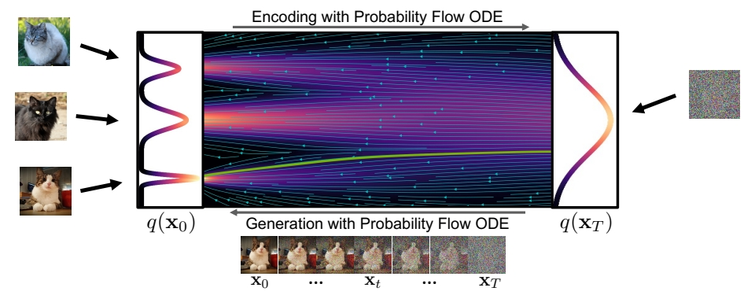</p>
<p>使用ODE的sample公式有以下好处：</p>
<ul>
<li>ODE 推断，可以使用成熟的 ODE solver 进行 sample 加速。</li>
<li><strong>Deterministic encoding and generation</strong> (semantic image interpolation, etc.)</li>
<li><strong>Log-likelihood computation</strong> (instantaneous change of variables):</li>
</ul>
<blockquote>
<p>❓ 第三条没听懂，把 model 当成基于数据的 ODE 来用？</p>
</blockquote>
<h2 id="more"><a class="header" href="#more">More</a></h2>
<ul>
<li><strong>ScoreSDE</strong>: simple linear problems, e.g., inpainting, colorization; later extended to MRI and CT.</li>
<li><strong>ILVR</strong>: more linear problems, e.g., super-resolution.</li>
<li><strong>SNIP</strong>S: slow solution for noisy linear problems.</li>
<li><strong>CCDF</strong>: better initializations.</li>
<li><strong>DDRM</strong>: fast solution for all noisy linear problems, and JPEG.</li>
</ul>
<hr />
<blockquote>
<p>本文出自CaterpillarStudyGroup，转载请注明出处。</p>
<p>https://caterpillarstudygroup.github.io/ImportantArticles/</p>
</blockquote>
<div style="break-before: page; page-break-before: always;"></div><p>P38</p>
<h1 id="accelerated-sampling"><a class="header" href="#accelerated-sampling">Accelerated Sampling</a></h1>
<p>P39</p>
<h2 id="the-generative-learning-trilemma"><a class="header" href="#the-generative-learning-trilemma">The generative learning trilemma</a></h2>
<p>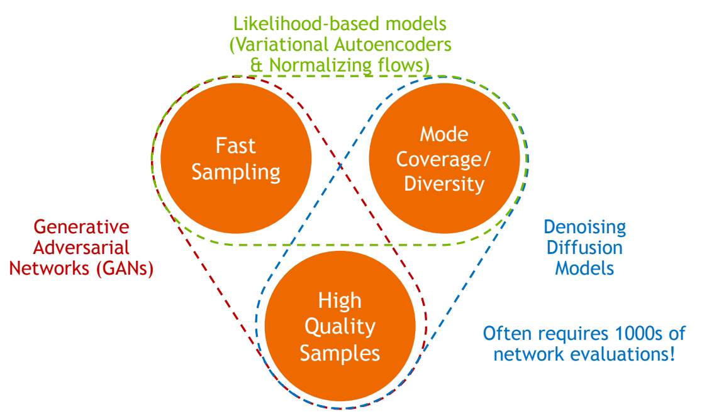 </p>
<blockquote>
<p>🔎 <u>Tackling the Generative Learning Trilemma with Denoising Diffusion GANs, ICLR 2022</u> </p>
</blockquote>
<p>其中Diffusion based生成模型的主要问题是生成速度慢，因此需要在保持高采样质量和多样性的前提下，针对采样速度慢的问题进行加速。</p>
<p>P41</p>
<h2 id="acceleration-techniques"><a class="header" href="#acceleration-techniques">Acceleration Techniques</a></h2>
<ul>
<li>Advanced ODE/SDE Solvers</li>
<li>Distillation Techniques</li>
<li>Low-dim. Diffusion Processes</li>
<li>Advanced Diffusion Processes</li>
</ul>
<p>P42</p>
<h1 id="advanced-odesde-solvers"><a class="header" href="#advanced-odesde-solvers">Advanced ODE/SDE Solvers</a></h1>
<blockquote>
<p>✅ ODE 实现 std normal 分布与真实数据分布之间的映射。</p>
</blockquote>
<p>P43</p>
<h2 id="generative-odes"><a class="header" href="#generative-odes">Generative ODEs</a></h2>
<p>Solve ODEs with as little function evaluations as possible</p>
<p>$$
dx=\epsilon _\theta (x,t)dt
$$</p>
<p> </p>
<ul>
<li>一阶方法（Euler 方法）：每个时间步简化为线性过程。当 step 较大时，会与 GT 有较大的偏离。</li>
</ul>
<p>P44</p>
<p> </p>
<ul>
<li>高阶方法
P45<br />
 </li>
</ul>
<p>P46</p>
<h2 id="扩散模型-odesde-求解器的相关工作"><a class="header" href="#扩散模型-odesde-求解器的相关工作">扩散模型 ODE/SDE 求解器的相关工作</a></h2>
<p>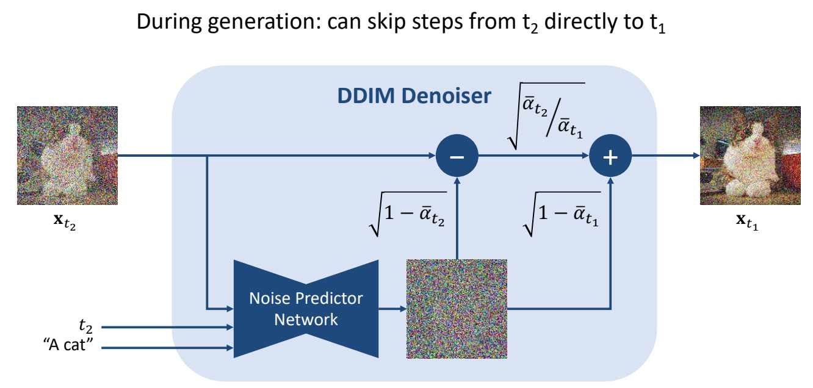</p>
<table><thead><tr><th>ID</th><th>Year</th><th>Name</th><th>Note</th><th>Tags</th><th>Link</th></tr></thead><tbody>
<tr><td><strong>2</strong></td><td>2021</td><td>Denoising Diffusion Implicit Models (DDIM)</td><td>✅ DDIM：可以直接从 \(t_2\) 去噪到 \(t_1\). <br> ✅ 把 \(x_t\) 去掉一个 nolse 之后，不是 sample 另一个noise，而是把原来的 noise 乘以一个系数再加回去。</td><td></td><td><a href="https://caterpillarstudygroup.github.io/ReadPapers/2.html">link</a></td></tr>
<tr><td></td><td>2021</td><td>Score-Based Generative Modeling through Stochastic Differential Equations</td><td>Runge-Kutta adaptive step-size ODE solver</td><td></td><td></td></tr>
<tr><td></td><td>2021</td><td>Gotta Go Fast When Generating Data with Score-Based Models</td><td>Higher-Order adaptive step-size SDE solver</td><td></td><td></td></tr>
<tr><td></td><td>2021</td><td>Denoising Diffusion Implicit Models</td><td>Reparametrized, smoother ODE</td><td></td><td></td></tr>
<tr><td></td><td>2022</td><td>gDDIM: Generalized denoising diffusion implicit models</td><td>Reparametrized, smoother ODE</td><td></td><td></td></tr>
<tr><td></td><td>2022</td><td>Pseudo Numerical Methods for Diffusion Models on Manifolds</td><td>Higher-Order ODE solver with linear multistepping</td><td></td><td></td></tr>
<tr><td></td><td>2022</td><td>Fast Sampling of Diffusion Models with Exponential Integrator</td><td>Exponential ODE Integrators</td><td></td><td></td></tr>
<tr><td></td><td>2022</td><td>DPM-Solver: A Fast ODE Solver for Diffusion Probabilistic Model Sampling in Around 10 Steps</td><td>Exponential ODE Integrators</td><td></td><td></td></tr>
<tr><td></td><td>2022</td><td>DPM-Solver++: Fast Solver for Guided Sampling of Diffusion Probabilistic Models</td><td>Exponential ODE Integrators</td><td></td><td></td></tr>
<tr><td></td><td>2022</td><td>Elucidating the Design Space of Diffusion-Based Generative Models</td><td>Higher-Order ODE solver with Heun’s Method</td><td></td><td></td></tr>
<tr><td></td><td>2023</td><td>UniPC: A Unified Predictor-Corrector Framework for Fast Sampling of Diffusion Models</td><td></td><td></td><td></td></tr>
<tr><td></td><td>2023</td><td>Parallel Sampling of Diffusion Model</td><td></td><td></td><td></td></tr>
<tr><td></td><td>2023</td><td>A Geometric Perspective on Diffusion Models</td><td></td><td></td><td></td></tr>
</tbody></table>
<blockquote>
<p>✅ 这些solvers可以以plug-in的方式使用，且通常能比DDPM更快收敛。</p>
</blockquote>
<h1 id="distillation-techniques"><a class="header" href="#distillation-techniques">Distillation Techniques</a></h1>
<p>P48</p>
<h2 id="ode-distillation"><a class="header" href="#ode-distillation">ODE Distillation</a></h2>
<p>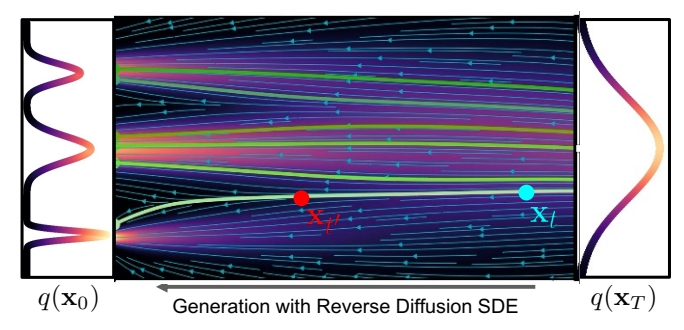 </p>
<p>Can we train a neural network to directly predict \(\mathbf{x} _{{t}'} \) given \(\mathbf{x} _t\)?</p>
<blockquote>
<p>✅ \(\mathbf{x} _{{t}'} \)与\(\mathbf{x} _t\)的关系是确定的。</p>
</blockquote>
<p>P49</p>
<table><thead><tr><th>ID</th><th>Year</th><th>Name</th><th>Note</th><th>Tags</th><th>Link</th></tr></thead><tbody>
<tr><td></td><td>2022</td><td><strong>Progressive distillation</strong> for fast sampling of diffusion models</td><td>蒸馏</td><td></td><td><a href="https://caterpillarstudygroup.github.io/ReadPapers/1.html">link</a></td></tr>
<tr><td></td><td>2023</td><td>On Distillation of Guided Diffusion Models</td><td><strong>Award Candidate</strong></td><td></td><td><a href="https://caterpillarstudygroup.github.io/ReadPapers/3.html">link</a></td></tr>
<tr><td></td><td>2023</td><td><strong>Consistency Models</strong></td><td></td><td></td><td><a href="https://caterpillarstudygroup.github.io/ReadPapers/7.html">link</a></td></tr>
</tbody></table>
<p>P52</p>
<h2 id="sde-distillation"><a class="header" href="#sde-distillation">SDE Distillation</a></h2>
<p> </p>
<p>Can we train a neural network to directly predict <strong>distribution of</strong> \(\mathbf{x} _ {{t}'} \) given \(\mathbf{x} _ t \) ?</p>
<blockquote>
<p>✅ \(\mathbf{x} _ t\) 与 \( \mathbf{x} _ {{t}' }\) 没有必然的联系，得到的是 \( \mathbf{x} _ {{t}' }\) 的分布。</p>
</blockquote>
<p>但Normal assumption in denoising distribution holds only for small step</p>
<blockquote>
<p>✅ 从 \(t\) 与 \({t}'\) 的差距过大时，normal 分布不足以表达 \(q(\mathbf{x} _ {{t}'}｜\mathbf{x} _ t)\).</p>
</blockquote>
<p> </p>
<p>因此<strong>Requires more complicated functional approximators!</strong>，例如GAN或energy-based。</p>
<table><thead><tr><th>ID</th><th>Year</th><th>Name</th><th>Note</th><th>Tags</th><th>Link</th></tr></thead><tbody>
<tr><td></td><td>2022</td><td>Tackling the Generative Learning Trilemma with Denoising Diffusion GANs</td><td>GAN</td><td></td><td><a href="https://caterpillarstudygroup.github.io/ReadPapers/10.html">link</a></td></tr>
<tr><td></td><td>2021</td><td>Learning energy-based models by diffusion recovery likelihood</td><td>Energy-based models</td><td></td><td></td></tr>
</tbody></table>
<p>P54</p>
<h2 id="training-based-sampling-techniques"><a class="header" href="#training-based-sampling-techniques">Training-based Sampling Techniques</a></h2>
<table><thead><tr><th>ID</th><th>Year</th><th>Name</th><th>Note</th><th>Tags</th><th>Link</th></tr></thead><tbody>
<tr><td></td><td>2021</td><td>Knowledge Distillation in Iterative Generative Models for Improved Sampling Speed</td><td>Knowledge distillation</td><td></td><td></td></tr>
<tr><td></td><td>2022</td><td>Learning Fast Samplers for Diffusion Models by Differentiating Through Sample Quality</td><td>Learned Samplers</td><td></td><td></td></tr>
<tr><td></td><td>2023</td><td>Fast Sampling of Diffusion Models via Operator Learning</td><td>Neural Operators</td><td></td><td></td></tr>
<tr><td></td><td>2023</td><td>Wavelet Diffusion Models Are Fast and Scalable Image Generators</td><td>Wavelet Diffusion Models</td><td></td><td></td></tr>
<tr><td></td><td>2022</td><td>GENIE: Higher-Order Denoising Diffusion Solvers</td><td>Distilled ODE Solvers</td><td></td><td></td></tr>
</tbody></table>
<p>P56</p>
<h1 id="low-dim-diffusion-process"><a class="header" href="#low-dim-diffusion-process">Low-dim Diffusion Process</a></h1>
<h2 id="cascaded-generation"><a class="header" href="#cascaded-generation">Cascaded Generation</a></h2>
<p> </p>
<p>Cascaded Diffusion Models outperform Big-GAN in FID and IS and VQ-VAE2 in Classification Accuracy Score.</p>
<table><thead><tr><th>ID</th><th>Year</th><th>Name</th><th>Note</th><th>Tags</th><th>Link</th></tr></thead><tbody>
<tr><td></td><td>2021</td><td>Cascaded Diffusion Models for High Fidelity Image Generation</td><td></td><td></td><td><a href="https://caterpillarstudygroup.github.io/ReadPapers/3.html">link</a></td></tr>
<tr><td></td><td>2022</td><td>Hierarchical Text-Conditional Image Generation with CLIP Latents</td><td></td><td></td><td></td></tr>
<tr><td></td><td>2022</td><td>Photorealistic Text-to-Image Diffusion Models with Deep Language Understanding</td><td></td><td></td><td></td></tr>
</tbody></table>
<p>P57</p>
<h2 id="latent-diffusion-models"><a class="header" href="#latent-diffusion-models">Latent Diffusion Models</a></h2>
<p> </p>
<h3 id="main-idea"><a class="header" href="#main-idea">Main Idea：</a></h3>
<p><strong>Variational autoencoder + score-based prior</strong></p>
<p>Encoder maps the input data to an embedding space<br />
Denoising diffusion models are applied in the latent space</p>
<p>P58</p>
<h3 id="advantages"><a class="header" href="#advantages">Advantages:</a></h3>
<p>(1) The distribution of latent embeddings close to Normal distribution \(\to \) <em><strong>Simpler denoising, Faster synthesis</strong></em>!<br />
(2) Latent space \(\to \) <em><strong>More expressivity and flexibility in design!</strong></em><br />
(3) Tailored Autoencoders \(\to \) <em><strong>More expressivity, Application to any data type (graphs, text, 3D data, etc.)!</strong></em></p>
<table><thead><tr><th>ID</th><th>Year</th><th>Name</th><th>Note</th><th>Tags</th><th>Link</th></tr></thead><tbody>
<tr><td></td><td>2021</td><td>Score-based generative modeling in latent space</td><td><strong>End-to-End</strong> Training objective<br>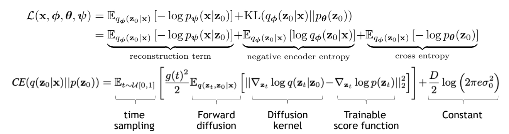 <br> ✅ 这篇文章对 VAE 和 diffusion 一起进行训练，文章的创新点是，利用 score matching 中的信息来计算 cross entropy.</td><td></td><td></td></tr>
<tr><td>45</td><td>2022</td><td>High-Resolution Image Synthesis with Latent Diffusion Models</td><td><strong>Two-stage</strong> Training，先训E&amp;D，再训diffusion。每次需要训练的网络都不大。</td><td></td><td><a href="https://caterpillarstudygroup.github.io/ReadPapers/45.html">link</a></td></tr>
<tr><td></td><td>2021</td><td>D2C: Diffusion-Denoising Models for Few-shot Conditional Generation</td><td></td><td></td><td></td></tr>
<tr><td></td><td>2022</td><td>Score-Guided Intermediate Layer Optimization: Fast Langevin Mixing for Inverse Problems</td><td></td><td></td><td></td></tr>
<tr><td></td><td>2022</td><td>Dimensionality-Varying Diffusion Process</td><td></td><td></td><td></td></tr>
</tbody></table>
<p>The efficiency and expressivity of latent diffusion models + open-source access fueled a large body of work in the community</p>
<h1 id="advanced-diffusion-models"><a class="header" href="#advanced-diffusion-models">Advanced Diffusion Models</a></h1>
<blockquote>
<p>✅ 这一部分没有讲</p>
</blockquote>
<p>P63</p>
<h2 id="ode-interpretation"><a class="header" href="#ode-interpretation">ODE interpretation</a></h2>
<p>把ODE看作是Deterministic generative process</p>
<p>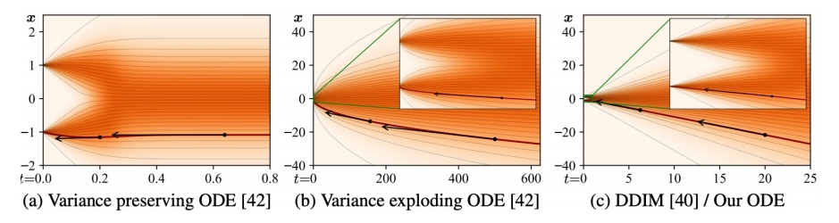 </p>
<ul>
<li>DDIM sampler can be considered as an integration rule of the following ODE:</li>
</ul>
<p>$$
d\mathbf{\bar{x} } (t)=\epsilon ^{(t)} _ \theta(\frac{\mathbf{\bar{x} } (t)}{\sqrt{\eta ^2+1}} )d\eta (t); \mathbf{\bar{x} } =\mathbf{x} / \sqrt{\bar{a} },\eta = \sqrt{1-\bar{a}} / \sqrt{\bar{a } }
$$</p>
<ul>
<li>
<p>Karras et al. argue that the ODE of DDIM is favored, as the tangent of the solution trajectory always points 
towards the denoiser output.</p>
</li>
<li>
<p>This leads to largely linear solution trajectories with low curvature à Low curvature means less truncation 
errors accumulated over the trajectories. </p>
</li>
</ul>
<blockquote>
<p>🔎 <u>Song et al., “Denoising Diffusion Implicit Models”, ICLR 2021.</u><br />
🔎 <u>Karras et al., “Elucidating the Design Space of Diffusion-Based Generative Models”, arXiv 2022.</u></p>
</blockquote>
<table><thead><tr><th>ID</th><th>Year</th><th>Name</th><th>Note</th><th>Tags</th><th>Link</th></tr></thead><tbody>
<tr><td></td><td>2022</td><td><strong>Progressive distillation</strong> for fast sampling of diffusion models</td><td>通过修改参数化方式来提升“减少sampling steps”的稳定性。</td><td></td><td><a href="https://caterpillarstudygroup.github.io/ReadPapers/1.html">link</a></td></tr>
</tbody></table>
<p>P64</p>
<h2 id="momentum-based-diffusion"><a class="header" href="#momentum-based-diffusion">“Momentum-based” diffusion</a></h2>
<h5 id="introduce-a-velocity-variable-and-run-diffusion-in-extended-space"><a class="header" href="#introduce-a-velocity-variable-and-run-diffusion-in-extended-space">Introduce a velocity variable and run diffusion in extended space</a></h5>
<p>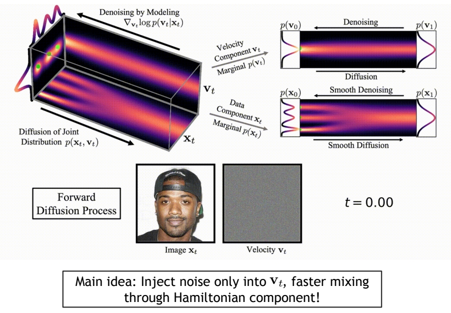 </p>
<p><u>Dockhorn et al., “Score-Based Generative Modeling with Critically-Damped Langevin Diffusion”, ICLR 2022.</u></p>
<p>P65</p>
<h2 id="additional-reading"><a class="header" href="#additional-reading">Additional Reading</a></h2>
<ul>
<li>Schrödinger Bridge:</li>
</ul>
<blockquote>
<p>🔎 Bortoli et al., <u>&quot;Diffusion Schrödinger Bridge&quot;,</u> NeurIPS 2021<br />
🔎 Chen et al., <u>“Likelihood Training of Schrödinger Bridge using Forward-Backward SDEs Theory”, </u>ICLR 2022</p>
</blockquote>
<ul>
<li>Diffusion Processes on Manifolds:</li>
</ul>
<blockquote>
<p>🔎 Bortoli et al., <u>&quot;Riemannian Score-Based Generative Modelling&quot;, </u>NeurIPS 2022</p>
</blockquote>
<ul>
<li>Cold Diffusion:</li>
</ul>
<blockquote>
<p>🔎 Bansal et al., <u>&quot;Cold Diffusion: Inverting Arbitrary Image Transforms Without Noise&quot;, </u>arXiv 2022</p>
</blockquote>
<ul>
<li>Diffusion for Corrupted Data:</li>
</ul>
<blockquote>
<p>🔎 Daras et al., <u>&quot;Soft Diffusion: Score Matching for General Corruptions&quot;, </u>TMLR 2023<br />
🔎 Delbracio and Milanfar, <u>&quot;Inversion by Direct Iteration: An Alternative to Denoising Diffusion for Image Restoration&quot;, </u>arXiv 2023<br />
🔎 Luo et al., <u>&quot;Image Restoration with Mean-Reverting Stochastic Differential Equations&quot;, </u>ICML 2023<br />
🔎 Liu et al., <u>“I2SB: Image-to-Image Schrödinger Bridge”, </u>ICML 2023</p>
</blockquote>
<ul>
<li>Blurring Diffusion Process:</li>
</ul>
<blockquote>
<p>🔎 Hoogeboom and Salimans, <u>&quot;Blurring Diffusion Models&quot;, </u>ICLR 2023<br />
🔎 Rissanen et al, <u>“Generative Modelling With Inverse Heat Dissipation”, </u>ICLR 2023</p>
</blockquote>
<hr />
<blockquote>
<p>本文出自CaterpillarStudyGroup，转载请注明出处。</p>
<p>https://caterpillarstudygroup.github.io/ImportantArticles/</p>
</blockquote>
<div style="break-before: page; page-break-before: always;"></div><p>P66</p>
<h1 id="conditional-generation-and-guidance"><a class="header" href="#conditional-generation-and-guidance">Conditional Generation and Guidance</a></h1>
<p>P67</p>
<blockquote>
<p>✅ 通常需要的是特定的生成，而不是随意的生成。因此需要通过control引入特定的需求。</p>
</blockquote>
<p>以下是文生图的例子：</p>
<p> </p>
<p><u>Ramesh et al., “Hierarchical Text-Conditional Image Generation with CLIP Latents”, arXiv 2022.</u><br />
<u>Saharia et al., “Photorealistic Text-to-Image Diffusion Models with Deep Language Understanding”, arXiv 2022.</u></p>
<p>P68</p>
<h2 id="conditioning-and-guidance-techniques"><a class="header" href="#conditioning-and-guidance-techniques">Conditioning and Guidance Techniques</a></h2>
<p>Explicit Conditions<br />
Classifier Guidance<br />
Classifier-free Guidance</p>
<p>P69</p>
<h1 id="explicit-conditions"><a class="header" href="#explicit-conditions">Explicit Conditions</a></h1>
<p>P70<br />
Conditional sampling can be considered as training \(p(\mathbf{x} |\mathbf{y} )\) where \(\mathbf{y}\) is the input conditioning (e.g., text) and \(\mathbf{x}\) is generated output (e.g., image)</p>
<p>Train the score model for \(\mathbf{x}\) conditioned on \(\mathbf{y}\) using:</p>
<p>$$
\mathbb{E} _ {(\mathbf{x,y} )\sim P\mathrm{data} (\mathbf{x,y} )}\mathbb{E} _ {\epsilon \sim \mathcal{N}(\mathbf{0,I} ) }\mathbb{E} _{t\sim u[0,T]}||\epsilon _ \theta (\mathbf{x} _ t,t;\mathbf{y} )- \epsilon ||^2_2 
$$</p>
<p>The conditional score is simply a U-Net with \(\mathbf{x}_t\) and \(\mathbf{y}\) together in the input.</p>
<p> </p>
<blockquote>
<p>✅ 需要 \((x，y)\) 的 pair data.</p>
</blockquote>
<p>P71</p>
<h1 id="classifier-guidance"><a class="header" href="#classifier-guidance">Classifier Guidance</a></h1>
<p>P72</p>
<h2 id="bayes-rule-in-action"><a class="header" href="#bayes-rule-in-action">Bayes’ Rule in Action</a></h2>
<p> </p>
<blockquote>
<p>✅ \(p(y)\) 与 \(\mathbf{x} _ t\) 无关，因此可以去掉。</p>
</blockquote>
<h2 id="训练方法"><a class="header" href="#训练方法">训练方法</a></h2>
<blockquote>
<p>✅ 第一步：需要一个训好的p(x)的 diffusion model 。<br />
✅ 第二步：训练一个分类网络，输入xt能够正确地预测控制条件（y不一定是离散的类别）。<br />
✅ 第三步：取第二步的梯度，用一定的权重\(w \)结合到第一步的forward过程中。\(w \)决定分类器的影响力。</p>
</blockquote>
<blockquote>
<p>✅ 只需要部分pair data和大量的非pair data。但需要单独训练一个分类器。</p>
</blockquote>
<h2 id="相关论文-1"><a class="header" href="#相关论文-1">相关论文</a></h2>
<table><thead><tr><th>ID</th><th>Year</th><th>Name</th><th>Note</th><th>Tags</th><th>Link</th></tr></thead><tbody>
<tr><td></td><td>2021</td><td>Controllable and Compositional Generation with Latent-Space Energy-Based Models</td><td></td><td></td><td></td></tr>
<tr><td></td><td>2021</td><td>Diffusion models beat GANs on image synthesis</td><td></td><td></td><td></td></tr>
</tbody></table>
<h1 id="classifier-free-guidance"><a class="header" href="#classifier-free-guidance">Classifier-free Guidance</a></h1>
<table><thead><tr><th>ID</th><th>Year</th><th>Name</th><th>Note</th><th>Tags</th><th>Link</th></tr></thead><tbody>
<tr><td></td><td>2021</td><td>Classifier-Free Diffusion Guidance</td><td></td><td></td><td><a href="https://caterpillarstudygroup.github.io/ReadPapers/6.html">link</a></td></tr>
</tbody></table>
<div style="break-before: page; page-break-before: always;"></div><h1 id="参数化方法"><a class="header" href="#参数化方法">参数化方法</a></h1>
<table><thead><tr><th>ID</th><th>Year</th><th>Name</th><th>Note</th><th>Tags</th><th>Link</th></tr></thead><tbody>
<tr><td>75</td><td>2023</td><td>simple diffusion: End-to-end diffusion for high resolution images</td><td></td><td>DiT基模型</td><td><a href="https://caterpillarstudygroup.github.io/ReadPapers/75.html">link</a></td></tr>
</tbody></table>
<p>P76</p>
<h1 id="summary"><a class="header" href="#summary">Summary</a></h1>
<p>We reviewed diffusion fundamentals in 4 parts:</p>
<ul>
<li>Discrete-time diffusion models</li>
<li>Continuous-time diffusion models</li>
<li>Accelerated sampling from diffusion models</li>
<li>Guidance and conditioning.</li>
</ul>
<p>Next, we will review different applications and use cases of diffusion models after a break.</p>
<hr />
<blockquote>
<p>本文出自CaterpillarStudyGroup，转载请注明出处。</p>
<p>https://caterpillarstudygroup.github.io/ImportantArticles/</p>
</blockquote>
<div style="break-before: page; page-break-before: always;"></div><h1 id="architecture"><a class="header" href="#architecture">Architecture</a></h1>
<p>P5</p>
<h2 id="u-net-based-diffusion-architecture"><a class="header" href="#u-net-based-diffusion-architecture">U-Net Based Diffusion Architecture</a></h2>
<h3 id="u-net-architecture"><a class="header" href="#u-net-architecture">U-Net Architecture</a></h3>
<p> </p>
<blockquote>
<p>✅ U-Net的是Large Scale Image Diffusion Model中最常用的backbone。</p>
</blockquote>
<blockquote>
<p>🔎 Ronneberger et al., <u>“U-Net: Convolutional Networks for Biomedical Image Segmentation”, </u>MICCAI 2015</p>
</blockquote>
<h3 id="pipeline"><a class="header" href="#pipeline">Pipeline</a></h3>
<p> </p>
<blockquote>
<p>✅ 包含Input、U-Net backbone、Condition。<br />
✅ Condition 通常用 Concat 或 Cross attention 的方式与 Content 相结合。</p>
</blockquote>
<table><thead><tr><th>ID</th><th>Year</th><th>Name</th><th>Note</th><th>Tags</th><th>Link</th></tr></thead><tbody>
<tr><td>45</td><td>2022</td><td>High-Resolution Image Synthesis with Latent Diffusion Models</td><td>常被称为<strong>Stable Diffusion</strong> 或 LDM，是diffusion方法做图像生成最经典工作（没有之一）<br>✅ (1)：在 latent space 上工作<br> ✅ (2)：引入多种 condition．</td><td>UNet, latent space</td><td><a href="https://caterpillarstudygroup.github.io/ReadPapers/45.html">link</a></td></tr>
<tr><td>69</td><td>2022</td><td>Photorealistic text-to-image diffusion models with deep language understanding</td><td>1. 用纯文本预训练的大语言模型（如 T5）而不是传统图文对齐模型（CLIP）<br> 2. 用4级超分而不是latent space</td><td>Imagen, UNet, T5, Google, pixel space</td><td><a href="https://caterpillarstudygroup.github.io/ReadPapers/69.html">link</a></td></tr>
<tr><td>70</td><td>2022</td><td>ediffi: Text-to-image diffusion models with an ensemble of expert denoiser</td><td>1. T5, Clip混合引导<br>2. 第二阶段基于第一阶段<strong>对时间步分段微调</strong>，解决传统扩散模型在生成过程中不同阶段对文本依赖的动态变化问题。<br>3. 部分区域关联文本条件</td><td>NVIDIA,  eDiff-I, UNet, pixel space</td><td><a href="https://caterpillarstudygroup.github.io/ReadPapers/70.html">link</a></td></tr>
</tbody></table>
<p>P7</p>
<h2 id="transformer-architecture"><a class="header" href="#transformer-architecture">Transformer Architecture</a></h2>
<h3 id="vision-transformervit"><a class="header" href="#vision-transformervit">Vision Transformer(ViT)</a></h3>
<p> </p>
<table><thead><tr><th>ID</th><th>Year</th><th>Name</th><th>Note</th><th>Tags</th><th>Link</th></tr></thead><tbody>
<tr><td>71</td><td>2021</td><td>Dosovitskiy et al., <u>“An image is worth 16x16 words: Transformers for image recognition at scale”</td><td>分类任务。<br>基核心思想是将图像分割为固定大小的块（如16x16像素），并将每个块视为一个“单词”，通过线性投影转换为嵌入向量序列，直接输入标准Transformer编码器进行处理。<br> 这一方法突破了传统卷积神经网络（CNN）在视觉任务中的主导地位，证明了纯Transformer在图像识别中的有效性。</td><td>ViT</td><td><a href="https://caterpillarstudygroup.github.io/ReadPapers/71.html">link</a></td></tr>
</tbody></table>
<h3 id="pipeline-1"><a class="header" href="#pipeline-1">Pipeline</a></h3>
<p></p>
<table><thead><tr><th>ID</th><th>Year</th><th>Name</th><th>Note</th><th>Tags</th><th>Link</th></tr></thead><tbody>
<tr><td>72</td><td>2022</td><td>All are Worth Words: a ViT Backbone for Score-based Diffusion Models</td><td>1. 基于transformer的diffusion网络 <strong>U-ViT</strong>，替代传统U-Net架构。<br> 2. 将图像生成过程中的所有输入（包括噪声图像块、时间步长、条件信息）统一视为“令牌”（Token），通过ViT的全局自注意力机制进行建模。<br> 3. 突破了diffusion对U-Net的依赖，展示了纯Transformer架构在生成任务中的潜力。</td><td>U-ViT</td><td><a href="https://caterpillarstudygroup.github.io/ReadPapers/72.html">link</a></td></tr>
<tr><td>73</td><td>2022</td><td>Scalable Diffusion Models with Transformers</td><td>1. 以ViT为backbone的扩散模型——<strong>Diffusion Transformer（DiT）</strong>，代表UNet backbone <br>2. 通过Transformer的全局自注意力机制建模图像生成过程，验证了Transformer在扩散模型中的可扩展性与性能优势。</td><td>DiT, ViT</td><td><a href="https://caterpillarstudygroup.github.io/ReadPapers/73.html">link</a></td></tr>
</tbody></table>
<h2 id="其它"><a class="header" href="#其它">其它</a></h2>
<table><thead><tr><th>ID</th><th>Year</th><th>Name</th><th>Note</th><th>Tags</th><th>Link</th></tr></thead><tbody>
<tr><td></td><td>2022</td><td>DALL-E2</td><td>利用CLIP（Radford等，2021）联合特征空间优化文本-图像对齐度，解决&quot;语义漂移&quot;问题</td><td></td><td></td></tr>
<tr><td></td><td>2021</td><td>GLIDE</td><td>首次引入文本条件控制，并通过分类器引导（classifier guidance）机制提升生成效果<br>首次将条件控制（文本）与扩散过程结合，通过梯度调节实现语义精准映射</td><td></td><td></td></tr>
</tbody></table>
<div style="break-before: page; page-break-before: always;"></div><h1 id="可控生成"><a class="header" href="#可控生成">可控生成</a></h1>
<table><thead><tr><th>ID</th><th>Year</th><th>Name</th><th>Note</th><th>Tags</th><th>Link</th></tr></thead><tbody>
<tr><td>65</td><td>2023</td><td>T2I-Adapter: Learning Adapters to Dig out More Controllable Ability for Text-to-Image Diffusion Models</td><td>1. 通过轻量级适配器（Adapter），将外部控制信号（如草图、深度图）与模型内部知识对齐，实现更精准的生成控制<br>2. 仅优化apapter，高效训练<br>3. 非均匀时间步采样，在扩散过程的早期阶段（图像结构形成期）增加采样概率，提升控制信号的有效性。</td><td>优化训练效率</td><td><a href="https://caterpillarstudygroup.github.io/ReadPapers/65.html">link</a></td></tr>
<tr><td>66</td><td>2013</td><td>Adding Conditional Control to Text-to-Image Diffusion Models</td><td>通过克隆预训练模型的网络块，并引入“零卷积”连接，实现在不破坏原模型能力的前提下学习条件控制。</td><td>ControlNet</td><td><a href="https://caterpillarstudygroup.github.io/ReadPapers/66.html">link</a></td></tr>
<tr><td>67</td><td>2023</td><td>GLIGEN: Open-Set Grounded Text-to-Image Generation</td><td></td><td></td><td><a href="https://caterpillarstudygroup.github.io/ReadPapers/67.html">link</a></td></tr>
</tbody></table>
<p>P9</p>
<h1 id="图像编辑"><a class="header" href="#图像编辑">图像编辑</a></h1>
<p>P10</p>
<h2 id="gaussian-noise方法"><a class="header" href="#gaussian-noise方法">Gaussian Noise方法</a></h2>
<table><thead><tr><th>ID</th><th>Year</th><th>Name</th><th>Note</th><th>Tags</th><th>Link</th></tr></thead><tbody>
<tr><td>22</td><td>2022</td><td>SDEdit: Guided Image Synthesis and Editing with Stochastic Differential Equations</td><td>提出了一种无需额外训练的统一框架，通过**加噪和去噪（随机微分方程SDE）**的逆向过程实现图像生成与编辑。</td><td></td><td><a href="https://caterpillarstudygroup.github.io/ReadPapers/22.html">link</a></td></tr>
</tbody></table>
<h2 id="ddim-inversion方法"><a class="header" href="#ddim-inversion方法">DDIM Inversion方法</a></h2>
<table><thead><tr><th>ID</th><th>Year</th><th>Name</th><th>Note</th><th>Tags</th><th>Link</th></tr></thead><tbody>
<tr><td>23</td><td>2023</td><td>Dual diffusion implicit bridges for image-to-image translation</td><td>DDIB利用diffusion隐式空间的对齐性，提出了一种基于DDIM的图像到图像翻译方法，通过隐式桥接（Implicit Bridges）实现跨域转换。</td><td>DDIM</td><td><a href="https://caterpillarstudygroup.github.io/ReadPapers/23.html">link</a></td></tr>
<tr><td>24</td><td>2023</td><td>DiffEdit: Diffusion-based semantic image editing with mask guidance</td><td>利用扩散模型在不同文本条件下的噪声预测差异，生成与编辑语义相关的区域mask，从而实现精准的局部编辑。</td><td>DDIM, auto mask</td><td><a href="https://caterpillarstudygroup.github.io/ReadPapers/24.html">link</a></td></tr>
</tbody></table>
<h2 id="编辑文本embedding"><a class="header" href="#编辑文本embedding">编辑文本embedding</a></h2>
<table><thead><tr><th>ID</th><th>Year</th><th>Name</th><th>Note</th><th>Tags</th><th>Link</th></tr></thead><tbody>
<tr><td>25</td><td>2023</td><td>Imagic: Text-Based Real Image Editing with Diffusion Models</td><td>1. 利用T2I实现图像文本图像编辑<br>2. 需要微调T2I<br> 3. 先求出\(T_{orig}\)，然后在\(T_{orig}\)和\(T_{tgt}\)之间插值</td><td></td><td><a href="https://caterpillarstudygroup.github.io/ReadPapers/25.html">link</a></td></tr>
<tr><td>76</td><td>2022</td><td>NULL-text Inversion for Editing Real Images Using Guided Diffusion Models</td><td>针对真实图像（非生成图像）的编辑，以<a href="https://caterpillarstudygroup.github.io/ReadPapers/6.html">CFG</a>为基础，fix condition分支，优化无condition分支，使其embedding向condition分支的embedding靠近</td><td>DDIM</td><td><a href="https://caterpillarstudygroup.github.io/ReadPapers/76.html">link</a></td></tr>
</tbody></table>
<h2 id="attention-based-方法"><a class="header" href="#attention-based-方法">Attention based 方法</a></h2>
<table><thead><tr><th>ID</th><th>Year</th><th>Name</th><th>Note</th><th>Tags</th><th>Link</th></tr></thead><tbody>
<tr><td>20</td><td>2023</td><td>Prompt-to-Prompt Image Editing with Cross-Attention Control</td><td>交叉注意力层决定了文本提示（prompt）与图像空间布局的关联，通过修改注意力图即可在不破坏原始图像结构的情况下完成编辑。<br> 仅适用于编辑用相同预训模型生成的图像。</td><td>attention控制</td><td><a href="https://caterpillarstudygroup.github.io/ReadPapers/20.html">link</a></td></tr>
<tr><td>77</td><td>2022</td><td>Plug-and-Play Diffusion Features for Text-Driven Image-to-Image Translation</td><td><strong>直接操纵扩散模型内部的空间特征和自注意力机制</strong>，实现生成过程的细粒度控制。<br> 其核心思想是：从源图像中提取中间层的空间特征和自注意力图，注入目标图像的生成过程，从而在保留源图像语义布局的同时，根据文本提示修改外观属性。</td><td>attention控制</td><td><a href="https://caterpillarstudygroup.github.io/ReadPapers/77.html">link</a></td></tr>
<tr><td>21</td><td>2023</td><td>InstructPix2Pix: Learning to Follow Image Editing Instructions</td><td>在已有图片的情况，输入完整的控制文本不符合用户习惯，用户只需要告诉模型要怎么修改图像，通过 Prompt 2 Prompt 转化为完整 prompt.</td><td></td><td><a href="https://caterpillarstudygroup.github.io/ReadPapers/21.html">link</a></td></tr>
</tbody></table>
<p>P32</p>
<h1 id="特定对象定制化的图像生成"><a class="header" href="#特定对象定制化的图像生成">特定对象定制化的图像生成</a></h1>
<table><thead><tr><th>ID</th><th>Year</th><th>Name</th><th>Note</th><th>Tags</th><th>Link</th></tr></thead><tbody>
<tr><td>62</td><td>2023</td><td>DreamBooth: Fine Tuning Text-to-Image Diffusion Models for Subject-Driven Generation</td><td>每个主体分配一个罕见词（如“sks”），作为其文本标签。通用<strong>微调扩散模型</strong>，使其能够精准生成特定主体。</td><td>finetune</td><td><a href="https://caterpillarstudygroup.github.io/ReadPapers/62.html">link</a></td></tr>
<tr><td>63</td><td>2023</td><td>An Image is Worth One Word: Personalizing Text-to-Image Generation using Textual Inversion</td><td>不修改模型权重，而是通过优化文本嵌入空间中的一个<strong>新的嵌入向量</strong>来表示目标概念。该向量可以像普通词汇一样被插入到自然语言描述中，指导模型生成包含该概念的图像。</td><td>Textual Inversion, 优化</td><td><a href="https://caterpillarstudygroup.github.io/ReadPapers/63.html">link</a></td></tr>
<tr><td><strong>38</strong></td><td>2021</td><td>Lora: Low-rank adaptation of large language models</td><td>对已训好的大模型进行微调，生成想要的风格。学习其中的残差。残差通常可以用low rank Matrix来拟合，因此称为low-rank adaptation。low rank的好处是要训练或调整的参数非常少。</td><td>优化训练效率</td><td><a href="https://caterpillarstudygroup.github.io/ReadPapers/38.html">link</a></td></tr>
<tr><td></td><td></td><td>Lora + Dreambooth (by Simo Ryu)</td><td>没有找到论文</td><td></td><td><a href="https://github.com/cloneofsimo/lora">https://github.com/cloneofsimo/lora</a></td></tr>
</tbody></table>
<p>P43</p>
<h1 id="多个特定对象定制化的图像生成"><a class="header" href="#多个特定对象定制化的图像生成">多个特定对象定制化的图像生成</a></h1>
<table><thead><tr><th>ID</th><th>Year</th><th>Name</th><th>Note</th><th>Tags</th><th>Link</th></tr></thead><tbody>
<tr><td>52</td><td>2024</td><td>Mix-of-Show: Decentralized Low-Rank Adaptation for Multi-Concept Customization of Diffusion Models</td><td>多个特定对象的图像生成，让多个特定的对象生成到一张图像中，并用2D pose控制对象的动作</td><td>TI, LoRA</td><td><a href="https://caterpillarstudygroup.github.io/ReadPapers/52.html">link</a></td></tr>
<tr><td>64</td><td>2023</td><td>Multi-Concept Customization of Text-to-Image Diffusion</td><td>1. 用『正则化』的方法防止多concept之间的混淆<br>2. 用&quot;仅finetune KV&quot;的方法提升训练效率<br>3. 用『多概念组合优化』的方法把多个concept融合</td><td>优化训练效率， TI</td><td><a href="https://caterpillarstudygroup.github.io/ReadPapers/64.html">link</a></td></tr>
<tr><td>79</td><td>2023</td><td>Key-Locked Rank One Editing for Text-to-Image Personalization</td><td>✅ 方法：dynamic rank one update. <br> ✅ Perffusion 解决 Image Personalization 的 overfitting 问题的方法：  <br> ✅ (1) 训练时，Introducing new <em>xxxx</em> that locks the new concepts cross-attention keys to their sub-ordinate category.    <br> ✅ (2) 推断时，引入 a gate rank one approach 可用于控制 the learned concept的影响力。    <br> ✅ (3) 允许 medel 把不同的 concept 结合到一起，并学到不同concept 之间的联系。<br>Results: 可以很好地model the interaction of the two conception。</td><td></td><td><a href="https://caterpillarstudygroup.github.io/ReadPapers/79.html">link</a></td></tr>
</tbody></table>
<p>P67</p>
<h1 id="other-applications"><a class="header" href="#other-applications">Other applications</a></h1>
<p>P68</p>
<h2 id="your-diffusion-model-is-secretly-a-zero-shot-classifier"><a class="header" href="#your-diffusion-model-is-secretly-a-zero-shot-classifier">Your Diffusion Model is Secretly a Zero-Shot Classifier</a></h2>
<blockquote>
<p>✅ 一个预训练好的 diffusion model （例如stable diffusion model），无须额外训练可以用作分类器，甚至能完成 Zero-shot 的分类任务。</p>
</blockquote>
<p>Li et al., <u>&quot;Your Diffusion Model is Secretly a Zero-Shot Classifier&quot;,</u> arXiv 2023</p>
<h3 id="pipeline-2"><a class="header" href="#pipeline-2">Pipeline</a></h3>
<p></p>
<blockquote>
<p>✅ 输入图像\(x\)，用随机噪声\(\epsilon  \)加噪；再用 condition c 预测噪声 \(\epsilon  _\theta \)。优化条件 C 使得 \(\epsilon  _\theta \) 最接近 \(\epsilon \). 得到的 C 就是分类。</p>
</blockquote>
<p>P69</p>
<h2 id="improving-robustness-using-generated-data"><a class="header" href="#improving-robustness-using-generated-data">Improving Robustness using Generated Data</a></h2>
<blockquote>
<p>✅ 使用 diffusion Model 做数据增强。</p>
</blockquote>
<p></p>
<p><strong>Overview of the approach:</strong></p>
<ol>
<li>train a generative model and a non￾robust classifier, which are used to provide pseudo-labels to the generated data.</li>
<li>The generated and original training data are combined to train a robust classifier.</li>
</ol>
<p>Gowal et al., <u>&quot;Improving Robustness using Generated Data&quot;,</u> NeurIPS 2021</p>
<p>P70</p>
<h2 id="better-diffusion-models-further-improve-adversarial-training"><a class="header" href="#better-diffusion-models-further-improve-adversarial-training">Better Diffusion Models Further Improve Adversarial Training</a></h2>
<p></p>
<p>Wang et al., <u>&quot;Better Diffusion Models Further Improve Adversarial Training&quot;,</u> ICML 2023</p>
<h1 id="多模态生成"><a class="header" href="#多模态生成">多模态生成</a></h1>
<table><thead><tr><th>ID</th><th>Year</th><th>Name</th><th>Note</th><th>Tags</th><th>Link</th></tr></thead><tbody>
<tr><td>74</td><td>2023</td><td>One Transformer Fits All Distributions in Multi-Modal Diffusion at Scale</td><td></td><td>U-Vit base model</td><td><a href="https://caterpillarstudygroup.github.io/ReadPapers/74.html">link</a></td></tr>
</tbody></table>
<p>P72</p>
<h1 id="reference-6"><a class="header" href="#reference-6">Reference</a></h1>
<ul>
<li>Li et al., <u>&quot;Efficient Spatially Sparse Inference for Conditional GANs and Diffusion Models&quot;,</u> NeurIPS 2022</li>
<li>Avrahami et al., <u>&quot;Blended Diffusion for Text-driven Editing of Natural Images&quot;,</u> CVPR 2022</li>
<li>Sarukkai et al., <u>&quot;Collage Diffusion&quot;,</u>  arXiv 2023</li>
<li>Bar-Tal et al., <u>&quot;MultiDiffusion: Fusing Diffusion Paths for Controlled Image Generation&quot;,</u>  ICML 2023</li>
<li>Kumari et al., <u>&quot;Multi-Concept Customization of Text-to-Image Diffusion&quot;,</u>  CVPR 2023</li>
<li>Tewel et al., <u>&quot;Key-Locked Rank One Editing for Text-to-Image Personalization&quot;,</u>  SIGGRAPH 2023</li>
<li>Zhao et al., <u>&quot;A Recipe for Watermarking Diffusion Models&quot;,</u>  arXiv 2023</li>
<li>Hu et al., <u>&quot;LoRA: Low-Rank Adaptation of Large Language Models&quot;,</u> ICLR 2022</li>
<li>Avrahami et al., <u>&quot;SpaText: Spatio-Textual Representation for Controllable Image Generation&quot;,</u> CVPR 2023</li>
<li>Orgad et al., <u>&quot;Editing Implicit Assumptions in Text-to-Image Diffusion Models&quot;,</u> arXiv 2023</li>
<li>Han et al., <u>&quot;SVDiff: Compact Parameter Space for Diffusion Fine-Tuning&quot;,</u> arXiv 2023</li>
<li>Xie et al., <u>&quot;DiffFit: Unlocking Transferability of Large Diffusion Models via Simple Parameter￾Efficient Fine-Tuning&quot;,</u> rXiv 2023</li>
<li>Saharia et al., <u>&quot;Palette: Image-to-Image Diffusion Models&quot;,</u> SIGGRAPH 2022</li>
<li>Whang et al., <u>&quot;Deblurring via Stochastic Refinement&quot;,</u> CVPR 2022</li>
<li>Xu et al., <u>&quot;Open-Vocabulary Panoptic Segmentation with Text-to-Image Diffusion Models&quot;,</u> arXiv 2023</li>
<li>Saxena et al., <u>&quot;Monocular Depth Estimation using Diffusion Models&quot;,</u> arXiv 2023</li>
<li>Li et al., <u>&quot;Your Diffusion Model is Secretly a Zero-Shot Classifier&quot;,</u> arXiv 2023</li>
<li>Gowal et al., <u>&quot;Improving Robustness using Generated Data&quot;,</u> NeurIPS 2021</li>
<li>Wang et al., <u>&quot;Better Diffusion Models Further Improve Adversarial Training&quot;,</u> ICML 2023</li>
</ul>
<hr />
<blockquote>
<p>本文出自CaterpillarStudyGroup，转载请注明出处。</p>
<p>https://caterpillarstudygroup.github.io/ImportantArticles/</p>
</blockquote>
<div style="break-before: page; page-break-before: always;"></div><p>P3</p>
<h1 id="任务描述"><a class="header" href="#任务描述">任务描述</a></h1>
<ol>
<li>图像去噪</li>
<li>图像超分</li>
<li>图像补全</li>
</ol>
<p>输入：<br />
  <br />
输出：<br />
<br />
 </p>
<p>基于某个预训练的diffusion model，在无condition的情况下，每张图像都符合diffusion生成模型的分布。当以某个特定的图像（模糊图像、低分辨率图像）时，期望能够得到的是对应的清晰、高分辨率的图像的分布。</p>
<p>P6</p>
<h1 id="replacement-based-methods"><a class="header" href="#replacement-based-methods">Replacement-based Methods</a></h1>
<p>(Overwrites model prediction with known information)</p>
<p></p>
<table><thead><tr><th>ID</th><th>Year</th><th>Name</th><th>Note</th><th>Tags</th><th>Link</th></tr></thead><tbody>
<tr><td></td><td>2021</td><td>ILVR: Conditioning Method for Denoising Diffusion Probabilistic Models</td><td></td><td></td><td></td></tr>
<tr><td></td><td></td><td>Kawar et al., <u>&quot;SNIPS: Solving Noisy Inverse Problems Stochastically&quot;,</u> NeurIPS 2021</td><td></td><td></td><td></td></tr>
<tr><td></td><td></td><td>Chung et al., <u>&quot;Come-Closer-Diffuse-Faster: Accelerating Conditional Diffusion Models for Inverse Problems through Stochastic Contraction&quot;,</u> CVPR 2022</td><td></td><td></td><td></td></tr>
<tr><td></td><td></td><td>Song et al., <u>&quot;Solving Inverse Problems in Medical Imaging with Score-Based Generative Models&quot;,</u> ICLR 2022</td><td></td><td></td><td></td></tr>
<tr><td></td><td></td><td>Kawar et al., <u>&quot;Denoising Diffusion Restoration Models&quot;,</u> NeurIPS 2022</td><td></td><td></td><td></td></tr>
</tbody></table>
<p>P7</p>
<h1 id="reconstruction-based-methods"><a class="header" href="#reconstruction-based-methods">Reconstruction-based Methods</a></h1>
<p>(Approximate classifier-free guidance <strong>without additional training</strong>)<br />
</p>
<p></p>
<blockquote>
<p>Chung et al., <u>&quot;Diffusion Posterior Sampling for General Noisy Inverse Problems&quot;,</u> ICLR 2023</p>
</blockquote>
<blockquote>
<p>✅ cfg 使用\((x,t)\)的 pair data 来近似 \(\nabla _{x_t} \log p_t(\mathbf{y}|\mathbf{x}_t)\)，但此处没有 pair data，希望通过非训练的方法来得出。<br />
✅ 公式基于马尔可夫推导。\(p(\mathbf{y}|\mathbf{x}_t)\) 可描述为 \(p(\mathbf{y}|\mathbf{x}_0)\) 的期望。然后把期望从外面移到里面。</p>
</blockquote>
<p>P8<br />
In the Gaussian case,</p>
<p>$$
p(\mathbf{y} |\mathbb{E} [\mathbf{x} _ 0|\mathbf{x} _ t])=-c||\mathcal{A} \mathbf{(\hat{x}}  _ 0)-\mathbf{y} ||^2_2
$$</p>
<p><strong>Maximizing the likelihood is minimizing the L2 distance between measured and generated!</strong></p>
<p></p>
<p>Chung et al., <u>&quot;Diffusion Posterior Sampling for General Noisy Inverse Problems&quot;,</u> ICLR 2023</p>
<blockquote>
<p>✅ 在 diffusion 的同时做重建。</p>
</blockquote>
<h1 id="more-1"><a class="header" href="#more-1">More</a></h1>
<ul>
<li><strong>Video Diffusion/Pyramid DDPM</strong>: used for uper-resolution.</li>
<li><strong>Pseudoinverse guidance</strong>: linear and some non-differentiable problems, e.g., JPEG</li>
<li><strong>MCG</strong>: combines replacement &amp; reconstruction for linear problems.</li>
</ul>
<p><strong>Others</strong></p>
<ul>
<li><strong>CSGM</strong>: Posterior sampling with Langevin Dynamics based on the diffusion score model.</li>
<li><strong>RED-Diff</strong>: A Regularizing-by-Denoising (RED), variational inference approach.</li>
<li><strong>Posterior sampling</strong>: use RealNVP to approximate posterior samples from diffusion models.</li>
</ul>
<table><thead><tr><th>ID</th><th>Year</th><th>Name</th><th>Note</th><th>Tags</th><th>Link</th></tr></thead><tbody>
<tr><td></td><td></td><td>Chung et al., <u>&quot;Improving Diffusion Models for Inverse Problems using Manifold Constraints&quot;,</u> NeurIPS 2022</td><td></td><td></td><td></td></tr>
<tr><td></td><td></td><td>Ryu and Ye, <u>&quot;Pyramidal Denoising Diffusion Probabilistic Models&quot;,</u> arXiv 2022</td><td></td><td></td><td></td></tr>
<tr><td></td><td></td><td>Chung et al., <u>&quot;Diffusion Posterior Sampling for General Noisy Inverse Problems&quot;,</u> arXiv 2022</td><td></td><td></td><td></td></tr>
<tr><td></td><td></td><td>Song et al., <u>&quot;Pseudoinverse-Guided Diffusion Models for Inverse Problems&quot;,</u> ICLR 2023</td><td></td><td></td><td></td></tr>
<tr><td></td><td></td><td>Jalal et al., <u>&quot;Robust Compressed Sensing MRI with Deep Generative Priors&quot;,</u> NeurIPS 2021</td><td></td><td></td><td></td></tr>
<tr><td></td><td></td><td>Mardani et al., <u>&quot;A Variational Perspective on Solving Inverse Problems with Diffusion Models&quot;,</u> arXiv 2023</td><td></td><td></td><td></td></tr>
<tr><td></td><td></td><td>Feng et al., <u>&quot;Score-Based Diffusion Models as Principled Priors for Inverse Imaging&quot;,</u> arXiv 2023</td><td></td><td></td><td></td></tr>
</tbody></table>
<hr />
<blockquote>
<p>本文出自CaterpillarStudyGroup，转载请注明出处。</p>
<p>https://caterpillarstudygroup.github.io/ImportantArticles/</p>
</blockquote>
<div style="break-before: page; page-break-before: always;"></div><p>P68</p>
<h1 id="diffusion-models-for-large-contents"><a class="header" href="#diffusion-models-for-large-contents">Diffusion Models for Large Contents</a></h1>
<p>同样的方法也可用于Applications such as long images, looped motion, 360 images…</p>
<ul>
<li>Suppose model is trained on small, squared images, how to extend it to larger images?</li>
<li>Outpainting is always a solution, but not a very efficient one!</li>
</ul>
<p>Let us generate this image with a diffusion model only trained on squared regions:</p>
<p></p>
<ol>
<li>Generate the center region \(q(\mathbf{x} _ 1,\mathbf{x} _ 2)\)</li>
<li>Generate the <strong>surrounding region conditioned on parts of the center image</strong> \(q(\mathbf{x} _ 3|\mathbf{x} _ 2)\)</li>
</ol>
<p></p>
<p>Latency scales linearly with the content size!</p>
<blockquote>
<p>✅ 根据左边的图生成右边的图，存在的问题：慢<br />
✅ 直接生成大图没有这样的数据。<br />
✅ 并行化的生成。</p>
</blockquote>
<p>P69</p>
<h2 id="diffcollage"><a class="header" href="#diffcollage">DiffCollage</a></h2>
<ul>
<li>Unlike autoregressive models, diffusion models can generate large contents <strong>in parallel</strong>!</li>
</ul>
<p></p>
<p>P70</p>
<ul>
<li>A “large” diffusion model from “small” diffusion models!</li>
</ul>
<p></p>
<p></p>
<p>P71</p>
<h2 id="more-works-2"><a class="header" href="#more-works-2">More Works</a></h2>
<table><thead><tr><th>ID</th><th>Year</th><th>Name</th><th>Note</th><th>Tags</th><th>Link</th></tr></thead><tbody>
<tr><td></td><td>2023</td><td>Zhang et al., <u>&quot;DiffCollage: Parallel Generation of Large Content with Diffusion Models&quot;</td><td></td><td></td><td></td></tr>
<tr><td></td><td>2023</td><td>Jiménez, <u>&quot;Mixture of Diffusers for scene composition and high resolution image generation&quot;,</u> arXiv 2023</td><td>- Based on similar ideas but differ in how overlapping regions are mixed.<br> ✅ 这种并行化方法可以用于各种 overlapping 的场景。</td><td></td><td></td></tr>
<tr><td></td><td>2023</td><td>Bar-Tal et al., <u>&quot;MultiDiffusion: Fusing Diffusion Paths for Controlled Image Generation&quot;,</u> ICML 2023</td><td></td><td></td><td></td></tr>
</tbody></table>
<hr />
<blockquote>
<p>本文出自CaterpillarStudyGroup，转载请注明出处。</p>
<p>https://caterpillarstudygroup.github.io/ImportantArticles/</p>
</blockquote>
<div style="break-before: page; page-break-before: always;"></div><p>P23</p>
<p>由于缺少3D数据，把2D T2I Base Model作为先验来实现3D生成。</p>
<h1 id="sds"><a class="header" href="#sds">SDS</a></h1>
<table><thead><tr><th>ID</th><th>Year</th><th>Name</th><th>Note</th><th>Tags</th><th>Link</th></tr></thead><tbody>
<tr><td>82</td><td>2023</td><td>Magic3D: High-Resolution Text-to-3D Content Creation</td><td>在68的基础上：<br>1. 采用**“粗到细”（Coarse-to-Fine）的两阶段优化策略，，结合不同分辨率扩散模型与场景表示，coarse阶段速度更快，Fine阶段提升细节 <br>2. Coarse阶段采用<a href="https://caterpillarstudygroup.github.io/ReadPapers/83.md"><strong>Instant-NGP</strong></a> + <a href="https://caterpillarstudygroup.github.io/ReadPapers//70.md">eDiff-I</a>，快速收敛，且适合处理复杂拓扑变化。<br> 3. Fine阶段使用DMTet + <a href="https://caterpillarstudygroup.github.io/ReadPapers/45.html">LDM</a></td><td>SDS, Coarse-to-Fine</td><td><a href="https://caterpillarstudygroup.github.io/ReadPapers/82.html">link</a></td></tr>
<tr><td></td><td>2023</td><td>Wang et al.,&quot;Score Jacobian Chaining: Lifting Pretrained 2D Diffusion Models for 3D Generation&quot;,</td><td></td><td>Alternative to SDS</td><td></td></tr>
<tr><td></td><td>2023</td><td>Wang et al., &quot;ProlificDreamer: High-Fidelity and Diverse Text-to-3D Generation with Variational Score Distillation&quot;,</td><td></td><td>Alternative to SDS</td><td></td></tr>
</tbody></table>
<p>P31</p>
<h1 id="alternative-to-sds-score-jacobian-chaining"><a class="header" href="#alternative-to-sds-score-jacobian-chaining">Alternative to SDS: Score Jacobian Chaining</a></h1>
<p>A different formulation, motivated from approximating 3D score.</p>
<p></p>
<p>In principle, the diffusion model is the noisy 2D score (over clean images),<br />
but in practice, the diffusion model suffers from out-of-distribution (OOD) issues!</p>
<p>For diffusion model on noisy images, <strong>the non-noisy images are OOD</strong>!</p>
<blockquote>
<p>✅ 2D sample, 3D score</p>
</blockquote>
<p>P32</p>
<h2 id="score-jacobian-chaining"><a class="header" href="#score-jacobian-chaining">Score Jacobian Chaining</a></h2>
<p>SJC approximates noisy score with “Perturb-and-Average Scoring”, which is not present in SDS.</p>
<ul>
<li>Use score model on multiple noise-perturbed data, then average it.</li>
</ul>
<p></p>
<blockquote>
<p>✅ 通过这种方法来近似 clean image 的输出，解决 clean image 的 OOD 问题。</p>
</blockquote>
<p>P33</p>
<h2 id="sjc-and-sds"><a class="header" href="#sjc-and-sds">SJC and SDS</a></h2>
<p>SJC is a competitive alternative to SDS.</p>
<p> </p>
<p>P34</p>
<h1 id="alternative-to-sds-prolificdreamer"><a class="header" href="#alternative-to-sds-prolificdreamer">Alternative to SDS: ProlificDreamer</a></h1>
<ul>
<li>SDS-based method often set classifier-guidance weight to 100, which limits the “diversity” of the generated samples.</li>
<li>ProlificDreamer reduces this to 7.5, leading to diverse samples.</li>
</ul>
<p> </p>
<p>P35</p>
<h2 id="prolificdreamer-and-variational-score-distillation"><a class="header" href="#prolificdreamer-and-variational-score-distillation">ProlificDreamer and Variational Score Distillation</a></h2>
<p>Instead of maximizing the likelihood under diffusion model, VSD minimizes the KL divergence via variational inference.</p>
<p>$$
\begin{matrix}
\min_{\mu } D _ {\mathrm{KL} }(q^\mu _ 0(\mathbf{x} _ 0|y)||p _ 0(\mathbf{x} _ 0|y)). \\
\quad \mu \quad \text{is the distribution of NeRFs} .
\end{matrix}
$$</p>
<p>Suppose is a \(\theta _ \tau \sim \mu \) NeRF sample, then VSD simulates this ODE:</p>
<p> </p>
<ul>
<li>Diffusion model can be used to approximate score of noisy real images.</li>
<li>How about noisy rendered images?   sss</li>
</ul>
<blockquote>
<p>✅ 第一项由 diffusion model 得到，在此处当作 GT．</p>
</blockquote>
<p>P36</p>
<ul>
<li>Learn another diffusion model to approximate the score of noisy rendered images!</li>
</ul>
<p></p>
<blockquote>
<p>✅ 使用 LoRA 近第二项。</p>
</blockquote>
<p>P37</p>
<h2 id="why-does-vsd-work-in-practice"><a class="header" href="#why-does-vsd-work-in-practice">Why does VSD work in practice?</a></h2>
<ul>
<li>
<p>The valid text-to-image NeRFs form a distribution with infinite possibilities!</p>
</li>
<li>
<p>In SDS, epsilon is the score of noisy “dirac distribution” over finite renders, which converges to the true score with infinite renders!</p>
</li>
<li>
<p>In VSD, the LoRA model aims to <strong>represent the (true) score of noisy distribution over infinite number of renders!</strong></p>
</li>
<li>
<p>If the generated NeRF distribution is only one point and LoRA overfits perfectly, then VSD = SDS!</p>
</li>
<li>
<p>But LoRA has good generalization (and learns from a trajectory of NeRFs), so closer to the true score!</p>
</li>
<li>
<p>This is analogous to</p>
<ul>
<li>Representing the dataset score via mixture of Gaussians on the dataset (SDS), versus</li>
<li>Representing the dataset score via the LoRA UNet (VSD)</li>
</ul>
</li>
</ul>
<hr />
<blockquote>
<p>本文出自CaterpillarStudyGroup，转载请注明出处。</p>
<p>https://caterpillarstudygroup.github.io/ImportantArticles/</p>
</blockquote>
<div style="break-before: page; page-break-before: always;"></div><h1 id="diffusion-on-various-3d-representations"><a class="header" href="#diffusion-on-various-3d-representations">Diffusion on various 3D representations</a></h1>
<table><thead><tr><th>ID</th><th>Year</th><th>Name</th><th>Note</th><th>Tags</th><th>Link</th></tr></thead><tbody>
<tr><td></td><td>2021</td><td>3D Shape Generation and Completion through Point-Voxel Diffusion</td><td></td><td>Point-Voxel</td><td></td></tr>
<tr><td></td><td>2019</td><td>Point-Voxel CNN for Efficient 3D Deep Learning</td><td></td><td>Point-Voxel</td><td></td></tr>
<tr><td></td><td>2022</td><td>Zeng et al., <u>&quot;LION: Latent Point Diffusion Models for 3D Shape Generation&quot;</td><td></td><td></td><td></td></tr>
<tr><td></td><td>2022</td><td>Nichol et al., <u>&quot;Point-E: A System for Generating 3D Point Clouds from Complex Prompts</td><td></td><td>点云</td><td></td></tr>
<tr><td></td><td>2022</td><td>Hui et al., <u>&quot;Neural Wavelet-domain Diffusion for 3D Shape Generation</td><td></td><td>SDF</td><td></td></tr>
<tr><td></td><td>2022</td><td>Chou et al., <u>&quot;DiffusionSDF: Conditional Generative Modeling of Signed Distance Functions</td><td></td><td>SDF</td><td></td></tr>
<tr><td></td><td>2022</td><td>Shue et al., <u>&quot;3D Neural Field Generation using Triplane Diffusion&quot;,</u> arXiv 2022</td><td></td><td>Nerf</td><td></td></tr>
<tr><td></td><td>2023</td><td>Yang et al., <u>&quot;Learning a Diffusion Prior for NeRFs&quot;,</u> ICLR Workshop 2023</td><td></td><td>Nerf</td><td></td></tr>
<tr><td></td><td>2023</td><td>Jun and Nichol, <u>&quot;Shap-E: Generating Conditional 3D Implicit Functions&quot;,</u> arXiv 2023</td><td></td><td>Nerf</td><td></td></tr>
</tbody></table>
<p>P12</p>
<h1 id="3d-shape-generation-and-completion-through-point-voxel-diffusion"><a class="header" href="#3d-shape-generation-and-completion-through-point-voxel-diffusion">3D Shape Generation and Completion through Point-Voxel Diffusion</a></h1>
<table><thead><tr><th>ID</th><th>Year</th><th>Name</th><th>Note</th><th>Tags</th><th>Link</th></tr></thead><tbody>
<tr><td></td><td>2021</td><td>3D Shape Generation and Completion through Point-Voxel Diffusion</td><td>A set of points with location information. <br> &gt; ✅ 分支1：逐顶点的 MLP (对应图中 b) <br> ✅ 分支2：VOX 可以看作是低分辨率的 points <br> ✅ 优点是结构化，可用于 CNN <br> ❓ VOX → points，低分辨到高分辨率要怎么做？<br> ❓ 怎么把 voxel 内的点转换为 voxel 的特征？</td><td> <br> </td><td></td></tr>
<tr><td></td><td>2019</td><td>Point-Voxel CNN for Efficient 3D Deep Learning</td><td>✅ Completion：深度图 → 完整点 <br> ✅ 方法：(1) 基于深度图生成点云 (2) 用 inpainting 技术补全 <br> ✅ generation 和 completion 是两种不同的 task.</td><td></td><td></td></tr>
<tr><td></td><td>2022</td><td>LION: Latent Point Diffusion Models for 3D Shape Generation</td><td>✅ 1、latent diffusion model for point clouds. <br> ✅ 2、point-voxel CNN 架构，用于把 shape 编码成 latent shape 及 lantent point. <br> ✅ 3、diffusion model 把 latent point 重建出原始点。</td><td></td><td></td></tr>
<tr><td></td><td>2022</td><td>Point-E: A System for Generating 3D Point Clouds from Complex Prompts</td><td>Point-E uses a synthetic view from fine-tuned GLIDE, and then ”lifts” the image to a 3d point cloud. <br> ✅ point E task：文生成点云。 <br> ✅ 第1步：文生图，用 fine-tuned GLIDE <br> ✅ 第2步：图生点，用 transformer-based diffusion model.</td><td>  <br> </td><td></td></tr>
</tbody></table>
<p>P16</p>
<h1 id="diffusion-models-for-signed-distance-functions"><a class="header" href="#diffusion-models-for-signed-distance-functions">Diffusion Models for Signed Distance Functions</a></h1>
<p>SDF is a function representation of a surface.<br />
For each location x, |SDF(x)| = smallest distance to any point on the surface.</p>
<p></p>
<table><thead><tr><th>ID</th><th>Year</th><th>Name</th><th>Note</th><th>Tags</th><th>Link</th></tr></thead><tbody>
<tr><td></td><td>2022</td><td>Neural Wavelet-domain Diffusion for 3D Shape Generation</td><td>- Memory of SDF grows cubically with resolution <br> - Wavelets can be used for compression! <br> - Diffusion for coarse coefficients, then predict detailed ones. <br> ✅ 这里说的 SDF，是用离散的方式来记录每个点的 distance.  <br>  ✅ Wavelet 把 SDF 变为 coarse 系数，diffusion model 生成 coarse 系数，再通过另一模型变为 detailed</td><td> <br></td><td></td></tr>
<tr><td></td><td>2022</td><td>DiffusionSDF: Conditional Generative Modeling of Signed Distance Functions</td><td><strong>Latent space diffusion for SDFs, where conditioning can be provided with cross attention</strong><br>✅ 原理与上一页相似，只是把 waveles 换成了 VAE.</td><td></td><td></td></tr>
</tbody></table>
<p>P19</p>
<h1 id="diffusion-models-for-nerf"><a class="header" href="#diffusion-models-for-nerf">Diffusion Models for NeRF</a></h1>
<p>Neural Radiance Fields (NeRF) is another representation of a 3D object.</p>
<p></p>
<blockquote>
<p>✅ NeRF：用体的方式来描述 3D 物体<br />
✅ (1) 从 diffusion 中提取 image （2）从 image 计算 loss (3) loss 更新 image (4) image 更新 NeRF．<br />
✅ \(（x,y,z,\theta ,\phi ）\) 是每个点在向量中的表示，其中前三维是 world coordinate，后面两维是 viewing direction<br />
✅ density 描述这个点有多透明。<br />
✅ F 是一个小型的网络，例如 MLP.</p>
</blockquote>
<p>P20</p>
<p>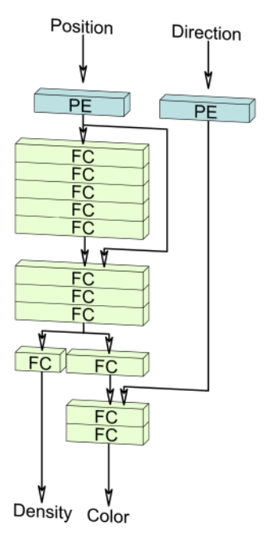<br />
<strong>NeRF</strong><br />
(Fully implicit)</p>
<p><br />
<strong>Voxels</strong><br />
(Explicit / hybrid)</p>
<p><br />
<strong>Triplanes</strong><br />
(Factorized, hybrid)</p>
<p>Image from EG3D paper.</p>
<p>P21</p>
<blockquote>
<p>✅ Nerf 可以有三种表示形式</p>
</blockquote>
<ul>
<li>Triplanes, regularized ReLU Fields, the MLP of NeRFs...</li>
<li>A good representation is important!</li>
</ul>
<p><br />
Triplane diffusion</p>
<p><br />
Regularized ReLU Fields</p>
<p><br />
Implicit MLP of NeRFs</p>
<p>Shue et al., <u>&quot;3D Neural Field Generation using Triplane Diffusion&quot;,</u> arXiv 2022<br />
Yang et al., <u>&quot;Learning a Diffusion Prior for NeRFs&quot;,</u> ICLR Workshop 2023<br />
Jun and Nichol, <u>&quot;Shap-E: Generating Conditional 3D Implicit Functions&quot;,</u> arXiv 2023</p>
<blockquote>
<p>✅ 这三种表示形式都可以与 diffuson 结合。<br />
✅ 好的表示形式对diffusion 的效果很重要。</p>
</blockquote>
<hr />
<blockquote>
<p>本文出自CaterpillarStudyGroup，转载请注明出处。</p>
<p>https://caterpillarstudygroup.github.io/ImportantArticles/</p>
</blockquote>
<div style="break-before: page; page-break-before: always;"></div><p>P40</p>
<table><thead><tr><th>ID</th><th>Year</th><th>Name</th><th>Note</th><th>Tags</th><th>Link</th></tr></thead><tbody>
<tr><td></td><td>2024b</td><td>Unique3D</td><td></td><td></td><td></td></tr>
<tr><td></td><td>2023</td><td>Novel View Synthesis with Diffusion Models</td><td>Sample based on stochastic conditions, allowing the use of multiple conditional frames. <br> ✅ UNet，2 branch，分别用于原始角度和要生成的角度。<br> ✅ 引入 step 2 是为了内容一致性。 <br> ✅ frame：坐标系。在不同的坐标系下看到的是不同的视角。 <br> ❓ 为什么有两个pose？<br> ✅ 每个 frame 的内部由 cross-attention 连接。</td><td>- Condition on a frame and two poses, predict another frame. <br>  <br> UNet with frame cross-attention <br> 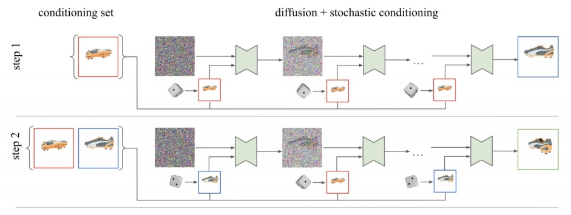</td><td>3Dim</td></tr>
<tr><td></td><td>2024</td><td>CAT3D</td><td></td><td></td><td></td></tr>
<tr><td></td><td>2023</td><td>Generative Novel View Synthesis with 3D-Aware Diffusion Models</td><td>- 3D-aware architecture with latent feature field. <br> - Use diffusion model to improve render quality based on structure. <br> ✅ (1) 生成 feature field (2) render 其中一个视角 (3) 优化渲染效果 <br> ✅ (2) 是 MLP (3) 是 diffusion．</td><td></td><td>GenVS</td></tr>
</tbody></table>
<hr />
<blockquote>
<p>本文出自CaterpillarStudyGroup，转载请注明出处。</p>
<p>https://caterpillarstudygroup.github.io/ImportantArticles/</p>
</blockquote>
<div style="break-before: page; page-break-before: always;"></div><table><thead><tr><th>ID</th><th>Year</th><th>Name</th><th>Note</th><th>Tags</th><th>Link</th></tr></thead><tbody>
<tr><td></td><td>2023</td><td>NeuralLift-360: Lifting An In-the-wild 2D Photo to A 3D Object with 360° Views</td><td>SDS + Fine-tuned CLIP text embedding + Depth supervision&gt; ✅ 整体上是类似 SDS 的优化方法，再结合其它的损失函数。<br> ✅ (1) 渲染不同视角，并对渲染结果用 clip score打分。<br> ✅ (2) 监督深度信息。</td><td></td><td></td></tr>
<tr><td></td><td>2023</td><td>Zero-1-to-3: Zero-shot One Image to 3D Object</td><td>Generate novel view from 1 view and pose, with 2d model. <br> Then, run SJC / SDS-like optimizations with view-conditioned model. <br> ✅ (1) 用 2D diffusion 生成多视角。用 SDS 对多视角图像生成3D．</td><td></td><td></td></tr>
<tr><td></td><td>2024</td><td>CAT3D</td><td></td><td></td><td></td></tr>
</tbody></table>
<hr />
<blockquote>
<p>本文出自CaterpillarStudyGroup，转载请注明出处。</p>
<p>https://caterpillarstudygroup.github.io/ImportantArticles/</p>
</blockquote>
<div style="break-before: page; page-break-before: always;"></div><table><thead><tr><th>ID</th><th>Year</th><th>Name</th><th>Note</th><th>Tags</th><th>Link</th></tr></thead><tbody>
<tr><td></td><td>2023</td><td>Instruct-NeRF2NeRF: Editing 3D Scenes with Instructions</td><td></td><td>Nerf</td><td></td></tr>
<tr><td></td><td>2023</td><td>Vox-E: Text-guided Voxel Editing of 3D Objects</td><td>- Text-guided object editing with SDS <br> - Regularize the structure of the new voxel grid.</td><td>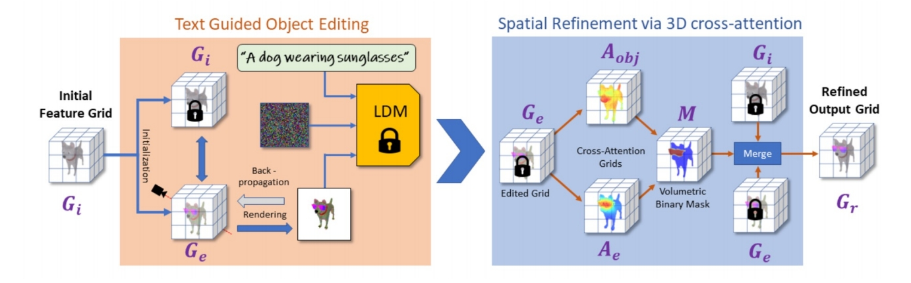</td><td>Voxel</td></tr>
</tbody></table>
<hr />
<blockquote>
<p>本文出自CaterpillarStudyGroup，转载请注明出处。</p>
<p>https://caterpillarstudygroup.github.io/ImportantArticles/</p>
</blockquote>
<div style="break-before: page; page-break-before: always;"></div><p>P73</p>
<h2 id="outline"><a class="header" href="#outline">Outline</a></h2>
<ul>
<li>Safety and limitations of diffusion models</li>
</ul>
<p>P74</p>
<h2 id="data-memorization-in-diffusion-models"><a class="header" href="#data-memorization-in-diffusion-models">Data Memorization in Diffusion Models</a></h2>
<ul>
<li>Due to the likelihood-base objective function, <strong>diffusion models can ”memorize” data</strong>.</li>
<li>And with a higher chance than GANs!</li>
<li>Nevertheless, a lot of “memorized images” are highly-duplicated in the dataset.</li>
</ul>
<p></p>
<p>Carlini et al., <u>&quot;Extracting Training Data from Diffusion Models&quot;,</u> arXiv 2023</p>
<p>P75</p>
<h2 id="erasing-concepts-in-diffusion-models"><a class="header" href="#erasing-concepts-in-diffusion-models">Erasing Concepts in Diffusion Models</a></h2>
<ul>
<li>Fine-tune a model to remove unwanted concepts.</li>
<li>From original model, <strong>obtain score via negative CFG</strong>.</li>
<li><strong>A new model is fine-tuned</strong> from the new score function.</li>
</ul>
<p></p>
<p></p>
<p>Gandikota et al., <u>&quot;Erasing Concepts from Diffusion Models&quot;,</u> arXiv 2023</p>
<blockquote>
<p>✅ 考虑到版权等问题。<br />
✅ finetune 已有的 text-2-image model．<br />
✅ 使用 negative CFG 原有信息不会受到影响。</p>
</blockquote>
<h1 id="reference-7"><a class="header" href="#reference-7">Reference</a></h1>
<p>P77</p>
<h2 id="part-i"><a class="header" href="#part-i">Part I</a></h2>
<p>Ho et al., <u>&quot;Denoising Diffusion Probabilistic Models&quot;,</u> NeurIPS 2020<br />
Kingma et al., <u>&quot;Variational Diffusion Models&quot;,</u> arXiv 2021<br />
Karras et al., <u>&quot;Elucidating the Design Space of Diffusion-Based Generative Models&quot;,</u> NeurIPS 2022<br />
Song et al., <u>&quot;Denoising Diffusion Implicit Models&quot;,</u> ICLR 2021<br />
Jolicoeur-Martineau et al., &quot;Gotta Go Fast When Generating Data with Score-Based Models&quot;,</u> arXiv 2021<br />
Liu et al., <u>&quot;Pseudo Numerical Methods for Diffusion Models on Manifolds&quot;,</u> ICLR 2022<br />
Lu et al., <u>&quot;DPM-Solver: A Fast ODE Solver for Diffusion Probabilistic Model Sampling in Around 10 Steps&quot;,</u> NeurIPS 2022<br />
Lu et al., <u>&quot;DPM-Solver++: Fast Solver for Guided Sampling of Diffusion Probabilistic Models&quot;,</u> NeurIPS 2022<br />
Zhang and Chen, <u>&quot;Fast Sampling of Diffusion Models with Exponential Integrator&quot;,</u> arXiv 2022<br />
Zhang et al., <u>&quot;gDDIM: Generalized denoising diffusion implicit models&quot;,</u> arXiv 2022<br />
Zhao et al., <u>&quot;UniPC: A Unified Predictor-Corrector Framework for Fast Sampling of Diffusion Models&quot;,</u> arXiv 2023<br />
Shih et al., <u>&quot;Parallel Sampling of Diffusion Models&quot;,</u> arxiv 2023<br />
Chen et al., <u>&quot;A Geometric Perspective on Diffusion Models&quot;,</u> arXiv 2023<br />
Xiao et al., <u>&quot;Tackling the Generative Learning Trilemma with Denoising Diffusion GANs&quot;,</u> arXiv 2021<br />
Salimans and Ho, <u>&quot;Progressive Distillation for Fast Sampling of Diffusion Models&quot;,</u> ICLR 2022<br />
Meng et al., <u>&quot;On Distillation of Guided Diffusion Models&quot;,</u> arXiv 2022<br />
Dockhorn et al., <u>&quot;GENIE: Higher-Order Denoising Diffusion Solvers&quot;,</u> NeurIPS 2022<br />
Watson et al., <u>&quot;Learning Fast Samplers for Diffusion Models by Differentiating Through Sample Quality&quot;,</u> ICLR 2022<br />
Phung et al., <u>&quot;Wavelet Diffusion Models Are Fast and Scalable Image Generators&quot;,</u> CVPR 2023<br />
Dhariwal and Nichol, <u>&quot;Diffusion Models Beat GANs on Image Synthesis&quot;,</u> arXiv 2021<br />
Ho and Salimans, <u>&quot;Classifier-Free Diffusion Guidance&quot;,</u> NeurIPS Workshop 2021<br />
Automatic1111, <u>&quot;Negative Prompt&quot;,</u> GitHub<br />
Hong et al., <u>&quot;Improving Sample Quality of Diffusion Models Using Self-Attention Guidance&quot;,</u> arXiv 2022<br />
Saharia et al., <u>&quot;Image Super-Resolution via Iterative Refinement&quot;,</u> arXiv 2021<br />
Ho et al., <u>&quot;Cascaded Diffusion Models for High Fidelity Image Generation&quot;,</u> JMLR 2021<br />
Sinha et al., <u>&quot;D2C: Diffusion-Denoising Models for Few-shot Conditional Generation&quot;,</u> NeurIPS 2021<br />
Vahdat et al., <u>&quot;Score-based Generative Modeling in Latent Space&quot;,</u> arXiv 2021<br />
Daras et al., <u>&quot;Score-Guided Intermediate Layer Optimization: Fast Langevin Mixing for Inverse Problems&quot;,</u> ICML 2022</p>
<p>P78</p>
<h2 id="part-i-contd"><a class="header" href="#part-i-contd">Part I (cont’d)</a></h2>
<p>Bortoli et al.,<u> &quot;Diffusion Schrödinger Bridge&quot;,</u> NeurIPS 2021<br />
Bortoli et al.,<u> &quot;Riemannian Score-Based Generative Modelling&quot;,</u> NeurIPS 2022<br />
Neklyudov et al., <u>&quot;Action Matching: Learning Stochastic Dynamics from Samples&quot;,</u> ICML 2023<br />
Bansal et al., <u>&quot;Cold Diffusion: Inverting Arbitrary Image Transforms Without Noise&quot;,</u> arXiv 2022<br />
Daras et al., <u>&quot;Soft Diffusion: Score Matching for General Corruptions&quot;,</u> TMLR 2023<br />
Delbracio and Milanfar, <u>&quot;Inversion by Direct Iteration: An Alternative to Denoising Diffusion for Image Restoration&quot;,</u> arXiv 2023<br />
Luo et al., <u>&quot;Image Restoration with Mean-Reverting Stochastic Differential Equations&quot;,</u> ICML 2023</p>
<p>P79</p>
<h2 id="part-ii"><a class="header" href="#part-ii">Part II</a></h2>
<p>Jabri et al., <u>&quot;Scalable Adaptive Computation for Iterative Generation&quot;,</u> arXiv 2022<br />
Li et al., <u>&quot;Efficient Spatially Sparse Inference for Conditional GANs and Diffusion Models&quot;,</u> NeurIPS 2022<br />
Avrahami et al., <u>&quot;Blended Diffusion for Text-driven Editing of Natural Images&quot;,</u> CVPR 2022<br />
Sarukkai et al., <u>&quot;Collage Diffusion&quot;,</u> arXiv 2023<br />
Bar-Tal et al., <u>&quot;MultiDiffusion: Fusing Diffusion Paths for Controlled Image Generation&quot;,</u> ICML 2023<br />
Kumari et al., <u>&quot;Multi-Concept Customization of Text-to-Image Diffusion&quot;,</u> CVPR 2023<br />
Tewel et al., <u>&quot;Key-Locked Rank One Editing for Text-to-Image Personalization&quot;,</u> SIGGRAPH 2023<br />
Zhao et al., <u>&quot;A Recipe for Watermarking Diffusion Models&quot;,</u> arXiv 2023<br />
Hu et al., <u>&quot;LoRA: Low-Rank Adaptation of Large Language Models&quot;,</u> ICLR 2022<br />
Avrahami et al., <u>&quot;SpaText: Spatio-Textual Representation for Controllable Image Generation&quot;,</u> CVPR 2023<br />
Orgad et al., <u>&quot;Editing Implicit Assumptions in Text-to-Image Diffusion Models&quot;,</u> arXiv 2023<br />
Han et al., <u>&quot;SVDiff: Compact Parameter Space for Diffusion Fine-Tuning&quot;,</u> arXiv 2023<br />
Xie et al., <u>&quot;DiffFit: Unlocking Transferability of Large Diffusion Models via Simple Parameter-Efficient Fine-Tuning&quot;,</u> arXiv 2023<br />
Saharia et al., <u>&quot;Palette: Image-to-Image Diffusion Models&quot;,</u> SIGGRAPH 2022<br />
Whang et al., <u>&quot;Deblurring via Stochastic Refinement&quot;,</u> CVPR 2022<br />
Xu et al., <u>&quot;Open-Vocabulary Panoptic Segmentation with Text-to-Image Diffusion Models&quot;,</u> arXiv 2023<br />
Saxena et al., <u>&quot;Monocular Depth Estimation using Diffusion Models&quot;,</u> arXiv 2023<br />
Li et al., <u>&quot;Your Diffusion Model is Secretly a Zero-Shot Classifier&quot;,</u> arXiv 2023<br />
Gowal et al., <u>&quot;Improving Robustness using Generated Data&quot;,</u> NeurIPS 2021<br />
Wang et al., <u>&quot;Better Diffusion Models Further Improve Adversarial Training&quot;,</u> ICML 2023</p>
<p>P81</p>
<h2 id="part-iii"><a class="header" href="#part-iii">Part III</a></h2>
<p>Jalal et al., <u>&quot;Robust Compressed Sensing MRI with Deep Generative Priors&quot;,</u> NeurIPS 2021<br />
Song et al., <u>&quot;Solving Inverse Problems in Medical Imaging with Score-Based Generative Models&quot;,</u> ICLR 2022<br />
Kawar et al., <u>&quot;Denoising Diffusion Restoration Models&quot;,</u> NeurIPS 2022<br />
Chung et al., <u>&quot;Improving Diffusion Models for Inverse Problems using Manifold Constraints&quot;,</u> NeurIPS 2022<br />
Ryu and Ye, <u>&quot;Pyramidal Denoising Diffusion Probabilistic Models&quot;,</u> arXiv 2022<br />
Chung et al., <u>&quot;Diffusion Posterior Sampling for General Noisy Inverse Problems&quot;,</u> arXiv 2022<br />
Feng et al., <u>&quot;Score-Based Diffusion Models as Principled Priors for Inverse Imaging&quot;,</u> arXiv 2023<br />
Song et al., <u>&quot;Pseudoinverse-Guided Diffusion Models for Inverse Problems&quot;,</u> ICLR 2023<br />
Mardani et al., <u>&quot;A Variational Perspective on Solving Inverse Problems with Diffusion Models&quot;,</u> arXiv 2023<br />
Delbracio and Milanfar, <u>&quot;Inversion by Direct Iteration: An Alternative to Denoising Diffusion for Image Restoration&quot;,</u> arxiv 2023<br />
Stevens et al., <u>&quot;Removing Structured Noise with Diffusion Models&quot;,</u> arxiv 2023<br />
Wang et al., <u>&quot;Zero-Shot Image Restoration Using Denoising Diffusion Null-Space Model&quot;,</u> ICLR 2023<br />
Zhou et al., <u>&quot;3D Shape Generation and Completion through Point-Voxel Diffusion&quot;,</u> ICCV 2021<br />
Zeng et al., <u>&quot;LION: Latent Point Diffusion Models for 3D Shape Generation&quot;,</u> NeurIPS 2022<br />
Nichol et al., <u>&quot;Point-E: A System for Generating 3D Point Clouds from Complex Prompts&quot;,</u> arXiv 2022<br />
Chou et al., <u>&quot;DiffusionSDF: Conditional Generative Modeling of Signed Distance Functions&quot;,</u> arXiv 2022<br />
Cheng et al., <u>&quot;SDFusion: Multimodal 3D Shape Completion, Reconstruction, and Generation&quot;,</u> arXiv 2022<br />
Hui et al., <u>&quot;Neural Wavelet-domain Diffusion for 3D Shape Generation&quot;,</u> arXiv 2022<br />
Shue et al., <u>&quot;3D Neural Field Generation using Triplane Diffusion&quot;,</u> arXiv 2022<br />
Yang et al., <u>&quot;Learning a Diffusion Prior for NeRFs&quot;,</u> ICLR Workshop 2023<br />
Jun and Nichol, <u>&quot;Shap-E: Generating Conditional 3D Implicit Functions&quot;,</u> arXiv 2023<br />
Metzer et al., <u>&quot;Latent-NeRF for Shape-Guided Generation of 3D Shapes and Textures&quot;,</u> arXiv 2022<br />
Hong et al., <u>&quot;Debiasing Scores and Prompts of 2D Diffusion for Robust Text-to-3D Generation&quot;,</u> CVPR Workshop 2023<br />
Watson et al., <u>&quot;Novel View Synthesis with Diffusion Models&quot;,</u> arXiv 2022<br />
Chan et al., <u>&quot;Generative Novel View Synthesis with 3D-Aware Diffusion Models&quot;,</u> arXiv 2023<br />
Zhou and Tulsiani, <u>&quot;SparseFusion: Distilling View-conditioned Diffusion for 3D Reconstruction&quot;,</u> arXiv 2022</p>
<p>P82</p>
<h2 id="part-iii-contd"><a class="header" href="#part-iii-contd">Part III (cont’d)</a></h2>
<p>Seo et al., <u>&quot;DITTO-NeRF: Diffusion-based Iterative Text To Omni-directional 3D Model&quot;,</u> arXiv 2023<br />
Haque et al., <u>&quot;Instruct-NeRF2NeRF: Editing 3D Scenes with Instructions&quot;,</u> arXiv 2023<br />
Sella et al., <u>&quot;Vox-E: Text-guided Voxel Editing of 3D Objects&quot;,</u> arXiv 2023<br />
Harvey et al., <u>&quot;Flexible Diffusion Modeling of Long Videos&quot;,</u> arXiv 2022<br />
Voleti et al., <u>&quot;MCVD: Masked Conditional Video Diffusion for Prediction, Generation, and Interpolation&quot;,</u> NeurIPS 2022<br />
Mei and Patel, <u>&quot;VIDM: Video Implicit Diffusion Models&quot;,</u> arXiv 2022<br />
Wang et al., <u>&quot;Zero-Shot Video Editing Using Off-The-Shelf Image Diffusion Models&quot;,</u> arXiv 2023<br />
Jiménez, <u>&quot;Mixture of Diffusers for scene composition and high resolution image generation&quot;,</u> arXiv 2023<br />
Bar-Tal et al., <u>&quot;MultiDiffusion: Fusing Diffusion Paths for Controlled Image Generation&quot;,</u> arXiv 2023<br />
Zhang et al., <u>&quot;DiffCollage: Parallel Generation of Large Content with Diffusion Models&quot;,</u> CVPR 2023<br />
Du et al., <u>&quot;Avatars Grow Legs: Generating Smooth Human Motion from Sparse Tracking Inputs with Diffusion Model&quot;,</u> CVPR 2023<br />
Somepalli et al., <u>&quot;Diffusion Art or Digital Forgery? Investigating Data Replication in Diffusion Models&quot;,</u> CVPR 2023<br />
Carlini et al., <u>&quot;Extracting Training Data from Diffusion Models&quot;,</u> arXiv 2023<br />
Gandikota et al., <u>&quot;Erasing Concepts from Diffusion Models&quot;,</u> arXiv 2023<br />
Kumari et al., <u>&quot;Ablating Concepts in Text-to-Image Diffusion Models&quot;,</u> arXiv 2023<br />
Somepalli et al., <u>&quot;Understanding and Mitigating Copying in Diffusion Models&quot;,</u> arXiv 2023</p>
<hr />
<blockquote>
<p>本文出自CaterpillarStudyGroup，转载请注明出处。</p>
<p>https://caterpillarstudygroup.github.io/ImportantArticles/</p>
</blockquote>
<div style="break-before: page; page-break-before: always;"></div><p>P1</p>
<h2 id="large-multimodal-models"><a class="header" href="#large-multimodal-models">Large Multimodal Models:</a></h2>
<h2 id="notes-on-cvpr-2023-tutorial"><a class="header" href="#notes-on-cvpr-2023-tutorial">Notes on CVPR 2023 Tutorial</a></h2>
<p><strong>Chunyuan Li</strong><br />
Microsoft Research, Redmond<br />
<a href="https://chunyuan.li">https://chunyuan.li</a></p>
<p><strong>Abstract</strong></p>
<p>This tutorial note summarizes the presentation on <strong>Large Multimodal Models: To-wards Building and Surpassing Multimodal GPT-4, a part of CVPR 2023 tutorial on Recent Advances in Vision Foundation Models</strong>. The tutorial consists of three parts. We first <strong>introduce the background on recent GPT-like large models for vision-and-language modeling</strong> to motivate the research in instruction-tuned large multimodal models (LMMs). As a pre-requisite, <strong>we describe the basics of instruction-tuning in large language models</strong>, which is further extended to the multimodal space. Lastly, <strong>we illustrate how to build the minimum prototype of multimodal GPT-4 like models</strong>
with the open-source resource, and review the recently emerged topics.</p>
<blockquote>
<p>❓ GPT 是语言模型，为什么说它是多模态模型？<br />
❓ 什么是 instruction-tuning？</p>
</blockquote>
<p>P3</p>
<h2 id="1-prologue"><a class="header" href="#1-prologue">1 Prologue</a></h2>
<p>In view of the rapid assimilation and widespread adoption of OpenAI ChatGPT [32]/GPT-4 [33] in contemporary society, there has been a growing interest among academics and researchers to develop open-source large language models (LLMs), and simultaneously explore the extensions into large multimodal models (LMMs)\(^1\). In order to elucidate this popular topic for a broader audience, in the CVPR 2023 tutorial on <strong>Recent Advances in Vision Foundation Models</strong>, we have provided a lecture on <strong>Large Multimodal Models: Towards Building and Surpassing Multimodal GPT-4</strong>, based on the public materials in the literature. This note summarizes the tutorial presentation and makes it more complete. It gives guided tours through the literature and explain topics to those who seek to learn the areas on LMMs from basics to the advances. It is prepared for audience including graduate students, researchers and professionals that LMMs are outside their specialties, to help them develop perspectives, and identify trends in LMMs in an accessible way.</p>
<blockquote>
<p>✅ 在本文中，LMM＝multimodal LLM</p>
</blockquote>
<p></p>
<p>In the full tutorial, as shown in Figure 2, we have covered the most recent approaches and principles at the frontier of learning and applying vision foundation models, <strong>including</strong> Q1: Visual and Vision-Language Pre-training; Q2: Generic Vision Interface; Q3: Alignments in Text-to-image Generation; Q4: Large Multimodal Models; and Q5: Multimodal Agents.<br />
This note <strong>focuses</strong> <strong>on Q4: how to leverage LLM for multimodality, and train LMMs in an end-to-end fashion, so that the models can see and chat.</strong> The presentation consists of three parts. To start, we first share background on recent GPT-like large models for vision-and-language modeling in Section 2. In the 2nd part, as a pre-requisite, we will introduce the concept of instruction tuning in language domains in Section 3, which empowered ChatGPT. Finally, Section 4 covers the last part of the presentation, where we focus on how to build a minimum version of multimodal GPT-4, using LLaVA as a running example. Since LMM is a popular research topic, many new papers have appeared in this line of research in the past three months, of which we provide a summary, so that the audience may quickly get a picture on what the LMM community has been working on.<br />
The related links of the tutorial presentation on large multimodal models are available at:</p>
<ul>
<li><em>Slides</em>: <a href="https://tinyurl.com/5c2c2mtm">https://tinyurl.com/5c2c2mtm</a></li>
<li><em>YouTube Video</em>: <a href="https://youtu.be/mkI7EPD1vp8">https://youtu.be/mkI7EPD1vp8</a></li>
<li><em>Bilibili Video</em>: <a href="https://www.bilibili.com/video/BV1Ng4y1T7v3/">https://www.bilibili.com/video/BV1Ng4y1T7v3/</a><br />
For the full information and other parts of the CVPR tutorial, please see the official website at:<br />
<a href="https://vlp-tutorial.github.io/">https://vlp-tutorial.github.io/</a></li>
</ul>
<p>P4</p>
<h2 id="2-background"><a class="header" href="#2-background">2 Background</a></h2>
<h3 id="21-image-to-text-generative-models"><a class="header" href="#21-image-to-text-generative-models">2.1 Image-to-Text Generative Models</a></h3>
<p>LMMs in their current form is primarily <strong>an image-to-text generative model, which takes images as input, and outputs a text sequence.</strong> One example is illustrated in Figure 3 (a) Left. All of the model variants share very similar model architecture and training objective.</p>
<ul>
<li><em>Model Architecture</em>. As illustrated in Figure 3 (a) Right, the model typically consists of an <strong>image encoder to extract visual features</strong>, and <strong>a language model to decode the text sequence</strong>. The vision and language modalities can be <strong>optionally connected by trainable connection module.</strong> The image encoder and language model can be either trained from scratch or initialized from pre-trained models.</li>
<li><em>Training Objective</em>. As illustrated in Figure 3 (b), it typically employs an auto-regressive loss on the output text tokens. For the attention map in the Transformers [46], <strong>image tokens can attend to each other, and the text token depends on and all image tokens and the previous text tokens.</strong></li>
</ul>
<p><br />
</p>
<blockquote>
<p>✅ 语言通常使用自回归方式，图像通常使用 attenion 方式。</p>
</blockquote>
<h3 id="22-case-studies"><a class="header" href="#22-case-studies">2.2 Case Studies</a></h3>
<p>We use some known LMMs as examples to illustrate how the network architecture framework can be instantiated in different models, while maintaining the same auto-regressive training objective.</p>
<p><strong>Case Study I: LMM trained with image-text pairwise instances.</strong> Most LMMs are trained on a large number of image-text pairs, where each training sample is a pair. GIT and BLIP2 are two large models that achieve state-of-the-art (SoTA) performance on many datasets. The comparisons are shown in Figure 4(a). GIT [48] initializes image encoder with constrastive pre-trained Microsoft Florence model, and train a language model from scratch. On the other hand, BLIP2 freezes the weights of pre-trained image and language model, and a train lightweight Q-former. <strong>BLIP2 [20] shows higher sample-efficiency with the bootstrapping training method.</strong></p>
<blockquote>
<p>✅ GIT 对所有模块进行端到端训练。<br />
✅ BLIP2 fix 已有模块，仅训练新增的 connection 模块。 </p>
</blockquote>
<p>p5</p>
<p></p>
<p></p>
<p><strong>Case Study II: LMM trained with interleaved image-text sequence instances.</strong> We use Flamingo [1] as example, shown in Figure 4(b). It connect the frozen pre-trained image and language models – by adding novel architectural components in between. Specifically, <strong>Perceiver Sampler module helps reduce compute complexity, and Gated Transformer module helps stabilize training in the initial stage.</strong> Flamingo is trained on a mixture of complementary large-scale multimodal data coming only from the web, without using any data annotated for machine learning purposes. After this training is done, Flamingo can be directly adapted to vision tasks via simple few-shot learning without any additional task-specific tuning.</p>
<blockquote>
<p>❓ 这个数据集和 pair data 有什么区别？<br />
✅ Flamingo 的训练方式同 BLIP2．</p>
</blockquote>
<p><strong>Multimodal In-Context-Learning.</strong> Beside the SoTA performance on dozens of academic bench-marks, proabably the most appealing aspect of Flamingo is that it exhibits an emerged property: Multimodal In-Context-Learning. Specifically, <strong>given a couple of image-text pairs as examples, Flamingo can zero-shot task transfer to new unseen problems, such as solving visual math problems</strong>. This means Flamingo can tackle a number of difficult problems with just a handful of task-specific examples, <strong>without any additional training required.</strong> For example in Figure 5, two new tasks are presented to Flamingo. The top row provides two image-text pairs as the context in the prompt, where the text describes the name of the animal in the image, followed by the geographical information
of the animal. Flamingo is able to understand the patterns in the task instruction illustrated by the examples, and output the corresponding information for a new image. In the bottom row, the text first shows the optical character recognition (OCR) result of the image, followed by the arithmetic result. Flamingo learns the task instruction illustrated in the multimodal context, outputs the correct answer for a new math problem in the image. Therefore, Flamingo is generally considered as the GPT-3 moment [3] in the multimodal domain.</p>
<blockquote>
<p>✅ 对于新任务，不需要训练，只需要给几个例子就能学会。<br />
❓ Flamingo 有交互功能吗？怎样学习例子？<br />
❓ 这个特性与 In-Context-Learning 有什么关系？</p>
</blockquote>
<p>P6<br />
</p>
<h3 id="23-openai-multimulti-gpt4-and-research-gaps"><a class="header" href="#23-openai-multimulti-gpt4-and-research-gaps">2.3 OpenAI Multimulti GPT4 and Research Gaps</a></h3>
<p>In March 2023, OpenAI released GPT-4 [33], with impressive capability in visual understanding and reasoning. Though the model details are unknown, there is no doubt that GPT4 enables many new scenarios, based on the examples highlighted the technique report. For instance, two popular visual examples are illustrated in Figure 6. The first one identifies the uncommon visual region and exhibits
strong complex reasoning performance. The second one recognizes text in the image and captures the mere across image-text. For a while, the research community had no clue how this new ability is achieved (probably because they are not tightened to any established academic tasks/datasets), but all are determined that these are exciting results. It naturally raise a question: How can we build Multimodal GPT-4 like models?</p>
<p></p>
<p>To answer it, we start to review the big models from OpenAI, by highlighting the most appealing properties for each model in Figure 7. There are several key observations: (i) GPT-2 [38] is the auto-regressive counterpart in the BERT era [8] for the paradigm of pre-training then fine-tuning. Compared with GPT-2, GPT-3 [3] is a 175B model trained on web-scale text corpus, which exhibits two emerging properties with a frozen model: in-context-learning [3] and chain-of-thoughts (CoT) reasoning [53].. This means, without any additional training required, the model can tackle a wide range of new problems with just a few task-specific examples and by properly prompting it step-by-step, respectively. <strong>It further leads to the paradigm from fine-tuning model weights to prompting</strong></p>
<p>P7</p>
<p></p>
<p><strong>frozen models, where the latter shows higher generality and lower adaptation cost in task transfer.</strong> (ii) ChatGPT and InstructGPT [34] shows the importance of instruction-following and alignment with human intents for LLMs, by fine-tuning the base language model GPT-3/GPT-3.5 on high quality instruction-following data, and improving them with a reward model via reinforcement learning with human feedback. (\(iii\)) GPT-4 not only improves the language ability of previous models, but also allows visual signals as additional input for understanding and reasoning. We see that the newer generation model maintains/improves the existing properties of the previous ones, and enable new properties.</p>
<blockquote>
<p>✅ In-Context-learning 指通过新任务的例子学习新任务。<br />
✅ Instruction-Following 指通过理解任务描述完成新任务。 </p>
</blockquote>
<p>In another words, from GPT-3 to GPT-4, we see two new properties: instruction-following and multimodal input. This reveals the gap between existing LMMs such as Flamingo and multimodal GPT-4: how to perform instruction-following and alignment research in the multimodal space. and thus the focus of this tutorial &amp; note.</p>
<p>P8</p>
<h2 id="3-pre-requisite-instruction-tuning-in-large-language-models"><a class="header" href="#3-pre-requisite-instruction-tuning-in-large-language-models">3 Pre-requisite: Instruction Tuning in Large Language Models</a></h2>
<p>Note that instruction-following is a notion originated in natural language processing (NLP). To study the intuition and gain a full picture of the history, we revisit instruction tuning with LLMs.</p>
<h3 id="31-instruction-tuning"><a class="header" href="#31-instruction-tuning">3.1 Instruction Tuning</a></h3>
<p><br />
<br />
</p>
<p><strong>Traditional Language Data</strong>. As a typical data instance in NLP, seq2seq representation is quite common for many language tasks: each data instance consists of two parts: sequence as the input and sequence as the output. We provide two examples in Figure 8 (a). Without any task instruction specified, we know they are translation and summarization tasks, respectively.</p>
<p>This seq2seq representation is also how NLP community used to use their data. <strong>Task instructions are implicit</strong>. Based on each data domain, <strong>individual models are trained, or sometimes multi-tasking over multiple data domain without specifying the task instructions</strong>. When such models are trained, they are <strong>hard to generalize to new tasks in a zero-shot fashion</strong>, because the models do not learn the skill to understand the task instruction, and have no ability to distinguish and generalize what task to perform in the testing stage.</p>
<p><strong>Instruct Language Data.</strong> Instead, recently researchers start to <strong>explicitly add task instructions in the model training,</strong> as shown in Figure 8 (b). Interestingly, the task instructions of most NLP tasks can be <strong>expressed in natural language</strong> as well. It leads a new data format: instruction-input-output triplets. Based on the new format, <strong>one single model can be trained, multi-tasking with specified instructions.</strong> Since models have observed many task instructions and many instances for each task in training, it <strong>is natural and easy for the models to generalize to new tasks by task composition</strong> in the inference stage.</p>
<p>P9<br />
For example, in the evaluation stage, a new task that require both summarization and translation is provided in Figure 8 (c). Though the model has never seen this new task in training, it observes individual task basis, and learn to perform on new tasks. Note that we humans are always creating new tasks in our daily life, and presumably these new tasks would never been observed by models. It is thus appealing if a model is able to solve thousands of new tasks in the wild in without training. This is partially why ChatGPT is becoming popular and prevalent quickly.</p>
<p><strong>3.2 Self-Instruct and Open-Source LLMs</strong></p>
<p>How can we collect a diverse set of high-quality instruction-following data? There are two general schemes. One is human-human interaction, where humans (task providers) provide the annotation statement and requirements, based on which another group of humans complete the annotation tasks. such a scheme is typically cost and time consuming. The other scheme is human-machine interaction, where similarly <strong>humans provide the annotation statement and requirements</strong>, but it is now the <strong>machines/models that complete the annotation tasks.</strong></p>
<p>To enable LLMs to follow natural language instructions and complete real-world tasks, researchers have been exploring methods of <strong>instruction-tuning</strong> of LLMs. This is implemented by either fine-tuning the model on a wide range of tasks using human-annotated prompts and feedback [34], or supervised finetuning using public benchmarks and datasets augmented with manually or automatically generated instructions [52]. Among these methods, Self-Instruct tuning [51] is a simple and effective method of aligning LLMs to human intent, by <strong>learning from instruction-following data generated by SoTA teacher LLMs.</strong> It turns out that the line of instruction-tuning research has produced effective means to improve the zero and few-shot generalization abilities of LLMs. Self-instruct leverages the in-context-learning ability of LLM. The pipeline is illustrated in Figure 9. Humans create a few examples (i.e., seed examples) as the context, and ask LLM such as GPT-3 or GPT-4 to create more instruct and responses that follows the requirements stated in the prompt. The machine-generated instruction-following data can be further selected to construct with the prompt for in-context-learning in the next data generation iteration. The procedure iterates till a given number of samples are collected. Due to the relatively lower cost and higher response speed of API calls (compared with human annotations), self-instruct is becoming more favorable in the research community.</p>
<p></p>
<blockquote>
<p>✅ (1) 人工生成一些例子。 (2) LLM 通过例子学习任务。(3) LLM 生成新的问题并回答。（4）人工把生成结果变为数据。</p>
</blockquote>
<p><strong>Open-Source LLMs: LLaMA Family.</strong> The open-source community has witnessed a surge of open
LLM. The success of ChatGPT [32] and GPT-4 [33] offers tremendous opportunities to improve open-source LLMs using instruction-tuning. Figure 10 compares several open-source instruction tuned LLMs. LLaMA [45] is a series of open-sourced LLMs, which match the performance of proprietary LLMs such as GPT-3. To teach LLaMA to follow instructions, Self-Instruct tuning has been quickly adopted given its superior performance and low cost. For example, to name a few early attempts in this line of research, Stanford Alpaca [43] uses 52K instruction-following samples generated by GPT-3.5, while Vicuna [47] uses around 500K high-quality instruction-following samples (150K conversions) between user and GPT [39]. To advance the SoTA of instruction-tuning for LLMs, GPT-4 is utilized as the teacher to generate the responses for the Alpaca instructions [36]. Many papers have been proposed to improve the instruction-following data to improve the model alignment quality in chat. For a comprehensive review, we suggest the readers to refer the recent paper [50], where a LLM Tulu is trained on a mix of several high-quality instruct data, and comprehensive comparisons are conducted across multiple benchmarks.</p>
<p>P10<br />
<br />
</p>
<p><strong>Quick Assessment of LLM Chatbots.</strong> To study the quality of LLM Chatbots, We consider <em>Vicuna-Instructions</em>-\(80^2\) [47], a dataset with <strong>80 challenging questions that baseline models find challenging.</strong> Beside generic instructions, there are 8 categories, including knowledge, math, Fermi, counterfactual, roleplay, generic, coding, writing, common-sense. To quantitatively compare the performance, we <strong>ask GPT-4 to rate the response</strong> from score 1 to 10 for any two given chatbots, then compute the relative score. The results are shown in Figure 11. Surprisingly, it turns out this evaluation metric is quite consistent across different settings. The open-source LLaMA family seem performing closely to SoTA proprietary Chatbots.</p>
<p><strong>Further Discussions.</strong> There are several important topics on LLMs that we have not covered in the tutorial presentation, but are worthwhile future exploring.</p>
<ul>
<li>
<p><em>Data-centric AI</em>. We emphasize that the developmet of these open-source LLM projects is data-centric [29], rather than model-centric, so that we hope readers could align the perspective when discussing the topic. <strong>As the training objective and network architectures are becoming similar and even identical</strong> on GPT-like projects, <strong>the key differential factor is data.</strong> For example, behaviors of the aforementioned LLMs are determined by the instruction tuning data.</p>
</li>
<li>
<p><em>False Promise?</em> There is a debate that the open LLMs could catch up with the proprietary LLMs is a false promise [14]. To align the discussions, we argue that <strong>there are two distinctive abilities for LLMs: the instruction-following ability to know which task to perform, and massive knowledge storage to complete the task with quality. Imitation models are good at the former,</strong> by mimicking ChatGPT’s style <strong>but not its factuality.</strong> They authors in [14] conclude that there exists a substantial capabilities gap between open and closed LMs that, with current methods, can only be bridged using an unwieldy amount of imitation data or by using more capable base LMs. They also advocate that the highest leverage action for improving open-source models is <strong>to tackle the difficult challenge of developing better base LMs.</strong> However, unfortunately the resources to train such base LMs are only available in a few industry labs, and the formulas to train the base LMs is largely well explored. It seems more promising for most academic research labs to explore the opportunities in alignment research with affordable resources, or explore the techniques to reduce the compute the barriers.</p>
</li>
</ul>
<blockquote>
<p>✅  Imitation Modes 从 base model 处得到大量数据，可得到 instruction-following 的能力，但其质量无法达到 base model.</p>
</blockquote>
<ul>
<li><em>Base LLMs</em>. Developing more capable or commercial usable LLMs is of great value. Besides LLaMA, the open-source community has developed several capable base LLMs such as OpenLLaMA [11], MPT [44] and Falcon [35], or released the training recipe [5].</li>
</ul>
<p><a href="https://github.com/lm-sys/FastChat/blob/main/fastchat/eval/table/question.jsonl">https://github.com/lm-sys/FastChat/blob/main/fastchat/eval/table/question.jsonl</a></p>
<p>P11</p>
<h2 id="4-instructed-tuned-large-multimodal-models"><a class="header" href="#4-instructed-tuned-large-multimodal-models">4 Instructed Tuned Large Multimodal Models</a></h2>
<p>In this tutorial, we illustrate how to <strong>build the minimum prototype of multimodal GPT4 with open-source resources.</strong> Specially, we use LLaVA [24] as the running example, a similar idea is also
proposed in its co-current work miniGPT-4 [66].</p>
<h3 id="41-open-source-prototypes-llava--minigpt4"><a class="header" href="#41-open-source-prototypes-llava--minigpt4">4.1 Open-Source Prototypes: LLaVA / MiniGPT4</a></h3>
<p>The research in the multimodal space has often been inspired by the latest advances in NLP in recent years. One successful recipe is to keep asking what would happen if the most intriguing and successful NLP ideas are borrowed for the vision-and-language community. We are leveraging the self-instruct idea from the language domain. The unique challenge with self-instruct is that <strong>there is no strong multimodal teacher available yet. How can we use language model such as language-only GPT-4 to create multimodal instruction following data.</strong></p>
<p></p>
<p></p>
<h3 id="411-data-creation"><a class="header" href="#411-data-creation">4.1.1 Data Creation</a></h3>
<p>Instead of directly feed images into OpenAI GPT, we use their <strong>symbolic sequence representations</strong> shown in Figure 12 (a). In LLaVA, the caption and boxes are considered, due to the following</p>
<p>P12<br />
</p>
<p>reasons: (1) it is empirically found that GPT-4 can understand them well, in contrast that ChatGPT has a difficult time in understanding the box data. (2) they are important to <strong>represent the image as informative as possible.</strong></p>
<blockquote>
<p>✅ 图像 → 结构化文本 → 文本输出。<br />
✅ 结构化文本称为 text representation.</p>
</blockquote>
<p>As exemplified in Figure 12 (b), three types of instruction-following data are considered: <strong>multi-turn conversations</strong> so that users can chat with bot, <strong>detailed description</strong> so that long response can be generated from the bot; Lastly, <strong>complex reasoning</strong>, this is more about the implication of the image, rather than the image content. For example, “what challenge do these people face” in this image? The image is about a SUV in the parking area, while the challenge is how the luggage can be packed into the SUV due to the tight space in the car. In total, 158K samples are collected.</p>
<p>To summarize, the trick is that whatever tasks one wants to the model to perform in the serving stage, it is important to <strong>create the corresponding instruction-following for the training</strong>.</p>
<blockquote>
<p>❓ 怎样让模型不只识别图片信息，还要根据图片做复杂推断？</p>
</blockquote>
<h3 id="412-network-architecture-and-training"><a class="header" href="#412-network-architecture-and-training">4.1.2 Network Architecture and Training</a></h3>
<p>As illustrated in Figure 13, the LLaVA network architecture is an instantiation of the general image-to-text generative model framework introduced in Section 2 and Figure 3. Specifically, <strong>LLaVa connects
pre-trained CLIP ViT-L/14 visual encoder [37] and large language model Vicuna [47], using a simple
projection matrix.</strong> A two-stage instruction-tuning procedure is considered:</p>
<ul>
<li><em>Stage 1: Pre-training for Feature Alignment.</em> Only the projection matrix is updated, based on a subset of CC3M [40]. The only task is <strong>image captioning</strong>.</li>
<li><em>Stage 2: Fine-tuning End-to-End.</em> Both the projection matrix and LLM are updated for two different use scenarios.</li>
</ul>
<blockquote>
<p>✅ 即使每个模块分工明确且单独训好，E2E 的 finetune 还是必不可少的。</p>
</blockquote>
<h3 id="413-performance"><a class="header" href="#413-performance">4.1.3 Performance</a></h3>
<p><strong>Performance on Visual Chat: Towards building multimodal GPT-4 level chatbot.</strong> . LLaVA is fine-tuned on the generated multimodal instruction-following data, which contains a diverse set of task instruction and response for daily user-oriented applications. It is empirically found that <strong>fine-tuning the linear projection layer only is sufficient for the chat demo/scenarios, though it requires longer training time.</strong></p>
<p></p>
<p>An evaluation dataset with 30 unseen images is constructed: each image is associated with three types of instructions: conversation, detailed description and complex reasoning. This leads to 90 new language-image instructions, on which we test LLaVA and GPT-4, and use GPT-4 to rate their responses from score 1 to 10. The summed score and relative score per type is reported in Figure 14. Overall, LLaVA achieves 85.1% relative score compared with GPT-4, <strong>indicating the effectiveness of the proposed self-instruct method in multimodal settings.</strong></p>
<p>P13<br />
<strong>Performance on Science QA: New SoTA with the synergy of LLaVA with GPT-4.</strong> LLaVA is fine-tuned on a multimodal rea￾soning dataset in the science domain [26]. In Figure 15, LLaVA alone achieves 90.92%. We use the language-only GPT-4 as the judge, to predict the final answer based on its own previous answers and the LLaVA answers. This “GPT-4 as judge” scheme yields a new SoTA 92.53%.</p>
<p></p>
<p>P14<br />
<strong>Performance on OCR in the wild: An emerging property.</strong> LLaVA has never been explicitly trained on OCR data, i.e., images that contains text from the corresponding caption. Surprisingly, <strong>the model show strong zero-shot OCR task transfer ability in the wild.</strong> Some examples are shown in Figure 16.</p>
<p>P16</p>
<h3 id="42-emerging-topics"><a class="header" href="#42-emerging-topics">4.2 Emerging Topics</a></h3>
<p></p>
<p></p>
<p>The history of recent instructed tuned LMM are illustrated in Figure 17 (a). Due to the popularity of ChatGPT and GPT-4, <strong>instructed tuned LMM</strong> appears as an emerging line of research in the past three months after GPT-4 was proposed. Alpaca and Vicuna were proposed to make LLaMA more instruction-following in the language domain in March. In two weeks, MiniGPT-4 and LLaVA were proposed to make Vicuna to see and chat about the visual world. In ten days, Llama-Adpter v2 and mPlug-OWL started to compare performance with MiniGPT-4/LLaVA, indicating the beginning of model evolution. The data points in April are relatively sparse. In May, a large number of LMM papers appeared on arXiv, which improve this line of research from many different aspects. The momentum is till going in June.</p>
<p>P17<br />
It is easy to lose track of all the recent papers for the readers, so as well in our literature review. To better organize the literature, we group them based on specific research topics in this tutorial, shown in Figure 17 (b). The early LMMs with billions of parameters include GPT-4 [33], Flamingo [1], PaLM-E [9] and KOSMOS-1 [15]. In constrast to these proprietary LMMs, LLaVA/MiniGPT-4 open the opportunities to build LMMs with open-source resource. We will discuss the several topics as below, in addition to dense prediction [49, 60], video [62, 28, 21], image generation [16] and embodied agent [31].</p>
<h4 id="421-more-modalities-beyond-vl"><a class="header" href="#421-more-modalities-beyond-vl">4.2.1 More Modalities (Beyond VL)</a></h4>
<p>🔎 <em>ChatBridge: Bridging Modalities with Large Language Model as a Language Catalyst [65]</em><br />
🔎 <em>PandaGPT: One Model To Instruction-Follow Them All [41]</em><br />
🔎 <em>SpeechGPT: Empowering large language models with intrinsic cross-modal conversational abilities [61]</em><br />
🔎 <em>X-LLM: Bootstrapping Advanced Large Language Models by Treating Multi-Modalities as Foreign Languages [4]</em></p>
<p>While LMM extends LLM by adding the vision modality into language, it is natural to further extend the framework to include more modalities beyond vision and language. Following this spirit, several attempts have been made. In Figure 18, PandaGPT leverages ImageBind to add more modalities into LMMs. The ImageBind model [12] <strong>learns a single, shared representation space for text, image/video, audio, sensors that record depth (3D), thermal (infrared radiation), and inertial measurement units (IMU), which calculate motion and position.</strong> ImageBind provides a holistic understanding of the visual world that connects objects in a photo with how they will sound, their 3D shape, how warm or cold they are, and how they move. <strong>By training a projection layer for one modality in LMM, the model can zero-shot transfer to infer over other modalities due to the shared multimodal embedding space.</strong> Another representative model is SpeechGPT, where language and speech modalities are enabled for both input and output ends. Despite of rich model variations, the idea to connect diverse modalities is similar to LMM that adds images into LLMs.</p>
<blockquote>
<p>❓ 把多种模态信息融合到同一空间，那多种骨骼动作也可以，哪来的 pairdata呢？<br />
❓ 只训一个模态，其它模态能自动迁移，这些模态是怎么对齐的？<br />
❓ 不同骨骨动作的迁移，BVH 能否作为中间的结构化文本？</p>
</blockquote>
<p></p>
<p>P18<br />
</p>
<h4 id="422-multitask-instruct-with-established-academic-datasetstasks"><a class="header" href="#422-multitask-instruct-with-established-academic-datasetstasks">4.2.2 Multitask Instruct with Established Academic Datasets/Tasks</a></h4>
<p>🔎 <em>MultiInstruct: Improving Multi-Modal Zero-Shot Learning via Instruction Tuning [57]</em><br />
🔎 <em>mPlug-OWL: Modularization empowers large language models with multimodality [58]</em><br />
🔎 <em>InstructBLIP: Towards general-purpose vision-language models with instruction tuning [6]</em><br />
🔎 <em>Multimodal-GPT: A vision and language model for dialogue with humans [13]</em><br />
🔎 <em>Instruction-ViT: Multi-Modal Prompts for Instruction Learning in ViT [54]</em></p>
<p>As discussed earlier in Section 3, instruction tuning in the language domains is implemented in two different ways: <strong>fine-tuning the model on a wide range of tasks using human-annotated prompts and feedback</strong>[34], or <strong>supervised fine-tuning using public benchmarks and datasets augmented with manually or automatically generated instructions [52]</strong>. The former is good at user-oriented daily life tasks, and the latter is good at achieving good numbers on established benchmarks. LLaVA/MiniGPT-4 can be categorized as the former class. Several other works either target for the latter class or combine both classes.</p>
<blockquote>
<p>✅ 用 prompt 使用更友好，但用数据 finetue 能得到更好的效果。<br />
✅ 前者数据来自 daily conversation，因此没有明确的任务类型，属于通才。<br />
✅ 后者数据来专用数据集，有明确的任务类型，属于专才。</p>
</blockquote>
<h4 id="423-multimodal-in-context-learning"><a class="header" href="#423-multimodal-in-context-learning">4.2.3 Multimodal In-Context-Learning</a></h4>
<p>🔎 <em>OpenFlamingo [2]</em><br />
🔎 <em>Otter: A Multi-Modal Model with In-Context Instruction Tuning [18]</em><br />
🔎 \(M^3\)<em>IT: A Large-Scale Dataset towards Multi-Modal Multilingual Instruction Tuning [22]</em><br />
🔎 <em>MetaVL: Transferring In-Context Learning Ability From Language Models to Vision-Language Models [30]</em></p>
<p>Similar to the behaviour of LLMs, which can address a language task by processing examples of the task in their text prompt, <strong>multimodal in-context-learning refers to an visual and text interface can steer the model towards solving a multimodal task.</strong> Given a few example pairs of visual inputs and expected text responses composed in the multimodal prompt, the model can be asked a question with a new image or video, and then generate an answer.</p>
<p>P19<br />
OpenFlamingo [2] is an open source version of DeepMind’s Flamingo model, trained on Multimodal C4 dataset [67], which is a billions-scale corpus of image interleaved with text. To explicit enhance the multimodal in-context-learning ability of LMMs, MIMIC-IT [17] dataset is constructed, which is 2.4M multimodal instruction instances with in-context examples. By tuning OpenFlamingo on MIMIC-IT, a new model Otter is obtained with a stronger instruction-following ability. The model life cycle is summarized in Figure 20. Using two image-text pairs as the context, Otter learns the concise answering style demonstrated by the examples, otherwise a tedious response is generated.</p>
<blockquote>
<p>✅ 提升 in-context-learning 主要靠增加数据集。</p>
</blockquote>
<p></p>
<h4 id="424-parameter-efficient-training"><a class="header" href="#424-parameter-efficient-training">4.2.4 Parameter-Efficient Training</a></h4>
<p>🔎  <em>LLaMA-Adapter V2: Parameter-Efficient Visual Instruction Model [10]</em><br />
🔎  <em>Cheap and Quick: Efficient Vision-Language Instruction Tuning for Large Language Models [27]</em></p>
<p>🔎  <em>QLoRA: Efficient Finetuning of Quantized LLMs [7]</em></p>
<p>While fine-tuning very large models often leads to high performance, it is prohibitively expensive; For example, regular 16-bit fine-tuning of a LLaMA 65B parameter model [45] requires more than 780 GB of GPU memory [7]. Therefore, it is critical to reduce the memory footprint of LLMs/LMMs, especially when it comes to improve the accessibility of large models to a wider community. Parameter-efficient training is an effective approach for LMM adaptation. Two representative methods are illustrated in Figure 21. <strong>They freeze most of the model parameters, and only allow a small of trainable parameter to update with domain specific data.</strong> For example, LLaMA Adapter v2 and LAVIN only has 14M and 3.8M trainable parameters, compared with 7B/13B LLM parameters. <strong>Another efficient training method is quantization.</strong> The recent QLoRA finetunes 65B LLaMA for 24 hours on a single GPU, reaching 99.3% of the performance level of ChatGPT. Since instruction tuning typically involves a small amount of data, it makes parameter-efficient training or model quantization feasible with limited GPU resources.</p>
<blockquote>
<p>✅ quantization 是什么技术？</p>
</blockquote>
<p></p>
<blockquote>
<p>✅ 可以在两个模态的中间加 adapter，学习模态间的 alignment.<br />
✅ 可以在两个模态上增加 adapter，增加模态的泛化性。</p>
</blockquote>
<p>P20<br />
</p>
<h4 id="425-benchmarks"><a class="header" href="#425-benchmarks">4.2.5 Benchmarks</a></h4>
<p>🔎 <em>On the Hidden Mystery of OCR in Large Multimodal Models [25]</em><br />
🔎 <em>Evaluating Object Hallucination in Large Vision-Language Models [23]</em><br />
🔎 <em>On Evaluating Adversarial Robustness of Large Vision-Language Models [64]</em><br />
🔎 <em>LAMM: Language-Assisted Multi-Modal Instruction-Tuning Dataset, Framework, and Benchmark [59]</em><br />
🔎 <em>LVLM-eHub: A Comprehensive Evaluation Benchmark for Large Vision-Language Models [56]</em></p>
<p>While LMMs have shown excellent visual recognition and reasoning in an open-set manner with free-form text in many scenarios, the evaluation of LMMs is becoming an urgent and challenging problem. Several related benchmarks have been developed to evaluate various aspects of LMMs, ranging from their specific abilities including <strong>OCR[25], object hallucination [23] and adversarial robustness [64], to comprehensive evaluation [59, 56].</strong></p>
<blockquote>
<p>❓ 这四个能力是怎么评价的？<br />
✅ OCR：从图片中识别文本。LMM 不需要学习就具有的能力，其中 BLIP2 甚至优于专门训练的 OCR 任务 SOTA．</p>
</blockquote>
<p>It is surprising that LMMs shows strong zero-shot OCR performance in the wild, without explicitly training on text recognition data. To shed light on the hidden mystery of OCR in LMMs, a compre-hensive empirical study is conducted in [25] to compare open-source LMMs on 24 academic text recognition datasets, shown in Figure 22. Three observations are highlighted: (1) LLaVA consistently outperforms miniGPT-4 on 21 out of 24 datasets, despite LLaVA being trained with an order of magnitude smaller training data. (2) Training with significantly larger training data leads to higher OCR performance, as demonstrated by BLIP2 [20] and mPLUG-Owl. (3) In most cases, supervised SoTA results significantly outperform zero-shot LMM. However, it is worth noting that in the WordArt dataset [55], which primarily features challenging artistic text, BLIP2 surpasses supervised SoTA. This reveals the potential of LMM in recognizing more complex text types.</p>
<p></p>
<p>P21</p>
<h4 id="426-applications"><a class="header" href="#426-applications">4.2.6 Applications</a></h4>
<p>🔎 <em>PathAsst: Redefining Pathology through Generative Foundation AI Assistant for Pathology [42]</em><br />
🔎 <em>PMC-VQA: Visual Instruction Tuning for Medical Visual Question Answering [63]</em><br />
🔎 <em>LLaVA-Med: Training a Large Language-and-Vision Assistant for Biomedicine in One Day [19]</em></p>
<p>The success of ChatGPT/GPT-4 in the general domain has inspired the interests in building assistants in the vertical domains such as medicine, gaming and education. Such <strong>domain-specific assistants</strong> can have the several advantages over the general domain counterpart: (1) training high-quality domain knowledge makes the assistants more helpful, (2) the model size can be smaller, and thus severing cost is low, (3) the sensitive user prompt data can be maintained internally by serving the model at local, and the privacy issue can be avoided.</p>
<blockquote>
<p>❓ 为什么 domain-specific assistants 会更小？</p>
</blockquote>
<p>LMMs have been recently explored in the biomedical domain [42, 63, 19], where conversational gener-ative AI has demonstrated remarkable promise for empowering biomedical practitioners. LLaVA-Med is a cost-efficient approach for training a vision-language conversational assistant that can answer open-ended research questions of biomedical images. The key idea is to leverage a large-scale, broad-coverage biomedical figure-caption dataset extracted from PubMed Central, use GPT-4 to self-instruct open-ended instruction-following data from the captions, and then fine-tune a large general-domain vision-language model LLaVA using a novel curriculum learning method. Specifically, the model first learns to align biomedical vocabulary using the figure-caption pairs as is, then learns to master open-ended conversational semantics using GPT-4 generated instruction-following data, broadly mimicking how a layperson gradually acquires biomedical knowledge. In Figure 23, we provide examples on the biomed visual conversations of different chatbots. LLaVA-Med precisely answers the questions with biomedical knowledge, while LLaVA behaves like a layperson, who hallucinate based on commonsense.</p>
<p>P22</p>
<h2 id="5-how-close-we-are-with-openai-multimodal-gpt-4"><a class="header" href="#5-how-close-we-are-with-openai-multimodal-gpt-4">5 How Close We Are with OpenAI Multimodal GPT-4?</a></h2>
<p>With all these new works, are we close or even surpassing OpenAI Multimodal GPT-4? It is encouraging to see that the open-source community has quickly developed a variety of models and prototypes for various new capabilities. For example, LLaVA/Mini-GPT4 paves the way towards building multimodal chatbots, with some examples that reproduce the results in OpenAI GPT-4 technique report; GILL [16] extends LMMs for end-to-end image generation, to our best knowledge, this is a capability that the current GPT-4 does not exhibit. From the perspective of enabling new multimodal capabilities with the minimum prototypes, the open-source community seems close to OpenAI Multimodal GPT-4, by exploring the baby steps towards building the general-purpose multimodal assistant.</p>
<p></p>
<p>However, there is a large gap in terms of scaling a given capability, for example, even the for visual reasoning capability that we have observed in LLaVA. Figure 24 shows two more visual examples from OpenAI technique report. To correctly answer the questions, it requires models to understand multiple high-resolution images and long sequence, as well we responding with domain knowledge. It requires much larger compute and more powerful language models, which are not available for most people.</p>
<p>In summary, we have presented the background and strong capabilities of large multimodal models, reviewed instruction tuning in LLMs, and showed how we can build a prototype such as LLaVA and minigpt4 using open-sourced resources. We also summarize and cateorized the most recent papers merged on this line of research to help thoese who are interested to gain the momentum to start the journey of LMM research.</p>
<p>To discuss the next steps to work on as a community, one sustainable suggestion can be that <strong>those with resource can continue focusing on the scaling success and study new emerging properties, while others focus on prototypes for new functionalities and evaluation,</strong> as well as developing techniques to reduce the compute barriers and thus allow more accessibility for larger model compute.</p>
<p>P23<br />
<strong>Acknowledgments</strong></p>
<p>We thank all authors who have contributed to the related papers in LLM/LMM, which makes the tutorial possible. We have tried to track related papers for the CVPR tutorial before June 19, 2023, but may not cover all the papers on the topic, due to the fast research pace in LMMs. Apologies in advance.</p>
<p><strong>References</strong></p>
<p>[1] Jean-Baptiste Alayrac, Jeff Donahue, Pauline Luc, Antoine Miech, Iain Barr, Yana Hasson, Karel Lenc, Arthur Mensch, Katie Millican, Malcolm Reynolds, et al. Flamingo: a visual language model for few-shot learning. <em>arXiv preprint arXiv:2204.14198</em>, 2022. 5, 6, 17</p>
<p>[2] Anas Awadalla, Irena Gao, Joshua Gardner, Jack Hessel, Yusuf Hanafy, Wanrong Zhu, Kalyani Marathe, Yonatan Bitton, Samir Gadre, Jenia Jitsev, Simon Kornblith, Pang Wei Koh, Gabriel Ilharco, Mitchell Wortsman, and Ludwig Schmidt. Openflamingo, March 2023. 13, 18, 19</p>
<p>[3] Tom Brown, Benjamin Mann, Nick Ryder, Melanie Subbiah, Jared D Kaplan, Prafulla Dhariwal, Arvind Neelakantan, Pranav Shyam, Girish Sastry, Amanda Askell, et al. Language models are few-shot learners. <em>Advances in neural information processing systems</em>, 33:1877–1901, 2020. 5,6</p>
<p>[4] Feilong Chen, Minglun Han, Haozhi Zhao, Qingyang Zhang, Jing Shi, Shuang Xu, and Bo Xu. X-llm: Bootstrapping advanced large language models by treating multi-modalities as foreign languages. <em>arXiv preprint arXiv:2305.04160</em>, 2023. 17</p>
<p>[5] Together Computer. Redpajama-data: An open source recipe to reproduce llama training dataset, 2023. 10</p>
<p>[6] Wenliang Dai, Junnan Li, Dongxu Li, Anthony Meng Huat Tiong, Junqi Zhao, Weisheng Wang, Boyang Li, Pascale Fung, and Steven Hoi. Instructblip: Towards general-purpose vision-language models with instruction tuning. <em>arXiv preprint arXiv:2305.06500</em>, 2023. 18</p>
<p>[7] Tim Dettmers, Artidoro Pagnoni, Ari Holtzman, and Luke Zettlemoyer. Qlora: Efficient finetuning of quantized llms. <em>arXiv preprint arXiv:2305.14314</em>, 2023. 19</p>
<p>[8] Jacob Devlin, Ming-Wei Chang, Kenton Lee, and Kristina Toutanova. Bert: Pre-training of deep bidirectional transformers for language understanding. <em>arXiv preprint arXiv:1810.04805</em>, 2018. 6</p>
<p>[9] Danny Driess, Fei Xia, Mehdi SM Sajjadi, Corey Lynch, Aakanksha Chowdhery, Brian Ichter, Ayzaan Wahid, Jonathan Tompson, Quan Vuong, Tianhe Yu, et al. PaLM-E: An embodied multimodal language model. <em>arXiv preprint arXiv:2303.03378</em>, 2023. 17</p>
<p>[10] Peng Gao, Jiaming Han, Renrui Zhang, Ziyi Lin, Shijie Geng, Aojun Zhou, Wei Zhang, Pan Lu, Conghui He, Xiangyu Yue, et al. Llama-adapter v2: Parameter-efficient visual instruction model. <em>arXiv preprint arXiv:2304.15010</em>, 2023. 19</p>
<p>[11] Xinyang Geng and Hao Liu. Openllama: An open reproduction of llama, May 2023. 10</p>
<p>[12] Rohit Girdhar, Alaaeldin El-Nouby, Zhuang Liu, Mannat Singh, Kalyan Vasudev Alwala, Armand Joulin, and Ishan Misra. Imagebind: One embedding space to bind them all. In <em>Proceedings of the IEEE/CVF Conference on Computer Vision and Pattern Recognition,</em> pages 15180–15190, 2023. 17</p>
<p>[13] Tao Gong, Chengqi Lyu, Shilong Zhang, Yudong Wang, Miao Zheng, Qian Zhao, Kuikun Liu, Wenwei Zhang, Ping Luo, and Kai Chen. Multimodal-gpt: A vision and language model for dialogue with humans. <em>arXiv preprint arXiv:2305.04790</em>, 2023. 18</p>
<p>[14] Arnav Gudibande, Eric Wallace, Charlie Snell, Xinyang Geng, Hao Liu, Pieter Abbeel, Sergey Levine, and Dawn Song. The false promise of imitating proprietary llms. <em>arXiv preprint arXiv:2305.15717</em>, 2023. 10</p>
<p>P23<br />
[15] Shaohan Huang, Li Dong, Wenhui Wang, Yaru Hao, Saksham Singhal, Shuming Ma, Tengchao Lv, Lei Cui, Owais Khan Mohammed, Qiang Liu, et al. Language is not all you need: Aligning perception with language models. <em>arXiv preprint arXiv:2302.14045</em>, 2023. 17</p>
<p>[16] Jing Yu Koh, Daniel Fried, and Ruslan Salakhutdinov. Generating images with multimodal language models. <em>arXiv preprint arXiv:2305.17216</em>, 2023. 17, 22</p>
<p>[17] Bo Li, Yuanhan Zhang, Liangyu Chen, Jinghao Wang, Fanyi Pu, Jingkang Yang, Chunyuan Li, and Ziwei Liu. Mimic-it: Multi-modal in-context instruction tuning. <em>arXiv preprint arXiv:2306.05425</em>, 2023. 19</p>
<p>[18] Bo Li, Yuanhan Zhang, Liangyu Chen, Jinghao Wang, Jingkang Yang, and Ziwei Liu. Otter: A multi-modal model with in-context instruction tuning. <em>arXiv preprint arXiv:2305</em>.03726, 2023. 18</p>
<p>[19] Chunyuan Li, Cliff Wong, Sheng Zhang, Naoto Usuyama, Haotian Liu, Jianwei Yang, Tristan Naumann, Hoifung Poon, and Jianfeng Gao. Llava-med: Training a large language-and-vision assistant for biomedicine in one day. <em>arXiv preprint arXiv:2306.00890</em>, 2023. 20, 21</p>
<p>[20] Junnan Li, Dongxu Li, Silvio Savarese, and Steven Hoi. Blip-2: Bootstrapping language-image pre-training with frozen image encoders and large language models. <em>arXiv preprint arXiv:2301.12597</em>, 2023. 4, 5, 13, 20</p>
<p>[21] KunChang Li, Yinan He, Yi Wang, Yizhuo Li, Wenhai Wang, Ping Luo, Yali Wang, Limin Wang, and Yu Qiao. Videochat: Chat-centric video understanding. <em>arXiv preprint arXiv:2305.06355</em>, 2023. 17</p>
<p>[22] Lei Li, Yuwei Yin, Shicheng Li, Liang Chen, Peiyi Wang, Shuhuai Ren, Mukai Li, Yazheng Yang, Jingjing Xu, Xu Sun, et al. M3it: A large-scale dataset towards multi-modal multilingual instruction tuning. <em>arXiv preprint arXiv:2306.04387</em>, 2023. 18</p>
<p>[23] Yifan Li, Yifan Du, Kun Zhou, Jinpeng Wang, Wayne Xin Zhao, and Ji-Rong Wen. Evaluating object hallucination in large vision-language models. <em>arXiv preprint arXiv:2305.10355</em>, 2023. 20</p>
<p>[24] Haotian Liu, Chunyuan Li, Qingyang Wu, and Yong Jae Lee. Visual instruction tuning. <em>arXiv preprint arXiv:2304.08485</em>, 2023. 11, 12, 13, 14</p>
<p>[25] Yuliang Liu, Zhang Li, Hongliang Li, Wenwen Yu, Mingxin Huang, Dezhi Peng, Mingyu Liu, Mingrui Chen, Chunyuan Li, Lianwen Jin, et al. On the hidden mystery of ocr in large multimodal models. <em>arXiv preprint arXiv:2305.07895</em>, 2023. 20</p>
<p>[26] Pan Lu, Swaroop Mishra, Tanglin Xia, Liang Qiu, Kai-Wei Chang, Song-Chun Zhu, Oyvind Tafjord, Peter Clark, and Ashwin Kalyan. Learn to explain: Multimodal reasoning via thought chains for science question answering. <em>Advances in Neural Information Processing Systems</em>, 2022. 13</p>
<p>[27] Gen Luo, Yiyi Zhou, Tianhe Ren, Shengxin Chen, Xiaoshuai Sun, and Rongrong Ji. Cheap and quick: Efficient vision-language instruction tuning for large language models. <em>arXiv preprint arXiv:2305.15023</em>, 2023. 19</p>
<p>[28] Ruipu Luo, Ziwang Zhao, Min Yang, Junwei Dong, Minghui Qiu, Pengcheng Lu, Tao Wang, and Zhongyu Wei. Valley: Video assistant with large language model enhanced ability. <em>arXiv preprint arXiv:2306.07207</em>, 2023. 17</p>
<p>[29] Mark Mazumder, Colby Banbury, Xiaozhe Yao, Bojan Karlaš, William Gaviria Rojas, Sudnya Diamos, Greg Diamos, Lynn He, Douwe Kiela, David Jurado, et al. Dataperf: Benchmarks for data-centric ai development. <em>arXiv preprint arXiv:2207.10062</em>, 2022. 10</p>
<p>[30] Masoud Monajatipoor, Liunian Harold Li, Mozhdeh Rouhsedaghat, Lin F Yang, and Kai-Wei Chang. Metavl: Transferring in-context learning ability from language models to vision-language models. <em>arXiv preprint arXiv:2306.01311</em>, 2023. 18</p>
<p>P25<br />
[31] Yao Mu, Qinglong Zhang, Mengkang Hu, Wenhai Wang, Mingyu Ding, Jun Jin, Bin Wang, Jifeng Dai, Yu Qiao, and Ping Luo. Embodiedgpt: Vision-language pre-training via embodied chain of thought. <em>arXiv preprint arXiv:2305.15021</em>, 2023. 17</p>
<p>[32] OpenAI. ChatGPT. <a href="https://openai.com/blog/chatgpt/,">https://openai.com/blog/chatgpt/,</a> 2022. 3, 9</p>
<p>[33] OpenAI. GPT-4 technical report. <a href="https://arxiv.org/abs/2303.08774,">https://arxiv.org/abs/2303.08774,</a> 2023. 3, 6, 9, 13, 14, 17, 22</p>
<p>[34] Long Ouyang, Jeffrey Wu, Xu Jiang, Diogo Almeida, Carroll Wainwright, Pamela Mishkin, Chong Zhang, Sandhini Agarwal, Katarina Slama, Alex Ray, et al. Training language models to follow instructions with human feedback. <em>Advances in Neural Information Processing Systems</em>, 35:27730–27744, 2022. 7, 9, 18</p>
<p>[35] Guilherme Penedo, Quentin Malartic, Daniel Hesslow, Ruxandra Cojocaru, Alessandro Cappelli, Hamza Alobeidli, Baptiste Pannier, Ebtesam Almazrouei, and Julien Launay. The RefinedWeb dataset for Falcon LLM: outperforming curated corpora with web data, and web data only. <em>arXiv preprint arXiv:2306.01116</em>, 2023. 10</p>
<p>[36] Baolin Peng, Chunyuan Li, Pengcheng He, Michel Galley, and Jianfeng Gao. Instruction tuning with GPT-4. <em>arXiv preprint arXiv:2304.03277</em>, 2023. 9</p>
<blockquote>
<p>Instruction tuning: Finetuned Language Models Are Zero-Shot Learners</p>
</blockquote>
<p>[37] Alec Radford, Jong Wook Kim, Chris Hallacy, Aditya Ramesh, Gabriel Goh, Sandhini Agarwal, Girish Sastry, Amanda Askell, Pamela Mishkin, Jack Clark, et al. Learning transferable visual models from natural language supervision. <em>arXiv preprint arXiv:2103.00020</em>, 2021. 12</p>
<p>[38] Alec Radford, Jeffrey Wu, Rewon Child, David Luan, Dario Amodei, Ilya Sutskever, et al. Language models are unsupervised multitask learners. <em>OpenAI blog</em>, 2019. 6</p>
<p>[39] ShareGPT. y<a href="https://sharegpt.com/,">https://sharegpt.com/,</a> 2023. 9</p>
<p>[40] Piyush Sharma, Nan Ding, Sebastian Goodman, and Radu Soricut. Conceptual captions: A cleaned, hypernymed, image alt-text dataset for automatic image captioning. <em>In ACL</em>, 2018. 12</p>
<p>[41] Yixuan Su, Tian Lan, Huayang Li, Jialu Xu, Yan Wang, and Deng Cai. Pandagpt: One model to instruction-follow them all. <em>arXiv preprint arXiv:2305.16355</em>, 2023. 17</p>
<p>[42] Yuxuan Sun, Chenglu Zhu, Sunyi Zheng, Kai Zhang, Zhongyi Shui, Xiaoxuan Yu, Yizhi Zhao, Honglin Li, Yunlong Zhang, Ruojia Zhao, et al. Pathasst: Redefining pathology through generative foundation ai assistant for pathology. <em>arXiv preprint arXiv:2305.15072</em>, 2023. 21</p>
<p>[43] Rohan Taori, Ishaan Gulrajani, Tianyi Zhang, Yann Dubois, Xuechen Li, Carlos Guestrin, Percy Liang, and Tatsunori B. Hashimoto. Stanford alpaca: An instruction-following llama model. <a href="https://github.com/tatsu-lab/stanford_alpaca,">https://github.com/tatsu-lab/stanford_alpaca,</a> 2023. 9</p>
<p>[44] MosaicML NLP Team. Introducing mpt-7b: A new standard for open-source, ly usable llms, 2023. Accessed: 2023-03-28. 10</p>
<p>[45] Hugo Touvron, Thibaut Lavril, Gautier Izacard, Xavier Martinet, Marie-Anne Lachaux, Timo￾thée Lacroix, Baptiste Rozière, Naman Goyal, Eric Hambro, Faisal Azhar, et al. Llama: Open and efficient foundation language models. <em>arXiv preprint arXiv:2302.13971</em>, 2023. 9, 19</p>
<p>[46] Ashish Vaswani, Noam Shazeer, Niki Parmar, Jakob Uszkoreit, Llion Jones, Aidan N Gomez, Łukasz Kaiser, and Illia Polosukhin. Attention is all you need. In <em>NeurIPS</em>, 2017. 4</p>
<p>[47] Vicuna. Vicuna: An open-source chatbot impressing GPT-4 with 90%* chatgpt quality. <a href="https://vicuna.lmsys.org/,">https://vicuna.lmsys.org/,</a> 2023. 9, 10, 12</p>
<p>[48] Jianfeng Wang, Zhengyuan Yang, Xiaowei Hu, Linjie Li, Kevin Lin, Zhe Gan, Zicheng Liu, Ce Liu, and Lijuan Wang. Git: A generative image-to-text transformer for vision and language. <em>arXiv preprint arXiv:2205.14100</em>, 2022. 4, 5</p>
<p>[49] Wenhai Wang, Zhe Chen, Xiaokang Chen, Jiannan Wu, Xizhou Zhu, Gang Zeng, Ping Luo, Tong Lu, Jie Zhou, Yu Qiao, et al. VisionLLM: Large language model is also an open-ended decoder for vision-centric tasks. <em>arXiv preprint arXiv:2305.11175</em>, 2023. 17</p>
<p>P26<br />
[50] Yizhong Wang, Hamish Ivison, Pradeep Dasigi, Jack Hessel, Tushar Khot, Khyathi Raghavi Chandu, David Wadden, Kelsey MacMillan, Noah A Smith, Iz Beltagy, et al. How far can camels go? exploring the state of instruction tuning on open resources. <em>arXiv preprint arXiv:2306.04751</em>, 2023. 9</p>
<p>[51] Yizhong Wang, Yeganeh Kordi, Swaroop Mishra, Alisa Liu, Noah A Smith, Daniel Khashabi, and Hannaneh Hajishirzi. Self-instruct: Aligning language model with self generated instruc-tions. <em>arXiv preprint arXiv:2212.10560</em>, 2022. 9</p>
<p>[52] Yizhong Wang, Swaroop Mishra, Pegah Alipoormolabashi, Yeganeh Kordi, Amirreza Mirzaei, Anjana Arunkumar, Arjun Ashok, Arut Selvan Dhanasekaran, Atharva Naik, David Stap, et al. Benchmarking generalization via in-context instructions on 1,600+ language tasks. <em>arXiv preprint arXiv:2204.07705</em>, 2022. 9, 18</p>
<p>[53] Jason Wei, Xuezhi Wang, Dale Schuurmans, Maarten Bosma, Ed Chi, Quoc Le, and Denny Zhou. Chain of thought prompting elicits reasoning in large language models. <em>arXiv preprint arXiv:2201.11903</em>, 2022. 6</p>
<p>[54] Zhenxiang Xiao, Yuzhong Chen, Lu Zhang, Junjie Yao, Zihao Wu, Xiaowei Yu, Yi Pan, Lin Zhao, Chong Ma, Xinyu Liu, et al. Instruction-vit: Multi-modal prompts for instruction learning in vit. <em>arXiv preprint arXiv:2305.00201</em>, 2023. 18</p>
<p>[55] Xudong Xie, Ling Fu, Zhifei Zhang, Zhaowen Wang, and Xiang Bai. Toward understanding wordart: Corner-guided transformer for scene text recognition, 2022. 20</p>
<p>[56] Peng Xu, Wenqi Shao, Kaipeng Zhang, Peng Gao, Shuo Liu, Meng Lei, Fanqing Meng, Siyuan Huang, Yu Qiao, and Ping Luo. Lvlm-ehub: A comprehensive evaluation benchmark for large vision-language models. <em>arXiv preprint arXiv:2306.09265</em>, 2023. 20</p>
<p>[57] Zhiyang Xu, Ying Shen, and Lifu Huang. Multiinstruct: Improving multi-modal zero-shot learning via instruction tuning. <em>arXiv preprint arXiv:2212.10773</em>, 2022. 18</p>
<p>[58] Qinghao Ye, Haiyang Xu, Guohai Xu, Jiabo Ye, Ming Yan, Yiyang Zhou, Junyang Wang, Anwen Hu, Pengcheng Shi, Yaya Shi, et al. mplug-owl: Modularization empowers large language models with multimodality. <em>arXiv preprint arXiv:2304.14178</em>, 2023. 18</p>
<p>[59] Zhenfei Yin, Jiong Wang, Jianjian Cao, Zhelun Shi, Dingning Liu, Mukai Li, Lu Sheng, Lei Bai, Xiaoshui Huang, Zhiyong Wang, et al. Lamm: Language-assisted multi-modal instruction-tuning dataset, framework, and benchmark. <em>arXiv preprint arXiv:2306.06687</em>, 2023. 20</p>
<p>[60] Yuhang Zang, Wei Li, Jun Han, Kaiyang Zhou, and Chen Change Loy. Contextual object detection with multimodal large language models. <em>arXiv preprint arXiv:2305.18279</em>, 2023. 17</p>
<p>[61] Dong Zhang, Shimin Li, Xin Zhang, Jun Zhan, Pengyu Wang, Yaqian Zhou, and Xipeng Qiu. Speechgpt: Empowering large language models with intrinsic cross-modal conversational abilities. <em>arXiv preprint arXiv:2305.11000</em>, 2023. 17</p>
<p>[62] Hang Zhang, Xin Li, and Lidong Bing. Video-llama: An instruction-tuned audio-visual language model for video understanding. <em>arXiv preprint arXiv:2306.02858</em>, 2023. 17</p>
<p>[63] Xiaoman Zhang, Chaoyi Wu, Ziheng Zhao, Weixiong Lin, Ya Zhang, Yanfeng Wang, and Weidi Xie. Pmc-vqa: Visual instruction tuning for medical visual question answering. <em>arXiv preprint arXiv:2305.10415</em>, 2023. 21</p>
<p>[64] Yunqing Zhao, Tianyu Pang, Chao Du, Xiao Yang, Chongxuan Li, Ngai-Man Cheung, and Min Lin. On evaluating adversarial robustness of large vision-language models. <em>arXiv preprint arXiv:2305.16934</em>, 2023. 20</p>
<p>[65] Zijia Zhao, Longteng Guo, Tongtian Yue, Sihan Chen, Shuai Shao, Xinxin Zhu, Zehuan Yuan, and Jing Liu. Chatbridge: Bridging modalities with large language model as a language catalyst. <em>arXiv preprint arXiv:2305.16103</em>, 2023. 17</p>
<p>[66] Deyao Zhu, Jun Chen, Xiaoqian Shen, Xiang Li, and Mohamed Elhoseiny. Minigpt-4: Enhancing vision-language understanding with advanced large language models, 2023. 11</p>
<p>P27<br />
[67] Wanrong Zhu, Jack Hessel, Anas Awadalla, Samir Yitzhak Gadre, Jesse Dodge, Alex Fang, Youngjae Yu, Ludwig Schmidt, William Yang Wang, and Yejin Choi. Multimodal c4: An open, billion-scale corpus of images interleaved with text. <em>arXiv preprint arXiv:2304.06939</em>, 2023. 19</p>
<hr />
<blockquote>
<p>本文出自CaterpillarStudyGroup，转载请注明出处。</p>
<p>https://caterpillarstudygroup.github.io/ImportantArticles/</p>
</blockquote>
<div style="break-before: page; page-break-before: always;"></div><h1 id="the-generative-modeling-problem"><a class="header" href="#the-generative-modeling-problem">The Generative Modeling Problem</a></h1>
<p></p>
<blockquote>
<p>正方形代表所有可能的状态所构成的空间，即图像空间。正方形中的每个点代表一个sample，即一张图像。<br />
\(P\) 是源分布，\(Q\) 是目标分布。<br />
\(X_0\) 和 \(X_1\)分别是 \(P\) 分布和 \(Q\) 分布中的 sample．<br />
<strong>生成模型的目标是，找到一个可以从 \(P\) 中 sample 到 \(Q\) 中 sample 的映射</strong>。</p>
</blockquote>
<p>P9</p>
<h1 id="生成模型的范式"><a class="header" href="#生成模型的范式">生成模型的范式</a></h1>
<blockquote>
<p>生成模型有两大类范式：直接生成和增量生成。</p>
</blockquote>
<h2 id="直接生成"><a class="header" href="#直接生成">直接生成</a></h2>
<p>GAN、VAE 属于第一大类生成模型，优点是快，因为它的生成过程只需要一个forward。</p>
<p>GAN的缺点是：<br />
（1）没有一个精确的可以用于 sample 的概率模型<br />
（2）难以训练。</p>
<h3 id="自回归-vs-非自回归"><a class="header" href="#自回归-vs-非自回归">自回归 VS 非自回归</a></h3>
<p>要生成的内容是一个整体，可以一次性生成整个内容，也可以把要生成的内容分解成多个小块，分别生成这些小块，再合成整体。</p>
<p>例如图像生成，PixelCNN、ViT把图像分成多个patch，并分别生成这些patch。为了让这些patch之间有协调性，后生成的patch要以已生成的patch为依据。<br />
再例如动作生成，要生成一个动作序列，可以把每一帧作为一个patch，也可以把连续的几帧作为一个patch。<br />
自回归生成的特点是，生成内容的依赖关系是固定的。先生成的patch会对后生成的patch产生影响，反之则不行。</p>
<h2 id="增量生成"><a class="header" href="#增量生成">增量生成</a></h2>
<blockquote>
<p>增量生成是另一种生成范式，不是直接生成最终结果，而是逐步生成。每一次生成比上一次要好。</p>
</blockquote>
<p></p>
<table><thead><tr><th>生成模型</th><th>特点</th><th>链接</th></tr></thead><tbody>
<tr><td>Flow Matching</td><td>转移过程是平滑的。</td><td><a href="./NeurIPS2024FlowMatchigTurorial/FlowMatchingBasics.html">link</a></td></tr>
<tr><td>Diffusion</td><td>转移过程是连续但不平滑的</td><td><a href="./diffusion-tutorial-part/Fundamentals/DenoisingDiffusionProbabilisticModels.html">link</a></td></tr>
<tr><td>Jump</td><td>转移过程是不连续的</td><td></td></tr>
<tr><td>Score Matching</td><td></td><td><a href="./diffusion-tutorial-part/Fundamentals/Score-basedGenerativeModelingwithDifferentialEquations.html">link</a></td></tr>
<tr><td>DSDFM</td><td>std normal --(flow matching/score matching)--&gt; VQ-VAE latent --(VQ-VAE)--&gt; pixel</td><td><a href="https://caterpillarstudygroup.github.io/ReadPapers/92.html">link</a></td></tr>
</tbody></table>
<p>共同点：都是基于连续时间马尔可夫过程的随机过程Continuous-time Markov process。</p>
<p></p>
<blockquote>
<p>\(\Phi\) 是从一次生成到另一次生成的转移函数。<br />
<strong>增量生成模型的目标是学习转移函数</strong>。</p>
</blockquote>
<div style="break-before: page; page-break-before: always;"></div><table><thead><tr><th>ID</th><th>Year</th><th>Name</th><th>Note</th><th>Tags</th><th>Link</th></tr></thead><tbody>
<tr><td></td><td>2024</td><td>PKU-DyMVHumans: A Multi-View Video Benchmark for High-Fidelity Dynamic Human Modeling</td><td>一个以人为中心的多功能数据集，用于从密集的多视图视频中高保真重建和渲染动态人类场景。超过 56 个同步摄像机， 45 个不同场景， 32 不同的人，820万帧。每帧都有高度详细的外观和逼真的人体动作</td><td></td><td></td></tr>
<tr><td></td><td>2023</td><td>BEDLAM: A Synthetic Dataset of Bodies Exhibiting Detailed Lifelike Animated Motion</td><td></td><td></td><td></td></tr>
<tr><td></td><td>2023</td><td>CIRCLE: Capture In Rich Contextual Environments</td><td>具有目标导向运动的数据集</td><td></td><td></td></tr>
<tr><td></td><td>2022</td><td>Artemis: Articulated Neural Pets with Appearance and Motion Synthesis</td><td>动态毛茸茸动物（DFA）数据集：<br> - 来自艺术家的建模。<br> - 含九种高质量的 CGI 动物，包括熊猫、狮子、猫等。<br> - 它们具有基于纤维/线的毛皮和骨骼 <br> - 使用商业渲染引擎（例如 MAYA）将所有这些 CGI 动物角色渲染成各种代表性骨骼运动下的高质量多视图 1080 × 1080 RGBA 视频。具体来说，我们采用了 36 个摄像机视图，这些摄像机视图均匀地围绕捕获的动物排列成一个圆圈，每个动物的代表性姿势数量从 700 到 1000 个不等。</td><td>四足动物</td><td><a href="https://caterpillarstudygroup.github.io/ReadPapers/32.html">论文</a>，<a href="https://caterpillarstudygroup.github.io/ReadPapers/33.html">数据集</a></td></tr>
<tr><td></td><td>2019</td><td>AMASS: Archive of Motion Capture as Surface Shapes</td><td>AMASS数据集构成了一个全面且多样化的人体运动数据集，包含来自300名受试者的11,000多个动作，总计超过40个小时。<br> 运动数据以及用于骨架和网格表示的 SMPL 参数源自利用 15 个光学标记的基于标记的 MoCap 系统。</td><td></td><td></td></tr>
<tr><td></td><td>2019</td><td>iMapper</td><td>i3DB [69] contains RGB videos of person-scene interactions involving medium to heavy occlusions. It provides annotated 3D joint positions and a primitive 3D scene reconstruction.</td><td></td><td></td></tr>
<tr><td></td><td>2019</td><td>Resolving 3D Human Pose Ambiguities With 3D Scene Constraints</td><td>PROX [34] contains RGB-D videos of people interacting with indoor environments.</td><td></td><td></td></tr>
<tr><td></td><td>2018</td><td>Recovering Accurate 3D Human Pose in the Wild Using IMUs and a Moving Camera</td><td><strong>3DPW 数据集</strong>捕获 51,000 个单视图int the wild视频序列，并由 IMU 数据补充。 这些视频是使用手持式摄像机录制的，IMU 数据有助于将 2D 姿势与其 3D 对应姿势关联起来。 3DPW 是最强大的数据集之一，将自身确立为近期多人野外场景中 3D 姿态估计的基准。</td><td></td><td></td></tr>
<tr><td></td><td>2014</td><td>Human3.6M: Large Scale Datasets and Predictive Methods for 3D Human Sensing in Natural Environments</td><td>使用 RGB 和 ToF 相机从现实世界环境中的不同视角捕获的 360 万个姿势的大量集合。 <br>身体网格的高分辨率 3D 扫描仪数据。</td><td></td><td></td></tr>
<tr><td>225</td><td></td><td>MPI-INF-3DPH</td><td>超过 2K 的视频，具有户外场景中 13 个关键点的联合注释，适用于 2D 和 3D 人体姿势估计。<br> GT是通过多摄像头布置和无标记动捕系统获得的，这代表了与涉及真实个体的传统基于标记的动捕系统的转变。</td><td></td><td></td></tr>
<tr><td>226</td><td></td><td>HumanEva dataset</td><td>多视图 3D 人体姿态估计数据集。包括两个版本：HumanEva-I 和 HumanEva-II。 <br> 在 HumanEva-I 中，数据集包括从位于前、左、右 (RGB) 和四个角 (Mono) 的七个摄像头捕获的约 40,000 个多视图视频帧。 <br>HumanEva-II 具有大约 2,460 帧，由每个角落的四个摄像机记录。</td><td></td><td></td></tr>
<tr><td>227,248</td><td></td><td>CMU-Panoptic dataset</td><td>65 个帧序列，大约 5.5 小时的镜头，并具有 150 万个 3D 带注释的姿势。<br> 该数据集通过配备 511 个校准相机和 10 个具有基于硬件同步功能的 RGB-D 传感器的大型多视图系统记录，对于通过多视图几何开发弱监督方法至关重要。 这些方法解决了传统计算机视觉技术中常见的遮挡问题。</td><td></td><td></td></tr>
<tr><td>115</td><td></td><td>Multiperson Composited 3D Human Pose (MuCo-3DHP) dataset</td><td>用作 3D 人体姿态估计的大规模多人遮挡训练集。<br> MuCo-3DHP 中的帧是通过合成和增强方案从 MPI-INF-3DPH 数据集生成的。</td><td></td><td></td></tr>
<tr><td>SURREAL dataset [228] is a large synthetic human body dataset containing 6 million RGB video frames. It provides a range of accurate annotations, including depth, body parts, optical flow, 2D/3D poses, and surfaces. In the SURREAL dataset, images exhibit variations in texture, view, and pose, and the body models are based on the SMPL parameters, a widely-recognized mesh representation standard.</td><td></td><td></td><td></td><td></td><td></td></tr>
<tr><td>3DOH50K dataset [150] offers a collection of 51,600 images obtained from six distinct viewpoints in real-world settings, predominantly featuring object oc- clusions. Each image is annotated with ground truth 2D and 3D poses, SMPL parameters, and a segmentation mask. Utilized for training human estimation and reconstruction models, the 3DOH50K dataset facilitates exceptional per- formance in occlusion scenarios.</td><td></td><td></td><td></td><td></td><td></td></tr>
<tr><td>3DCP dataset [229] represents a 3D human mesh dataset, derived from AMASS [230]. It includes 190 self-contact meshes spanning six human subjects (three males and three females), each modeled with an SMPL-X parameterized template.</td><td></td><td></td><td></td><td></td><td></td></tr>
<tr><td>DensePose dataset [231] features 50,000 manually annotated real images, comprising 5 million image-to-surface correspondence pairs extracted from the COCO [249] dataset. This dataset proves instrumental for training in dense human pose estimation, as well as in detection and segmentation tasks.</td><td></td><td></td><td></td><td></td><td></td></tr>
<tr><td>UP-3D dataset [232] is a dedicated 3D human pose and shape estima- tion dataset featuring extensive annotations in sports scenarios. The UP-3D comprises approximately 8,000 images from the LSP and MPII datasets. Addi- tionally, each image in UP-3D is accompanied by a metadata file indicating the quality (medium or high) of the 3D fit.</td><td></td><td></td><td></td><td></td><td></td></tr>
<tr><td>THuman dataset [233] constitutes a 3D real-world human mesh dataset. It includes 7,000 RGBD images, each featuring a textured surface mesh obtained using a Kinect camera. Including surface mesh with detailed texture and the aligned SMPL model is anticipated to significantly enhance and stimulate future research in human mesh reconstruction.</td><td></td><td></td><td></td><td></td><td></td></tr>
<tr><td></td><td></td><td></td><td></td><td></td><td></td></tr>
</tbody></table>
<div style="break-before: page; page-break-before: always;"></div><h1 id="未归档论文"><a class="header" href="#未归档论文">未归档论文</a></h1>
<table><thead><tr><th>ID</th><th>Year</th><th>Name</th><th>Note</th><th>Tags</th><th>Link</th></tr></thead><tbody>
<tr><td>30</td><td>2024</td><td>CAT3D: Create Anything in 3D with Multi-View Diffusion Models</td><td>基于Diffusion的3D重建</td><td></td><td><a href="https://caterpillarstudygroup.github.io/ReadPapers/30.html">link</a></td></tr>
</tbody></table>
<h1 id="2025-ouroboros-diffusion-exploring-consistent-content-generation-in-tuning-free-long-video-diffusion"><a class="header" href="#2025-ouroboros-diffusion-exploring-consistent-content-generation-in-tuning-free-long-video-diffusion">[2025] Ouroboros-Diffusion: Exploring Consistent Content Generation in Tuning-free Long Video Diffusion</a></h1>
<h3 id="翻译"><a class="header" href="#翻译">翻译：</a></h3>
<p><strong>基于预训练文生视频模型的先进先出（FIFO）视频扩散方法</strong>，近期已成为无需微调的长视频生成有效方案。该技术通过维护一个噪声逐步递增的视频帧队列，在队列头部持续输出干净帧，同时在尾部入队高斯噪声。然而，由于缺乏跨帧的对应关系建模，<strong>FIFO-Diffusion往往难以维持生成视频的长程时间一致性</strong>。本文提出<strong>衔尾蛇扩散（Ouroboros-Diffusion）</strong>——一种新型视频去噪框架，旨在增强结构与内容（主体）一致性，实现任意长度视频的连贯生成。具体而言：</p>
<ol>
<li><strong>队列尾部潜在空间采样技术</strong>：通过改进队列尾部的潜在空间采样策略，增强结构一致性，确保帧间感知平滑过渡；</li>
<li><strong>主体感知跨帧注意力机制（SACFA）</strong>：在短片段内对齐跨帧主体，提升视觉连贯性；</li>
<li><strong>自循环引导技术</strong>：利用队列前端所有历史干净帧的信息，指导尾部含噪帧的去噪过程，促进丰富且有上下文关联的全局信息交互。<br />
在VBench基准测试上的长视频生成实验表明，Ouroboros-Diffusion在<strong>主体一致性、运动平滑性、时间一致性</strong>等关键指标上显著优于现有方法，展现出全面优越性。</li>
</ol>
<hr />
<h3 id="关键术语对照"><a class="header" href="#关键术语对照">关键术语对照：</a></h3>
<ul>
<li><strong>FIFO (First-In-First-Out)</strong> → 先进先出</li>
<li><strong>Tuning-free long video generation</strong> → 无需微调的长视频生成</li>
<li><strong>Long-range temporal consistency</strong> → 长程时间一致性</li>
<li><strong>Ouroboros-Diffusion</strong> → 衔尾蛇扩散（保留英文术语，体现自循环特性）</li>
<li><strong>Subject-Aware Cross-Frame Attention (SACFA)</strong> → 主体感知跨帧注意力机制（SACFA）</li>
<li><strong>Self-recurrent guidance</strong> → 自循环引导</li>
<li><strong>VBench benchmark</strong> → VBench基准测试</li>
</ul>
<h1 id="2025-realvvt-towards-photorealistic-video-virtual-try-on-via-spatio-temporal-consistency"><a class="header" href="#2025-realvvt-towards-photorealistic-video-virtual-try-on-via-spatio-temporal-consistency">[2025] RealVVT: Towards Photorealistic Video Virtual Try-on via Spatio-Temporal Consistency</a></h1>
<h3 id="翻译-1"><a class="header" href="#翻译-1">翻译：</a></h3>
<p><strong>虚拟试穿技术作为计算机视觉与时尚领域的交叉核心任务，旨在通过数字手段模拟服饰在人体上的穿着效果</strong>。尽管单图像虚拟试穿（VTO）已取得显著进展，但现有方法往往难以在长视频序列中保持服饰外观的<strong>一致性与真实性</strong>，其根源在于动态人体姿态捕捉与目标服饰特征维持的复杂性。我们基于现有视频基础模型提出<strong>RealVVT</strong>——一种<strong>逼真视频虚拟试穿框架</strong>，专门针对动态视频场景下的稳定性与真实感进行强化。该方法包含三部分核心技术：</p>
<ol>
<li><strong>服饰与时序一致性策略</strong>：确保跨帧服饰纹理、褶皱等细节的连续性；</li>
<li><strong>无关性引导的注意力聚焦损失机制</strong>：通过约束无关区域特征，强化空间一致性；</li>
<li><strong>姿态引导的长视频VTO技术</strong>：适配长视频序列处理，优化动态试穿的流畅性。<br />
通过在多数据集上的广泛实验验证，RealVVT在单图像与视频VTO任务中均超越现有最优模型，为时尚电商与虚拟试衣场景提供了实用化解决方案。</li>
</ol>
<hr />
<h3 id="关键术语对照-1"><a class="header" href="#关键术语对照-1">关键术语对照：</a></h3>
<ul>
<li><strong>Virtual try-on (VTO)</strong> → 虚拟试穿（VTO）</li>
<li><strong>PhotoRealistic Video Virtual Try-on</strong> → 逼真视频虚拟试穿</li>
<li><strong>Clothing &amp; Temporal Consistency</strong> → 服饰与时序一致性</li>
<li><strong>Agnostic-guided Attention Focus Loss</strong> → 无关性引导的注意力聚焦损失</li>
<li><strong>Pose-guided Long Video VTO</strong> → 姿态引导的长视频虚拟试穿</li>
<li><strong>Fashion e-commerce</strong> → 时尚电商</li>
</ul>
<h1 id="2025-flexiclip-locality-preserving-free-form-character-animation"><a class="header" href="#2025-flexiclip-locality-preserving-free-form-character-animation">[2025] FlexiClip: Locality-Preserving Free-Form Character Animation</a></h1>
<p><strong>为剪贴画图像赋予流畅运动的同时保持视觉保真度与时间连贯性是一项重大挑战</strong>。现有方法（如AniClipart）虽能有效建模空间形变，却常难以确保平滑的时序过渡，导致动作突变和几何失真等伪影。类似地，文本到视频（T2V）和图像到视频（I2V）模型因自然视频与剪贴画风格的统计特性差异而难以处理此类内容。本文提出<strong>FlexiClip</strong>——一种新方法，通过协同解决时序一致性与几何完整性的交织难题来突破这些限制。FlexiClip在传统<strong>贝塞尔曲线轨迹建模</strong>的基础上引入三项关键创新：</p>
<ol>
<li><strong>时序雅可比矩阵</strong>：通过增量式修正运动动力学，确保动作连贯性；</li>
<li><strong>基于概率流常微分方程（pfODEs）的连续时间建模</strong>：降低时序噪声对生成质量的影响；</li>
<li><strong>受GFlowNet启发的流匹配损失</strong>：优化运动过渡的平滑性。<br />
这些改进使得FlexiClip能在快速运动和非刚性形变等复杂场景下生成连贯动画。大量实验验证了FlexiClip在生成<strong>流畅自然且结构一致</strong>的动画效果上的有效性（涵盖人类、动物等多样剪贴画类型）。通过将时空建模与预训练视频扩散模型结合，FlexiClip为高质量剪贴画动画树立了新标杆，并在广泛视觉内容上展现出鲁棒性能。<br />
<strong>项目主页</strong>：https://creative-gen.github.io/flexiclip.github.io/</li>
</ol>
<hr />
<h3 id="关键术语对照-2"><a class="header" href="#关键术语对照-2">关键术语对照：</a></h3>
<ul>
<li><strong>Temporal coherence</strong> → 时间连贯性</li>
<li><strong>Bézier curve-based trajectory modeling</strong> → 基于贝塞尔曲线的轨迹建模</li>
<li><strong>Temporal Jacobians</strong> → 时序雅可比矩阵</li>
<li><strong>Probability flow ODEs (pfODEs)</strong> → 概率流常微分方程（pfODEs）</li>
<li><strong>Flow matching loss</strong> → 流匹配损失</li>
<li><strong>Non-rigid deformations</strong> → 非刚性形变</li>
</ul>
<div style="break-before: page; page-break-before: always;"></div><h1 id="20250903角色骨骼动作生成"><a class="header" href="#20250903角色骨骼动作生成">20250903角色骨骼动作生成</a></h1>
<h2 id="核心问题定义"><a class="header" href="#核心问题定义">核心问题定义</a></h2>
<blockquote>
<p>用一句话说清楚：这个技术主要想解决动画/仿真领域的什么经典痛点或瓶颈？</p>
</blockquote>
<p>角色骨骼动作生成是为了解决动画领域制作动画数据时间长门槛高的痛点。</p>
<h2 id="技术解析"><a class="header" href="#技术解析">技术解析</a></h2>
<h3 id="它是什么"><a class="header" href="#它是什么">它是什么</a></h3>
<blockquote>
<p>用直观的语言描述这项技术的核心思想</p>
</blockquote>
<p>根据用户意图，自动地为某个角色骨骼生成动画数据。通过动画数据可以让这个角色真实地动起来。</p>
<h3 id="关键论文"><a class="header" href="#关键论文">关键论文</a></h3>
<blockquote>
<p>关键论文/算法：找到1-2篇最具代表性的开创性论文或关键改进论文。不必深究数学细节，但要看懂其核心架构图和主要贡献。</p>
</blockquote>
<ol>
<li>深开创了Deep Learning Based运动生成的先河，可完成动作生成、轨迹控制动作生、带约束动作生成、动作风格迁移等任务。</li>
</ol>
<table><thead><tr><th>ID</th><th>Year</th><th>Name</th><th>解决了什么痛点</th><th>主要贡献是什么</th><th>Tags</th><th>Link</th></tr></thead><tbody>
<tr><td>131</td><td>2016</td><td>A deep learning framework for character motion synthesis and editing</td><td>自动生成角色动作数据</td><td>深开创了Deep Learning Based运动生成的先河</td><td>轨迹条件，AE，风格迁移</td><td><a href="https://caterpillarstudygroup.github.io/ReadPapers/131.html">link</a></td></tr>
</tbody></table>
<ol start="2">
<li>首个基于Diffusion的文生动作工作，提升了动作生成的多样性和动作质量。但diffusion的架构生成速度较慢。</li>
</ol>
<table><thead><tr><th>ID</th><th>Year</th><th>Name</th><th>解决了什么痛点</th><th>主要贡献是什么</th><th>Tags</th><th>Link</th></tr></thead><tbody>
<tr><td>132</td><td>2022.8.31</td><td>MotionDiffuse: Text-Driven Human Motion Generation with Diffusion Model</td><td>根据多样化文本输入实现细腻且精细的运动生成</td><td>首个基于扩散模型的文本驱动运动生成框架，通过文本特征与noise的self attention，实现文本-动作的跨模态生成<br> 在噪声空间对不同文本提示的融合，实现不同部分的细粒度控制 <br> 在噪声空间对不同片断的融合，实现长序列的生成</td><td>CLIP, DDPM, Transformer，开源</td><td><a href="https://caterpillarstudygroup.github.io/ReadPapers/132.html">link</a></td></tr>
</tbody></table>
<ol start="3">
<li>对动作进行离散表示，结合VQVAE和GPT，使用动作生成质量有极大的提升。</li>
</ol>
<table><thead><tr><th>ID</th><th>Year</th><th>Name</th><th>解决了什么痛点</th><th>主要贡献是什么</th><th>Tags</th><th>Link</th></tr></thead><tbody>
<tr><td>88</td><td>2023.9.24</td><td>T2m-gpt: Generating human motion from textual descriptions with discrete representations</td><td>基于VQ-VAE与GPT的文生人体运动框架</td><td>1. 基于VQ-VAE的离散运动表示<br> 2. VQ-VAE + Transformer（GPT）的文生动作框架**<br> 3. 生成质量(FID)有明显提升</td><td>VQ-VAE + Transformer, CLIP, 开源，自回归</td><td><a href="https://caterpillarstudygroup.github.io/ReadPapers/88.html">link</a></td></tr>
</tbody></table>
<h3 id="所需数据"><a class="header" href="#所需数据">所需数据</a></h3>
<blockquote>
<p>所需数据：它需要什么样的数据进行训练？（图像、3D模型、运动捕捉数据、仿真数据？）是监督学习、无监督还是自监督？</p>
</blockquote>
<p>通常是监督学习，需要『条件-动作数据』的数据对。</p>
<h2 id="应用场景与案例"><a class="header" href="#应用场景与案例">应用场景与案例</a></h2>
<h3 id="学术界"><a class="header" href="#学术界">学术界</a></h3>
<blockquote>
<p>在Siggraph等顶会上，这项技术最常被用在哪些方面？找1-2个论文中的例子。</p>
</blockquote>
<p>除了动作生成任务本身，非生成类任务（例如动作迁移、动作编辑等）也会使用生成类方法来解决。<br />
生成后的动作可用于Mesh的驱动。</p>
<h3 id="工业界"><a class="header" href="#工业界">工业界</a></h3>
<blockquote>
<p>是否有公司已经将其产品化？</p>
</blockquote>
<p>无产品化。</p>
<ol>
<li>目前的动作生成任务通常针对特定骨骼角色实现，需要该骨骼的大量数据，因此实际上使用成本较高。</li>
<li>动作生成算法生成的动作质量不稳定，往往不能直接使用，需要动作优化或cherry-pick。</li>
</ol>
<h3 id="电影vfx迪士尼weta等工作室如何用它"><a class="header" href="#电影vfx迪士尼weta等工作室如何用它">电影/VFX：迪士尼、Weta等工作室如何用它？</a></h3>
<h3 id="游戏哪些游戏引擎或大厂在探索它"><a class="header" href="#游戏哪些游戏引擎或大厂在探索它">游戏：哪些游戏引擎或大厂在探索它？</a></h3>
<h3 id="创业公司是否有基于该技术的明星创业公司"><a class="header" href="#创业公司是否有基于该技术的明星创业公司">创业公司：是否有基于该技术的明星创业公司？</a></h3>
<h2 id="价值主张分析战略家的核心思考"><a class="header" href="#价值主张分析战略家的核心思考">价值主张分析（战略家的核心思考）</a></h2>
<h3 id="效率提升它能将某个环节的速度提升多少倍能节省多少艺术家的人力成本"><a class="header" href="#效率提升它能将某个环节的速度提升多少倍能节省多少艺术家的人力成本">效率提升：它能将某个环节的速度提升多少倍？能节省多少艺术家的人力成本？</a></h3>
<p>动画师对手K动作通过是先制作关键帧，再进行关键帧之间的插值。<br />
算生成骨骼动作数据，一段196帧（6秒）的动作数据的生成时间为1min以内。<br />
动画数据的生产效率有很大的提升。</p>
<h3 id="质量突破它是否能实现传统方法无法达到的质量或逼真度"><a class="header" href="#质量突破它是否能实现传统方法无法达到的质量或逼真度">质量突破：它是否能实现传统方法无法达到的质量或逼真度？</a></h3>
<p>质量上比动画师制作有较大的差距。</p>
<h3 id="创新可能性它是否开启了全新的创作范式或产品类型例如实时虚拟制作个性化内容生成"><a class="header" href="#创新可能性它是否开启了全新的创作范式或产品类型例如实时虚拟制作个性化内容生成">创新可能性：它是否开启了全新的创作范式或产品类型？（例如，实时虚拟制作、个性化内容生成）</a></h3>
<p>目前动画师不倾向于使用这种技术。因其生成质量与动画师有较大的差距，而在一个质量较差的动画数据上修改，不如直接重新制作方便。</p>
<h2 id="现状与挑战"><a class="header" href="#现状与挑战">现状与挑战</a></h2>
<h3 id="当前局限性这项技术目前最大的问题是什么计算成本高训练慢控制力不足艺术导向性差"><a class="header" href="#当前局限性这项技术目前最大的问题是什么计算成本高训练慢控制力不足艺术导向性差">当前局限性：这项技术目前最大的问题是什么？（计算成本高、训练慢、控制力不足、艺术导向性差？）</a></h3>
<ol>
<li>生成质量不可控，动作不自然</li>
<li>需要生成特定角色有大量的数据</li>
<li>一个算法只能用于特定角色的生成</li>
<li>需要对生成动作有更精确的可控性</li>
<li>生成速度较慢，不能实时控制</li>
<li>依赖于蒙皮绑定的质量，受限于LBS的驱动效果。</li>
</ol>
<h3 id="未来趋势它的下一个突破点可能在哪里"><a class="header" href="#未来趋势它的下一个突破点可能在哪里">未来趋势：它的下一个突破点可能在哪里？</a></h3>
<ol>
<li>降低使用成本</li>
</ol>
<ul>
<li>通过其它方向引入先验信息，减少对特定数据的依赖</li>
<li>算法具有通用性，基于一个角色的生成模型，经过少量的调整即可适用于另一角色</li>
<li>更多控制方式，适配多种场景</li>
</ul>
<ol start="2">
<li>电影等高质量场景</li>
</ol>
<ul>
<li>动作可以更精确地控制</li>
<li>提升动作的pick率</li>
<li>提升动作质量的自然性、合理性</li>
</ul>
<ol start="3">
<li>游戏等实时场景</li>
</ol>
<ul>
<li>保证生成质量的下限，避免出现不可接受的生成结果</li>
<li>提升生成速度，实现可实时交互</li>
</ul>
<ol start="4">
<li>
<p>可进行长序列生成</p>
</li>
<li>
<p>直接的Mesh驱动</p>
</li>
</ol>
<div style="break-before: page; page-break-before: always;"></div><h1 id="20250914骨骼动作离散表示"><a class="header" href="#20250914骨骼动作离散表示">20250914骨骼动作离散表示</a></h1>
<h2 id="核心问题定义-1"><a class="header" href="#核心问题定义-1">核心问题定义</a></h2>
<blockquote>
<p>用一句话说清楚：这个技术主要想解决动画/仿真领域的什么经典痛点或瓶颈？</p>
</blockquote>
<p>角色骨骼动作生成是为了解决连续动作表示解码出的动作质量不同的痛点。</p>
<h2 id="技术解析-1"><a class="header" href="#技术解析-1">技术解析</a></h2>
<h3 id="它是什么-1"><a class="header" href="#它是什么-1">它是什么</a></h3>
<blockquote>
<p>用直观的语言描述这项技术的核心思想</p>
</blockquote>
<p>用离散编码来描述动作序列。</p>
<p>[TODO] 把下面表格中的图下载下来，换成本地链接</p>
<table><thead><tr><th>生成模型</th><th>特点</th><th>结构</th><th>链接</th></tr></thead><tbody>
<tr><td>AE</td><td>降维、聚类，但latent仍是复杂分布，不能直接sample</td><td></td><td></td></tr>
<tr><td>VAE</td><td>降维、聚类，latent为std normal，可以直接sample</td><td></td><td></td></tr>
<tr><td>VQ-VAE</td><td>离散AE（用于降维、聚类）。其分布为整个码本<br>但码本的使用率不可能到100%（Perplexity不会打满），因此不能直接采样。还需要结合其它生成模型。<br> 例如图像生成中使用PixelCNN（用于sample）</td><td></td><td></td></tr>
<tr><td>GAN</td><td></td><td></td><td></td></tr>
</tbody></table>
<p>VQ-VAE及其变体将动作编码为离散标记，本质上将运动生成问题从回归任务转化为分类任务。然而受限于码本结构，VQ-VAE倾向于存储已知动作而非泛化到新动作。虽然这些模型在训练数据分布内能精确生成和重建动作，却难以处理分布外运动导致信息损失和动作感知失真。</p>
<h3 id="关键论文-1"><a class="header" href="#关键论文-1">关键论文</a></h3>
<blockquote>
<p>关键论文/算法：找到1-2篇最具代表性的开创性论文或关键改进论文。不必深究数学细节，但要看懂其核心架构图和主要贡献。</p>
</blockquote>
<ol>
<li>基于离散表示的文生动作</li>
</ol>
<p>虽然离散表示擅长精确存储训练数据，但最早使用离散动作表示，是为了像处理语言一样地处理动作。</p>
<table><thead><tr><th>ID</th><th>Year</th><th>Name</th><th>解决了什么痛点</th><th>主要贡献是什么</th><th>Tags</th><th>Link</th></tr></thead><tbody>
<tr><td></td><td>2022.8.4</td><td>TM2T: Stochastic and tokenized modeling for the reciprocal generation of 3d human motions and texts.</td><td>文生3D全身动作，实现同文本生成多个差异化动作，并避免产生无意义的静止姿态序列。</td><td>首次提出离散量化的运动表示 <br>互惠生成方法通过同时训练文本→运动和运动→文本任务，显著提升了语义对齐能力。</td><td>控制条件：文本（NMT Encoder）<br> 生成方式：自回归<br>表示方式：离散表示（同VQ-VAE，但没有使用这个词）<br>生成模型：离散分布采样（NMT Decoder）</td><td></td></tr>
</tbody></table>
<p>T2m-gpt首次证明了『离散表示+自回归生成框架』能够实现文生动作任务，且生成动作的质量非常高。</p>
<table><thead><tr><th>ID</th><th>Year</th><th>Name</th><th>解决了什么痛点</th><th>主要贡献是什么</th><th>Tags</th><th>Link</th></tr></thead><tbody>
<tr><td>88</td><td>2023.9.24</td><td>T2m-gpt: Generating human motion from textual descriptions with discrete representations</td><td>基于VQ-VAE与GPT的文生人体运动框架</td><td>1. 基于VQ-VAE的离散运动表示<br> 2. VQ-VAE + Transformer（GPT）的文生动作框架**<br> 3. 生成质量(FID)有明显提升</td><td>控制条件：文本（CLIP）<br> 生成方式：自回归<br>表示方式：离散表示（VQ-VAE）<br>生成模型：离散分布采样（GPT）<br>其它：Transformer，开源</td><td><a href="https://caterpillarstudygroup.github.io/ReadPapers/88.html">link</a></td></tr>
</tbody></table>
<p>MoMask则首次提出了『离散表示 + 掩码语言模型生成框架』的文生动作模型。</p>
<table><thead><tr><th>ID</th><th>Year</th><th>Name</th><th>解决了什么痛点</th><th>主要贡献是什么</th><th>Tags</th><th>Link</th></tr></thead><tbody>
<tr><td></td><td>2023</td><td>MoMask: Generative Masked Modeling of 3D Human Motions</td><td>VQ-VAE + Bert Style的文生动作新框架</td><td>VQ-VAE + 分层码本结构；掩码预测生成粗糙运动，残差层逐步细化<br> 首个离散运动表示+掩码语言模型的文生动作框架</td><td>控制条件：文本（CLIP）<br> 生成方式：Bert Style<br>表示方式：离散表示（VQ-VAE + 残差细化）<br>生成模型：掩码语言模型</td><td></td></tr>
</tbody></table>
<p>也有VQ-VAE结合其它生成框架的尝试，例如结合离散扩散模型、score matching等。</p>
<table><thead><tr><th>ID</th><th>Year</th><th>Name</th><th>解决了什么痛点</th><th>主要贡献是什么</th><th>Tags</th><th>Link</th></tr></thead><tbody>
<tr><td></td><td>2023</td><td>Text-to-Motion Synthesis using Discrete Diffusion Model</td><td>扩散模型计算成本较高，且生成的运动可能与输入文本对齐度不足。</td><td>结合离散潜在空间与扩散模型，学习表达性条件概率映射以实现运动合成。<br>1. 学习离散运动表达 <br> 2. 应用离散去噪扩散概率模型（D3PM）学习运动标记的条件概率分布。<br> 3. 训练过程中进一步采用离散无分类器引导技术，通过合适的引导尺度实现运动与对应文本描述的对齐。</td><td>控制条件：文本<br> 生成方式：非自回归<br>表示方式：离散表示（VQ-VAE）<br>生成模型：离散去噪扩散概率模型（D3PM）<br>其它：MoDDM</td><td></td></tr>
</tbody></table>
<p>此后的基于离散表示的动作生成研究主要有这些方向：</p>
<ul>
<li>进一步提升动作质量</li>
<li>提升多样性/随机性</li>
<li>控制能力，例如更好地理解文本、支持长文本、其它控制方式等</li>
</ul>
<ol start="2">
<li>进一步提升动作质量</li>
</ol>
<p>在基础码本之上，增加残差码本，提升码本可表示的细节。代表论文为上面提到的MoMask。<br />
HGM3则是在MoMask基础上的发展。</p>
<table><thead><tr><th>ID</th><th>Year</th><th>Name</th><th>解决了什么痛点</th><th>主要贡献是什么</th><th>Tags</th><th>Link</th></tr></thead><tbody>
<tr><td>102</td><td>2025.5.16</td><td>HGM³: Hierarchical Generative Masked Motion Modeling with Hard Token Mining</td><td>由于文本固有的歧义性以及人体运动动态的复杂性</td><td>1. 类似MoMask的残差VQ-VAE，但专门训练了一个网络来决定给哪些token掩码 <br> 2. 把文本编码成不同粒度的embedding，提升文本的整体把控与细节控制</td><td>控制条件：文本（Graph Reasoning）<br> 生成方式：Bert Style<br>表示方式：离散表示（分层文本编码，每一层是残差VQ-VAE）<br>生成模型：残差VQ-VAE(类似于Diffusion的逐渐细化的生成模式)</td><td><a href="https://caterpillarstudygroup.github.io/ReadPapers/102.html">link</a></td></tr>
</tbody></table>
<h3 id="所需数据-1"><a class="header" href="#所需数据-1">所需数据</a></h3>
<blockquote>
<p>它需要什么样的数据进行训练？（图像、3D模型、运动捕捉数据、仿真数据？）是监督学习、无监督还是自监督？</p>
</blockquote>
<p>真实的3D骨骼动作数据 </p>
<h2 id="应用场景与案例-1"><a class="header" href="#应用场景与案例-1">应用场景与案例</a></h2>
<h3 id="学术界-1"><a class="header" href="#学术界-1">学术界</a></h3>
<blockquote>
<p>在Siggraph等顶会上，这项技术最常被用在哪些方面？找1-2个论文中的例子。</p>
</blockquote>
<p>VQ-VAE是一种动作表示方式，可以用于任何与骨骼动作有关的场景。但目前调研中都是用于动作生成任务。但应该也可以用于其它任务。</p>
<h3 id="工业界-1"><a class="header" href="#工业界-1">工业界</a></h3>
<blockquote>
<p>是否有公司已经将其产品化？</p>
</blockquote>
<p>无产品化。</p>
<h3 id="电影vfx迪士尼weta等工作室如何用它-1"><a class="header" href="#电影vfx迪士尼weta等工作室如何用它-1">电影/VFX：迪士尼、Weta等工作室如何用它？</a></h3>
<h3 id="游戏哪些游戏引擎或大厂在探索它-1"><a class="header" href="#游戏哪些游戏引擎或大厂在探索它-1">游戏：哪些游戏引擎或大厂在探索它？</a></h3>
<h3 id="创业公司是否有基于该技术的明星创业公司-1"><a class="header" href="#创业公司是否有基于该技术的明星创业公司-1">创业公司：是否有基于该技术的明星创业公司？</a></h3>
<h2 id="价值主张分析战略家的核心思考-1"><a class="header" href="#价值主张分析战略家的核心思考-1">价值主张分析（战略家的核心思考）</a></h2>
<h3 id="效率提升它能将某个环节的速度提升多少倍能节省多少艺术家的人力成本-1"><a class="header" href="#效率提升它能将某个环节的速度提升多少倍能节省多少艺术家的人力成本-1">效率提升：它能将某个环节的速度提升多少倍？能节省多少艺术家的人力成本？</a></h3>
<p>相比于连续表示方式，无效率提升。</p>
<h3 id="质量突破它是否能实现传统方法无法达到的质量或逼真度-1"><a class="header" href="#质量突破它是否能实现传统方法无法达到的质量或逼真度-1">质量突破：它是否能实现传统方法无法达到的质量或逼真度？</a></h3>
<p>相比于连续表示方式，质量有很大提升。</p>
<h3 id="创新可能性它是否开启了全新的创作范式或产品类型例如实时虚拟制作个性化内容生成-1"><a class="header" href="#创新可能性它是否开启了全新的创作范式或产品类型例如实时虚拟制作个性化内容生成-1">创新可能性：它是否开启了全新的创作范式或产品类型？（例如，实时虚拟制作、个性化内容生成）</a></h3>
<p>它使得可以像处理语言一样地处理动作。 </p>
<h2 id="现状与挑战-1"><a class="header" href="#现状与挑战-1">现状与挑战</a></h2>
<h3 id="当前局限性这项技术目前最大的问题是什么计算成本高训练慢控制力不足艺术导向性差-1"><a class="header" href="#当前局限性这项技术目前最大的问题是什么计算成本高训练慢控制力不足艺术导向性差-1">当前局限性：这项技术目前最大的问题是什么？（计算成本高、训练慢、控制力不足、艺术导向性差？）</a></h3>
<ol>
<li>大多数网络适用于连续数据表示。要适配这种离散数据表示，需要一些额外的工程。</li>
<li>受限于码本结构，VQ-VAE倾向于存储已知动作而非泛化到新动作。虽然这些模型在训练数据分布内能精确生成和重建动作，却难以处理分布外运动导致信息损失和动作感知失真。</li>
</ol>
<h3 id="未来趋势它的下一个突破点可能在哪里-1"><a class="header" href="#未来趋势它的下一个突破点可能在哪里-1">未来趋势：它的下一个突破点可能在哪里？</a></h3>
<p>VQ-VAE使得可以像处理语言一样地处理动作，那么也能发展出类似于大语言模型的大动作模型，目前主要局限于有限的真实动作的数据量。</p>
<div style="break-before: page; page-break-before: always;"></div><h1 id="20250914可控视频生成"><a class="header" href="#20250914可控视频生成">20250914可控视频生成</a></h1>
<h2 id="核心问题定义-2"><a class="header" href="#核心问题定义-2">核心问题定义</a></h2>
<blockquote>
<p>用一句话说清楚：这个技术主要想解决动画/仿真领域的什么经典痛点或瓶颈？</p>
</blockquote>
<p>可控视频生成是为了解决视频制作低效的痛点。</p>
<h2 id="技术解析-2"><a class="header" href="#技术解析-2">技术解析</a></h2>
<h3 id="它是什么-2"><a class="header" href="#它是什么-2">它是什么</a></h3>
<blockquote>
<p>用直观的语言描述这项技术的核心思想</p>
</blockquote>
<p>输出控制条件和参考图像（可以没有），生成特定的视频。</p>
<p>输入：Text prompt（或其它控制信号）<br />
输出：video</p>
<h3 id="关键论文-2"><a class="header" href="#关键论文-2">关键论文</a></h3>
<blockquote>
<p>关键论文/算法：找到1-2篇最具代表性的开创性论文或关键改进论文。不必深究数学细节，但要看懂其核心架构图和主要贡献。</p>
</blockquote>
<h4 id="t2i---t2v-2"><a class="header" href="#t2i---t2v-2">T2I -&gt; T2V</a></h4>
<blockquote>
<p>✅ 由于已有一个开源的大数据文生图预训练模型Stale Diffusion Model。为了充分利用这个预训练模型，通常的做法是<strong>把这个文生图模型改造成文生视频模型</strong>。即，从 2D 输出变成 3D 输出。<br />
动作信息来源：文本<br />
外观信息来源：文本</p>
</blockquote>
<table><thead><tr><th>ID</th><th>Year</th><th>Name</th><th>Note</th><th>Tags</th><th>Link</th></tr></thead><tbody>
<tr><td>50</td><td>2023</td><td>Stable Video Diffusion: Scaling Latent Video Diffusion Models to Large Datasets</td><td>Scaling latent video diffusion models to large datasets<br><strong>Data Processing and Annotation</strong></td><td></td><td><a href="https://caterpillarstudygroup.github.io/ReadPapers/50.html">link</a></td></tr>
</tbody></table>
<h4 id="t2it2v---ti2v-1"><a class="header" href="#t2it2v---ti2v-1">T2I/T2V -&gt; TI2V</a></h4>
<p>直接从文本生成视频，很难对视频内容进行更细节的控制，因此演生出了Image-2-Video任务。I2V通常是通过在预训练T2I的基础上，引入reference image的注入和时序层来实现。也可以通过直接在预训练的T2V上增加reference image的注入来实现。</p>
<h5 id="任务1驱动图像-1"><a class="header" href="#任务1驱动图像-1">任务1：驱动图像</a></h5>
<p>外观信息来源：图像<br />
动作信息来源：无控制地续写、或文本</p>
<h5 id="任务2以视频为控制条件的视频生成-1"><a class="header" href="#任务2以视频为控制条件的视频生成-1">任务2：以视频为控制条件的视频生成</a></h5>
<p>外观信息来源：文本<br />
动作信息来源：视频</p>
<table><thead><tr><th>ID</th><th>Year</th><th>Name</th><th>Note</th><th>Tags</th><th>Link</th></tr></thead><tbody>
<tr><td>126</td><td>2025.7.22</td><td>MotionShot: Adaptive Motion Transfer across Arbitrary Objects for Text-to-Video Generation</td><td>1. 参考对象（<strong>动作信息来自图像</strong>）与目标对象（<strong>外观信息来自文本</strong>）外观或结构差异显著<br> 2. 显示提取源和目标在外观上的语义匹配以及对应部分的形变关系，通过对源做warp得到目标的大致轮廓，以引作为condition引入视频生成</td><td>training-free，开源</td><td></td></tr>
</tbody></table>
<h4 id="t2it2vti2v--其它控制信号-1"><a class="header" href="#t2it2vti2v--其它控制信号-1">T2I/T2V/TI2V + 其它控制信号</a></h4>
<p>选一个合适的（开源）预训练模型，在此基础上</p>
<ul>
<li>注入自己的控制信号，例如图像、控制点、光流、拖拽等</li>
<li>构造特定的（相对于训练基模型来说）少量的训练数据</li>
<li>根据任务特性引入一些技巧</li>
<li>经过（相对于训练基模型来说）少量的训练
就得到了针对特定任务的垂域的视频生成模型。</li>
</ul>
<p>对于大多数社区玩家来说，只能获取到开源的预训练模型，因此要先了解可用的开源模型。</p>
<p>外观信息来源：图像<br />
动作信息来源：文本、骨骼动作序列、物理规律、用户交互轨迹等</p>
<table><thead><tr><th>ID</th><th>Year</th><th>Name</th><th>Note</th><th>Tags</th><th>Link</th></tr></thead><tbody>
<tr><td>44</td><td>2024</td><td>Motion-I2V: Consistent and Controllable Image-to-Video Generation with Explicit Motion Modeling</td><td>✅ 用户提供的控制信号（condition）+ Image -&gt; dense光流<br>✅ dense光流（condition） + Image -&gt; 视频</td><td>Two-stage，轨迹控制</td><td><a href="https://caterpillarstudygroup.github.io/ReadPapers/44.html">link</a></td></tr>
</tbody></table>
<h4 id="t2v---improved-t2v-1"><a class="header" href="#t2v---improved-t2v-1">T2V -&gt; Improved T2V</a></h4>
<p>在预训练的T2V的基础上，通过一些微调手段，让它在某些方向更优，成为更强大的基模型</p>
<p>动作信息来源：文本<br />
外观信息来源：文本</p>
<h3 id="所需数据-2"><a class="header" href="#所需数据-2">所需数据</a></h3>
<blockquote>
<p>它需要什么样的数据进行训练？（图像、3D模型、运动捕捉数据、仿真数据？）是监督学习、无监督还是自监督？</p>
</blockquote>
<p>视频数据，或者控制信号与视频的pair data。</p>
<h2 id="应用场景与案例-2"><a class="header" href="#应用场景与案例-2">应用场景与案例</a></h2>
<h3 id="学术界-2"><a class="header" href="#学术界-2">学术界</a></h3>
<blockquote>
<p>在Siggraph等顶会上，这项技术最常被用在哪些方面？找1-2个论文中的例子。</p>
</blockquote>
<p>文生视频模型除了可以用于生成视频，还常常用于辅助其它内容的生成。例如通过先生成角色视频再提取角色动作的方式来生成角色动作。因为视频生成模型用大量真实视频数据训练，包含了视觉先验信息，可以在其它任务训练数据不足的情况下，提供额外的信息。</p>
<h3 id="工业界-2"><a class="header" href="#工业界-2">工业界</a></h3>
<blockquote>
<p>是否有公司已经将其产品化？</p>
</blockquote>
<table><thead><tr><th align="left">公司 / 机构</th><th align="left">模型名称 / 系列</th><th align="left">核心特点 / 定位</th></tr></thead><tbody>
<tr><td align="left"><strong>腾讯 (Tencent)</strong></td><td align="left"><strong>混元视频系列</strong> (HunyuanCustom, 图生视频等)</td><td align="left"><strong>主体一致性</strong>强，支持多模态控制（如图生视频、音频驱动数字人），并积极开源。</td></tr>
<tr><td align="left"><strong>阿里巴巴 (Alibaba)</strong></td><td align="left"><strong>通义万相</strong> (Wan2.5-preview)</td><td align="left">支持<strong>音画同步</strong>生成，可一次性生成匹配的人声、音效和音乐。</td></tr>
<tr><td align="left"><strong>智谱AI (Zhipu AI)</strong></td><td align="left"><strong>CogVideo</strong> 系列</td><td align="left">早期代表性中文视频生成模型，后续有<strong>CogVideoX</strong>等升级版本。</td></tr>
<tr><td align="left"><strong>Luma AI</strong></td><td align="left"><strong>Ray3</strong></td><td align="left">强调具备<strong>推理能力</strong>，可理解复杂指令并进行物理模拟，支持4K HDR视频输出。</td></tr>
<tr><td align="left"><strong>OpenAI</strong></td><td align="left"><strong>Sora</strong></td><td align="left">生成的视频<strong>逼真度和连贯性</strong>突出，能模拟真实物理世界，但尚未对公众开放。</td></tr>
<tr><td align="left"><strong>Runway</strong></td><td align="left"><strong>Gen</strong> 系列 (如 Gen-3)</td><td align="left">在<strong>影视级质感</strong>和<strong>动态控制</strong>上表现优秀，受到不少视频创作者的青睐。</td></tr>
<tr><td align="left"><strong>谷歌 (Google)</strong></td><td align="left"><strong>Veo</strong></td><td align="left">与YouTube等产品有深度集成，支持生成<strong>高质量、长时长</strong>的视频。</td></tr>
<tr><td align="left"><strong>Stability AI</strong></td><td align="left"><strong>Stable Video</strong></td><td align="left">基于其图像生成技术，<strong>开源</strong>是其重要特点，方便开发者研究和定制。</td></tr>
<tr><td align="left"><strong>Meta</strong></td><td align="left"><strong>Make-A-Video</strong></td><td align="left">依托其庞大的社交数据，致力于从<strong>文本或图像直接生成短视频</strong>。</td></tr>
<tr><td align="left"><strong>字节跳动 (ByteDance)</strong></td><td align="left"><strong>Boximator</strong></td><td align="left">通过<strong>框选</strong>等精细控制方式，实现对视频中物体运动的精准引导。</td></tr>
<tr><td align="left"><strong>昆仑万维 (Kunlun Wanwei)</strong></td><td align="left"><strong>天工SkyVideo</strong></td><td align="left">支持文生视频、图生视频等多种模态，致力于生成高质量视频内容。</td></tr>
</tbody></table>
<h3 id="电影vfx迪士尼weta等工作室如何用它-2"><a class="header" href="#电影vfx迪士尼weta等工作室如何用它-2">电影/VFX：迪士尼、Weta等工作室如何用它？</a></h3>
<h3 id="游戏哪些游戏引擎或大厂在探索它-2"><a class="header" href="#游戏哪些游戏引擎或大厂在探索它-2">游戏：哪些游戏引擎或大厂在探索它？</a></h3>
<h3 id="创业公司是否有基于该技术的明星创业公司-2"><a class="header" href="#创业公司是否有基于该技术的明星创业公司-2">创业公司：是否有基于该技术的明星创业公司？</a></h3>
<h2 id="价值主张分析战略家的核心思考-2"><a class="header" href="#价值主张分析战略家的核心思考-2">价值主张分析（战略家的核心思考）</a></h2>
<h3 id="效率提升它能将某个环节的速度提升多少倍能节省多少艺术家的人力成本-2"><a class="header" href="#效率提升它能将某个环节的速度提升多少倍能节省多少艺术家的人力成本-2">效率提升：它能将某个环节的速度提升多少倍？能节省多少艺术家的人力成本？</a></h3>
<p>可快速生成视觉合理的视频，降低视频制作的门槛。</p>
<h3 id="质量突破它是否能实现传统方法无法达到的质量或逼真度-2"><a class="header" href="#质量突破它是否能实现传统方法无法达到的质量或逼真度-2">质量突破：它是否能实现传统方法无法达到的质量或逼真度？</a></h3>
<p>可生成物理真实的视频，相比于手工绘制视频，更能物理合理。</p>
<h3 id="创新可能性它是否开启了全新的创作范式或产品类型例如实时虚拟制作个性化内容生成-2"><a class="header" href="#创新可能性它是否开启了全新的创作范式或产品类型例如实时虚拟制作个性化内容生成-2">创新可能性：它是否开启了全新的创作范式或产品类型？（例如，实时虚拟制作、个性化内容生成）</a></h3>
<p>可以为其它内容生成技术提供先验。</p>
<h2 id="现状与挑战-2"><a class="header" href="#现状与挑战-2">现状与挑战</a></h2>
<h3 id="当前局限性这项技术目前最大的问题是什么计算成本高训练慢控制力不足艺术导向性差-2"><a class="header" href="#当前局限性这项技术目前最大的问题是什么计算成本高训练慢控制力不足艺术导向性差-2">当前局限性：这项技术目前最大的问题是什么？（计算成本高、训练慢、控制力不足、艺术导向性差？）</a></h3>
<ol>
<li>生成速度慢</li>
<li>不能生成太长的视频</li>
</ol>
<h3 id="未来趋势它的下一个突破点可能在哪里-2"><a class="header" href="#未来趋势它的下一个突破点可能在哪里-2">未来趋势：它的下一个突破点可能在哪里？</a></h3>
<p>视频的更多可控性编辑。</p>

                    </main>

                    <nav class="nav-wrapper" aria-label="Page navigation">
                        <!-- Mobile navigation buttons -->
                        <div style="clear: both"></div>
                    </nav>
                </div>
            </div>

            <nav class="nav-wide-wrapper" aria-label="Page navigation">
            </nav>

        </div>

        <script type="text/javascript">
            window.playground_copyable = true;
        </script>
        <script src="elasticlunr.min.js" type="text/javascript" charset="utf-8"></script>
        <script src="mark.min.js" type="text/javascript" charset="utf-8"></script>
        <script src="searcher.js" type="text/javascript" charset="utf-8"></script>
        <script src="clipboard.min.js" type="text/javascript" charset="utf-8"></script>
        <script src="highlight.js" type="text/javascript" charset="utf-8"></script>
        <script src="book.js" type="text/javascript" charset="utf-8"></script>

        <!-- Custom JS scripts -->
        <script type="text/javascript" src="theme/pagetoc.js"></script>
        <script type="text/javascript" src="theme/mermaid.min.js"></script>
        <script type="text/javascript" src="theme/mermaid-init.js"></script>
        <script type="text/javascript">
        window.addEventListener('load', function() {
            MathJax.Hub.Register.StartupHook('End', function() {
                window.setTimeout(window.print, 100);
            });
        });
        </script>
    </body>
</html>
